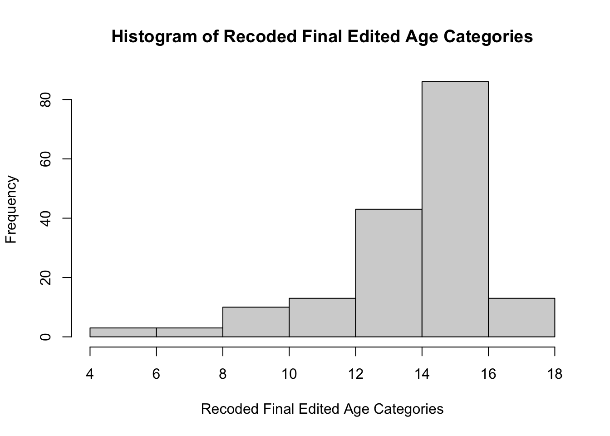
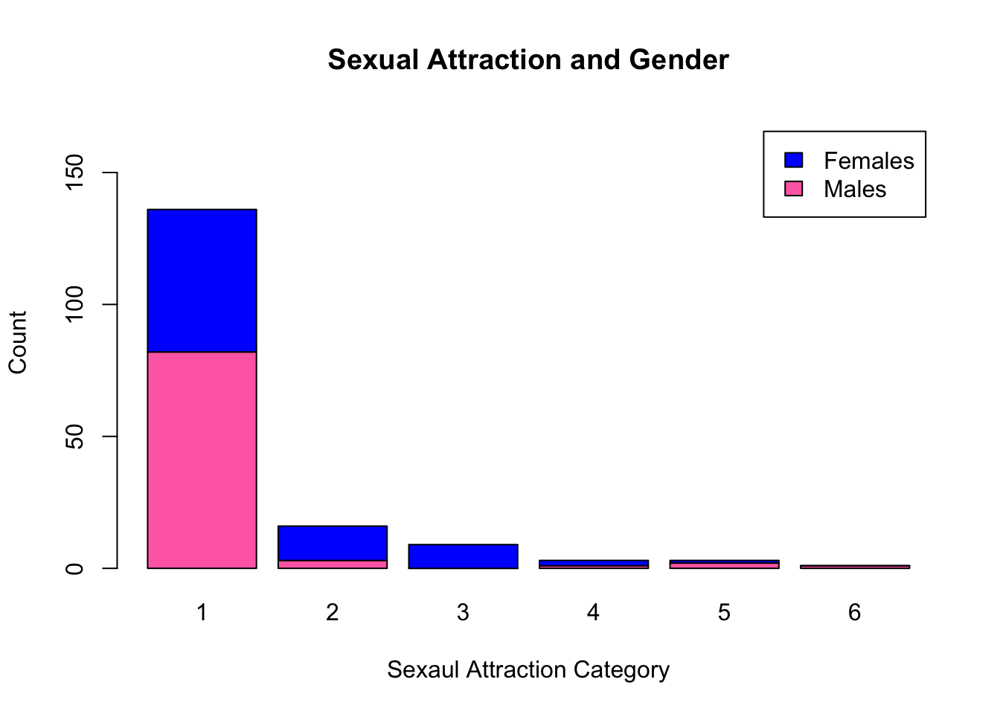
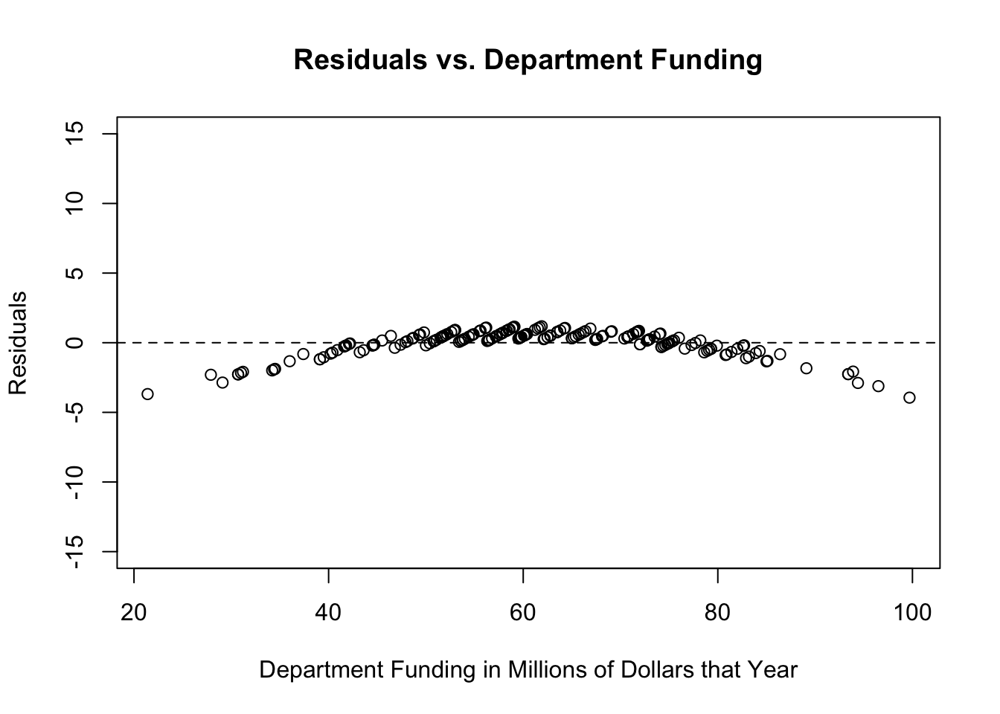
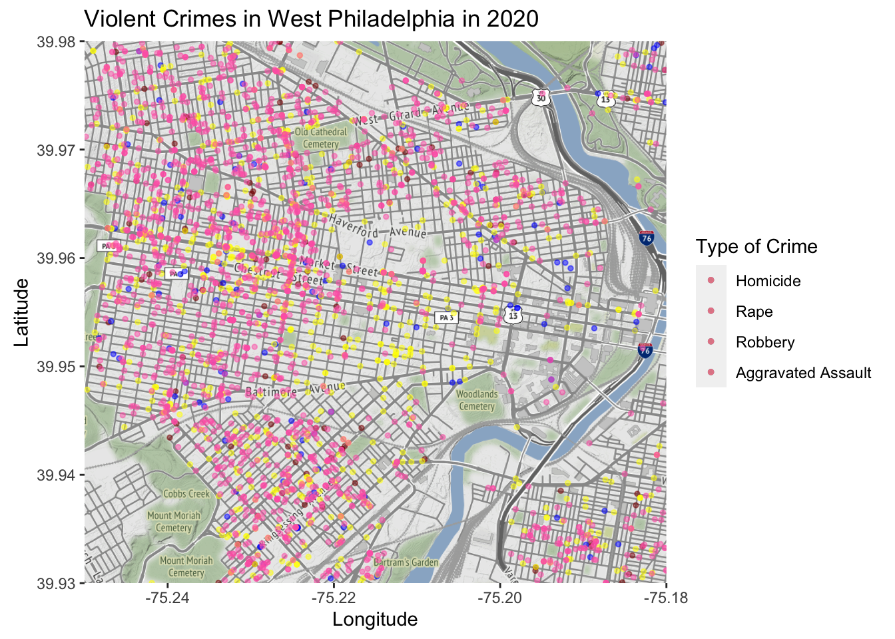

Here is some of my work in R Studio!
Portfolio
Introduction to Data Science
Introduction to Data Science
Problem Set 1
Question 1a
state <- c(1, 2, 3, 4, 5)
pop <- c(12.80, 19.45, 3.56, 0.97, 8.88)
cases <- c(139623, 439238, 52095, 17857, 196337)The first vector, state, is created using the concatenate function to combine the five states within the data set (state 1, 2, 3, 4, and 5). The second vector, pop, is created using the concatenate function to combine the populations for those five states (12.80, 19.45, 3.56, 0.97, 8.88). The third vector, cases, is created using the concatenate function to combine the numbers of cases for the five states within the data set (139623, 439238, 52095, 17857, 196337). Now, these three vectors store all of the data on COVID-19 for five northeastern states as provided within the data table.
Question 1b
ne.covid <- cbind(state, pop, cases)
ne.covid## state pop cases
## [1,] 1 12.80 139623
## [2,] 2 19.45 439238
## [3,] 3 3.56 52095
## [4,] 4 0.97 17857
## [5,] 5 8.88 196337The object ne.covid was created by combining the three columns (state, population, cases) from the data set into a matrix. The function cbind was implemented and assigned to ne.covid. Once created, running ne.covid displays the same data table but in R.
Question 1c
mean(ne.covid[,2])## [1] 9.132median(ne.covid[,2])## [1] 8.88max(ne.covid[,2])## [1] 19.45min(ne.covid[,2])## [1] 0.97The mean of the second column of ne.covid is 9.132, the median is 8.88, the maximum is 19.45, and the minimum is 0.97.
Question 1d
mean(ne.covid[,3])## [1] 169030median(ne.covid[,3])## [1] 139623max(ne.covid[,3])## [1] 439238min(ne.covid[,3])## [1] 17857The mean of the third column of ne.covid is 169030, the median is 139623, the maximum is 439238, and the minimum is 17857.
Question 1e
#creating a vector for state population in thousands
pop.in.1000s <- pop*1000
#creating a vector for covid-19 cases per 1000 residenrs
cases.per.1000 <- cases /pop.in.1000sThe vector cases.per.1000 is created by assigning the result of the cases divided by 1000 to the vector. This vector represents the number of COVID-19 cases in each state per 1000 residents.
Question 1f
state_chr <- c("PA", "NY", "CT", "DE", "NJ")
plot(y=cases.per.1000, x=pop, xlab = "Population in Millions", ylab = "Cases per 1000 Residents", main = "COVID-19 in the Northeast", type = "n")
plot(y=cases.per.1000, x=pop, xlab = "Population in Millions", ylab = "Cases per 1000 Residents", main = "COVID-19 in the Northeast", text(x = pop, y = cases.per.1000, labels = state_chr)) The scatterplot “COVID-19 in the Northeast” was created by using the plot function. Within the plot, y is designated as cases.per.1000, x is designated as population in millisons, the x-axis is labeled population with the xlab function, and the y-axis is labeled Cases per 1000 Residents with the ylab function. The title is created with the main function, and is labeled COVID-19 in the Northeast. The states are assigned to their corresponding dot on the scatterplot with the text function.
The scatterplot “COVID-19 in the Northeast” was created by using the plot function. Within the plot, y is designated as cases.per.1000, x is designated as population in millisons, the x-axis is labeled population with the xlab function, and the y-axis is labeled Cases per 1000 Residents with the ylab function. The title is created with the main function, and is labeled COVID-19 in the Northeast. The states are assigned to their corresponding dot on the scatterplot with the text function.
Question 1g
#adding cases.per.1000 and state_chr as columns to the ne.covid matrix
ne.covid <- cbind(ne.covid, cases.per.1000, state_chr)
#subsetting to identify the state most affected by COVID 19
ne.covid[ne.covid[, "cases.per.1000"] == max(cases.per.1000), c("state_chr", "cases.per.1000")]## state_chr cases.per.1000
## "NY" "22.5829305912596"#subsetting to identify the state least affected by COVID 19
ne.covid[ne.covid[, "cases.per.1000"] == min(cases.per.1000), c("state_chr", "cases.per.1000")]## state_chr cases.per.1000
## "PA" "10.908046875"New York has been the most affected by COVID-19, with around 22.58 cases per 1000 residents. Pennsylvania has been the least affceted by COVID-19, with about 10.91 cases per 1000 residents.
Question 1h If I could get one more piece of information about COVID-19 to describe how affected each of these states are, it would be the death rates. The death rates would signify the level of impact COVID-19 had on the states, as some people within the cases category may be asymptomatic or have mild symptoms and are okay now.
Question 2a
load("/Users/briannafisher/Dropbox/Github/BriannaFisher/data/2019MLBTeamsData.Rdata")
bb$avgattpergame <- as.numeric(bb$home.attendance/bb$games.played)
median(bb$avgattpergame)## [1] 14055.35max(bb$avgattpergame)## [1] 24532.77min(bb$avgattpergame)## [1] 5008.037Because there are an even number of teams, no singular team had the median average attendance of 14055.35 but the two in the middle were the Washington Nationals (with a median average attendance of 13949.27) and the Minnesota Twins (with a median average attendance of 14161.43). The team with the maximum average attendance per game was the Los Angeles Dodgers, with a maximum of 24532.77. The team with the minimum average attendance per game was the Miami Marlins, with a minimum of 5008.037.
Question 2b
bb$teambattavg <- as.numeric(bb$hits/bb$at.bats)
median(bb$teambattavg)## [1] 0.2492307max(bb$teambattavg)## [1] 0.2740068min(bb$teambattavg)## [1] 0.2364828Because there are an even number of teams, no singular team had the median team batting average of 0.2492307 but the two in the middle were the Oakland Athletics (with a median team batting average of 0.2488761) and the Cleveland Indians (with a median team batting average of 0.2495853). The team with the maximum batting average is the Houston Astros with a maximum of 0.2740068. The team with the minimum batting average is the Toronto Blue Jays with a minimum of 0.2364828.
Question 2c
plot(y=bb$avgattpergame, x=bb$teambattavg, xlab = "Team Batting Average",
ylab = "Average Attendance Per Game", main = "MLB 2019 Data") The graph looks very spread out, with the dots in seemingly randomly places. It is fairly nonlinear with no clear direction or association. The graph tells you that there is no relationship between team skill and attendance.
The graph looks very spread out, with the dots in seemingly randomly places. It is fairly nonlinear with no clear direction or association. The graph tells you that there is no relationship between team skill and attendance.
Question 2d
bb$runs.pitch <- as.numeric(bb$opponent.runs/bb$outs.pitched)
plot(y=bb$avgattpergame, x=bb$runs.pitch, xlab = "Opponent Runs per Outs Pitched",
ylab = "Average Attendance Per Game", main = "MLB 2019 Data 2") The graph looks like the lower the opponent runs per outs pitched, the higher the average attendance per game. The same is for the opposite, the lower the average attendance per game, the higher the opponent runs per outs pitched. There are some outliers, though, that do not fit the pattern. This tells you that while there is not a linear relationship between team skill and attendance, there is an association between the two.
The graph looks like the lower the opponent runs per outs pitched, the higher the average attendance per game. The same is for the opposite, the lower the average attendance per game, the higher the opponent runs per outs pitched. There are some outliers, though, that do not fit the pattern. This tells you that while there is not a linear relationship between team skill and attendance, there is an association between the two.
Question 2e
bb$teamwinper <- as.numeric(bb$wins/bb$games.played)
plot(y=bb$teamwinper, x=bb$teambattavg, xlab = "Team Batting Average",
ylab = "Team Winning Percentage", main = "MLB 2019 Data 3")The graph looks more linear than the other two, with team winning percentage increasing as team batting average increases. This tells you that there is a positive relationship between team batting average and team winning percentage.
Question 2 Bonus
prediction <- lm(formula = teamwinper ~ teambattavg, data = bb)
plot(bb$teamwinper ~ bb$teambattavg, xlab = "Team Batting Average",
ylab = "Team Winning Percentage", main = "MLB 2019 Data 3")
abline(prediction) To make a better prediction of a team’s winning percentage, the least squares regression line can be calculated and plotted in order to show where the predicted values would lie. This line is used to predict the value of y, or team winning percentage, for any value of x, or team batting average.
To make a better prediction of a team’s winning percentage, the least squares regression line can be calculated and plotted in order to show where the predicted values would lie. This line is used to predict the value of y, or team winning percentage, for any value of x, or team batting average.
Question 3a
recentgrads <- read.csv("/Users/briannafisher/Dropbox/Github/BriannaFisher/data/recentgrads.csv", header = TRUE, na="NA")
ncol(recentgrads)## [1] 15nrow(recentgrads)## [1] 173There are 15 columns and 173 rows in the “recentgrads” data set. The unit of analysis of the data is major, as the data focuses on the jobs college graduates received depending on their major.
Question 3b
table(recentgrads$Major_category)##
## Agriculture & Natural Resources Arts
## 10 8
## Biology & Life Science Business
## 14 13
## Communications & Journalism Computers & Mathematics
## 4 11
## Education Engineering
## 16 29
## Health Humanities & Liberal Arts
## 12 15
## Industrial Arts & Consumer Services Interdisciplinary
## 7 1
## Law & Public Policy Physical Sciences
## 5 10
## Psychology & Social Work Social Science
## 9 9There are 16 different major categories that the data are divided into. The engineering category has the most majors, with 29 different majors.
Question 3c
sum(recentgrads$Women, na.rm = T)## [1] 3895228percentwomen <- sum(recentgrads$Women, na.rm = T)/sum(recentgrads$Total, na.rm = T)
percentwomen * 100## [1] 57.52255There are 3,895,228 women included in the dataset. 57.52% of the people in the dataset are women.
Question 3d
recentgrads$womengrads <- as.numeric(recentgrads$Women/recentgrads$Total)
order(recentgrads$womengrads, na.last = T)## [1] 74 67 27 2 4 9 1 107 112 12 6 3 51 53 82 15 29 10
## [19] 11 66 21 26 76 20 46 39 32 18 43 54 25 44 72 23 85 113
## [37] 14 16 111 64 34 28 24 144 36 5 31 17 19 37 106 108 73 80
## [55] 159 33 136 65 142 63 70 38 48 58 13 7 148 42 115 59 86 77
## [73] 95 90 79 103 140 75 147 118 83 68 41 47 84 126 8 69 123 30
## [91] 98 55 122 133 81 93 161 60 91 62 134 124 143 78 102 168 61 57
## [109] 169 109 131 71 128 121 117 167 150 94 88 97 145 137 141 50 166 96
## [127] 158 138 92 163 49 125 100 160 127 120 162 116 130 154 87 40 153 45
## [145] 99 132 105 110 135 146 119 172 156 171 155 114 170 149 56 104 129 173
## [163] 89 35 152 157 101 151 139 52 164 165 22recentgrads[74,]## Major_code Major Total Men Women
## 74 3801 MILITARY TECHNOLOGIES 124 124 0
## Major_category Employed Full_time Part_time
## 74 Industrial Arts & Consumer Services 0 111 0
## Full_time_year_round Unemployed Unemployment_rate Median P25th P75th
## 74 111 0 0 40000 40000 40000
## womengrads
## 74 0order(recentgrads$womengrads, na.last = F)## [1] 22 74 67 27 2 4 9 1 107 112 12 6 3 51 53 82 15 29
## [19] 10 11 66 21 26 76 20 46 39 32 18 43 54 25 44 72 23 85
## [37] 113 14 16 111 64 34 28 24 144 36 5 31 17 19 37 106 108 73
## [55] 80 159 33 136 65 142 63 70 38 48 58 13 7 148 42 115 59 86
## [73] 77 95 90 79 103 140 75 147 118 83 68 41 47 84 126 8 69 123
## [91] 30 98 55 122 133 81 93 161 60 91 62 134 124 143 78 102 168 61
## [109] 57 169 109 131 71 128 121 117 167 150 94 88 97 145 137 141 50 166
## [127] 96 158 138 92 163 49 125 100 160 127 120 162 116 130 154 87 40 153
## [145] 45 99 132 105 110 135 146 119 172 156 171 155 114 170 149 56 104 129
## [163] 173 89 35 152 157 101 151 139 52 164 165recentgrads[165,]## Major_code Major Total Men Women Major_category
## 165 2307 EARLY CHILDHOOD EDUCATION 37589 1167 36422 Education
## Employed Full_time Part_time Full_time_year_round Unemployed
## 165 32551 27569 7001 20748 1360
## Unemployment_rate Median P25th P75th womengrads
## 165 0.04010498 28000 21000 35000 0.9689537The major that had the highest percentage of women graduates is education, with a percentage of 96.90%. The major that had the lowest percentage of women graduates is military technologies, with a percentage if 0%.
Question 4 Random sampling is such a vital component of survey research because it ensures that there is no bias within the sample. If people were chosen to take a survey, the surveyor could have picked specific people who they know will prove their hypothesis and therefore discredit the validity and accuracy of the survey. Random sampling also ensures that the results are representative of the entire population, which is why a sample of 1500 people is enough to learn about the whole US population. If the sample is completely random, then we can be confident that a sample of only 1500 people will include people who represent all different backgrounds and interests within the country.
Problem Set 2
Question 1a
load("/Users/briannafisher/Dropbox/Github/BriannaFisher/data/exitpoll2016.RData")
require(tidyverse)
exit.untouched <- exit
#The unit of observation is people, and the dataset had more than one row for every observation.
#Because there are two rows for each observation, using the spread function will condense each repeated row into one. Since the favorable candidate and favorable rating variables are the ones repeated, they are used to create the new columns
exit <- spread(exit,
key = favorable.cand,
value = favorable.rating)
head(exit)## id PRSPA16 PHIL3 partyid married sex.age.race educ.hs educ.somecoll
## 1 138951 2 3 2 1 male 30-44 White 1 0
## 2 138952 1 2 1 1 male 65+ White 0 0
## 3 138953 2 3 1 2 male 45-65 White 1 0
## 4 138954 1 1 1 1 female 65+ White 0 0
## 5 138955 1 1 2 2 female 18-29 White 0 1
## 6 138956 2 3 2 1 male 65+ White 1 0
## educ.bach educ.postgrad clinton trump
## 1 0 0 2 1
## 2 0 1 1 2
## 3 0 0 2 1
## 4 0 1 1 2
## 5 0 0 1 2
## 6 0 0 2 1#Using the recode function, the values of 1 and 2 can be replaced for favorable and unfavorable
attributes(exit.untouched$favorable.rating)## $label
## [1] "Is your opinion of [favorable.cand]:"
##
## $labels
## favorable unfavorable omit
## 1 2 9exit$clinton <- recode(exit$clinton, "1" = "Favorable", "2" = "Unfavorable")
exit$trump <- recode(exit$trump, "1" = "Favorable", "2" = "Unfavorable")Question 1b
#the gather function brings responses that are spread over multiple columns into one. The recode function
#changes the data from numeric values (0/1) that don't make sense
exit <- gather(exit,
key = "educ",
value = "val",
starts_with("educ."))
exit$educ <- recode(exit$educ, "educ.hs" = "hs", "educ.somecoll" = "some college",
"educ.bach" = "bachelors", "educ.postgrad" = "postgrad")
#Since all unknown values are coded as 99 (using attributes checks this), I can recode those values to NA
attributes(exit.untouched$educ.hs)## $label
## [1] "What was the last grade of school you completed? [high school or less]"
##
## $labels
## yes no unknown
## 1 0 99attributes(exit.untouched$educ.somecoll)## $label
## [1] "What was the last grade of school you completed? [some college/assoc. degree]"
##
## $labels
## yes no unknown
## 1 0 99attributes(exit.untouched$educ.bach)## $label
## [1] "What was the last grade of school you completed? [college graduate]"
##
## $labels
## yes no unknown
## 1 0 99attributes(exit.untouched$educ.postgrad)## $label
## [1] "What was the last grade of school you completed? [postgraduate study]"
##
## $labels
## yes no unknown
## 1 0 99exit[exit$educ == "99"] <- NA
exit$val <- NULL
#Could have also changed the names by reshaping the education data
exit$educ[exit$educ == "educ.hs"] <- "hs"
exit$educ[exit$educ == "educ.somecoll"] <- "some college"
exit$educ[exit$educ == "educ.bach"] <- "bachelors"
exit$educ[exit$educ == "educ.postgrad"] <- "postgrad"Question 1c
#The separate function splits the sex.age.race column into three separate columns
exit <- separate(exit,
col = "sex.age.race",
into = c("sex","age","race"), sep = " ")
#Converting the columns to factors and then replacing the missing/unknown values with NA cleans the data
exit$age = as.factor(exit$age)
summary(exit$age)## -999 18-29 30-44 45-65 65+
## 52 1948 2924 4600 2304exit$age[which(exit$age == "-999")] = NA
summary(exit$age)## -999 18-29 30-44 45-65 65+ NA's
## 0 1948 2924 4600 2304 52exit$sex = as.factor(exit$sex)
summary(exit$sex)## female male unknown
## 6484 5328 16exit$sex[which(exit$sex == "unknown")] = NA
summary(exit$sex)## female male unknown NA's
## 6484 5328 0 16#The race values are already coded as NA for missing, but could have done this
exit$race = as.factor(exit$race)
summary(exit$race)## Asian Black Hispanic/Latino NA Other
## 124 1268 768 92 180
## White
## 9396exit$race[which(exit$race == "NA")] = NA
summary(exit$race)## Asian Black Hispanic/Latino NA Other
## 124 1268 768 0 180
## White NA's
## 9396 92Question 1d
#the new varible third.party is created by recoding everything as NA and then recoding each value to the
#new value. Using NULL removes the variable from the data set
attributes(exit.untouched$PRSPA16)## $label
## [1] "In today's election for president, did you just vote for:"
##
## $format.stata
## [1] "%8.0g"
##
## $labels
## Did not vote Hillary Clinton Donald Trump Gary Johnson Jill Stein
## 0 1 2 3 4
## Other
## 9exit$third.party <- "NA"
exit$third.party[exit$PRSPA16 == 1] <- "0"
exit$third.party[exit$PRSPA16 == 2] <- "0"
exit$third.party[exit$PRSPA16 == 3] <- "1"
exit$third.party[exit$PRSPA16 == 4] <- "1"
exit$third.party[exit$PRSPA16 == 9] <- "1"
exit$PRSPA16 <- NULLQuestion 1e
#the as.numeric function converts the married variable into a dummy variable, coding 1 for married and
#0 for not married
attributes(exit.untouched$married) #tells us that 1 is yes and 2 is no## $label
## [1] "Are you currently married?"
##
## $format.stata
## [1] "%8.0g"
##
## $labels
## Yes No
## 1 2exit$married <- as.numeric(exit$married==1)Question 1f
#the factor function recodes the PHIL3 and partyid variables into meaningful labels
attributes(exit.untouched$PHIL3)## $label
## [1] "On most political matters, do you consider yourself:"
##
## $format.stata
## [1] "%8.0g"
##
## $labels
## Liberal Moderate Conservative
## 1 2 3exit$PHIL3 <- factor(exit$PHIL3, labels = c("Liberal", "Moderate", "Conservative"))
attributes(exit.untouched$partyid)## $label
## [1] "No matter how you voted today, do you usually think of yourself as a:"
##
## $format.stata
## [1] "%8.0g"
##
## $labels
## Democrat Republican Independent Something else
## 1 2 3 4exit$partyid <- factor(exit$partyid, labels = c("Democrat", "Republican", "Independent",
"Something Else"))Question 1g
#the rename function will change the name of a column to something more meaningful
exit <- rename(exit, ideology = PHIL3)Question 1h
#I split the age variable into the different groups and then also made the partyid ordinal so that they can be compared. From there I made them into a table, and then did the frequencies of the results. Lastly, I added together all of the values in the table to make sure that they are equal to 1.
exit$Age.group <- "NA"
exit$Age.group[exit$age == "18-29"] <- 1
exit$Age.group[exit$age == "30-44"] <- 2
exit$Age.group[exit$age == "45-65"] <- 3
exit$Age.group[exit$age == "65+"] <- 4
exit$ID <- "NA"
exit$ID[exit$partyid == "Republican"] <- 5
exit$ID[exit$partyid == "Democrat"] <- 6
exit$ID[exit$partyid == "Independent"] <- 7
exit$ID[exit$partyid == "Something Else"] <- 8
mytable <- table(exit$Age.group, exit$ID)
prop.table(mytable)##
## 5 6 7 8 NA
## 1 0.0568143389 0.0696652012 0.0229962800 0.0064254312 0.0087926953
## 2 0.0825160636 0.0980723706 0.0480216436 0.0121745012 0.0064254312
## 3 0.1531958066 0.1531958066 0.0520798106 0.0125126818 0.0179235712
## 4 0.0723706459 0.0798106189 0.0280689888 0.0030436253 0.0114981400
## NA 0.0006763612 0.0020290835 0.0013527224 0.0000000000 0.0003381806sum(prop.table(mytable))## [1] 1Comparing the frequencies of the age group and ID variables, there is a 6.97% chance of people in the age group of 18-29 being democratic and a 5.68% chance of people being 18-29 and republican. The values are lower for independents and ‘something else,’ with a 0.64% chance of someone 18-29 being independent and a 0.88% chance of someone being 18-29 and something else. This is fairly expected, as young people are more likely to be democratic than any other party. Another interesting observation is that there is the same 15.32% chance of someone being 45-65 years old and either a republican or democrat. The 45-65-year-old age group also has the highest chance of being independent (5.21%) and something else (1.25%) than any other group. This may be explained by the fact that middle aged and older people are more likely to watch the news and therefore align with a particular political party, or because this age group has particularly high voter turnout and therefore need to be registered to a party to participate.
Question 2a
library(rio)
UNICEF_untouched <- rio::import("/Users/briannafisher/Dropbox/Github/BriannaFisher/data/unicefdata.xlsx")
UNICEF <- UNICEF_untouched
#Problems with the data:
#1. Columns are named with numbers
#2. Column names are in the actual columns
#3. Have dashes and x's within the dataQuestion 2b
#The names function renames the columns with the names in the first row, and then the first two rows can be deleted. Using rownames will renumber the rows so that it does not start at 3.
names(UNICEF) <- lapply(UNICEF[1, ], as.character)
UNICEF = UNICEF[-1,]
UNICEF = UNICEF[-1,]
row.names(UNICEF) <- 1:nrow(UNICEF)Question 2c
#rowmeans tells us the mean value of each row in the data set. The rows that have "1" as their mean
#are blank and should be removed. The -c function lets you drop rows or
#columns from the data set
rowMeans(is.na(UNICEF))## 1 2 3 4 5 6 7
## 0.14285714 0.14285714 0.07142857 0.14285714 0.14285714 0.14285714 0.14285714
## 8 9 10 11 12 13 14
## 0.14285714 0.14285714 0.14285714 0.14285714 0.14285714 0.14285714 0.14285714
## 15 16 17 18 19 20 21
## 0.14285714 0.14285714 0.14285714 0.14285714 0.07142857 0.07142857 0.14285714
## 22 23 24 25 26 27 28
## 0.14285714 0.14285714 0.14285714 0.14285714 0.14285714 0.07142857 0.07142857
## 29 30 31 32 33 34 35
## 0.14285714 0.14285714 0.14285714 0.14285714 0.14285714 0.14285714 0.14285714
## 36 37 38 39 40 41 42
## 0.14285714 0.07142857 0.14285714 0.14285714 0.14285714 0.14285714 0.14285714
## 43 44 45 46 47 48 49
## 0.14285714 0.14285714 0.14285714 0.14285714 0.00000000 0.14285714 0.14285714
## 50 51 52 53 54 55 56
## 0.14285714 0.07142857 0.14285714 0.14285714 0.14285714 0.14285714 0.14285714
## 57 58 59 60 61 62 63
## 0.14285714 0.14285714 0.07142857 0.14285714 0.14285714 0.14285714 0.14285714
## 64 65 66 67 68 69 70
## 0.14285714 0.14285714 0.14285714 0.14285714 0.14285714 0.14285714 0.14285714
## 71 72 73 74 75 76 77
## 0.14285714 0.14285714 0.14285714 0.07142857 0.14285714 0.14285714 0.14285714
## 78 79 80 81 82 83 84
## 0.14285714 0.14285714 0.14285714 0.14285714 0.14285714 0.14285714 0.14285714
## 85 86 87 88 89 90 91
## 0.14285714 0.14285714 0.14285714 0.14285714 0.14285714 0.07142857 0.14285714
## 92 93 94 95 96 97 98
## 0.14285714 0.14285714 0.07142857 0.14285714 0.07142857 0.14285714 0.07142857
## 99 100 101 102 103 104 105
## 0.14285714 0.14285714 0.14285714 0.14285714 0.14285714 0.07142857 0.14285714
## 106 107 108 109 110 111 112
## 0.00000000 0.14285714 0.14285714 0.14285714 0.07142857 0.14285714 0.14285714
## 113 114 115 116 117 118 119
## 0.14285714 0.14285714 0.14285714 0.14285714 0.14285714 0.14285714 0.14285714
## 120 121 122 123 124 125 126
## 0.07142857 0.14285714 0.14285714 0.14285714 0.14285714 0.07142857 0.14285714
## 127 128 129 130 131 132 133
## 0.07142857 0.14285714 0.14285714 0.14285714 0.14285714 0.14285714 0.14285714
## 134 135 136 137 138 139 140
## 0.14285714 0.14285714 0.14285714 0.07142857 0.14285714 0.14285714 0.14285714
## 141 142 143 144 145 146 147
## 0.14285714 0.14285714 0.14285714 0.14285714 0.14285714 0.14285714 0.14285714
## 148 149 150 151 152 153 154
## 0.14285714 0.14285714 0.14285714 0.07142857 0.14285714 0.14285714 0.14285714
## 155 156 157 158 159 160 161
## 0.14285714 0.14285714 0.14285714 0.14285714 0.14285714 0.14285714 0.14285714
## 162 163 164 165 166 167 168
## 0.14285714 0.07142857 0.14285714 0.14285714 0.14285714 0.14285714 0.14285714
## 169 170 171 172 173 174 175
## 0.14285714 0.14285714 0.14285714 0.14285714 0.14285714 0.07142857 0.14285714
## 176 177 178 179 180 181 182
## 0.14285714 0.14285714 0.14285714 0.14285714 0.14285714 0.14285714 0.14285714
## 183 184 185 186 187 188 189
## 0.14285714 0.14285714 0.14285714 0.07142857 0.14285714 0.14285714 0.14285714
## 190 191 192 193 194 195 196
## 0.14285714 0.14285714 0.14285714 0.14285714 0.14285714 0.14285714 0.07142857
## 197 198 199 200 201 202 203
## 0.14285714 1.00000000 0.92857143 0.14285714 0.14285714 0.14285714 0.14285714
## 204 205 206 207 208 209 210
## 0.14285714 0.14285714 0.14285714 0.14285714 0.14285714 0.14285714 1.00000000
## 211 212 213 214 215 216 217
## 0.92857143 0.92857143 0.92857143 0.92857143 0.92857143 0.92857143 0.92857143
## 218
## 0.92857143which(rowMeans(is.na(UNICEF)) == 1)## 198 210
## 198 210UNICEF <- UNICEF[,-c(12,14)]
UNICEF <- UNICEF[-c(198),]
row.names(UNICEF) <- 1:nrow(UNICEF)
UNICEF <- UNICEF[-c(209),]
row.names(UNICEF) <- 1:nrow(UNICEF)
#Now, the dataset has 12 columns and 216 rows. (When I take out the summary indicators on 2. h.,
#the dataset has 12 columns and 215 rows).NICEF)) == 1)Question 2d
UNICEF <- rename(UNICEF, c("Countries" = "Countries and areas",
"U5MR.1990" = "Under-5 mortality rate (U5MR) (1990)",
"U5MR.2015" = "Under-5 mortality rate (U5MR) 2015",
"U5MR.Male" = "U5MR (male)", "U5MR.Female" = "U5MR (female)",
"Total.Pop" = "Total population (thousands)",
"Annual.Births" = "Annual no. of births (thousands)",
"GNI.Per.Capita" = "GNI per capita (US$)",
"Neonatal.Mortality.Rate" = "Neonatal mortality rate",
"Life.Expect.Birth" = "Life expectancy at birth (years)",
"Total.Adult.Lit.Rate" = "Total adult literacy rate (%)",
"Primary.School.Net.Enrollment.Ratio" = "Primary school net enrolment ratio (%)"))Question 2e
which(UNICEF$Countries == "Notes:")## [1] 209UNICEF <- UNICEF[-c(209:216),] Question 2f
#This recodes all values of - in the dataset to NA
UNICEF[UNICEF == "-"] <- NA
#This converts the columns to be numeric and replaces the letters with NAs
UNICEF[,2:12] <- as.numeric(as.character(unlist(UNICEF[,2:12])))Question 2g
#The round function will round the values to the largest whole number after multiplying the variable by 1000
UNICEF$Total.Pop <- round(UNICEF$Total.Pop*1000)
UNICEF$Annual.Births <- round(UNICEF$Annual.Births*1000)Question 2h
#Subsetting the data creates a new dataset with only the wanted obeservations.
summary.indicators <- subset(UNICEF[199:208,])
UNICEF <- UNICEF[-c(198:208),]
#Now, the UNICEF dataset has 197 rows and the summary indicators dataset has 10 rows.Question 2i
#to find the change in mortality rate from 1990 to 2015, the two can be subtracted (any countries with a positive value had an increase in mortality rate)
change.mortality <- (UNICEF$U5MR.2015) - (UNICEF$U5MR.1990)
print(change.mortality)## [1] -90 -27 -21 -6 -69 -18 -15 -36 -5 -6 -63 -12 -17 -106 -5
## [16] -12 -6 -23 -80 -101 -86 -13 -10 -45 -2 -12 -113 -90 -38 -88
## [31] -50 -3 -47 -76 -11 -43 -19 -51 -49 -16 -7 -60 -9 -7 -8
## [46] -12 -18 -89 -5 -54 4 -29 -35 -62 -42 -96 -104 -17 -146 -8
## [61] -5 -5 -42 -101 -36 -5 -65 -8 -11 -52 -144 -136 -21 -77 NA
## [76] -38 -13 -4 -78 -58 -42 -22 -5 -8 -6 -15 -3 -19 -39 -53
## [91] -40 -9 -44 -95 -12 -25 2 -185 -29 NA -12 -7 -111 -178 -10
## [106] -85 -139 -5 -14 -33 -9 -34 -21 -4 -86 -12 -52 -161 -60 -29
## [121] -22 -105 -4 -5 -45 -232 -104 9 -6 -27 -58 -20 -14 -32 -26
## [136] -63 -30 -12 -11 -13 -4 -17 -27 -16 -110 -17 -9 -7 -13 -8
## [151] -64 -29 -93 -21 -3 -144 -5 -11 -7 -12 -43 -19 -160 -7 -11
## [166] -23 -58 -27 -14 -4 -4 -24 -63 -25 -31 -123 -68 -5 -11 -43
## [181] -61 -40 -30 -132 -11 -10 -5 -116 -4 -13 -33 -8 -15 -29 -84
## [196] -127 -5Three countries had a mortality rate that increased over this 25-year period. The countries are Dominica, Lesotho, and Niue.
Question 2j
#the cor functions finds the correlation between the GNI per captia and neonatal mortality rate
cor(UNICEF$GNI.Per.Capita,
UNICEF$Neonatal.Mortality.Rate, "complete.obs")## [1] -0.560275#the plot function creates a scatterplot of the GNI per capita and neonatal mortality rate
plot(y=UNICEF$Neonatal.Mortality.Rate, x=UNICEF$GNI.Per.Capita,
xlab = "Gross National Income Per Capita in U.S. Dollars",
ylab = "Neonatal Mortality Rate",
main = "Gross National Income Per Capita in U.S. Dollars and Neonatal Mortality") When looking at the relationship between Gross National Income per capita and Neonatal Mortality Rate, the correlation can be calculated as -0.56. This indicates that there is a negative association between Gross National Income per capita and Neonatal Mortality Rate. This can also be seen in the plot of Gross National Income per capita and Neonatal Mortality Rate, with Neonatal Morality Rate decreasing as Gross National Income per capita increases.
When looking at the relationship between Gross National Income per capita and Neonatal Mortality Rate, the correlation can be calculated as -0.56. This indicates that there is a negative association between Gross National Income per capita and Neonatal Mortality Rate. This can also be seen in the plot of Gross National Income per capita and Neonatal Mortality Rate, with Neonatal Morality Rate decreasing as Gross National Income per capita increases.
Problem Set 3
Question 1a
library(rio)
library(tidyr)
library(dplyr)
#the rio package reads in the data from excel
mont_untouched <- rio::import("/Users/briannafisher/Dropbox/Github/BriannaFisher/data/2018-General-Montgomery.xls")
mont <- mont_untouched
dekalb <- read.csv("/Users/briannafisher/Dropbox/Github/BriannaFisher/data/dekalb-cleaned.csv")
#first, dim is used to see how many columns are coded as precincts. Then the gather function is used to
#put all of the precincts in one column
dim(mont)## [1] 195 54mont <- gather(mont, key = "precinct", value = "votes", 4:54)
#Using !grepl, I can remove the columns with the over and under votes and the number of registered voters and
#ballots cast in each precinct
mont <- mont[!grepl("Over Votes", mont$Candidate),]
mont <- mont[!grepl("Under Votes", mont$Candidate),]
mont <- mont[!grepl("REGISTERED VOTERS", mont$`Contest Title`),]
mont <- mont[!grepl("BALLOTS CAST", mont$`Contest Title`),]
row.names(mont) <- 1:nrow(mont)
#na.omit is used to remove the rows with missing vote data
mont <- na.omit(mont)
mont <- rename(mont, "office" = "Contest Title", "party" = "Party",
"candidate" = "Candidate")
#the recode function is used to clean the values within the party variable
unique(mont$party)## [1] "DEM" "REP" "NON" "IND"mont$party <- recode(mont$party, "DEM" = "Democrat", "REP" = "Republican", "NON" = "No party",
"IND" = "Independent")
#you can create new variables for the state and county
mont$state <- "Alabama"
mont$county <- "Montgomery"
#the "c" function reorders the columns
mont <- mont[, c(6, 7, 4, 1, 3, 2, 5)]Question 1b
#first create vectors with what you want to loop over
office <- unique(mont$office)
office## [1] "STRAIGHT PARTY"
## [2] "UNITED STATES REPRESENTATIVE, 2ND CONGRESSIONAL DISTRICT"
## [3] "GOVERNOR"
## [4] "LIEUTENANT GOVERNOR"
## [5] "ATTORNEY GENERAL"
## [6] "CHIEF JUSTICE OF THE SUPREME COURT"
## [7] "ASSOCIATE JUSTICE OF THE SUPREME COURT, PLACE 1"
## [8] "ASSOCIATE JUSTICE OF THE SUPREME COURT, PLACE 2"
## [9] "ASSOCIATE JUSTICE OF THE SUPREME COURT, PLACE 3"
## [10] "ASSOCIATE JUSTICE OF THE SUPREME COURT, PLACE 4"
## [11] "STATE TREASURER"
## [12] "COMMISSIONER OF AGRICULTURE AND INDUSTRIES"
## [13] "SECRETARY OF STATE"
## [14] "STATE AUDITOR"
## [15] "COURT OF CIVIL APPEALS JUDGE, PLACE 1"
## [16] "COURT OF CIVIL APPEALS JUDGE, PLACE 2"
## [17] "COURT OF CIVIL APPEALS JUDGE, PLACE 3"
## [18] "COURT OF CRIMINAL APPEALS JUDGE, PLACE 1"
## [19] "COURT OF CRIMINAL APPEALS JUDGE, PLACE 2"
## [20] "COURT OF CRIMINAL APPEALS JUDGE, PLACE 3"
## [21] "PUBLIC SERVICE COMMISSION, PLACE 1"
## [22] "PUBLIC SERVICE COMMISSION, PLACE 2"
## [23] "CIRCUIT COURT JUDGE, 15TH JUDICIAL CIRCUIT, PLACE 6"
## [24] "STATE SENATOR, DISTRICT 26"
## [25] "STATE REPRESENTATIVE, DISTRICT 77"
## [26] "PROPOSED STATEWIDE AMENDMENT NUMBER ONE (1)"
## [27] "PROPOSED STATEWIDE AMENDMENT NUMBER TWO (2)"
## [28] "PROPOSED STATEWIDE AMENDMENT NUMBER THREE (3)"
## [29] "PROPOSED STATEWIDE AMENDMENT NUMBER FOUR (4)"
## [30] "CIRCUIT CLERK, MONTGOMERY COUNTY"
## [31] "DISTRICT COURT JUDGE, MONTGOMERY COUNTY, PLACE NO. 2"
## [32] "DISTRICT COURT JUDGE, MONTGOMERY COUNTY, PLACE NO. 3"
## [33] "MONTGOMERY COUNTY JUDGE OF PROBATE"
## [34] "MONTGOMERY COUNTY SHERIFF"
## [35] "PROPOSED LOCAL AMENDMENT NUMBER ONE (1)"
## [36] "STATE SENATOR, DISTRICT 25"
## [37] "STATE REPRESENTATIVE, DISTRICT 74"
## [38] "STATE REPRESENTATIVE, DISTRICT 76"
## [39] "UNITED STATES REPRESENTATIVE, 7TH CONGRESSIONAL DISTRICT"
## [40] "STATE REPRESENTATIVE, DISTRICT 69"
## [41] "STATE REPRESENTATIVE, DISTRICT 78"
## [42] "UNITED STATES REPRESENTATIVE, 3RD CONGRESSIONAL DISTRICT"
## [43] "STATE REPRESENTATIVE, DISTRICT 75"
## [44] "STATE REPRESENTATIVE, DISTRICT 90"precinct <- unique(mont$precinct)
precinct## [1] "101 D" "102 V" "103 M" "104 W" "105 A" "106 P" "107 T" "201 S" "202 B"
## [10] "203 H" "204 F" "205 S" "206 M" "207 H" "208 C" "209 F" "210 P" "211 R"
## [19] "301 D" "302 F" "303 E" "304 L" "305 F" "306 E" "401 S" "402 M" "403 C"
## [28] "404 A" "405 H" "406 N" "407 K" "408 H" "409 C" "410 S" "411 U" "412 U"
## [37] "413 W" "501 T" "502 S" "503 L" "504 R" "505 F" "506 D" "507 D" "508 P"
## [46] "509 W" "510 G" "511 A" "512 S" "ABSEN" "PROVI"#create a matrix to store the results of the loop
office.precinct <- matrix(NA, nrow=length(precinct), ncol=length(office))
#loop over the votes for the precincts and offices
for(j in 1: length(office)){
for(i in 1:length(precinct)){
office.precinct[i,j] <- sum(mont$votes[mont$precinct==precinct[i] & mont$office==office[j]],
na.rm=T)
}
}
#you can use the max function to find the maximum number of votes in one precinct/office
#combination
max(office.precinct)## [1] 4675#which will tell you the exact row / column of the office / precinct
which(office.precinct == max(office.precinct), arr.ind = T)## row col
## [1,] 23 3#I can subset from my vectors to find the names of the combination
office[3]## [1] "GOVERNOR"precinct[23]## [1] "305 F"The office-precinct combination that had the highest number of votes is the 305 F precinct and Governor office with 4675 votes.
Question 1c
#You can first find the mean since this is the statistic we want
mean(mont$votes[mont$party=="Democrat" & mont$office=="GOVERNOR"],na.rm=T)## [1] 955.3333mean(mont$votes[mont$party=="Republican" & mont$office=="GOVERNOR"],na.rm=T)## [1] 558.6471#you can then use a t test to find out if either means are statistically significant
diff.test <- t.test(mont$votes[mont$party=="Democrat" & mont$office=="GOVERNOR"],
mont$votes[mont$party=="Republican" & mont$office=="GOVERNOR"])
diff.test##
## Welch Two Sample t-test
##
## data: mont$votes[mont$party == "Democrat" & mont$office == "GOVERNOR"] and mont$votes[mont$party == "Republican" & mont$office == "GOVERNOR"]
## t = 2.9114, df = 99.392, p-value = 0.004442
## alternative hypothesis: true difference in means is not equal to 0
## 95 percent confidence interval:
## 126.3468 667.0257
## sample estimates:
## mean of x mean of y
## 955.3333 558.6471The average number of votes for the Democratic candidate for Governor was 955. The average number of votes for the Republican candidate for Governor was 559. These two numbers are statistically distinguishable from one another. If the average number of votes for the Democratic and Republican candidates for Governor is the same, we would expect to see a difference in the means 0.44% of the time. Since the p-value (0.0044) is so low, we can reject the null hypothesis. There is significant statistical evidence to support that the two means are statistically distinguishable from each other.
Question 2a
# You can use the sample function to simulate fliping a coin
dodgers.win.prob <- c(1,1,1,1,1,1,0,0,0,0)
sample(dodgers.win.prob, size = 7, replace = TRUE) #output: 0 0 1 1 1 0 1## [1] 1 1 1 1 0 1 1dodgers <- sum(sample(dodgers.win.prob, size = 7, replace = TRUE))In my simulation, the Dodgers won a majority of the games (actually four exactly), therefore winning the world series.
Question 2b
#first create an empty vector to put the results
dodgers.wins <- rep(NA, 10000)
#Then you can use a for loop to simulate the same 7-game world series 10,000 times
for(i in 1:10000){
dodgers.wins[i]<- sum(sample(dodgers.win.prob, size = 7, replace = TRUE))
}
#you can create a probability table of the results
prob.dodgers.wins <- prop.table(table(dodgers.wins))
print(prob.dodgers.wins)## dodgers.wins
## 0 1 2 3 4 5 6 7
## 0.0013 0.0172 0.0748 0.2006 0.2865 0.2662 0.1273 0.0261#to find the proportion of times the Dodgers won 4 or more games, you can sum the results
sum(prob.dodgers.wins[5:8])## [1] 0.7061The Dodgers win four or more games 71.33% of the time.
Question 2c
#You can use sequence to make a vector with every second game
odd.games <- seq(7, 151, by = 2)
dodgers.win.95 <- rep(NA, length(odd.games))
#you can use a double for loop to find the wins for the length of the series
for(j in 1:length(odd.games)){
for(i in 1:10000){
dodgers.wins[i]<- sum(sample(dodgers.win.prob, size = odd.games[j], replace = TRUE))
}
dodgers.win.95[j]<- prop.table(table(dodgers.wins >= (odd.games[j]/2)))["TRUE"]
}
print(dodgers.win.95)## [1] 0.7101 0.7347 0.7515 0.7768 0.7866 0.7984 0.8134 0.8236 0.8369 0.8455
## [11] 0.8557 0.8709 0.8733 0.8757 0.8834 0.8976 0.8983 0.9016 0.9111 0.9156
## [21] 0.9178 0.9203 0.9248 0.9305 0.9326 0.9356 0.9423 0.9420 0.9467 0.9526
## [31] 0.9488 0.9553 0.9559 0.9596 0.9626 0.9615 0.9647 0.9667 0.9707 0.9705
## [41] 0.9708 0.9759 0.9743 0.9742 0.9775 0.9774 0.9773 0.9816 0.9808 0.9786
## [51] 0.9827 0.9822 0.9836 0.9828 0.9849 0.9853 0.9851 0.9867 0.9869 0.9862
## [61] 0.9892 0.9902 0.9871 0.9902 0.9919 0.9897 0.9907 0.9915 0.9900 0.9927
## [71] 0.9945 0.9933 0.9932#you can use the plot function to make a graph of the proportion of times the better team
# wins and the series length
plot(x = odd.games, y = dodgers.win.95, xlab = "Series Length", ylab =
"Proportion of Times the Better Team Wins", main = "Simulated World Series Wins")
abline(h=0.95) The series would have to be around 67 games in order for the better team to win 95% of the 10,000 simulated world series games.
The series would have to be around 67 games in order for the better team to win 95% of the 10,000 simulated world series games.
Question 2d Given the current series length, we cannot reject the null hypothesis that the better team should win 50% of the time. Because the standard is that better team should win 95% of the time, our value of 71.33% is statistically insignificant when they only play seven games.
Problem Set 4
fem <- read.csv("/Users/briannafisher/Dropbox/Github/BriannaFisher/data/washington_replication_data.csv")
#You can use the dim full get the number of members in Congress since each row corresponds to a member
dim(fem)## [1] 435 16#you can use the sum function to add the number of females and divide it by the total number of members to
#get the proportion of females in Congress
sum(fem$female)/435## [1] 0.1103448#doing this gets the same answer
mean(fem$female, na.rm = T)## [1] 0.1103448#you can use the sum function to add the number of republicans (when party = 2) and divide it by the
#total number of members to get the proportion of females in Congress
sum(fem$party==2)/435## [1] 0.5241379#doing this gets the same answer
mean(fem$party == 2, na.rm = T)## [1] 0.5241379#you can create logical variables for democrats and women in order to find the proportions
fem$women <- fem$female == 1
fem$democrat <- fem$party == 1
mean(fem$women[fem$democrat], na.rm = T)## [1] 0.1650485#you can do the same thing for republicans
fem$rep <- fem$party == 2
mean(fem$women[fem$rep], na.rm = T)## [1] 0.06140351There are 435 members of Congress in the dataset. 11.03% of the representations are women. 52.41% of the representatives are republicans. 16.50% of democrats are women. 6.14% of republicans are women.
Question 1b
#you can use the summary function to find the summary statistics of the AAUW variable
summary(fem$aauw)## Min. 1st Qu. Median Mean 3rd Qu. Max.
## 0.00 0.00 38.00 47.31 100.00 100.00#you can use the table function to see how many legislators have each score
table(fem$aauw)##
## 0 13 14 25 38 40 50 60 63 75 88 100
## 135 42 1 25 16 1 13 1 31 17 41 112#you can create logical variables for democrats and people who have a score of 100 in order to
#find the proportions
fem$dem.100 <- fem$aauw == 100
sum(fem$women[fem$dem.100], na.rm = T)## [1] 30#you can create logical variables for democrats and people who have a score of 0 in order to
#find the proportions
fem$dem.0 <- fem$aauw == 0
sum(fem$women[fem$dem.0], na.rm = T)## [1] 5The mean of the AAUW’s legislative score variable is 47.31, the median is 38, the minimum is 0, and the maximum is 100. 135 legislators have a score of 0, while 112 legislators have a score of 100. 30 democrats have a score of 100, while 5 have a score of 0.
Question 1c
#you can use the linear model function to run a regression, and the summary function to display the output
reg1 <- lm(aauw ~ female, data=fem)
summary(reg1)##
## Call:
## lm(formula = aauw ~ female, data = fem)
##
## Residuals:
## Min 1Q Median 3Q Max
## -75.875 -43.765 -5.765 44.235 56.235
##
## Coefficients:
## Estimate Std. Error t value Pr(>|t|)
## (Intercept) 43.765 2.076 21.080 < 2e-16 ***
## female 32.110 6.250 5.138 4.22e-07 ***
## ---
## Signif. codes: 0 '***' 0.001 '**' 0.01 '*' 0.05 '.' 0.1 ' ' 1
##
## Residual standard error: 40.84 on 433 degrees of freedom
## Multiple R-squared: 0.05745, Adjusted R-squared: 0.05528
## F-statistic: 26.39 on 1 and 433 DF, p-value: 4.218e-07The coefficient for the intercept (legislative support for feminist issues) is 43.765 and the coefficient for the legislator’s gender (whether or not they are female) is 32.11. Women are more likely to support feminist issues than men by 32.11 points, on average. When the legislator is male (when the female variable equals zero), the average legislative support for feminist issues is 43.765 points.
Question 1d
#you can create a republican variable by subsetting for the people who responded 2 to the party question
fem$republican <- NA
fem$republican[fem$party == 1] <- 0
fem$republican[fem$party == 2] <- 1
fem$republican[fem$party == 3] <- 0
#you can use the linear model function to run a regression, and the summary function to display the output
reg2 <- lm(aauw ~ female + republican, data=fem)
summary(reg2)##
## Call:
## lm(formula = aauw ~ female + republican, data = fem)
##
## Residuals:
## Min 1Q Median 3Q Max
## -84.07 -11.18 1.82 15.93 76.82
##
## Coefficients:
## Estimate Std. Error t value Pr(>|t|)
## (Intercept) 84.072 1.431 58.766 < 2e-16 ***
## female 13.063 2.998 4.357 1.65e-05 ***
## republican -72.891 1.881 -38.756 < 2e-16 ***
## ---
## Signif. codes: 0 '***' 0.001 '**' 0.01 '*' 0.05 '.' 0.1 ' ' 1
##
## Residual standard error: 19.33 on 432 degrees of freedom
## Multiple R-squared: 0.7895, Adjusted R-squared: 0.7885
## F-statistic: 810 on 2 and 432 DF, p-value: < 2.2e-16The coefficient for the intercept (legislative support for feminist issues) is 84.072, the coefficient for the legislator’s gender (whether or not they are female) is 13.063, and the coefficient for the legislator being republican is -72.891. When the legislator is male and a democrat (or independent), the average legislative support for feminist issues is 84.072. Women are more likely to support feminist issues than men by 13.063 points, on average, when holding republicans fixed. Republicans are less likely to support feminist issues than Democrats or Independents by 72.891 points, on average, when holding women fixed.
Question 1e
#you can use the linear model function to run a regression, and the summary function to display the output
reg3 <- lm(aauw ~ female + demvote, data=fem)
summary(reg3)##
## Call:
## lm(formula = aauw ~ female + demvote, data = fem)
##
## Residuals:
## Min 1Q Median 3Q Max
## -80.561 -25.249 -3.584 23.222 72.585
##
## Coefficients:
## Estimate Std. Error t value Pr(>|t|)
## (Intercept) -63.565 5.994 -10.605 < 2e-16 ***
## female 16.870 4.742 3.558 0.000415 ***
## demvote 216.619 11.685 18.538 < 2e-16 ***
## ---
## Signif. codes: 0 '***' 0.001 '**' 0.01 '*' 0.05 '.' 0.1 ' ' 1
##
## Residual standard error: 30.52 on 432 degrees of freedom
## Multiple R-squared: 0.475, Adjusted R-squared: 0.4726
## F-statistic: 195.5 on 2 and 432 DF, p-value: < 2.2e-16#this tells you the change when you increase democratic vote share by 10 percentage points
216.619/10## [1] 21.6619Holding gender fixed, the AAUW score increases by 21.662 points when you increase the Democratic vote share by 10 percentage points.
Question 1f
#you can create separte variables for the different religions
#none coded
fem$rel.none <- NA
fem$rel.none[fem$rgroup == 0] <- 1
fem$rel.none[fem$rgroup == 1] <- 0
fem$rel.none[fem$rgroup == 2] <- 0
fem$rel.none[fem$rgroup == 3] <- 0
fem$rel.none[fem$rgroup == 4] <- 0
#protestant
fem$rel.prot <- NA
fem$rel.prot[fem$rgroup == 0] <- 0
fem$rel.prot[fem$rgroup == 1] <- 1
fem$rel.prot[fem$rgroup == 2] <- 0
fem$rel.prot[fem$rgroup == 3] <- 0
fem$rel.prot[fem$rgroup == 4] <- 0
#catholic/orthodox
fem$rel.cath <- NA
fem$rel.cath[fem$rgroup == 0] <- 0
fem$rel.cath[fem$rgroup == 1] <- 0
fem$rel.cath[fem$rgroup == 2] <- 1
fem$rel.cath[fem$rgroup == 3] <- 0
fem$rel.cath[fem$rgroup == 4] <- 0
#christian
fem$rel.chris <- NA
fem$rel.chris[fem$rgroup == 0] <- 0
fem$rel.chris[fem$rgroup == 1] <- 0
fem$rel.chris[fem$rgroup == 2] <- 0
fem$rel.chris[fem$rgroup == 3] <- 1
fem$rel.chris[fem$rgroup == 4] <- 0
#jewish
fem$rel.jew <- NA
fem$rel.jew[fem$rgroup == 0] <- 0
fem$rel.jew[fem$rgroup == 1] <- 0
fem$rel.jew[fem$rgroup == 2] <- 0
fem$rel.jew[fem$rgroup == 3] <- 0
fem$rel.jew[fem$rgroup == 4] <- 1
#you can use the linear model function to run a regression, and the summary function to display the output
reg4 <- lm(aauw ~ female + demvote + rel.prot + rel.cath + rel.chris + rel.jew, data=fem)
summary(reg4)##
## Call:
## lm(formula = aauw ~ female + demvote + rel.prot + rel.cath +
## rel.chris + rel.jew, data = fem)
##
## Residuals:
## Min 1Q Median 3Q Max
## -72.186 -23.628 -3.245 21.369 74.360
##
## Coefficients:
## Estimate Std. Error t value Pr(>|t|)
## (Intercept) -23.749 14.077 -1.687 0.092311 .
## female 17.924 4.640 3.863 0.000129 ***
## demvote 201.269 11.986 16.792 < 2e-16 ***
## rel.prot -35.144 12.370 -2.841 0.004712 **
## rel.cath -31.692 12.462 -2.543 0.011340 *
## rel.chris -39.369 14.475 -2.720 0.006800 **
## rel.jew -7.602 13.542 -0.561 0.574838
## ---
## Signif. codes: 0 '***' 0.001 '**' 0.01 '*' 0.05 '.' 0.1 ' ' 1
##
## Residual standard error: 29.78 on 428 degrees of freedom
## Multiple R-squared: 0.5049, Adjusted R-squared: 0.4979
## F-statistic: 72.73 on 6 and 428 DF, p-value: < 2.2e-16#this tells you the change when you increase democratic vote share by 10 percentage points
201.269/10## [1] 20.1269When the legislator is male, has no religion, and has a 0 for the democratic vote share, the average legislative support for feminist issues is 17.924. When holding religion and democratic vote share fixed, women are more likely to support feminist issues than men by 17.924 points. When holding religion and sex fixed, the democratic vote share increases by 20.1269 points. When holding sex, democratic vote share, Catholics, Christians, and Jews fixed, legislators who are Protestant are less likely than those who have no religion to support feminist issues by 35.144 points. When holding sex, democratic vote share, Protestants, Christians, and Jews fixed, legislators who are Catholic are less likely than those who have no religion to support feminist issues by 31.692 points. When holding sex, democratic vote share, Catholics, Protestants, and Jews fixed, legislators who are Christian are less likely than those who have no religion to support feminist issues by 39.369 points. When holding sex, democratic vote share, Catholics, Christians, and Protestants fixed, legislators who are Jewish are less likely than those who have no religion to support feminist issues by 7.602 points.
Problem Set 6
Because of the importance of the economy during an election and the different platforms on taxes and spending by both the Democratic and Republican parties, as well as the large difference between the average feeling thermometer score in regard to approval of the economy, I chose to model how a respondent feels about how the President (Barack Obama) is handling the economy to help explain why people like Donald Trump.
After running a bivariate regression between these two variables, I found that people who approved of how Obama was handling the economy were less likely to like Trump by 33 points than someone who disapproved of how the economy was handled. I also found that the average support for Trump when someone does not approve of how the economy was handled by Obama was 58 points.
When controlling for party, sex, and age, people who approved of how Obama was handling the economy were still less likely to like Trump, but now by 21 points. Also similar to the bivariate regression, when someone was over 65 years old, male, republican, and disapproved of how Obama was handling the economy, the average support for Trump was 73 points. When holding sex and age fixed, democrats were less likely to like Trump than republicans by 23 points, while independents were less likely to like Trump than republicans by 15 points. When holding party and sex fixed, people who were aged 30 to 49 were less likely to like Trump than people aged 65 and older by 14 points. I did not see any significant difference in support for Trump between males and females, between people aged 18 to 29 and people aged 65 and older, and between people aged 50 to 64 and people aged 65 and older.
Both of the results for how the economy was being handled by Obama from the regressions are statistically significant, with p-values less than 0.01, meaning that we can reject the null hypothesis that approval of how Obama was handling the economy would not impact whether or not people like Trump.
Final Project - Public Defender Representation Leads to Longer Prison Sentences
Public defenders make up the backbone of our society. They guarantee the right to representation, a fair trial, and above all else, the ability to have someone with real, legal knowledge stand up for you in court.
The Sixth amendment guarantees everyone the right to counsel in all criminal prosecutions; however, public defenders are underpaid and overworked, as well as have little time to prepare for each case. In effect, the Sixth amendment was created to make sure that everybody has an adequate defense regardless of the severity of the crime, their ability to pay, or any other circumstance that could interfere with a fair trial. When public defenders do not have the time or resources to properly craft a defense, it uncovers a systemic crack within the Justice System: is the Sixth amendment actually more detrimental to a defendant than helpful, rendering this guarantee essentially useless?
This idea can be studied by looking at whether or not court appointed counsel has a larger impact on sentence length than other representation types. After analyzing data from official court records for defendants convicted and sentenced to serve time in jail and those convicted and sentenced to pay a fine for Driving While Intoxicated in Minnesota in 1982, the answer is yes, a defendant represented by a public defender is more likely to have a longer prison sentence than someone represented by a private attorney or someone that represented themselves.
On average, people represented by public defenders spend almost 10 days in prison. However, those represented by private attorneys or pro se (those that represented themselves), spend as little as 3.15 days in prison.
To model this further, I examined the relationship between representing yourself in court and being represented by a public defender or private attorney, as well as controlling for age and sex (since females are less likely than males to be convicted of Driving While Intoxicated and people over 65 are less likely to be driving).
When a defendant was male, older than 65 years old, and represented by a public defender, their average sentence length for Driving While Intoxicated was 9.67 days. However, when holding sex and age fixed, having a private attorney as representation is associated with a 7 day decrease in sentence length. Seven fewer days in prison for the same crime because someone was fortunate enough to be represented by a private attorney rather than a public defender clearly indicates that there are foundational problems that need to be investigated within public defender offices as a whole.
After looking at the data, I also thought that it was unusual that so many people were not only representing themselves, but also receiving lessor sentences than people represented by public defenders. Originally, I thought that people who represent themselves might have less serious cases, and therefore get shorter sentences regardless of representation. However, people who represent themselves were actually more likely to have a blood alcohol content over 0.10 (with 0.08 being the legal limit) than those represented by public defenders and private attorneys, as well as be convicted of a second charge of Driving While Intoxicated. This could possibly be caused by whether or not Minnesota public defender offices have less resources than other areas and public defenders are more accustomed to receiving longer sentences for their defendants, but I would need more research and data in order to determine the actual cause.
This leads to the question, why is the Sixth amendment failing so many defendants?
Public defender offices act more like factories, where cases come in the front door and go out the back within the same breath. Each case gets a formulaic defense that is applied within the couple of minutes that public defenders have to review it before acting as representation in court. There is a focus on brevity and completeness, rather than a fair and personalized defense for each individual.
This has, in turn, led to the increased implementation of plea deals, which help to alleviate the number of trials carried out by prosecutors but are used in place of putting in the time and resources to thoroughly review a case. As a result, prisoners are carrying out sentences that are almost always too long for the crime committed but act as a result of an insufficient plea deal.
The crutch of using a plea deal could be a factor in the additional seven days spent in prison by someone represented by a public defender. This highlights the disparity between being able to afford better representation and invoking one’s right to counsel, which should hold up to the “adequate” standard set by the Constitution.
This is clearly a flaw within the American Justice System, but what can be done to fix this?
First, and perhaps most importantly, public defender offices need to have an increase in funding so that they can complete their jobs more effectively. Second, public defender offices should create subdivisions within each office based upon certain infractions and categories within the Justice System. When an office assigns their attorneys to a case based upon their preferential and desired division, the lawyer is more inclined to become passionate and have greater knowledge in the case.
Additional research needs to be completed within other areas of the law to determine if this pattern carries over to crimes other than Driving While Intoxicated. If so, the entire premise of public defender offices needs to be evaluated in order to ensure that the Sixth amendment is effective and can be used as a support to defendants, rather than a detriment to them.
Anyone put on trial deserves, and is required by law, to have an attentive and interested lawyer to defend them. When lawyers take on too many cases, they ultimately contribute to the decline in effectiveness of the Sixth amendment and legal system as a whole. If a legal system cannot act effectively, there is no way to guarantee that justice will guide the decisions of prosecutors and defenders alike.
Statistical Methods in Political Science
Statistical Methods in Political Science
Midterm
Theory
As COVID-19 started to worsen throughout the country, there was a stark difference in the way that Democratic versus Republican government officials handled the outbreak. States with Republican governors quickly ended stay at home orders and reopened nonessential businesses, while states with Democratic governors saw extensive statewide lockdowns and stricter rules about going out in public. These two ideals were met with both support and criticism from higher ranking government officials, such as praise by the President for reopening states and criticism from Democratic congressmen who supported a lockdown. These differing views on how to handle the virus were also seen at the local level, with everyday citizens sharing the same ideas about social distancing practices depending on their ideology. Similarly, the support from higher ranking government officials for one practice over the other influenced how people followed protocol.
I theorize that people who identify as liberal are more likely to socially distance than those who identify as conservative. States with a majority of people who identify as liberal have Democratic governors and state governments, so these areas already had lengthy stay at home orders and strict rules in place to limit the virus. People in these states mostly agreed with their government’s policies and were already used to social distancing and quarantining when the states reopened. States with a majority of people who identify as conservative, however, have Republican governments that emphasized keeping businesses and schools open. Florida and Texas, for example, saw crowded beaches and malls all summer while New York, and especially New York City, had quiet streets and closed restaurants. The reasons why people with different ideologies followed different social distancing practices also has to do with the core beliefs of those ideologies. Conservatives heavily value the economy, so it was expected for conservative governments to not order mandatory lockdowns in order for nonessential businesses to stay open. Liberals, however, generally believe in government action to solve problems and protect its citizens, so following lockdown orders and strictly social distancing was expected. I hypothesize that ideological views caused liberals to socially distance more than conservatives.
Empirical Tests
Based on my theory, I hypothesize that people who identify as liberal were less likely to partake in everyday activities (such as shopping for food, medicine, or essential household items, visiting close friends or family, going to work, using public transportation, and dining at a restaurant) than people who identify as conservative. A maintained assumption for this theory is that all of these activities have the same level of importance to each person. Shopping for food, medicine, or essential household items is necessary for people to survive, while dining at a restaurant depends on the person’s comfort level. This would cause me to expect that the percentage of people who were liberal and went shopping for those items is similar to the percentage of people who were conservative and went shopping for those items, while the other activities would vary depending on how greatly that person needed to complete them.
Additionally, I hypothesize that people who approve of Trump were more likely to partake in these activities than people who don’t approve of Trump. A maintained assumption of this is that people who approve of Trump therefore value his opinion and will follow his example (such as not socially distancing). However, some people may not take his opinion into consideration when deciding whether or not to participate in these activities. Also, people who approve of Trump mostly identify as conservative, while those who do not identify as liberal. Thus, I would expect the same as before that people who are liberal were less likely to partake in these activities then people who are conservative.
Variable Coding
In order to test my theory and hypothesis, I use data from a study completed by the Kaiser Family Foundation. The study was completed from June 8, 2020 to June 14, 2020, and focuses on the perception of health, race, and COVID-19 in the United States.
My dependent variable is constructed using a combination of four everyday activities that people abstained from. In question 18 of the survey, the respondents were asked how often they (18A) shop for food, medicine, or essential items, (18B) visit close friends or family, (18C) go to work, (18D) use public transit, and (18E) dine at a restaurant. The respondents had four response options: 1) “4 times or more”, 2)” 2-3 times”, 3) “1 time”, or 4) “Not at all.” Because shopping for food, medicine, or essential items was necessary for everybody, no matter their ideology, to continue during the pandemic, my dependent variable is a combination between questions 18B, 18C, 18D, and 18E. Also, since I am looking at whether or not people abstained from these activities, I only focus on whether or not the respondent said 4, or not at all, to any of the four options. My dependent variable is coded as a dummy variable that equals 1 if the respondent abstained from any of the four activities (visiting close family or friends, going to work, using public transit, or dining in a restaurant) and 0 if they participated in any of these activities at least once. A measurement assumption for this variable is that I am measuring social distancing as a whole by only four activities, when in reality people could be going out in public for a variety of reasons that do not match up with the variable.
My key independent variables are two dummy variables coded for whether or not someone is conservative or moderate. The “Conservative” dummy variable is coded as 1 if the respondent answered the ideology question as conservative and 0 if they responded as liberal, moderate, don’t know, or refused. The “Moderate” dummy variable is coded as 1 if the respondent the ideology question as moderate and 0 if they responded as liberal, conservative, don’t know, or refused. Both variables are coded as missing if someone did not answer the question. A measurement assumption for this variable is that people only conform to these specific ideologies, when in reality ideology is measured on more of a spectrum.
Control Variables
One control variable when analyzing the relationship between ideology and social distancing is whether or not someone approves of Trump. Because Trump is in such a large position of power and has control over the narrative of the virus, people look up to him to determine how they should act. When Trump does not socially distance or wear a mask, normal people see this as a sign that they should not either. I coded this variable (trump.approve) as a dummy variable that equals one if someone strongly or somewhat approves of Trump and 0 if they somewhat disapprove, strongly disapprove, don’t know, ore refused. I would expect someone who is liberal to somewhat or strongly disapprove of Trump, and therefore made it my excluded group.
Another control variable when analyzing the relationship between ideology and social distancing is a person’s age. I expect people over the age of 65 to social distance more, as the elderly are at a higher risk for catching the virus than those that are younger. As a result, I made people 65 years old to 97 years old my excluded group. I created dummy variables for each age group (18-29, 30-49, 50-64), with that specific group being coded as 1 and the other responses being coded as 0.
A third control variable is a person’s race. On average, people who are White are more likely to be liberal than people of another race. The biggest block of the Democratic vote, for example, has shifted to white liberals from African Americans. Because of this, I excluded people who identify as White from my regression. I created a dummy variable to represent minority groups, with 1 being for people who responded that they were Black or African American, Asian, other or mixed race, don’t know, or refused and 0 for people who responded that they were White.
Descriptive Statistics
##
## Table 1: Descriptive Statistics on Ideology and Social Distancing
## ======================================================
## Statistic N Mean St. Dev. Min Max
## ------------------------------------------------------
## Abstained from Activities 1,296 0.235 0.424 0 1
## Conservatie Ideology 1,296 0.350 0.477 0 1
## Moderate Ideology 1,296 0.374 0.484 0 1
## Trump Approval 1,269 0.406 0.491 0 1
## Age 18-29 1,273 0.135 0.342 0 1
## Age 35-49 1,273 0.270 0.444 0 1
## Age 50-64 1,273 0.288 0.453 0 1
## Minority 1,268 0.259 0.439 0 1
## ------------------------------------------------------Table 1 presents descriptive statistics for my dependent variable, independent variables, and control variables. The table depicts the number of observations, mean, standard deviation, minimum, and maximum values for the following variables: Abstained From Activities, Conservative Ideology, Moderate Ideology, Trump Approval, Age 18-29, Age 35-49, Age 64, and Minorities.
Results  Figure 1 shows, as I predicted, that conservatives were less likely to socially distance than liberals or moderates. The “0” block represents people who responded to the survey as liberal, moderate, don’t know, or other, and is about 0.8 units higher than the conservative, or “1”, block.
Figure 1 shows, as I predicted, that conservatives were less likely to socially distance than liberals or moderates. The “0” block represents people who responded to the survey as liberal, moderate, don’t know, or other, and is about 0.8 units higher than the conservative, or “1”, block.
##
## Table 2: Correlation of Abstained From Activities During COVID-19
## =============================================
## Dependent variable:
## -----------------------------
## Abstained.activities
## Ideology All Liberals
## (1) (2) (3)
## ---------------------------------------------
## Conservative -0.081*** -0.073**
## (0.030) (0.034)
##
## Moderate -0.006 -0.019
## (0.030) (0.031)
##
## Trump Approval -0.049* 0.091
## (0.028) (0.069)
##
## Age 18-29 -0.258*** -0.209***
## (0.039) (0.069)
##
## Age 30-49 -0.234*** -0.252***
## (0.031) (0.063)
##
## Age 50-64 -0.188*** -0.130*
## (0.031) (0.070)
##
## Minority Groups 0.022 0.031
## (0.028) (0.056)
##
## Constant 0.266*** 0.437*** 0.398***
## (0.022) (0.030) (0.046)
##
## ---------------------------------------------
## Observations 1,296 1,219 330
## R2 0.008 0.071 0.055
## =============================================
## Note: *p<0.1; **p<0.05; ***p<0.01Table 2 presents a regression analysis for three subsets, all regressed on the dependent variable of abstained activities. The first column represents just the independent variable of ideology, for both conservatives and moderates. The average number of activities liberals abstained from was 0.26 units, while conservatives were 0.08 units less likely to abstain from any activities. This provides evidence for my hypothesis, as liberals were more likely to socially distance than those who identify as conservative. Moderates were 0.006 units less likely to abstain from any activities than liberals, which was also expected as moderates fall between liberals and conservatives on the ideology spectrum and subsequently should have fallen in the middle of the regression.
The second column in the regression includes all of the control variables that I used to test my theory. The average number of activities liberals abstained from activities was 0.437 units, while conservatives were 0.073 unites less likely to abstain from activities, holding fixed Trump approval, minority status, and age. This coefficient most likely increased because it now included my excluded groups of liberals, people who are white, people who are 65 years old and older, and people who do not approve of Trump. Theoretically, all of these categories would lead to increased social distancing, which is seen when the coefficient changes. The coefficient on Trump Approval indicates that people who support Trump are an additional 0.049 units less likely to abstain from any activities than people who do not support Trump. This was expected, since people who approve of Trump are likely to follow his behavior of not social distancing. Additionally, the coefficients on all three age groups (18-29, 20-49, 50-64) are negative, indicating that they are less likely to social distance than people who are aged 65 years old and older. This result was expected, as people who are younger are both at less of a risk of the virus and do not take the virus as seriously as those who are older. Finally, the coefficient on the minority groups variable indicates that people who identify as a minority are 0.022 units more likely to social distance than those that identify as White. Originally, I had hypothesized that people who identify as White would socially distance more since they make up the largest demographic of liberals. However, this result indicates that people who make up a minority group are more likely to socially distance than those who are White.
Similarly, to the second column, column three shows the same general patterns for the coefficients of the age and minority group variables. However, among liberals, people who approve of Trump are 0.091 units more likely to socially distance than liberals who do not approve of Trump. This result was not expected, as I would think that people who approve of Trump (who promotes not social distancing) would be less likely than people who do not approve of Trump (liberals especially) to socially distance. When looking at the data though, only 14.45% of liberals approve of Trump, while 85.55% disapprove (out of 357 observations). This makes it clear that the result is just unusual and there was little data to work with.
Conclusion
I was able to find evidence that people who identify as liberal are more likely to socially distance than those who identify as conservative. Because social distancing is such a broad topic, I would have wanted to have more information on the extent to which people social distanced (for example visiting family or friends while staying six feet apart and wearing a mask versus going inside of someone else’s house). This most likely would have changed the respondent’s attitude towards social distancing, as going inside of another person’s house does not adhere to the “definition” of social distancing set forth by the CDC. As a control variable, I would have wanted to look at the type of job a respondent has. If a respondent has a job where they are deemed an essential worker, then they would have had to respond yes to the “Did you go to work” (18C) question even if it was involuntary. I would have also wanted to look at a respondent’s religion. If a respondent goes to church twice a week, for example, then they might have a more relaxed attitude on social distancing if they were still going throughout the pandemic.
If I was able to look at these variables as well, I would expect the regression coefficient to increase. The majority of people in the country were not deemed essential workers, so I would expect more people to socially distance than the proportion of those who had to go to work. I would also expect the coefficient to increase in regard to religion because when the survey was taken in June, most places of worship were closed due to the pandemic. This would have caused more people to social distance if they were not able to practice their religion in person.
In regard to measurement error, it worries me that ideology is measured by only three choices. I would have wanted to have a more continuous variable to measure ideology, rather than just three options. In today’s political climate, there are numerous divisions within each political party and ideology separating one person’s view of being liberal or conservative from another. Right now, my study only analyzes ideology as if it is cut and dry, when in reality there are many different options to the question. This might have made respondents more open to answering the question if they had more options, especially if they responded as they don’t know.
Final
Introduction
The process of scientific jury selection was first applied to a major case in the Harrisburg Seven trial in 1972. During the trial, social scientists used demographical information of the jurors to identify whether or not they would be biased towards a conviction and subsequently to serve on the jury. Ever since this case, prosecutors and defense attorneys alike have become accustomed to considering demographics – such as race, age, sex, economic background, marital status, religion, and relationship with the law – when picking a jury. During the voir dire process, lawyers have the opportunity to use peremptory and causal challenges in order to dismiss jurors that would not maintain fairness when listening to the case. A challenge for cause occurs when a lawyer removes someone for a legal reason (these are unlimited during a trial). A peremptory challenge occurs when a lawyer removes someone without a reason or explanation, but cannot be on the basis of race, ethnicity, or sex (the number is limited by the statute being tried). Increasingly, lawyers have been using these challenges in a subtle (in order to remain legal) way to achieve a jury that is more likely to either side in favor or against the defendant, depending on whether it is the prosecution or defense. According to the Equal Justice Initiative’s 2010 report on illegal racial discrimination in jury selection, 8 out of 10 African Americans in Houston County, Alabama that qualified for jury service have been struck by prosecutors from death penalty cases. It was also reported that in Jefferson Parish, Louisiana, there is no effective African American representation on the jury in 80 percent of criminal trials. This idea of deciding a case before presenting evidence just based upon racial biases and stereotypes seems like it should be a significant problem in the evaluation of trials and within the criminal justice system as a whole. This led me to the question “Are jurors more sympathetic to defendants of the same race?” and to my hypothesis that “juries in which at least 50% of the jurors are the same race as the defendant are more likely to side in favor of the defendant.”
In order to test my hypothesis, I analyzed data on four courthouses (Bronx County Supreme Court in New York, Los Angeles County Superior Court in California, Maricopa County Superior Court in Arizona, and District of Columbia Superior Court in Washington, DC). I ran a baseline regression between whether or not the defendant had at least one conviction and the proportion of the jury whose members are less than 50% racially similar to the defendant, as well as a controlled regression including victim believability, defendant sympathy, if the crime was a misdemeanor, and if the victim was not white. For both regressions, I found that the defendant was more likely to be convicted when the jury was less than 50% racially similar to the defendant than when the jury was at least 50% racially similar to the defendant, providing evidence for my hypothesis.
Theory and Previous Literature
While completing preliminary research, two sources emerged as predominantly important for this paper. In Professor of Law at Washington University School of Law Peter A. Joy’s 2015 paper for the Northwestern University Law Review entitled “Race Matters in Jury Selection,” he analyzed a study conducted by Samuel Sommers and Phoebe Ellsworth on implicit bias during the voir dire process. During the study, one group of mock jurors received a questionnaire about their racial attitudes and racial biases in the legal system while the other group was asked questions that disregarded race as a whole. According to Joy, the purpose of the questions was “not to identify racial bias in particular jurors, but rather to cause prospective jurors to think about their attitudes toward race to help jurors consciously guard against implicit bias.” The study found that both White and African American jurors were less likely to convict African American defendants after being asked the race-related questions during the voir dire, as well as that all-White juries were more likely to convict African American defendants than White defendants (Joy 2015). Ideally, all jurors would be asked these race-based questions in the real world during their voir dire in order to spark introspection and make themselves aware of any biases they may hold. However, race-relevant questions are only allowed during capital punishment cases, and the inclusion of a race-relevant voir dire is up to the discretion of the trial judge in all other cases. Originally, I planned on studying multiple demographics and how they impacted a juror’s decision on the defendant’s sentence as a whole. However, after this explanatory research, this paper became the foundation of my theory: implicit racial bias impacts jury decision making.
Similarly, in Justin D. Levinson (Associate Professor of Law at the University of Hawaii), Huajian Cai (Professor at the Key Laboratory of Mental Health and Institute of Psychology for the Chinese Academy of Sciences), and Danielle Young’s (member of the Department of Psychology at the University of Hawaii) research paper for the Ohio State Journal of Criminal Law entitled “Guilty By Implicit Racial Bias: The Guilty/Not Guilty Implicit Association Test,” they completed a study on how the Implicit Association Test (IAT) can be used in a legal setting. The study had participants (67 jury eligible students from the University of Hawaii) complete multiple tasks in order to measure racial beliefs and preferences. The first test was a Guilty/Not Guilty IAT test developed as a race IAT with “the attribute concepts of Guilty and Not Guilty and target concepts of Black and White” (Levinson 2010). The second test was a Pleasant/Unpleasant IAT test also developed as a race IAT to evaluate the concepts of Pleasant and Unpleasant with the target concepts of Black and White. The participants were also given the Modern Racism Scale, which has a series of questions in regard to racial beliefs, a feeling thermometer, which evaluates explicit racial preferences, and finally a robbery evidence evaluation task, which asked participants to decide whether a defendant was guilty or not guilty in a mock trial. The study found that participants in the Guilty/Not Guilty IAT displayed a “significant association between Black and Guilty compared to White and Guilty” and that participants in the Pleasant/Unpleasant IAT displayed a “significant association between Black and Unpleasant compared to White and Unpleasant” (Levinson 2010). Ultimately, Levinson, Cai, and Young were able to conclude that people are more likely to perceive black people as guilty, and that the implicit associations led to “predicted judgments of the probative value of evidence” (Levinson 2010). This study was crucial to the refinement of my theory and hypothesis, as it is such a significant problem that some trials are already decided before hearing any evidence, completely violating the “fair trial” requirement set forth by the Constitution.
After reviewing this previous literature, I have decided to focus on the proportion of jurors whose race matches the race of the defendant and whether or not that impacts their trial outcome. I have also decided to look at jury sympathy for the victim and defendant, as the second study proves the prominence of implicit biases when making decisions in regard to trial outcome. My research will add a unique perspective to this literature as I will be analyzing data from four different courthouses, all of which are located in demographically different areas (Bronx County, New York, Los Angeles County, California, Maricopa County, Arizona, and Washington, DC). I will also be analyzing the outcomes of the trials, rather than just the process of jury selection. This will allow me to connect the issue of racial biases in jury decision making to these different cities in order to highlight this significant fault within the justice system and the fact that it is present within all juries and not one particular area.
Data
I will use the data from the “Evaluation of Hung Juries in Bronx County, New York, Los Angeles County, California, Maricopa County, Arizona, and Washington, DC, 2000-2001 (ICPSR 3689)” by Paula Hannaford-Agor, Valerie Hans, Nicole Mott, and G. Thomas Munsterman. The data includes information on four courts (Bronx County Supreme Court in New York, Los Angeles County Superior Court in California, Maricopa County Superior Court in Arizona, and District of Columbia Superior Court in Washington, DC). Each court was sent a case data form and count sheet data form, as well as three questionnaires for the judges, attorneys, and jurors. The case data form includes the demographic information for the defendant and the victim(s) and the type of representation for the defendant. The count sheet data includes the case type, the jury’s decision for each count the defendant was charged with, the total number of convictions, and the sentence length. The judge questionnaire includes the evaluation of the evidence, case complexity, likelihood that the jury understood the case, importance of the victim’s testimony, and importance of the defendant’s testimony. The attorney questionnaire includes information assessing the case complexity, type of defense, whether or not the jury would become hung, and their own demographical information. The juror questionnaire includes responses regarding case complexity, whether or not the evidence was convincing, whether or not they had sympathy towards the defendant or victim(s), whether or not the defense had a strong case, which side they favored before, during, and after deliberations, and demographical information on themselves.
In order to analyze this data as a whole, I reshaped the attorney and jury datasets so that each row corresponded to a singular court site and case number. Once the data was widened, I was able to merge all five datasets together to create one larger dataset, entitled “law.” To construct my key independent variable (the proportion of the jury whose members are less than 50% racially similar to the defendant), I first created three dummy variables for the race of each jury member (White, not White, and unknown). Once all 36 variables were created (since trials could have up to 12 jurors), I added them together so that I would have a total count of the jury members of each race per case number (becoming the variables jury.white, jury.notwhite, and jury.unknown). Next, I created the same three dummy variables for the defendant’s race (def.white, def.notwhite, and def.unknown). Once these six variables were created, I constructed the continuous proportion variable (becoming the variable prop.race) by matching the race of the defendant with the number of people who matched that race on the jury and dividing that number by the total number of jurors for that case. I constructed my actual independent variable (becoming prop.race.less50) as a dummy variable that equals 1 if the proportion of the jury whose race matches the defendant was less than half of the members and 0 if the proportion of the jury is equal to or more than half of the members. Because my hypothesis is that juries in which at least 50% of the jurors are the same race as the defendant are more likely to side in favor of the defendant, I made the group in which the proportion of the jury whose race is equal to or more than half the same as the defendant the excluded group.
Afterwards, I constructed my dependent variable by combining the results for whether or not a defendant had a least one conviction for the six possible counts they could have been charged with in that particular case (becoming the variable yes.conv). The variable is coded as 1 if they had at least one conviction and 0 if they had no convictions. A measurement assumption of this variable, however, is that I am assuming that these juries had negative racial biases, when it could have been the opposite and positive, resulting in a lesser sentence or charge rather than a conviction for the defendant. Additionally, I chose to control for four different variables that all could influence both the proportion of jury members with a similar race to the defendant and whether or not the defendant was convicted on at least one count. First, I chose to control for whether or not the jury felt “a great deal of sympathy” for the defendant. It seems like having a large amount of sympathy for the defendant would cause the jury to rule in favor of the defendant, regardless of their race. I coded this variable (def.sympt) as a dummy variable that equals 1 if at least one of the jury members felt a great deal of sympathy for the defendant and 0 if none of the jury members felt a great deal of sympathy for the defendant. I would expect that someone who has no sympathy towards the defendant would rule more harshly, so I made that my excluded group. Similarly, I chose to control for whether or not the jury felt that the victim(s) was very believable. It seems like thinking that the victim(s) was very believable would cause the jury to rule against the defendant, regardless of race. I coded this variable (believe.vict) as a dummy variable that equals 1 if at least one of the jury members felt that the victim(s) was very believable and 0 if none of the jury members felt that the victims(s) was very believable. I would expect that someone who does not think that the victim was believable would rule less harshly against the defendant, so I made that my excluded group. My third control variable is the crime the defendant was charged with. I created two variables: the first (felony) equals 1 if the crime is classified as a felony and 0 if the crime is classified as a misdemeanor and the second (misdemeanor) equals 1 if the crime is classified as a misdemeanor and 0 if the crime is classified as a felony. I would expect that if someone was charged with a crime as serious as murder or rape, a juror would weigh that more heavily than whether or not they were the same race. Because of this, I made the felony variable my excluded group. Finally, my fourth control variable is the victim’s race. Because of the preconceived biases made by the jury in the research I previously discussed in my Literature Review, I decided to look at whether or not the victim was White, as most people in the study associated White with “Not Guilty” and “Pleasant.” I created two variables: the first (vict.white) equals 1 if the victim was White and 0 if victim was any other race and the second (vict.notwhite) equals 1 if the victim was any race other than White and 0 if the victim was White. Because I would expect the jury to favor White victims, I made that my excluded group.
##
## Table 1: Descriptive Statistics for Convictions and Proportion of Similar Race
## ===================================================================================================================
## Statistic N Mean St. Dev. Min Max
## -------------------------------------------------------------------------------------------------------------------
## At least one conviction 185 0.600 0.491 0 1
## Proportion of the jury whose members are less than 50% racially similar to the defendant 184 0.489 0.501 0 1
## Victim Believability 185 0.508 0.501 0 1
## Defendant Sympathy 185 0.308 0.463 0 1
## Not White Victim 185 0.989 0.104 0 1
## Misdemeanor 185 0.141 0.348 0 1
## -------------------------------------------------------------------------------------------------------------------Table 1 presents descriptive statistics for my dependent variable, independent variable, and control variables. The table depicts the number of observations, mean, standard deviation, minimum, and maximum values for the following variables: the defendant having at least one conviction, the proportion of the jury whose members are less than 50% racially similar to the defendant, at least one jury member thinking the victim was very believable, at least one jury member having sympathy for the defendant, if the case had a victim that was not White, and if the crime was a misdemeanor.
Hypothesis and Empirical Tests
Like I previously mentioned, my hypothesis is that “juries in which at least 50% of the jurors are the same race as the defendant are more likely to side in favor of the defendant.” I plan on testing this hypothesis through a quantitative analysis by running a regression between whether or not the defendant had at least one conviction and the proportion of the jury whose members are less than 50% racially similar to the defendant. By doing this, I will be able to see how much more likely juries with a greater proportion of members who are the same race as the defendant are to rule in favor of the defendant than juries with a smaller proportion.
In this case, my null hypothesis is that juries in which at least 50% of the jurors are the same race as the defendant would make the same decision on the outcome of a case as juries that were not mostly the same race as the defendant. In order to reject my null hypothesis, I would need to see the coefficient for the proportion of the jury whose members are less than 50% racially similar to the defendant be zero after running the regression, meaning that there was no difference in the likelihood of having at least one conviction between juries that were more or less racially similar to the defendant. I would also need to see the p-value for the proportion of the jury whose members are less than 50% racially similar to the defendant be 0.05 or less, meaning that there was such a small chance of committing a type I error, or rejecting the null hypothesis that juries in which at least 50% of the jurors are the same race as the defendant would make the same decision on the outcome of a case as juries that were not mostly the same race as the defendant, when it is true.
Results  Figure 1 displays the average proportion of times that someone is convicted with a jury similar in race to the defendant. The first panel displays the average proportions when the jury members were both at least 50% racially similar to the defendant and less than 50% racially similar to the defendant for when the defendant was convicted on at least one count and was not white. The second panel also displays the average proportions when the jury members were both at least 50% racially similar to the defendant and less than 50% racially similar to the defendant, but now for when the defendant was convicted on at least one count and was white.
Figure 1 displays the average proportion of times that someone is convicted with a jury similar in race to the defendant. The first panel displays the average proportions when the jury members were both at least 50% racially similar to the defendant and less than 50% racially similar to the defendant for when the defendant was convicted on at least one count and was not white. The second panel also displays the average proportions when the jury members were both at least 50% racially similar to the defendant and less than 50% racially similar to the defendant, but now for when the defendant was convicted on at least one count and was white.
Both panels highlight, as I hypothesized, the difference in jury decision making when the jury is made up of a different percent of members that match the race of the defendant. When the jury is made up of at least 50% of members of the same race as the defendant, they are more likely to not convict the defendant than juries made up of members that are less than 50% of the same race. If the defendant was not white and the majority of the jury was not white, the defendant was less likely to be convicted by a larger margin than if the defendant was white and the majority of the jury was also white.
To model this further, I ran two regressions between having at least one conviction and the proportion of the jury whose members were less than 50% racially similar to the defendant, controlling for victim believability, defendant sympathy, if the crime was a misdemeanor, and if the victim was not white in the second regression.
##
## Table 2: Proportion of the Jury whose Race Matches the Defendant and Total Convictions
## =========================================================================================
## Dependent variable:
## ----------------------------
## yes.conv
## Baseline Controls
## (1) (2)
## -----------------------------------------------------------------------------------------
## Prop of the jury less than 50% racially similar to defendant 0.124* 0.165**
## (0.072) (0.074)
##
## Victim Believability 0.004
## (0.075)
##
## Sympathy for the Defendant 0.197**
## (0.082)
##
## Not White Victim -0.366
## (0.349)
##
## Misdemeanor 0.145
## (0.105)
##
## Constant 0.543*** 0.801**
## (0.050) (0.350)
##
## -----------------------------------------------------------------------------------------
## Observations 184 184
## R2 0.016 0.062
## =========================================================================================
## Note: *p<0.1; **p<0.05; ***p<0.01Table 2 presents both regression analyses, regressed on the dependent variable of having at least one conviction. The average chance of the defendant having at least one conviction in their case when the jury was at least 50% racially similar to the defendant was 54.3 percentage points. When the proportion of the jury whose members were less than 50% racially similar to the defendant, the defendant was more likely to be convicted by 12.4 percentage points. This baseline provides evidence for my hypothesis, as juries with more members who matched the race of the defendant were less likely to convict the defendant. Additionally, the p-value for the average chance of the defendant having at least one conviction in their case when the jury was at least 50% racially similar to the defendant is 2 X 10 ^ -16. Since this is an extremely small value, I can reject the null hypothesis that juries in which at least 50% of the jurors are the same race as the defendant would make the same decision on the outcome of a case as juries that were not mostly the same race as the defendant.
Furthermore, when no jury members thought that the victim was believable or had sympathy for the defendant, the crime was a felony, and the victim was white, the average chance of a defendant having at least one conviction in their case when the jury was at least 50% racially similar to the defendant was 80.1 percentage points. When the proportion of the jury whose members were less than 50% racially similar to the defendant, the defendant was more likely to be convicted by 16.5 percentage points than when the jury was at least 50% racially similar to the defendant, holding fixed victim believability, defendant sympathy, if the crime was a misdemeanor, and if the victim was not white. I expected there to be an increase in the coefficient, as juries without a majority of the same race should be more likely to convict when there is no overarching demographical connection. When at least one jury member thought that the victim was very believable, the defendant was more likely to be convicted than if none of the jury members thought that the victim was very believable by only 0.4 percentage points. I expected there to be an increase in the likelihood of a conviction since I assumed the jury would feel bad for the victim, but the small increase could be accounted for by the fact that maybe only one out of the 12 jurors believed the victim, or they believed the victim but not to a “very believable” extent. When the victim was not white, the defendant was less likely to be convicted than if the victim was white by 36.6 percentage points. This seemed strange at first, as I expected juries to be harsher on defendants when the victim was white. However, the majority of defendants were not white (136 out of 185) and 58% of the time, juries were made up of a majority of people who identified as not white. This indicates that juries had more sympathy towards defendants that were not white, rather than white defendants. This is also proven in Figure 1, as not white defendants with a jury that was mostly not white were less likely to be convicted than white defendants with a jury was mostly white.
Additionally, there were two results from the second regression that surprised me. When at least one jury member had a great deal of sympathy for the defendant, the defendant was more likely to be convicted than if none of the jury had sympathy for the defendant by 19.7 percentage points. I expected this coefficient to be negative, since feeling bad for the defendant would theoretically lead the jury to not convict them. Similarly to the victim believability variable, I was only measuring if a jury member had “a great deal of sympathy” for the defendant, and they could have felt some sympathy but did not reach the “great deal” threshold. Criminal cases also require a unanimous decision by the jury, so it could be possible that at least one juror felt a “great deal of sympathy” but was overpowered by the rest of the jury, leading to a conviction. Likewise, when the crime was a misdemeanor, the defendant was more likely to be convicted than if it was a felony by 14.5 percentage points. I expected this result to be negative as well, since I thought that people charged with felonies would be more likely to be convicted than someone charged with a less serious crime. A juror could possibly have more sympathy for a defendant if the defendant was going to jail versus if they were sentenced to a fine or probation (usually the outcome of misdemeanor cases), and maybe most of the cases in the data did not result in jail or prison sentences, accounting for both of these discrepancies.
Discussion and Conclusion
I was able to find evidence that juries in which at least 50% of the jurors are the same race as the defendant are more likely to side in favor of the defendant. For both regressions, the defendant was more likely to be convicted when the jury was less than 50% racially similar to the defendant than when the jury was at least 50% racially similar to the defendant, including when I held fixed victim believability, defendant sympathy, if the crime was a misdemeanor, and if the victim was not white. I also found that when at least one jury member thought that the victim was very believable, the defendant was more likely to be convicted than if none of the jury members thought that the victim was very believable and when the victim was not white, the defendant was less likely to be convicted than if the victim was white. Surprisingly, I found that when at least one jury member had a great deal of sympathy for the defendant, the defendant was more likely to be convicted than if none of the jury had sympathy for the defendant and when the crime was a misdemeanor, the defendant was more likely to be convicted than if it was a felony. More research needs to be conducted on these two variables (for example, splitting the cases up by type of crime rather than overall category) in order to account for these discrepancies.
My results are consistent with previous research completed on the topic. Racially similar juries are more likely to side the same way as each other, as well as in favor of the defendant if they matched the race. In a 2003 study completed by law professor Phoebe C. Ellsworth for the University of Michigan Law School Scholarship Repository researching jury decision making in a race salient and non-race salient mock trial, Ellsworth found that “White mock jurors were more likely to vote to convict the Black defendant (90% of jurors voted to convict) than the White defendant (70% conviction rate).” This is consistent with my results, as juries that were mostly White with a non-White defendant and juries that were mostly not-White with a White defendant were more likely to convict than if the races matched. My results also matched the studies discussed in the Literature Review, as the first paper written by Joy (actually analyzing another study completed by Ellsworth) found that that all-White juries were more likely to convict African American defendants than White defendants. The second paper, written by Levinson, Cai, and Young, also found that people are more likely to perceive black people as guilty and therefore convict them. While I did not look at race in depth and rather as White or not-White, my results are consistent with all three studies and the idea that implicit racial bias impacts jury decision making.
Some potential confounds for interpreting my results and stopping me from finding a causal effect between my variables are other demographical information that I did not have available in the data. Controlling for a juror’s religion could have been useful since different religions value different punishments and sentences. For example, Catholics are less likely to support the death penalty than Protestants and would be more lenient towards a defendant in a death penalty case (Miller 2007). Similarly, controlling for whether or not a juror was married or had kids would be helpful to better explain the relationship between my independent and dependent variables. Picking parents and grandparents for a trial of a teenager, for example, would make the jury more sympathetic towards the defendant when the defendant could have been their own kid. Additionally, a potential confound for interpreting my results is whether or not a juror has any experience or strong opinions on the criminal justice system. If a juror was a lawyer or police officer, or had a family member arrested or in jail, they would have a different opinion and perspective on the case than if they had no or very limited knowledge on the topic. Ideally, I would have been able to control for all of these demographical characteristics, as well as harder to measure variables (empathy, feelings on the legal system, feelings the day of the trial), in order to be more confident that the proportion of the jury being a certain race impacts how the jury decides in the case.
Based on my results, it is clear that jury selection needs to be better regulated so that juries do not have preconceived biases before making life changing decisions. A case should not be decided before evidence is even presented, and attorneys should have a responsibly to create a diverse, fair jury rather than one crafted just to win. Further research needs to be completed on other demographical information in order to create a more comprehensive way to reshape the voir dire process and ensure that the legal system works more efficiently.
Works Cited
Hannaford-Agor, Paula L., Hans, Valerie P., Mott, Nicole L., and Munsterman, G. Thomas. Evaluation of Hung Juries in Bronx County, New York, Los Angeles County, California, Maricopa County, Arizona, and Washington, DC, 2000-2001. [distributor], 2006-03-30. Illegal Racial Discrimination in Jury Selection: A Continuing Legacy. (2020, August 21). Retrieved December 17, 2020, from https://eji.org/reports/illegal-racial-discrimination-in-jury-selection/ Joy, P. (109). RACE MATTERS IN JURY SELECTION. Northwestern University Law Review. Levinson, J., Cai, H., & Young, D. (2010). Guilty By Implicit Racial Bias: The Guilty/Not Guilty Implicit Association Test. OHIO STATE JOURNAL OF CRIMINAL LAW, 8, 187-208. Miller, M.K., Hayward, R.D. Religious Characteristics and the Death Penalty. Law Hum Behav 32, 113–123 (2008). Sommers, S., & Ellsworth, P. (2003). How Much Do We Really Know about Race and Juries? A Review of Social Science Theory and Research. University of Michigan Law School Scholarship Repository, 3, 997-1031.
Statistics for the Social Sciences
Statistics for the Social Sciences
Assignment 1
Problem 1
Install the datasets package on the console below using install.packages(“datasets”). Now load the library.
#Install the dataset package
#install.packages("datasets")
#load in the library
library(datasets)Load the USArrests dataset and rename it dat. Note that this dataset comes with R, in the package datasets, so there’s no need to load data from your computer. Why is it useful to rename the dataset?
#Load in the dataset
USArrests## Murder Assault UrbanPop Rape
## Alabama 13.2 236 58 21.2
## Alaska 10.0 263 48 44.5
## Arizona 8.1 294 80 31.0
## Arkansas 8.8 190 50 19.5
## California 9.0 276 91 40.6
## Colorado 7.9 204 78 38.7
## Connecticut 3.3 110 77 11.1
## Delaware 5.9 238 72 15.8
## Florida 15.4 335 80 31.9
## Georgia 17.4 211 60 25.8
## Hawaii 5.3 46 83 20.2
## Idaho 2.6 120 54 14.2
## Illinois 10.4 249 83 24.0
## Indiana 7.2 113 65 21.0
## Iowa 2.2 56 57 11.3
## Kansas 6.0 115 66 18.0
## Kentucky 9.7 109 52 16.3
## Louisiana 15.4 249 66 22.2
## Maine 2.1 83 51 7.8
## Maryland 11.3 300 67 27.8
## Massachusetts 4.4 149 85 16.3
## Michigan 12.1 255 74 35.1
## Minnesota 2.7 72 66 14.9
## Mississippi 16.1 259 44 17.1
## Missouri 9.0 178 70 28.2
## Montana 6.0 109 53 16.4
## Nebraska 4.3 102 62 16.5
## Nevada 12.2 252 81 46.0
## New Hampshire 2.1 57 56 9.5
## New Jersey 7.4 159 89 18.8
## New Mexico 11.4 285 70 32.1
## New York 11.1 254 86 26.1
## North Carolina 13.0 337 45 16.1
## North Dakota 0.8 45 44 7.3
## Ohio 7.3 120 75 21.4
## Oklahoma 6.6 151 68 20.0
## Oregon 4.9 159 67 29.3
## Pennsylvania 6.3 106 72 14.9
## Rhode Island 3.4 174 87 8.3
## South Carolina 14.4 279 48 22.5
## South Dakota 3.8 86 45 12.8
## Tennessee 13.2 188 59 26.9
## Texas 12.7 201 80 25.5
## Utah 3.2 120 80 22.9
## Vermont 2.2 48 32 11.2
## Virginia 8.5 156 63 20.7
## Washington 4.0 145 73 26.2
## West Virginia 5.7 81 39 9.3
## Wisconsin 2.6 53 66 10.8
## Wyoming 6.8 161 60 15.6#rename the USArrests dataset
dat <- USArrestsIt is useful to rename the dataset because it is easier to work with. If the data set had a longer or more complicated name, it would be difficult and time consuming to type out the dataset name every time when you want to perform a function on the data. It also lets you keep track of your work if you make different versions of it so that it is not contaminated by changes that were meant to be on one version and not the other. This will let you replicate the work if changes were made to different versions.
Problem 2
Use this command to make the state names into a new variable called State.
dat$state <- tolower(rownames(USArrests))This dataset has the state names as row names, so we just want to make them into a new variable. We also make them all lower case, because that will help us draw a map later - the map function requires the states to be lower case.
List the variables contained in the dataset USArrests.
#find the variables in the dataset
names(dat)## [1] "Murder" "Assault" "UrbanPop" "Rape" "state"The variables in the USArrests dataset are Murder, Assault, UrbanPop, Rape, and State.
Problem 3
What type of variable (from the DVB chapter) is Murder? Murder is a quantitative variable from the DVB chapter since it is a count of numbers.
What R Type of variable is it?
Murder is a numeric variable from the R type since it is also a count of numbers and functions such as mean or median can be applied.
Problem 4
What information is contained in this dataset, in general? What do the numbers mean? The dataset contains arrest numbers for 4 types of crimes within all 50 states. Each state has a corresponding arrest rate for murder, assault, and rape, as well as the percent of urban population within the state. The numbers mean the number of arrests per 100,000 people in that state.
Problem 5
Draw a histogram of Murder with proper labels and title.
hist(dat$Murder, main = "Histogram of Murder Arrests", xlab = "Number of Murder Arrests", ylab = "Frequency")
Problem 6
Please summarize Murder quantitatively. What are its mean and median? What is the difference between mean and median? What is a quartile, and why do you think R gives you the 1st Qu. and 3rd Qu.?
#finding the summary statistics of the murder variable
summary(dat$Murder)## Min. 1st Qu. Median Mean 3rd Qu. Max.
## 0.800 4.075 7.250 7.788 11.250 17.400The mean of the murder variable is 7.788 murders, while the median is 7.250 murders. The mean is the sum of all data values divided by the number of values, or the average of the values within the dataset. The median, however, is the middle value after all of the values are put in numerical order. When distributions are skewed or there are outliers in the data, the median is better to use than the mean because the mean changes with skew or outliers and the median is more robust. A quartile is each of three values in which the data can be distributed into even fourths. I think that R gives us the 1st quartile and 3rd quartile because they can be used to calculate the interquartile range, which tells us the interval where half of the values within the data set lie. The median is also the 2nd quartile, so the three groups are given that split the data in even fourths.
Problem 7
Repeat the same steps you followed for Murder, for the variables Assault and Rape. Now plot all three histograms together. You can do this by using the command par(mfrow=c(3,1)) and then plotting each of the three.
#make a histogram of assault
hist(dat$Assault, main = "Histogram of Assault Arrests", xlab = "Number of Assault Arrests", ylab = "Frequency")
#make a histogram of rape
hist(dat$Rape, main = "Histogram of Rape Arrests", xlab = "Number of Rape Arrests", ylab = "Frequency")
#plot all three histograms together
par(mfrow=c(3,1))
hist(dat$Murder, main = "Histogram of Murder Arrests", xlab = "Number of Murder Arrests", ylab = "Frequency")
hist(dat$Assault, main = "Histogram of Assault Arrests", xlab = "Number of Assault Arrests", ylab = "Frequency")
hist(dat$Rape, main = "Histogram of Rape Arrests", xlab = "Number of Rape Arrests", ylab = "Frequency")
What does the command par do, in your own words (you can look this up by asking R ?par)? Par can be used to set the parameters on a graph, making it easier to combine multiple graphs into one.
What can you learn from plotting the histograms together? By plotting these histograms together, you can compare the arrest rates for each crime. Murders happen the least frequently and assaults happen the most frequently. You can also see that the histogram for murder is unimodal and skewed, the histogram for assaults is bimodal, and the histogram for rapes is also unimodal and skewed.
Problem 8
In the console below (not in text), type install.packages(“maps”) and press Enter, and then type install.packages(“ggplot2”) and press Enter. This will install the packages so you can load the libraries.
#install and load in the maps and ggplot2 packages
library('maps')
library('ggplot2')Run this code:
ggplot(dat, aes(map_id=state, fill=Murder)) +
geom_map(map=map_data("state")) +
expand_limits(x=map_data("state")$long, y=map_data("state")$lat)What does this code do? Explain what each line is doing. The first line above the map code loads the library for both packages. The first line of the map code is creating a plot of murder. The ggplot function is telling R to create a plot, the “dat” is telling R which dataset to use in the plot, and the “aes(map_id=state, fill=Murder))” is telling R to plot each state and fill it with the corresponding murder arrest rate. The geom_map function creates shapes for a reference map, and the map=map_data(“state”) function is telling R to map the data that corresponds with the state variable that we created earlier. The expand_limits function makes sure that the entire map fits within the plot of the graph and the (x=map_data(“state”)long,y=mapdata(“state”)lat) tells R which data to base the plot limits off of, which in this case is the state data.
Assignment 2
Problem 1
Load in the data.
dat <- read.csv(file = "data/Assignment2datacopy.csv")What are the dimensions of the dataset?
dim(dat)## [1] 171 7There are 171 columns and 7 rows (or 171 respondents and 7 questions).
Problem 2
Describe the variables in the dataset.
names(dat)## [1] "mjage" "cigage" "iralcage" "age2" "sexatract" "speakengl"
## [7] "irsex"There are 7 variables in the dataset: 1. “mjage” (How old were you the first time you used marijuana or hashish?) 2. “cigage” (How old were you when you first started smoking cigarettes everyday?) 3. “iralcage” (How old were you when you first tried alcohol?) 4. “age2” (Recoded final edited age (since respondents had multiple chances to change their age throughout the survey)) 5. “sexatract” (Sexual attraction) 6. “speakengl” (How well do you speak English) 7. “irsex” (Imputation revised gender)
Mjage, cigage, and iralcage are numeric variables (or quantitative) because the respondent gave an exact number for their answers for each variable and functions like mean can be applied to find the average age the respondents tried marijuana, cigarettes, and alcohol. Age2, sexatract, speakengl, and irsex are categorical variables because the respondents’ answers were split into categories when coded. Because respondents had the opportunity to change their age throughout the interview, the age variable was calculated from the raw birth date and the final edited interview date, the age entered in the questionnaire roster (if it exists), and the pre-interview screener age because interviewees had the opportunity to change their age throughout the interview.
What is this dataset about? Who collected the data, what kind of sample is it, and what was the purpose of generating the data? The dataset is a small sample from the National Survey of Drug Use and Health, which was conducted by the Center for Behavioral Health Statistics and Quality (CBHSQ, formerly the Office of Applied Studies) within the Substance Abuse and Mental Health Services Administration (SAMHSA) and is conducted by RTI International, Research Triangle Park, North Carolina. The survey was conducted through a computer assisted administration, and was changed from a strictly national design to a state-based sampling plan in 1999. The primary purpose of generating the data was to measure the prevalence and correlation of substance use and mental health issues in the United States, according to the NSDUH 2019 Codebook.
Problem 3: Age and gender
What is the age distribution of the sample like? Make sure you read the codebook to know what the variable values mean.
hist(dat$age2, main = "Histogram of Recoded Final Edited Age Categories", xlab = "Recoded Final Edited Age Categories") The age variable is skewed to the left, with the majority of the values in the 14-16 bin (which means that the majority of the people in the dataset are 30 to 64 years old, according to the codebook). There are fewer people who were very young when filling out the survey, with only a few in the 4-6 and 6-8 bins (meaning that the respondents in these bins were 15-17 and 18-19, respectively).
Do you think this age distribution representative of the US population? Why or why not?
min(dat$age2) #the youngest respondent was 15 (category 4)## [1] 4max(dat$age2) #the oldest respondent was 65 years old or older (category 17)## [1] 17Yes, I think that this age distribution is representative of the US population. The survey was conducted in order to evaluate drug use, and I would think that people would not try drugs before turning 15 (the youngest respondent) and very few people would continue using drugs when they are 65 years old or older (the oldest respondent). Also, according to the codebook, the participants were randomly selected to complete the survey, which fulfills one requirement of a representative sample. It makes sense that the number of respondents increased when the respondents were 19 to 23 (8 to 12 categories) as those are the ages when most people would be exposed to marijuana, drugs, and alcohol for the first time, and that the number of respondents increased again when the respondents were 24 to 64 (categories 12 to 16), as those are the ages that people would continue to use marijuana, drugs, and alcohol as adults (especially after potentially being exposed in college). I also think that it makes sense that the majority of respondents were 34 to 64 years old, because older generations are more likely to have smoked cigarettes everyday before perception and knowledge changed.
Is the sample balanced in terms of gender? If not, are there more females or males?
table(dat$irsex, dat$age2)##
## 4 6 7 8 9 10 11 12 13 14 15 16 17
## 1 1 1 1 0 1 1 3 3 14 10 33 14 9
## 2 1 0 0 2 6 2 3 4 13 6 29 10 4The sample is not balanced in terms of gender. There were 91 males included in the dataset and 80 females included.
Use this code to draw a stacked bar plot to view the relationship between sex and age. What can you conclude from this plot?
tab.agesex <- table(dat$irsex, dat$age2)
barplot(tab.agesex,
main = "Stacked barchart",
xlab = "Age category", ylab = "Frequency",
legend.text = rownames(tab.agesex),
beside = FALSE) # Stacked bars (default) From this plot, I can conclude that more males answered the survey than females, as most age categories have a higher frequency of males than females (especially in categories 6 and 7). I can also conclude than more older males answered the survey than older females. As indicated in both the plot and the table of sex and age categories, the highest five categories (13, 14, 15, 16, and 17) had more male responses than females (1 more, 4 more, 4 more, 4 more, and 5 more, respectively).
From this plot, I can conclude that more males answered the survey than females, as most age categories have a higher frequency of males than females (especially in categories 6 and 7). I can also conclude than more older males answered the survey than older females. As indicated in both the plot and the table of sex and age categories, the highest five categories (13, 14, 15, 16, and 17) had more male responses than females (1 more, 4 more, 4 more, 4 more, and 5 more, respectively).
Problem 4: Substance use
For which of the three substances included in the dataset (marijuana, alcohol, and cigarettes) do individuals tend to use the substance earlier?
boxplot(dat$mjage, dat$cigage, dat$iralcage, main = "Substance Usage and Age",
ylab="Age", xlab="Types of Substances",
names=c("Marijuana or Hashish","Cigarettes","Alcohol")) Based on the boxplot of substance usage and age, it looks like individuals tend to use alcohol earlier than marijuana / hashish or earlier than they started smoking cigarettes every day.
Based on the boxplot of substance usage and age, it looks like individuals tend to use alcohol earlier than marijuana / hashish or earlier than they started smoking cigarettes every day.
min(dat$mjage) ## [1] 7min(dat$cigage) ## [1] 10min(dat$iralcage) ## [1] 5Looking at the minimum values for each type of substance, the minimum recorded age for when an individual first tried marijuana / hashish was 7, the minimum recorded age for when an individual first started smoking cigarettes everyday was 10, and the minimum recorded age for when an individual first tried alcohol was 5. This also confirms that like individuals tend to use alcohol earlier than marijuana / hashish or earlier than they started smoking cigarettes every day.
Problem 5: Sexual attraction
What does the distribution of sexual attraction look like? Is this what you expected?
dat.sexat <- subset(dat$sexatract, subset = dat$sexatract<7)
hist(dat.sexat, main = "Distribution of Sexual Attraction", xlab = "Sexual Attraction") The distribution of sexual attraction is skewed to the right, with the majority of respondents answering that they are only attracted to the opposite sex (category one). The next greatest frequency of response is that the respondent is mostly attracted to the opposite sex (category 2), and then followed by the respondent is equally attracted to males and females (category 3). This is exactly what I expected because I would think that an overwhelming majority of people would be straight as that is most common in the United States.
The distribution of sexual attraction is skewed to the right, with the majority of respondents answering that they are only attracted to the opposite sex (category one). The next greatest frequency of response is that the respondent is mostly attracted to the opposite sex (category 2), and then followed by the respondent is equally attracted to males and females (category 3). This is exactly what I expected because I would think that an overwhelming majority of people would be straight as that is most common in the United States.
What is the distribution of sexual attraction by gender?
table(dat$irsex, dat$sexatract)##
## 1 2 3 4 5 6 99
## 1 82 3 0 1 2 1 2
## 2 54 13 9 2 1 0 1library(dplyr)
dat$sexatract <- dat$sexatract %>% na_if(., "85")
dat$sexatract <- dat$sexatract %>% na_if(., "94")
dat$sexatract <- dat$sexatract %>% na_if(., "97")
dat$sexatract <- dat$sexatract %>% na_if(., "98")
dat$sexatract <- dat$sexatract %>% na_if(., "99")
dat.five <- data.frame(dat$sexatract, dat$irsex)
barplot <- barplot(table(dat.five$dat.irsex, dat.five$dat.sexatract),
main = "Sexual Attraction and Gender",
xlab = "Sexaul Attraction Category",
ylab = "Count",
border = "black",
col = c("hotpink1", "blue"),
ylim = c(0,171), legend.text = c("Males","Females"),
)
barplot## [1] 0.7 1.9 3.1 4.3 5.5 6.7Looking at the stacked bar plot of sexual attraction and gender, it confirms what was seen in the table that more males than females responded that they are only attracted to the opposite sex (category one). It also confirms that more females than males answered that they are mostly attracted to the opposite sex (category 2) and are equally attracted to males and females (category 3).
Problem 6: English speaking
What does the distribution of English speaking look like in the sample?
hist(dat$speakengl, main = "Histogram of English Speakers", xlab = "How Well You Speak English (1 - lowest, 4 - highest)") The distribution of English speaking looks extremely skewed to the right, with the majority of respondents answering that they speak English very well (category one).
The distribution of English speaking looks extremely skewed to the right, with the majority of respondents answering that they speak English very well (category one).
table(dat$speakengl)##
## 1 2 3
## 161 8 2Looking at the table of respondents who answered the “Speak English” question,161 people answered that the speak English very well, eight answered that they speak English well, and only two answered that they speak English not well. This confirms the skew seen in the histogram.
Is this what you might expect for a random sample of the US population? This is what I would expect a random sample of the US population to look like, as the majority of people in the US speak English and speak it very well. Even if there were people included in the random sample from places that do not speak as much English, like Texas or Miami, for example, the large amount of people who do speak English well would account for what is seen in the histogram.
Are there more English speaker females or males?
table(dat$irsex, dat$speakengl)##
## 1 2 3
## 1 84 7 0
## 2 77 1 2barplot(table(dat$irsex, dat$speakengl),
main="English Speaking Level and Gender",
xlab="English Speaking Level Category",
ylab="Count",
col=c("hotpink1", "blue"),
ylim = c(0,200), legend.text = c("Males","Females")
) Looking at the stacked bar plot of English speaking level and gender, it looks like the number of males and females that answered that they spoke English very well was pretty close, will a few more males (exactly 11, according to the table). The plot also confirms that more men responded that they spoke English well than women, and that no men responded that they spoke English not well.
Looking at the stacked bar plot of English speaking level and gender, it looks like the number of males and females that answered that they spoke English very well was pretty close, will a few more males (exactly 11, according to the table). The plot also confirms that more men responded that they spoke English well than women, and that no men responded that they spoke English not well.
Exam 1
Load the data into an R data frame.
dat <- read.csv(file = "data/fatal-police-shootings-datacopy.csv")))Problem 1 (10 points)__
Describe the dataset. This is the source: https://github.com/washingtonpost/data-police-shootings . Write two sentences (max.) about this. The dataset is made up of every fatal police shooting in the US since January 1, 2015, as collected by the Washington Post. The dataset includes 6594 people and 17 variables, which contain important information about each shooting, such as the name of the person shot, their mental health status, and their race.
How many observations are there in the data frame?
dim(dat)## [1] 6594 17There are 6594 observations in the data frame.
Look at the names of the variables in the data frame. Describe what “body_camera”, “flee”, and “armed” represent, according to the codebook. Again, only write one sentence (max) per variable.
names(dat)## [1] "id" "name"
## [3] "date" "manner_of_death"
## [5] "armed" "age"
## [7] "gender" "race"
## [9] "city" "state"
## [11] "signs_of_mental_illness" "threat_level"
## [13] "flee" "body_camera"
## [15] "longitude" "latitude"
## [17] "is_geocoding_exact"The “body_camera” variable indicates whether or not news reports stated that a police officer that was at the scene of the incident was wearing a body camera and may have recorded parts of the incident. The “flee” variable indicates whether or not news reports have started that the victim was moving away from the officer during the incident. The “armed” variable indicates whether or not the victim was armed with any type of weapon that could have been thought to as possible to cause harm by an officer.
What are three weapons that you are surprised to find in the “armed” variable? Make a table of the values in “armed” to see the options.
head(table(dat$armed))##
## air conditioner air pistol Airsoft pistol ax
## 207 1 1 3 24
## barstool
## 1Three weapons that I was surprised to find in the dataset were an air conditioner, microphone, and pen.I feel like an air conditioner and microphone are definitely unusual weapons, and the pen does not seem like it would do anything against an officer’s gun.
Problem 2 (10 points)
Describe the age distribution of the sample. Is this what you would expect to see?
hist(dat$age, main = "Age Distribution of the Sample", xlab = "Age", xlim = c(0, 100)) The age distribution of the sample is skewed to the right, with a large number of values between ages 20 and 40. This indicates that most people killed by the police in fatal shootings are young, and that older people between ages 60 and 100 are being killed in fatal police shootings at a much lower rate. This is exactly what I expected to see in the age distribution because younger people, especially in the 20 to 40 year old range, are more likely to have encounters with the police, as well as be healthy and be able to try to talk to or provoke the police and try to run away.
The age distribution of the sample is skewed to the right, with a large number of values between ages 20 and 40. This indicates that most people killed by the police in fatal shootings are young, and that older people between ages 60 and 100 are being killed in fatal police shootings at a much lower rate. This is exactly what I expected to see in the age distribution because younger people, especially in the 20 to 40 year old range, are more likely to have encounters with the police, as well as be healthy and be able to try to talk to or provoke the police and try to run away.
To understand the center of the age distribution, would you use a mean or a median, and why? Find the one you picked.
median(dat$age, na.rm = TRUE)## [1] 35To understand the center of the age distribution, I would use the median because the data is skewed to the right and the median is a more robust measure of skewed data as the mean changes with skew or outliers. The median of the age distribution for this dataset is 35 years old, and I removed the missing values since there are only 308 of them out of 6594 observations and they indicate that the person’s age was unknown or missing.
Describe the gender distribution of the sample. Do you find this surprising?
table(dat$gender)##
## F M
## 3 293 6298counts <- table(dat$gender, useNA = "ifany")
barplot(counts, main = "Gender Distrubution", xlab = "Gender", ylab = "Counts", names=c("None", "Females", "Males")) The gender distribution is definitely skewed, with 6005 more males being fatally shot by police officers than females. This can also be seen in the barplot, with the majority of respondents being males. There were also 3 unknown values in the data, indicating no gender according to the codebook. I do not find this surprising, however, because the majority of police shootings that we hear about in the news are of males, with the rare occurrence of a female. While females are definitely still being killed by the police, it is happening disproportionately to males which is indicated by both the news and the data.
The gender distribution is definitely skewed, with 6005 more males being fatally shot by police officers than females. This can also be seen in the barplot, with the majority of respondents being males. There were also 3 unknown values in the data, indicating no gender according to the codebook. I do not find this surprising, however, because the majority of police shootings that we hear about in the news are of males, with the rare occurrence of a female. While females are definitely still being killed by the police, it is happening disproportionately to males which is indicated by both the news and the data.
Problem 3 (10 points)
How many police officers had a body camera, according to news reports? What proportion is this of all the incidents in the data? Are you surprised that it is so high or low?
table(dat$body_camera)##
## False True
## 5684 910910/6594## [1] 0.1380042According to the news reports, 910 police officers had a body camera, which is about 13.80% of all incidents in the data. I am surprised that this is so low because I would think that after the 2014 killing of Michael Brown and subsequent police shootings, police offices and the public would call for an increased use of body cameras.
In how many of the incidents was the victim fleeing? What proportion is this of the total number of incidents in the data? Is this what you would expect?
table(dat$flee)##
## Car Foot Not fleeing Other
## 491 1058 845 3952 2481058+845+248 #fleeing## [1] 21512151/6594## [1] 0.3262056There are 2151 incidents of the victim fleeing, which is about 32.62% of all incidents in the data. This was calculated by including the 491 unknown observations in the “not fleeing” group, as what this category of observations represents was not included in the codebook and cannot be assumed to be fleeing, especially since there is already an “other” group. This is pretty much what I would expect because I would think that the majority of people when interacting with the police would not flee, since it is known that the consequences would probably be worse because of it.
Problem 4 (10 points)
Describe the relationship between the variables “body camera” and “flee” using a stacked barplot. What can you conclude from this relationship?
Hint 1: The categories along the x-axis are the options for “flee”, each bar contains information about whether the police officer had a body camera (vertically), and the height along the y-axis shows the frequency of that category).
Hint 2: Also, if you are unsure about the syntax for barplot, run ?barplot in R and see some examples at the bottom of the documentation. This is usually a good way to look up the syntax of R code. You can also Google it.
library(ggplot2)
ggplot(dat, aes(fill=body_camera, y=frequency(body_camera), x=flee)) +
geom_bar(position="stack", stat="identity") +
ggtitle("Stacked Barplot of Body Camera Usage and Victim Fleeing") +
labs(y="Frequency of Body Camera Usage", x = "How the Victim Fled") +
labs(fill = "Body Camera Usage") From the plot, it can be seen that everybody that fled from the police did so more often when the police were not wearing a body camera. It looks like not fleeing and the police wearing a body camera are related, as when more police wore a body camera less people fled (since the not fleeing bar had the most police wearing a body camera). You can also see that the most people fled by using a car, which during those indicidents police were less likely to wear a body camera than to actually have it on. While it is unknown what the first bar represents as it is left out of the codebook, it follows the same pattern of the other bars that the police did not wear body cameras more often than they did.
From the plot, it can be seen that everybody that fled from the police did so more often when the police were not wearing a body camera. It looks like not fleeing and the police wearing a body camera are related, as when more police wore a body camera less people fled (since the not fleeing bar had the most police wearing a body camera). You can also see that the most people fled by using a car, which during those indicidents police were less likely to wear a body camera than to actually have it on. While it is unknown what the first bar represents as it is left out of the codebook, it follows the same pattern of the other bars that the police did not wear body cameras more often than they did.
Describe the relationship between age and race by using a boxplot. What can you conclude from this relationship?
Hint 1: The categories along the x-axis are the race categories and the height along the y-axis is age.
Hint 2: Also, if you are unsure about the syntax for boxplot, run ?boxplot in R and see some examples at the bottom of the documentation. This is usually a good way to look up the syntax of R code. You can also Google it.
boxplot <- ggplot(dat, aes(x=race, y=age)) +
geom_boxplot() +
ggtitle("Boxplot of Race and Age")
boxplot The relationship between race and age looks pretty even, with the median values of age for each race category between 25 and 37. The range for all ages except White is between 12 and 62, while the White range extends from about 5 to 80. There are a significant number of outliers, however, for the Black, Hispanic, and White categories. The NAs for age were removed, and the unknown race category was plotted first on the graph but cannot be interpreted as it is not in the codebook. From this relationship, I can conclude that on average, all races of a similar age between 25 and 37 are killed at similar rates. While there are some outliers to this, especially for the Black and Hispanic categories, all of the medians of age for each race is almost identical.
The relationship between race and age looks pretty even, with the median values of age for each race category between 25 and 37. The range for all ages except White is between 12 and 62, while the White range extends from about 5 to 80. There are a significant number of outliers, however, for the Black, Hispanic, and White categories. The NAs for age were removed, and the unknown race category was plotted first on the graph but cannot be interpreted as it is not in the codebook. From this relationship, I can conclude that on average, all races of a similar age between 25 and 37 are killed at similar rates. While there are some outliers to this, especially for the Black and Hispanic categories, all of the medians of age for each race is almost identical.
Extra credit (10 points)
What does this code tell us?
mydates <- as.Date(dat$date)
head(mydates)## [1] "2015-01-02" "2015-01-02" "2015-01-03" "2015-01-04" "2015-01-04"
## [6] "2015-01-04"(mydates[length(mydates)] - mydates[1])## Time difference of 2458 daysThe as.Date function in R converts the string of date values into actual dates that functions can be applied to. The head function makes sure that this conversion was done correctly by showing us the first 6 values of the data. The “(mydates[length(mydates)] - mydates[1])” function tells us the time difference between the last observation (which is the entire length of mydates) and the first obeservation (which is "mydates[1]), which ends up being 2458 days.
On Friday, a new report was published that was described as follows by The Guardian: “More than half of US police killings are mislabelled or not reported, study finds.” Without reading this article now (due to limited time), why do you think police killings might be mislabelled or underreported? I think that police killings may be mislabeled or underreported because police offices do not want to admit to have killing anyone or engaging in illegal or overly forceful activities. I think that there may be disparities between the police reporting shooting and witnesses observing shootings, as police offices may be less likely to do so. I also think that police offices may mislabel the shooting as something that was not their fault so that they do not get attacked by the public for the incident.
Regarding missing values in problem 4, do you see any? If so, do you think that’s all that’s missing from the data? Yes, I saw missing values in problem 4 in the age category. The race and fleeing variable also had unknown values, as it was not indicated by the codebook. I do not think that this is all that is missing from the data, as other variables, such as gender, also had missing or unknown values. I think that going along with part b, some of the data reported was mislabeled or incorrect, and this may be represented by the missing or unknown values in the data.
Assignment 3
Load the data.
library(readr)
library(knitr)
dat.crime <- read_delim("/Users/briannafisher/Dropbox/Github/BriannaFisher/data/crime_simple.txt", delim = "\t")This is a dataset from a textbook by Brian S. Everitt about crime in the US in 1960. The data originate from the Uniform Crime Report of the FBI and other government sources. The data for 47 states of the USA are given.
Here is the codebook:
R: Crime rate: # of offenses reported to police per million population
Age: The number of males of age 14-24 per 1000 population
S: Indicator variable for Southern states (0 = No, 1 = Yes)
Ed: Mean of years of schooling x 10 for persons of age 25 or older
Ex0: 1960 per capita expenditure on police by state and local government
Ex1: 1959 per capita expenditure on police by state and local government
LF: Labor force participation rate per 1000 civilian urban males age 14-24
M: The number of males per 1000 females
N: State population size in hundred thousands
NW: The number of non-whites per 1000 population
U1: Unemployment rate of urban males per 1000 of age 14-24
U2: Unemployment rate of urban males per 1000 of age 35-39
W: Median value of transferable goods and assets or family income in tens of $
X: The number of families per 1000 earning below 1/2 the median income
We are interested in checking whether the reported crime rate (# of offenses reported to police per million population) and the average education (mean number of years of schooling for persons of age 25 or older) are related.
Problem 1
How many observations are there in the dataset? To what does each observation correspond?
dim(dat.crime)## [1] 47 14There are 47 observations in the dataset, with 14 different variables. Each observation corresponds to a particular state.
Problem 2
Draw a scatterplot of the two variables. Calculate the correlation between the two variables. Can you come up with an explanation for this relationship?
plot(dat.crime$Ed, dat.crime$R, main = "Scatterplot of Average Education and Reported Crime Rate", xlab = "mean number of years of schooling for persons of age 25 or older times 10", ylab = "# of offenses reported to police per million population")cor(dat.crime$R, dat.crime$Ed)## [1] 0.3228349The correlation of the reported crime rate (measured in the number of offenses reported to police per million population) and average education (measured in the mean number of years of schooling for persons of age 25 or older times 10) is 0.32, which is pretty weak. The scatterplot of these variables proves this, as it is positive but fairly spread out. One explanation for this relationship may be that states with bigger cities are populated by people with more years of education than states with rural areas, and states with bigger cities have higher reported crime rates. While these two variables specificaly are not highly correlated (since the value was 0.32), high average education and high reported crime rates are both characteristic of states with big cities.
Problem 3
Regress reported crime rate (y) on average education (x) and call this linear model crime.lm and write the summary of the regression by using this code, which makes it look a little nicer {r, eval=FALSE} kable(summary(crime.lm)$coef, digits = 2).
crime.lm <- lm(formula = R ~ Ed, data = dat.crime)
summary(crime.lm)##
## Call:
## lm(formula = R ~ Ed, data = dat.crime)
##
## Residuals:
## Min 1Q Median 3Q Max
## -60.061 -27.125 -4.654 17.133 91.646
##
## Coefficients:
## Estimate Std. Error t value Pr(>|t|)
## (Intercept) -27.3967 51.8104 -0.529 0.5996
## Ed 1.1161 0.4878 2.288 0.0269 *
## ---
## Signif. codes: 0 '***' 0.001 '**' 0.01 '*' 0.05 '.' 0.1 ' ' 1
##
## Residual standard error: 37.01 on 45 degrees of freedom
## Multiple R-squared: 0.1042, Adjusted R-squared: 0.08432
## F-statistic: 5.236 on 1 and 45 DF, p-value: 0.02688Problem 4
Are the four assumptions of linear regression satisfied? To answer this, draw the relevant plots. (Write a maximum of one sentence per assumption.)
#linearity and independence assumptions - residuals vs. x plot
plot(dat.crime$Ed, crime.lm$residuals, ylim=c(-15,15), main="Residuals vs. Average Education", xlab="mean number of years of schooling for persons of age 25 or older times 10", ylab="Residuals")
abline(h = 0, lty="dashed")
#linearity assumption - residuals vs. fitted
plot(crime.lm, which=1) Both the residuals vs. x plot and residuals vs. fitted plot show no clear linear patterns and the residuals appear evenly spread out above and below both lines, so it satisfies the linearity assumption (because there are also only 47 observations, with the number that are given we can assume this is good enough for linear regression).
Both the residuals vs. x plot and residuals vs. fitted plot show no clear linear patterns and the residuals appear evenly spread out above and below both lines, so it satisfies the linearity assumption (because there are also only 47 observations, with the number that are given we can assume this is good enough for linear regression).
Looking again at the residuals vs. x plot, we see that there are no patterns in the plot, so the independence assumption is fulfilled.
#equal variance / homoscedasticity assumption - resuiduals vs. predicted values
plot(crime.lm, which=3)Looking at the residuals plotted against the predicted values, the red line looks pretty flat and there are no significant trends in the red line, so the equal variance / homoscedasticity assumption looks satisfied, but the scatterplot we made earlier shows no strong linear association.
#Normal population assumption - residuals vs. leverage plot
plot(crime.lm, which=5)
#Normal population assumption - Normal qq plot
plot(crime.lm, which=2) The residuals vs. leverage plot fulfills the normal population assumption as the values are within Cook’s distance, but the normal qq plot looks like there is an issue with some of the values curving, especially since we know these are not outliers.
The residuals vs. leverage plot fulfills the normal population assumption as the values are within Cook’s distance, but the normal qq plot looks like there is an issue with some of the values curving, especially since we know these are not outliers.
Problem 5
Is the relationship between reported crime and average education statistically significant? Report the estimated coefficient of the slope, the standard error, and the p-value. What does it mean for the relationship to be statistically significant? The relationship between reported crime rates and average education is statistically significant. The coefficient of the slope is 1.1161, which means that on average, for every additional year of average education, the reported crime rate increases by 1.1161 offenses reported to police per million population. The standard error is 0.4878, which means that the number of offenses reported to the police per million population can vary by 0.4878 offenses. The p-value is 0.02688, which means that we can reject the null hypothesis and conclude that there is a relationship between reported crime rates and average education. For the relationship to be statistically significant, it would mean that the p-value is less than 0.05, telling us that it is unlikely that the relationship between reported crime rates and average education is due to chance.
Problem 6
How are reported crime and average education related? In other words, for every unit increase in average education, how does reported crime rate change (per million) per state? On average, for every additional year of average education, the reported crime rate increases by 1.1161 offenses reported to police per million population per state.
Problem 7
Can you conclude that if individuals were to receive more education, then crime will be reported more often? Why or why not? You cannot conclude that if individuals were to receive more education, then crime will be reported more often. While the p-value indicates that there is some relationship between the two variables, the correlation between them is only 0.32 and the r-squared value is 0.1042. Neither of these values indicate a strong relationship between average education and reported crime rate. This statement also implies causation, that if people received more education then crime will decrease. Causation cannot be assumed, as there may be other causes or hidden variables that influence the decrease in crime rate with increased education. Similarly, this dataset is in relation to states, not individuals, so this statement could not be proven by this linear model.
Exam 2
Instructions
Create a folder in your computer (a good place would be under Crim 250, Exams).
Download the dataset from the Canvas website (sim.data.csv) onto that folder, and save your Exam 2.Rmd file in the same folder.
Data description: This dataset provides (simulated) data about 200 police departments in one year. It contains information about the funding received by the department as well as incidents of police brutality. Suppose this dataset (sim.data.csv) was collected by researchers to answer this question: “Does having more funding in a police department lead to fewer incidents of police brutality?”
Codebook:
funds: How much funding the police department received in that year in millions of dollars. po.brut: How many incidents of police brutality were reported by the department that year. po.dept.code: Police department code
Problem 1: EDA (10 points)
Describe the dataset and variables. Perform exploratory data analysis for the two variables of interest: funds and po.brut.
dat <- read.csv(file = '/Users/briannafisher/Dropbox/Github/BriannaFisher/data/sim.data.2.csv')
dim(dat)## [1] 200 3names(dat)## [1] "po.dept.code" "funds" "po.brut"The dataset has 200 observations and 3 variables, with each observation corresponding to a particular police department. The variables are “po.dept.code”, which is the police department code, “funds”, which is the amount of funding the department received that year in millions of dollars, and “po.brut”, which is the number of incidents of police brutality reported by the department that year.
plot(dat$funds, dat$po.brut, main = "Scatterplot of Department Funding and Police Brutality", xlab = "Department Funding in Millions of Dollars that Year", ylab = "Number of Incidents of Police Brutality that Year", xlim = c(0,100))
cor(dat$funds, dat$po.brut)## [1] -0.9854706Looking at the scatterplot of department funding and police brutality, it looks like the two have a strong, negative association. As department funding increases, it looks like reported police brutality incidents decreases. The two variables also have a correlation of -0.985, indicating that the two are strongly, negatively correlated.
Problem 2: Linear regression (30 points)
Perform a simple linear regression to answer the question of interest. To do this, name your linear model “reg.output” and write the summary of the regression by using “summary(reg.output)”.
reg.output <- lm(formula = po.brut ~ funds, data = dat)
summary(reg.output)##
## Call:
## lm(formula = po.brut ~ funds, data = dat)
##
## Residuals:
## Min 1Q Median 3Q Max
## -3.9433 -0.2233 0.2544 0.5952 1.1803
##
## Coefficients:
## Estimate Std. Error t value Pr(>|t|)
## (Intercept) 40.543069 0.282503 143.51 <2e-16 ***
## funds -0.367099 0.004496 -81.64 <2e-16 ***
## ---
## Signif. codes: 0 '***' 0.001 '**' 0.01 '*' 0.05 '.' 0.1 ' ' 1
##
## Residual standard error: 0.9464 on 198 degrees of freedom
## Multiple R-squared: 0.9712, Adjusted R-squared: 0.971
## F-statistic: 6666 on 1 and 198 DF, p-value: < 2.2e-16Report the estimated coefficient, standard error, and p-value of the slope. Is the relationship between funds and incidents statistically significant? Explain. The relationship between reported incidents of police brutality and department funding is statistically significant. The estimated coefficient is -0.367, which means that one unit higher of funding is associated with 0.367 less reported incidents of police brutality. The standard error is 0.0045, which means that the number of reported incidents of police brutality can vary by 0.0045 incidents. The p-value is less than 2.2e-16, which means that we can reject the null hypothesis and conclude that there is a relationship between reported incidents of police brutality and department funding. For the relationship to be statistically significant, it would mean that the p-value is less than 0.05 (which 2.2e-16 is), telling us that it is unlikely that the relationship between reported incidents of police brutality and department funding is due to chance.
Draw a scatterplot of po.brut (y-axis) and funds (x-axis). Right below your plot command, use abline to draw the fitted regression line, like this:
plot(dat$funds, dat$po.brut, main = "Scatterplot of Department Funding and Police Brutality", xlab = "Department Funding in Millions of Dollars that Year", ylab = "Number of Incidents of Police Brutality that Year", xlim = c(0,100))
abline(reg.output, col = "red", lwd=2)
Does the line look like a good fit? Why or why not? Looking at the scatterplot, the line does not look like a good fit. The points on the scatterplot look curved, with the values on both ends of the line curving away from the line. If the line was a good fit, it would have no pattern and the data would also form a straight line. However, looking at the regression output, the R squared is 0.9712, indicating that the model fits the data incredibly well. Because my eyes can be deceiving and I changed the x-axis of the plot to include 0 squishing the data more towards the end of the plot, I would go with the R squared value and say that the line is a good fit.
Are the four assumptions of linear regression satisfied? To answer this, draw the relevant plots. (Write a maximum of one sentence per assumption.) If not, what might you try to do to improve this (if you had more time)? Assumption 1
#linearity and independence assumptions - residuals vs. x plot
plot(dat$funds, reg.output$residuals, ylim=c(-15,15), main="Residuals vs. Department Funding", xlab="Department Funding in Millions of Dollars that Year", ylab="Residuals")
abline(h = 0, lty="dashed")
#linearity assumption - residuals vs. fitted
plot(reg.output, which=1)Because both the residuals vs. x plot and residuals vs. fitted plot show clear curved patterns in the plots instead of no pattern at all, I would say that the linearity assumption is not satisfied.
Assumption 2 Looking again at the residuals vs. x plot, we see that there is a curved pattern in the plot, so the independence assumption is not satisfied.
Assumption 3
#equal variance / homoscedasticity assumption - resuiduals vs. predicted values
plot(reg.output, which=3)Looking at both the scatterplot from question 1 and the scale-location plot, there is a clear pattern in the plot, so the equal variance / homoscedasticity assumption is not satisfied.
Assumption 4
#Normal population assumption - residuals vs. leverage plot
plot(reg.output, which=5)
#Normal population assumption - Normal qq plot
plot(reg.output, which=2) Looking at the residuals vs. leverage plot (it looks like many values are clustered at the top of the line) and the normal qq plot (the values on the ends of the line are curving away from the line), the normal population assumption is not satisfied.
Looking at the residuals vs. leverage plot (it looks like many values are clustered at the top of the line) and the normal qq plot (the values on the ends of the line are curving away from the line), the normal population assumption is not satisfied.
Because none of the assumptions are satisfied, if I had more time I would perform some sort of transformation to the data. I would probably start with logging funds, because I know that wages are usually logged when performing linear regression and funds are a pretty similar type of variable.
Answer the question of interest based on your analysis: “Does having more funding in a police department lead to fewer incidents of police brutality?” Based on my analysis, it cannot be concluded that having more funding in a police department leads to fewer incidents of police brutality, as this implies causation and there could be hidden variables influencing the relationship. However,it does seem like having more funding in a police department is associated with fewer incidents of police brutality. The scatterplot and correlation show a strong negative relationship between the variables, and the p-value is statistically significant indicating that this relationship is not due to chance. Also, I do not think that the linear model is the best way to represent the data without performing any transformations. All of the assumptions were not satisfied, and even the scatterplot indicates a slight curving pattern. Transforming the data may give more insight into the association between department funding and incidents of police brutality.
Problem 3: Data ethics (10 points)
Describe the dataset. Considering our lecture on data ethics, what concerns do you have about the dataset? Once you perform your analysis to answer the question of interest using this dataset, what concerns might you have about the results?
Considering our lecture on data ethics, I am concerned that the dataset is biased because the police brutality variable is based off of the reported incidents of police brutality by the departments themselves. There is no way to know if departments are under reporting brutality, so the numbers in the dataset may not be correct or may not actually be reporting the ground truth of police brutality. Once I performed my analysis, I am concerned that the results may interpreted that more funding leads to less brutality (as even stated in the question of interest). This, however, implies causation, and while there is a relationship between the two variables there may be another hidden variable that is truly causing the association. It may be that having more funding leads to better service programs being provided by the police which leads to decreased police brutality, but that is something that cannot be proven with this dataset and analysis. In terms of implications, a policy maker may look at this analysis and think that increasing funding is the best solution to decreasing police brutality, which other research has proven that may not be the case. This analysis could, essentially, cause more harm if all police departments had an increase in funding but the funding was misused or put towards other things than decreasing police brutality.
Final Project - Marijuana Possession Charges An exploratory look at the relationship between race and sentencing outcomes By Brianna Fisher, Sophie Faircloth, Anna Sophia Lotman, Hannah Wassermann
INTRODUCTION Following Nixon’s call for the War on Drugs in June 1971, there was a push for mandatory sentencing in drug-related crimes, effectively expanding the role of the federal government in drug-related arrests and sentencing (Drug Policy Alliance, 2021). Recently, there has been an uptick of discussion in the political world and in pop culture of the United States on the War on Drugs, namely regarding the adjustment of the severity of sentencing and its disproportionate effect on minority communities. These racial disparities are particularly discussed in regards to marijuana-related charges, as Black Americans have been found to be four times more likely to be arrested for marijuana charges than White Americans and six times more likely to be incarcerated for drug-related charges (Rahamatulla, 2017). Many agree that a solution to the disproportionate effects of drug-related charges needs to be created, and through the work discussed in this paper, we hope to focus our attention on sentencing outcomes and race for marijuana charges to further understand where disparities lie. Due to the increasing prevalence and history of drug-related sentencing, we wanted to examine the relationships in drug-related sentencing between race and sentencing likelihood, especially focusing on marijuana. We expect, from past studies examined in and outside of this course, that the rate of prison sentencing for Black people would be higher than the rate of prison sentencing of white people. These motivations lead to the research question: Are Black people sentenced federally to prison for marijuana at a higher rate than white people?
DESCRIPTION OF THE DATA USED The data set we utilized for this review is a record of federal criminal sentences as provided by the US Sentencing Committee (United States Sentencing Commission, 2007). This data set includes information on federal cases sentenced under the guidelines of the Sentencing Reform Act of 1984. Because of the research question prompting this paper, we chose to look at only cases where the defendant was charged with possession of marijuana. We used the “Drug Type 1” variable in the dataset to create a subset with these cases, as this variable indicated that marijuana was the highest penalty incurring drug the defendant was found with. Because we wanted to look at the relationship between race and being sentenced to prison, our independent variable was the defendant’s race (either Black or white cases) and our dependent variable was the type of sentence (either prison or no prison). We extrapolated specifically Black and white instantiations in the race variable so as to control for the number of independent variables being observed. We also decided to control for the defendant’s age, the defendant’s gender, and whether or not the defendant has a criminal record. We thought that these three variables would be the most influential in determining sentence type, both as legal (criminal record) and extralegal (age and gender) variables.
EXPLORATORY DATA ANALYSIS  To most successfully represent the variables being examined in this paper, we chose to create a bar plot representing the proportion of people sentenced and not sentenced to prison for both races included in the dataset.
To most successfully represent the variables being examined in this paper, we chose to create a bar plot representing the proportion of people sentenced and not sentenced to prison for both races included in the dataset.
REPRESENTATIVE MODEL AND DIAGNOSTIC INFORMATION For the sake of our data set, we used a logistic regression. A logistic regression model is very similar to a linear regression; however, it is used to evaluate relationships between binary variables. Because our variables - race and sentencing outcome - both have only two options for the purpose of our study, we can examine this relationship between the binaries. Rather than a standard line, the graph of fit is a logit. The application of this model is to categorical variables, and the dependent variable matches the variable type of the independent.
LOGISTIC REGRESSION ASSUMPTIONS  For the sake of our data set, we used a logistic regression. A logistic regression model is very similar to a linear regression; however, it is used to evaluate relationships between binary variables. Because our variables - race and sentencing outcome - both have only two options for the purpose of our study, we can examine this relationship between the binaries. Rather than a standard line, the graph of fit is a logit. The application of this model is to categorical variables, and the dependent variable matches the variable type of the independent.
For the sake of our data set, we used a logistic regression. A logistic regression model is very similar to a linear regression; however, it is used to evaluate relationships between binary variables. Because our variables - race and sentencing outcome - both have only two options for the purpose of our study, we can examine this relationship between the binaries. Rather than a standard line, the graph of fit is a logit. The application of this model is to categorical variables, and the dependent variable matches the variable type of the independent.
The Residual vs. Fitted Plots in this figure look to see if there are any curvilinear trends in the plots that were originally missed. Because logistic regression is already curvilinear - as demonstrated by the logit that was previously displayed - these plots do not tell us any definitive information on the validity of this regression.
The QQ plot in the figure determines if the residuals are normally distributed. This plot is not indicative of anything definitive either because residuals do not have to be normally distributed in a logistic regression.
The Residuals vs. Leverage plots help identify outliers, but this plot too is not particularly useful because the results are not definitive either. From the models demonstrated in the assumptions, we do not gain information that definitively determines the strength of the logistic regression model for our data set, but the assumption display is crucial to data analysis so as to examine any particularly significant data that strays from the norm.
Regression Model
##
## Logistic Regression Outputs
## ================================================
## Dependent variable:
## ----------------------------
## prison
## Baseline Controls
## (1) (2)
## ------------------------------------------------
## Black -0.684*** -0.845***
## (0.132) (0.140)
##
## Ages 70-97 0.260
## (1.036)
##
## Ages 50-69 0.100
## (0.207)
##
## Ages 30-49 0.441***
## (0.116)
##
## Female -1.194***
## (0.120)
##
## No Criminal History 0.071
## (0.117)
##
## Constant 2.829*** 2.881***
## (0.060) (0.102)
##
## ------------------------------------------------
## Observations 6,123 6,123
## ================================================
## Note: *p<0.1; **p<0.05; ***p<0.01Looking at the baseline regression, we can see that Black people in the dataset were less likely to be sentenced to prison at a significant rate. Similarly, looking at the controlled regression, we can see that Black people were more likely to not be sentenced when compared to white people in the dataset. We split the age variable into three groups (of 16-29, 30-49, 50-69, and 70-97), leaving the 16-29 group out of the regression as our control because we thought that this group would be most likely to be in possession of marijuana. To our surprise, all three age groups were more likely to be sentenced to prison for marijuana charges than people that were 16-29. This may be due to the fact that there could have been more people in these other groups, or there could have been a large number of minors in the 16-29 group that were not sentenced to prison. We split the gender variable into male or female, leaving out the male group since we thought that this group would be more likely to be sentenced to prison. Looking at the model, we can see that this is true, and females were significantly less likely to be sentenced to prison than males. Finally, we split the criminal history variable into yes or no groups, leaving out the yes group since we thought that this group would be more likely to be sentenced to prison. To our surprise, having no criminal history made the defendant more likely to be sentenced to prison, but by an insignificant amount.
CAUSAL ANALYSIS Because we used the “Drug Type 1” variable, we assumed that the defendant was either only found with marijuana or the other drug(s) did not incur any penalty. This did not take into account whether or not the defendant was charged with something incurring a felony charge, such as possession of drug paraphernalia or intent to sell. In an ideal world, our data would have been clear about what the defendant was actually charged with on all fronts, rather than just what drugs they were in possession of at the time of their arrest. We also only looked at about 6,000 observations, since we dropped everyone who was not Black or white. However, there were more white people in the dataset and more white people in prison in the dataset, so the groups may not have been proportional.
DAG:
BEING ARRESTED ^ | | v RACE ——-> BEING SENTENCED TO PRISON
Additionally, the DAG portrays the situation where the defendant’s race determines whether or not they will be arrested, and therefore the arrest determines whether they will be sentenced. Not everyone who is caught with marijuana is arrested, and not everyone who is arrested for marijuana charges is convicted. Similarly, the biases of the police and prosecutors could be at play, influencing both the arrest and sentence outcome. Because of these confounders, we would not be able to conclude that there was a causal analysis.
LIMITATIONS AND FUTURE DIRECTIONS
While setting out to examine sentencing outcomes and their relationship to race for marijuana-related charges, we observed a series of confounds:
Sentencing charges are not equated to arrests. It is worth looking in the future into the relationship between arrests and race for marijuana-related charges. Our analysis did not include sentencing duration. Sentencing severity is a large component of the discussion for racial disparities in sentencing, not just the binary of whether someone was sentenced or not. Though we controlled for different factors such as past arrests because they are crucial in determining sentencing outcomes they should be analyzed further in conjunction with the information we observed for future studies. This dataset is also a really interesting example of how a failure through data analysis can lead to false projections and misleading statistics. This is also a useful showcase of how easily data can also be manipulated depending on the neglect of specific outliers or parameters for the research. As previously stated, this data set is very limited. We don’t feel it can answer our research question in an accurate way, but it still provides a good lesson on the sensitivity of datasets with outlying variables and unobserved confounders.
For future research, it could be extremely valuable to look at the current different sentencing rates across states with different laws regarding the legality and decriminalization of marijuana. All marijuana usage (whether medical or recreational) is a federal crime, so theoretically everyone in the dataset should have been arrested regardless of race. However, this is not the case, and it is important to look at how there are disparities between federal and state sentences. Additionally, state police and prosecutors have much more discretion in deciding who to arrest, and what crimes to charge. We also were only able to look at sentencing as a binary factor without the important information of arrests records in general or whether or not the defendant has been arrested for marijuana in the past. In the future, we want to do a more well-rounded in-depth data analysis including everyone who was arrested (regardless of their conviction status), as well as the state’s current laws regarding marijuana.
References Commission, U. S. S. (2014, June 25). Monitoring of federal criminal sentences, [united states], 2007. Monitoring of Federal Criminal Sentences, [United States], 2007. Retrieved December 12, 2021, from https://www.icpsr.umich.edu/web/NACJD/studies/22623. Cusick Director, J., Cusick, J., Director, Director, C. M. A., Montecinos, C., Director, A., Director, S. H. A., Hananel, S., Oduyeru Manager, L., Oduyeru, L., Manager, Gordon Director, P., Gordon, P., Director, J. P. D., Parshall, J., Director, D., Pearl, B., Perez, M., Chung, E., … Simpson, E. (2021, October 28). Ending the war on drugs: By the numbers. Center for American Progress. Retrieved December 12, 2021, from https://www.americanprogress.org/article/ending-war-drugs-numbers/. Rahamatulla, A. (2017, March 23). The War on Drugs has failed. what’s next? Ford Foundation. Retrieved December 12, 2021, from https://www.fordfoundation.org/just-matters/just-matters/posts/the-war-on-drugs-has-failed-what-s-next/. We Are The Drug Policy Alliance. (n.d.). A history of the Drug War. Drug Policy Alliance. Retrieved December 12, 2021, from https://drugpolicy.org/issues/brief-history-drug-war.
Criminal Justice Data Analytics
Criminal Justice Data Analytics
Problem Set 1
Question 1
#load in the LEOKA data
leoka <- read.csv("/Users/briannafisher/Dropbox/Github/BriannaFisher/data/leoka-feloniously killed.csv")Question 2
#Use square brackets to print the first 3 rows of the data set
leoka[1:3,]## Area Region1 Region2 X2004 X2005 X2006 X2007 X2008 X2009 X2010
## 1 Connecticut Northeast New England 1 0 0 0 0 0 0
## 2 Maine Northeast New England 0 0 0 0 0 0 0
## 3 Massachusetts Northeast New England 0 0 0 1 0 0 1
## X2011 X2012 X2013
## 1 0 0 0
## 2 0 0 0
## 3 0 1 1The first three rows of data are from Connecticut, Maine, and Massachusetts.
Question 3
#use a subset to get the number of officers killed in Ohio in 2007
subset(leoka, grepl("Ohio", Area) & (X2007)) ## Area Region1 Region2 X2004 X2005 X2006 X2007 X2008 X2009 X2010
## 13 Ohio Midwest East North Central 1 2 1 2 2 0 1
## X2011 X2012 X2013
## 13 4 1 0Two officers were killed in Ohio in 2007.
Question 4
#use a subset to get the states in the East North Central region
east.north <- subset(leoka, grepl("East North Central", Region2))
#use a table to see how many officers were killed in 2012
table(east.north$X2012)##
## 0 1
## 3 2Two officers were killed in the East North Central region in 2012.
Question 5
#Create a dataframe with the columns I want to add up
cols <- c("X2004", "X2005", "X2006", "X2007", "X2008", "X2009","X2010", "X2011", "X2012", "X2013")
#use row sums to add the colums and create a new variable
leoka$total <- rowSums(leoka[,cols])#I could have also done this by adding the columns together
leoka$total <- leoka$X2004 + leoka$X2005 + leoka$X2006 + leoka$X2007 +
leoka$X2008 + leoka$X2009 + leoka$X2010 + leoka$X2011 + leoka$X2012 +
leoka$X2013Question 6
#use max to find the largest number of officers killed
max(leoka$total, na.rm=TRUE)## [1] 44#use which to find the Area that had 44 officers killed
leoka[which(leoka$total == 44),]## Area Region1 Region2 X2004 X2005 X2006 X2007 X2008 X2009
## 38 Texas South West South Central 3 3 3 9 3 6
## 48 California West Pacific 5 6 6 4 3 5
## X2010 X2011 X2012 X2013 total
## 38 2 4 5 6 44
## 48 5 3 2 5 44Texas and California both had the largest number of officers killed, which was 44 officers.
Question 7
#use aggregate to find the number of officers killed per region
aggregate(total~Region1, data=leoka, sum) ## Region1 total
## 1 Midwest 90
## 2 Northeast 58
## 3 Other 21
## 4 South 238
## 5 West 104The region with the largest number of officers killed is the South.
Question 8
#use which to find the Areas with 0 officers killed
leoka[which(leoka$total == "0"),]## Area Region1 Region2 X2004 X2005 X2006 X2007 X2008
## 2 Maine Northeast New England 0 0 0 0 0
## 6 Vermont Northeast New England 0 0 0 0 0
## 19 Nebraska Midwest West North Central 0 0 0 0 0
## 46 Wyoming West Mountain 0 0 0 0 0
## 52 American Samoa Other Other 0 0 0 0 0
## 53 Guam Other Other 0 0 0 0 0
## 54 Mariana Islands Other Other 0 0 0 0 0
## X2009 X2010 X2011 X2012 X2013 total
## 2 0 0 0 0 0 0
## 6 0 0 0 0 0 0
## 19 0 0 0 0 0 0
## 46 0 0 0 0 0 0
## 52 0 0 0 0 0 0
## 53 0 0 0 0 0 0
## 54 0 0 0 0 0 0The areas that had no officers killed between 2004 and 2013 are Maine, Vermont, Nebraska, Wyoming, American Samoa, Guam, and the Mariana Islands.
Question 9
#use which to look where and when 9 officers were killed
leoka[which(leoka$X2004 == "9"),]## [1] Area Region1 Region2 X2004 X2005 X2006 X2007 X2008 X2009
## [10] X2010 X2011 X2012 X2013 total
## <0 rows> (or 0-length row.names)leoka[which(leoka$X2005 == "9"),]## [1] Area Region1 Region2 X2004 X2005 X2006 X2007 X2008 X2009
## [10] X2010 X2011 X2012 X2013 total
## <0 rows> (or 0-length row.names)leoka[which(leoka$X2006 == "9"),]## [1] Area Region1 Region2 X2004 X2005 X2006 X2007 X2008 X2009
## [10] X2010 X2011 X2012 X2013 total
## <0 rows> (or 0-length row.names)leoka[which(leoka$X2007 == "9"),]## Area Region1 Region2 X2004 X2005 X2006 X2007 X2008 X2009 X2010
## 38 Texas South West South Central 3 3 3 9 3 6 2
## X2011 X2012 X2013 total
## 38 4 5 6 44leoka[which(leoka$X2008 == "9"),]## [1] Area Region1 Region2 X2004 X2005 X2006 X2007 X2008 X2009
## [10] X2010 X2011 X2012 X2013 total
## <0 rows> (or 0-length row.names)leoka[which(leoka$X2009 == "9"),]## [1] Area Region1 Region2 X2004 X2005 X2006 X2007 X2008 X2009
## [10] X2010 X2011 X2012 X2013 total
## <0 rows> (or 0-length row.names)leoka[which(leoka$X2010 == "9"),]## [1] Area Region1 Region2 X2004 X2005 X2006 X2007 X2008 X2009
## [10] X2010 X2011 X2012 X2013 total
## <0 rows> (or 0-length row.names)leoka[which(leoka$X2011 == "9"),]## [1] Area Region1 Region2 X2004 X2005 X2006 X2007 X2008 X2009
## [10] X2010 X2011 X2012 X2013 total
## <0 rows> (or 0-length row.names)leoka[which(leoka$X2012 == "9"),]## [1] Area Region1 Region2 X2004 X2005 X2006 X2007 X2008 X2009
## [10] X2010 X2011 X2012 X2013 total
## <0 rows> (or 0-length row.names)leoka[which(leoka$X2013 == "9"),]## [1] Area Region1 Region2 X2004 X2005 X2006 X2007 X2008 X2009
## [10] X2010 X2011 X2012 X2013 total
## <0 rows> (or 0-length row.names)There were nine officers killed in Texas in 2007.
Question 10
#use aggregate to find the number of officers killed per region in 2013
region.2013 <- aggregate(X2013~Region1, data=leoka, sum)
#use order to sort the data frame from smallest to largest
region.2013.sorted <- region.2013[order(region.2013$X2013),]The Northeast had two officers killed in 2013, the Midwest had four officers killed in 2013, the West had six officers killed in 2013, and the South had 15 officers killed in 2013.
Question 11
#use aggregate to find the number of officers killed per region
region.full <- aggregate(total~Region1, data=leoka, sum)
#use the bar plot function to create a bar plot of the number of officers killed by region
barplot(region.full$total, main = "Number of Officers Killed Per Region", xlab = "Region", ylab = "Number of Officers Killed", names = c("Midwest", "Northeast", "Other", "South", "West"), ylim=c(0,250), col = c("red", "orange", "yellow", "green", "blue"))Question 12
#use the col sums function and the cols data frame created earlier
off.by.year <- colSums(leoka[,cols])
plot(off.by.year, main = "Total Number of Officers Killed By Year", xlab = "Year", ylab = "Number of Officers Killed", xaxt = "n")
axis(1, at = seq(1:10), labels = c("2004", "2005", "2006", "2007", "2008", "2009", "2010", "2011", "2012", "2013"))barplot(off.by.year)Problem Set 2
Question 1
#load in UCR data
load("/Users/briannafisher/Dropbox/CRIM 4002/UCR Assignment/UCRdata copy.rda")
#create a clean ucr data frame
ucr <- data.frame(ORI =as.character(da35021.0001$V3),
AGENCY=as.character(da35021.0001$V29),
AREA =as.character(da35021.0001$V26),
POP =da35021.0001$V14+
da35021.0001$V17+
da35021.0001$V20,
MONTHS=as.character(da35021.0001$V12),
STATE=as.character(da35021.0001$V2))
# variable definitions stored in the dataset's attributes
var.lookup <- attributes(da35021.0001)$variable.labels
# tabulate all the murder numbers
var.names <- grep("ACT NUM MURDER",var.lookup,value=TRUE)
var.names <- names(var.names)
ucr$murder <- rowSums(da35021.0001[,var.names])
var.names <- grep("ACT NUM RAPE",var.lookup,value=TRUE)
var.names <- names(var.names)
ucr$rape <- rowSums(da35021.0001[,var.names])
# robbery - taking something by force/threat of force
var.names <- grep("ACT NUM ROBBRY",var.lookup,value=TRUE)
var.names <- names(var.names)
ucr$robbery <- rowSums(da35021.0001[,var.names])
# aggravated assault are #assaults - #simple assaults
# aggravated assaults - purpose is severe injury, normally with
# a weapon, 25% guns, 15% knives, 25% hands/feet, rest other
var.names <- grep("ACT NUM ASSLT",var.lookup,value=TRUE)
var.names <- names(var.names)
ucr$assault <- rowSums(da35021.0001[,var.names])
var.names <- grep("ACT # SIMPLE ASSLT",var.lookup,value=TRUE)
var.names <- names(var.names)
ucr$assault <- ucr$assault - rowSums(da35021.0001[,var.names])
# burglary - entering a home/business to steal something
var.names <- grep("ACT # BURGLARY",var.lookup,value=TRUE)
var.names <- names(var.names)
ucr$burglary <- rowSums(da35021.0001[,var.names])
# larceny - stealing something, generally serious
var.names <- grep("ACT # LARCENY",var.lookup,value=TRUE)
var.names <- names(var.names)
ucr$larceny <- rowSums(da35021.0001[,var.names])
# vehicle theft
var.names <- grep("ACT # VHC THEFT",var.lookup,value=TRUE)
var.names <- names(var.names)
ucr$gta <- rowSums(da35021.0001[,var.names])#now that the UCR data frame is set up, I can use if else to calculate the homicide rate per 100,000
ucr$hom.rate <- ifelse(ucr$POP == 0, 0, (ucr$murder/ucr$POP)*100000)
#use order to sort the homicide rate from greatest to smallest
i <- order(ucr$hom.rate, decreasing = TRUE)
ucr <- ucr[i,]
#use square brackets to pull the 10 cities with the highest homicide rate
ucr[1:10,]## ORI AGENCY AREA POP
## 1219 CA01973 VERNON POLICE DEPARTMENT VERNON 114
## 5211 IL08222 SAUGET POLICE DEPARTMENT SAUGET 160
## 10306 MO09533 GLEN ECHO PARK POLICE DEPT GLEN ECHO PARK 160
## 20508 VA09202 POCAHONTAS POLICE DEPARTMENT POCAHONTAS 389
## 320 AL04606 SHORTER POLICE DEPARTMENT SHORTER 469
## 10312 MO09542 KINLOCH POLICE DEPARTMENT KINLOCH 299
## 18703 TN08102 CUMBERLAND CITY POLICE DEPT CUMBERLAND CITY 310
## 19940 UT00403 HELPER POLICE DEPARTMENT HELPER 2219
## 1300 CA02709 SAND CITY POLICE DEPARTMENT SAND CITY 343
## 13631 NC06407 WHITAKERS POLICE DEPARTMENT WHITAKERS 748
## MONTHS STATE murder rape robbery assault
## 1219 (12) Dec last reported (04) California 1 1 16 9
## 5211 (12) Dec last reported (12) Illinois 1 7 4 2
## 10306 (12) Dec last reported (24) Missouri 1 0 0 0
## 20508 (12) Dec last reported (45) Virginia 2 0 0 1
## 320 (09) Sep last reported (01) Alabama 2 0 1 4
## 10312 (12) Dec last reported (24) Missouri 1 0 1 6
## 18703 (12) Dec last reported (41) Tennessee 1 0 0 0
## 19940 (12) Dec last reported (43) Utah 7 0 1 0
## 1300 (12) Dec last reported (04) California 1 1 2 3
## 13631 (12) Dec last reported (32) North Carolina 2 0 1 4
## burglary larceny gta hom.rate
## 1219 26 199 86 877.1930
## 5211 5 67 11 625.0000
## 10306 2 2 0 625.0000
## 20508 1 0 0 514.1388
## 320 6 0 0 426.4392
## 10312 5 2 2 334.4482
## 18703 6 2 0 322.5806
## 19940 11 41 0 315.4574
## 1300 2 68 6 291.5452
## 13631 11 12 4 267.3797The ten cities with the highest homicide rate per 100,000 residents are Vernon, Suget, Glen Echo Park, Pocahontas, Shorter, Kinloch, Cumberland City, Helper, Sand City, and Whitakers.
Question 2
#subsetting for cities with more than 100,000 residents
large.city <- subset(ucr, subset = POP > 100000)
#use order to sort the homicide rate from greatest to smallest
hom.order <- order(large.city$hom.rate, decreasing = TRUE)
large.city <- large.city[hom.order,]
#use square brackets to pull the 10 cities with the highest homicide rate
large.city[1:10,]## ORI AGENCY AREA POP
## 8502 MI25398 FLINT POLICE DEPARTMENT FLINT 101632
## 9085 MI82349 DETROIT POLICE DEPARTMENT DETROIT 707096
## 7147 LANPD00 RECORDS & IDENTIFICATION NEW ORLEANS 362874
## 9578 MS02501 JACKSON POLICE DEPARTMENT JACKSON 175939
## 9754 MOSPD00 SAINT LOUIS POLICE DEPARTMENT ST. LOUIS 318667
## 7645 MDBPD00 BALTIMORE CITY POLICE DEPT BALTIMORE 625474
## 11221 NJNPD00 NEWARK POLICE DEPARTMENT NEWARK 278906
## 928 CA00109 OAKLAND POLICE DEPARTMENT OAKLAND 399487
## 5 AL00102 BIRMINGHAM POLICE DEPARTMENT BIRMINGHAM 213266
## 7216 LA01702 BATON ROUGE POLICE DEPARTMENT BATON ROUGE 231500
## MONTHS STATE murder rape robbery assault
## 8502 (12) Dec last reported (21) Michigan 64 108 673 1929
## 9085 (12) Dec last reported (21) Michigan 386 442 4850 9345
## 7147 (12) Dec last reported (17) Louisiana 193 136 1065 1564
## 9578 (12) Dec last reported (23) Mississippi 63 135 799 671
## 9754 (12) Dec last reported (24) Missouri 113 199 1778 3571
## 7645 (12) Dec last reported (19) Maryland 216 317 3605 4651
## 11221 (12) Dec last reported (29) New Jersey 96 55 1976 1093
## 928 (12) Dec last reported (04) California 127 271 4338 3227
## 5 (12) Dec last reported (01) Alabama 67 152 983 2035
## 7216 (12) Dec last reported (17) Louisiana 66 64 1033 1344
## burglary larceny gta hom.rate
## 8502 2979 2211 458 62.97229
## 9085 13504 15992 11514 54.58948
## 7147 3423 8051 2215 53.18651
## 9578 4124 6308 1136 35.80787
## 9754 4986 13520 3489 35.46021
## 7645 7770 17397 3982 34.53381
## 11221 2144 4093 3962 34.42020
## 928 6168 13198 6976 31.79077
## 5 4704 9042 1042 31.41617
## 7216 3826 7751 482 28.50972The ten cities with more than 100,000 residents that have the highest homicide rate per 100,000 residents are Flint, Detroit, New Orleans, Jackson, St. Louis, Baltimore, Newark, Oakland, Birmingham, and Baton Rouge.
Question 3
Which ten cities have the most costly crime burden?
#creating a cost of homicide variable
ucr$cost.hom <- ucr$murder*5000000
#creating a cost of rape variable
ucr$cost.rape <- ucr$rape*150000
#creating a cost of robbery variable
ucr$cost.robbery <- ucr$robbery*23000
#creating a cost of assault variable
ucr$cost.assault <- ucr$assault*55000
#creating a cost of burglary variable
ucr$cost.burglary <- ucr$burglary*5000
#creating a cost of rape variable
ucr$cost.larceny <- ucr$larceny*2800
#creating a cost of vehicle theft variable
ucr$cost.gta <- ucr$gta*9000
#adding up all the costs of the seven crimes
ucr$total.costs <- with(ucr, cost.hom + cost.rape + cost.robbery + cost.assault + cost.burglary + cost.larceny + cost.gta)
#use order to sort the total costs from greatest to smallest
large.costs <- order(ucr$total.costs, decreasing = TRUE)
ucrCost <- ucr[large.costs,]
#use square brackets to pull the 10 cities with the highest homicide rate
ucrCost[1:10,]## ORI AGENCY AREA POP
## 12338 NY03030 NEW YORK CITY POLICE DEPT NEW YORK 8289415
## 4396 ILCPD00 CHICAGO POLICE DEPARTMENT CHICAGO 2708382
## 9085 MI82349 DETROIT POLICE DEPARTMENT DETROIT 707096
## 1188 CA01942 LOS ANGELES POLICE DEPARTMENT LOS ANGELES 3855122
## 15664 PAPEP00 PHILADELPHIA POLICE DEPARTMENT PHILADELPHIA 1538957
## 18784 TXHPD00 HOUSTON POLICE DEPARTMENT HOUSTON 2177273
## 7645 MDBPD00 BALTIMORE CITY POLICE DEPT BALTIMORE 625474
## 18200 TNMPD00 MEMPHIS POLICE DEPARTMENT MEMPHIS 657436
## 18783 TXDPD00 DALLAS POLICE DEPARTMENT DALLAS 1241549
## 532 AZ00723 PHOENIX POLICE DEPARTMENT PHOENIX 1485509
## MONTHS STATE murder rape robbery assault
## 12338 (12) Dec last reported (31) New York 419 1162 20201 31211
## 4396 (12) Dec last reported (12) Illinois 500 0 13476 12272
## 9085 (12) Dec last reported (21) Michigan 386 442 4850 9345
## 1188 (12) Dec last reported (04) California 299 936 8983 8329
## 15664 (12) Dec last reported (37) Pennsylvania 331 880 7984 8658
## 18784 (12) Dec last reported (42) Texas 217 665 9385 11343
## 7645 (12) Dec last reported (19) Maryland 216 317 3605 4651
## 18200 (12) Dec last reported (41) Tennessee 134 428 3384 7471
## 18783 (12) Dec last reported (42) Texas 154 486 4093 3647
## 532 (12) Dec last reported (02) Arizona 123 556 3516 5263
## burglary larceny gta hom.rate cost.hom cost.rape cost.robbery
## 12338 18635 115935 8190 5.054639 2.095e+09 174300000 464623000
## 4396 22748 72717 17001 18.461207 2.500e+09 0 309948000
## 9085 13504 15992 11514 54.589476 1.930e+09 66300000 111550000
## 1188 16388 56006 15084 7.755915 1.495e+09 140400000 206609000
## 15664 12004 38592 6401 21.508073 1.655e+09 132000000 183632000
## 18784 26630 67978 13070 9.966596 1.085e+09 99750000 215855000
## 7645 7770 17397 3982 34.533810 1.080e+09 47550000 82915000
## 18200 12593 25992 2973 20.382212 6.700e+08 64200000 77832000
## 18783 16090 31148 7062 12.403860 7.700e+08 72900000 94139000
## 532 17912 35678 7187 8.279990 6.150e+08 83400000 80868000
## cost.assault cost.burglary cost.larceny cost.gta total.costs
## 12338 1716605000 93175000 324618000 73710000 4942031000
## 4396 674960000 113740000 203607600 153009000 3955264600
## 9085 513975000 67520000 44777600 103626000 2837748600
## 1188 458095000 81940000 156816800 135756000 2674616800
## 15664 476190000 60020000 108057600 57609000 2672508600
## 18784 623865000 133150000 190338400 117630000 2465588400
## 7645 255805000 38850000 48711600 35838000 1589669600
## 18200 410905000 62965000 72777600 26757000 1385436600
## 18783 200585000 80450000 87214400 63558000 1368846400
## 532 289465000 89560000 99898400 64683000 1322874400#calculate cost per capita
ucrCost$costpercapita <- with(ucrCost, total.costs/POP)
ucrCost <- subset(ucrCost, POP > 0)Using the accounting method from study 1, the ten cities that have the most costly crime burdens are New York, Chicago, Detroit, Los Angeles, Philadelphia, Houston, Baltimore, Memphis, Dallas, and Phoenix.
Problem Set 3
#scan in the file with the words
words <- scan(file="/Users/briannafisher/Dropbox/CRIM 4002/Scrabble Assignment/scrabble4letter.txt", what="")Question 1
grep("^[z]", words, value=TRUE)## [1] "zags" "zany" "zaps" "zarf" "zeal" "zebu" "zeds" "zees" "zein" "zeks"
## [11] "zeps" "zerk" "zero" "zest" "zeta" "zigs" "zill" "zinc" "zine" "zing"
## [21] "zins" "zips" "ziti" "zits" "zoea" "zoic" "zona" "zone" "zonk" "zoom"
## [31] "zoon" "zoos" "zori" "zouk" "zyme"Question 2
grep("zz", words, value=TRUE)## [1] "buzz" "fizz" "fuzz" "jazz" "razz"Question 3
grep("[^aeiou][^aeiou][^aeiou][^aeiou]", words, value=TRUE)## [1] "brrr" "byrl" "cwms" "cyst" "drys" "gyms" "gyps" "hymn" "hyps" "lych"
## [11] "lynx" "mycs" "myth" "pfft" "psst" "rynd" "scry" "spry" "sync" "syph"
## [21] "tsks" "typp" "typy" "whys" "wych" "wynd" "wynn" "wyns" "xyst"Question 4
grep("[r]...", words, value=TRUE) #185## [1] "race" "rack" "racy" "rads" "raff" "raft" "raga" "rage" "ragg" "ragi"
## [11] "rags" "raia" "raid" "rail" "rain" "rais" "raja" "rake" "raki" "raku"
## [21] "rale" "rami" "ramp" "rams" "rand" "rang" "rani" "rank" "rant" "rape"
## [31] "raps" "rapt" "rare" "rase" "rash" "rasp" "rate" "rath" "rato" "rats"
## [41] "rave" "raws" "raya" "rays" "raze" "razz" "read" "real" "ream" "reap"
## [51] "rear" "rebs" "reck" "recs" "redd" "rede" "redo" "reds" "reed" "reef"
## [61] "reek" "reel" "rees" "refs" "reft" "regs" "reif" "rein" "reis" "rely"
## [71] "rems" "rend" "rent" "repo" "repp" "reps" "resh" "rest" "rete" "rets"
## [81] "revs" "rhea" "rhos" "rhus" "rial" "rias" "ribs" "rice" "rich" "rick"
## [91] "ride" "rids" "riel" "rife" "riff" "rifs" "rift" "rigs" "rile" "rill"
## [101] "rime" "rims" "rimy" "rind" "ring" "rink" "rins" "riot" "ripe" "rips"
## [111] "rise" "risk" "rite" "ritz" "rive" "road" "roam" "roan" "roar" "robe"
## [121] "robs" "rock" "rocs" "rode" "rods" "roes" "roil" "role" "rolf" "roll"
## [131] "romp" "roms" "rood" "roof" "rook" "room" "root" "rope" "ropy" "rose"
## [141] "rosy" "rota" "rote" "roti" "rotl" "roto" "rots" "roue" "roup" "rout"
## [151] "roux" "rove" "rows" "rube" "rubs" "ruby" "ruck" "rudd" "rude" "rued"
## [161] "ruer" "rues" "ruff" "ruga" "rugs" "ruin" "rule" "ruly" "rump" "rums"
## [171] "rune" "rung" "runs" "runt" "ruse" "rush" "rusk" "rust" "ruth" "ruts"
## [181] "ryas" "ryes" "ryke" "rynd" "ryot"grep(".[r]..", words, value=TRUE) #200## [1] "arak" "arbs" "arch" "arco" "arcs" "area" "ares" "arfs" "aria" "arid"
## [11] "aril" "arks" "arms" "army" "arse" "arts" "arty" "arum" "arvo" "aryl"
## [21] "brad" "brae" "brag" "bran" "bras" "brat" "braw" "bray" "bred" "bree"
## [31] "bren" "brew" "brie" "brig" "brim" "brin" "brio" "bris" "brit" "broo"
## [41] "bros" "brow" "brrr" "brut" "brux" "crab" "crag" "cram" "crap" "craw"
## [51] "cred" "crew" "crib" "cris" "crit" "croc" "crop" "crow" "crud" "crus"
## [61] "crux" "drab" "drag" "dram" "drat" "draw" "dray" "dree" "dreg" "drek"
## [71] "drew" "drib" "drip" "drop" "drub" "drug" "drum" "drys" "eras" "ergo"
## [81] "ergs" "erne" "erns" "eros" "errs" "erst" "frae" "frag" "frap" "frat"
## [91] "fray" "free" "fret" "frig" "frit" "friz" "froe" "frog" "from" "frow"
## [101] "frug" "grab" "grad" "gram" "gran" "grat" "gray" "gree" "grew" "grey"
## [111] "grid" "grig" "grim" "grin" "grip" "grit" "grog" "grok" "grot" "grow"
## [121] "grub" "grue" "grum" "ired" "ires" "irid" "iris" "irks" "iron" "kris"
## [131] "orad" "oral" "orbs" "orby" "orca" "orcs" "ordo" "ores" "orgy" "orle"
## [141] "orra" "orts" "oryx" "orzo" "pram" "prao" "prat" "prau" "pray" "pree"
## [151] "prep" "prex" "prey" "prez" "prig" "prim" "proa" "prod" "prof" "prog"
## [161] "prom" "prop" "pros" "prow" "sris" "trad" "tram" "trap" "tray" "tree"
## [171] "tref" "trek" "tres" "tret" "trey" "trig" "trim" "trio" "trip" "trod"
## [181] "trog" "trop" "trot" "trow" "troy" "true" "trug" "urbs" "urds" "urea"
## [191] "urge" "uric" "urns" "urps" "ursa" "urus" "vrow" "wrap" "wren" "writ"grep("..[r].", words, value=TRUE) #354 ## [1] "abri" "acre" "aero" "aery" "airn" "airs" "airt" "airy" "aura" "awry"
## [11] "barb" "bard" "bare" "barf" "bark" "barm" "barn" "bars" "berg" "berk"
## [21] "berm" "bird" "birk" "birl" "biro" "birr" "bora" "bore" "bork" "born"
## [31] "bort" "brrr" "bura" "burb" "burd" "burg" "burl" "burn" "burp" "burr"
## [41] "burs" "bury" "byre" "byrl" "carb" "card" "care" "cark" "carl" "carn"
## [51] "carp" "carr" "cars" "cart" "cere" "cero" "cire" "cord" "core" "corf"
## [61] "cork" "corm" "corn" "cors" "cory" "curb" "curd" "cure" "curf" "curl"
## [71] "curn" "curr" "curs" "curt" "darb" "dare" "dark" "darn" "dart" "dere"
## [81] "derm" "dire" "dirk" "dirl" "dirt" "dore" "dork" "dorm" "dorp" "dorr"
## [91] "dors" "dory" "dura" "dure" "durn" "duro" "durr" "earl" "earn" "ears"
## [101] "ecru" "eery" "errs" "euro" "eyra" "eyre" "eyry" "fard" "fare" "farl"
## [111] "farm" "faro" "fart" "fere" "fern" "fire" "firm" "firn" "firs" "fora"
## [121] "forb" "ford" "fore" "fork" "form" "fort" "furl" "furs" "fury" "garb"
## [131] "gars" "germ" "gird" "girl" "girn" "giro" "girt" "gore" "gorm" "gorp"
## [141] "gory" "guru" "gyre" "gyri" "gyro" "hard" "hare" "hark" "harl" "harm"
## [151] "harp" "hart" "herb" "herd" "here" "herl" "herm" "hern" "hero" "hers"
## [161] "hire" "hora" "horn" "hurl" "hurt" "inro" "jarl" "jars" "jerk" "jura"
## [171] "jury" "karn" "kart" "kerb" "kerf" "kern" "kirk" "kirn" "kirs" "kora"
## [181] "kore" "kors" "kuru" "lard" "lari" "lark" "lars" "lira" "lire" "liri"
## [191] "lord" "lore" "lorn" "lory" "lure" "lurk" "lyre" "mara" "marc" "mare"
## [201] "mark" "marl" "mars" "mart" "merc" "mere" "merk" "merl" "mire" "miri"
## [211] "mirk" "mirs" "miry" "mora" "more" "morn" "mors" "mort" "mura" "mure"
## [221] "murk" "murr" "narc" "nard" "nark" "nary" "nerd" "nori" "norm" "nurd"
## [231] "nurl" "oars" "ogre" "okra" "orra" "ours" "para" "pard" "pare" "park"
## [241] "parr" "pars" "part" "pere" "peri" "perk" "perm" "perp" "pert" "perv"
## [251] "pirn" "pore" "pork" "porn" "port" "pure" "puri" "purl" "purr" "purs"
## [261] "pyre" "pyro" "rare" "sard" "sari" "sark" "scry" "sera" "sere" "serf"
## [271] "sers" "shri" "sire" "sirs" "sora" "sorb" "sord" "sore" "sori" "sorn"
## [281] "sort" "spry" "sura" "surd" "sure" "surf" "tare" "tarn" "taro" "tarp"
## [291] "tars" "tart" "term" "tern" "thro" "thru" "tire" "tirl" "tiro" "tora"
## [301] "torc" "tore" "tori" "torn" "toro" "torr" "tors" "tort" "tory" "turd"
## [311] "turf" "turk" "turn" "tyre" "tyro" "vara" "vars" "vary" "vera" "verb"
## [321] "vert" "very" "virl" "ward" "ware" "wark" "warm" "warn" "warp" "wars"
## [331] "wart" "wary" "were" "wert" "wire" "wiry" "word" "wore" "work" "worm"
## [341] "worn" "wort" "yard" "yare" "yarn" "yerk" "yird" "yirr" "yore" "yurt"
## [351] "zarf" "zerk" "zero" "zori"grep("...[r]", words, value=TRUE) #123## [1] "afar" "agar" "ager" "ajar" "alar" "amir" "aper" "aver" "bear" "beer"
## [11] "bier" "birr" "blur" "boar" "boor" "brrr" "buhr" "burr" "carr" "char"
## [21] "coir" "curr" "czar" "dear" "deer" "doer" "door" "dorr" "dour" "durr"
## [31] "dyer" "eger" "emir" "ever" "ewer" "eyer" "fair" "fear" "fiar" "flir"
## [41] "four" "gaur" "gear" "gnar" "goer" "guar" "haar" "hair" "hear" "heir"
## [51] "hoar" "hoer" "hour" "izar" "jeer" "kbar" "keir" "kier" "knar" "knur"
## [61] "kyar" "lair" "lear" "leer" "lehr" "liar" "lier" "lour" "maar" "mair"
## [71] "moor" "murr" "near" "noir" "odor" "omer" "osar" "over" "oyer" "pair"
## [81] "parr" "pear" "peer" "pier" "poor" "pour" "purr" "rear" "roar" "ruer"
## [91] "scar" "sear" "seer" "slur" "soar" "sour" "spar" "spur" "star" "stir"
## [101] "suer" "tahr" "tear" "thir" "tier" "torr" "tour" "tsar" "tyer" "tzar"
## [111] "user" "vair" "veer" "vier" "wair" "waur" "wear" "weer" "weir" "whir"
## [121] "year" "yirr" "your"You are most likely to find an “r” in the third letter position.
Question 5
rhyme <- grep("(it$)|(itt$)", words, value=TRUE)
rhyme2 <- grep(".[^a]..", rhyme, value=TRUE)
rhyme3 <- grep(".[^o]..", rhyme2, value=TRUE)
rhyme4 <- grep(".[^u]..", rhyme3, value=TRUE)Problem Set 4
#scan in the file with the words
words <- scan(file="/Users/briannafisher/Dropbox/CRIM 4002/Scrabble Assignment/scrabble4letter.txt", what="")GREP:
Question 1
grep("(.)\\1", words, value=TRUE)## [1] "aahs" "aals" "abba" "abbe" "adds" "agee" "ajee" "akee" "alee" "alls"
## [11] "ally" "ammo" "anna" "apps" "awee" "baal" "baas" "baff" "ball" "bass"
## [21] "batt" "beef" "been" "beep" "beer" "bees" "beet" "bell" "bibb" "biff"
## [31] "bill" "birr" "bitt" "boff" "boll" "boob" "book" "boom" "boon" "boor"
## [41] "boos" "boot" "boss" "bott" "bree" "broo" "brrr" "buff" "bull" "bunn"
## [51] "burr" "buss" "butt" "buzz" "caff" "call" "carr" "cees" "cell" "cess"
## [61] "cobb" "coff" "conn" "coof" "cook" "cool" "coon" "coop" "coos" "coot"
## [71] "coss" "cuff" "cull" "curr" "cuss" "daff" "deed" "deem" "deep" "deer"
## [81] "dees" "deet" "dell" "diff" "dill" "diss" "doff" "doll" "doom" "door"
## [91] "dorr" "doss" "dree" "duff" "dull" "durr" "ebbs" "eddo" "eddy" "eels"
## [101] "eely" "eery" "effs" "eggs" "eggy" "ells" "emmy" "epee" "errs" "fall"
## [111] "feeb" "feed" "feel" "fees" "feet" "fell" "fess" "fill" "fizz" "flee"
## [121] "food" "fool" "foot" "foss" "free" "full" "fuss" "fuzz" "gaff" "gall"
## [131] "geed" "geek" "gees" "geez" "ghee" "gill" "glee" "good" "goof" "gook"
## [141] "goon" "goop" "goos" "gree" "guff" "gull" "haaf" "haar" "hajj" "hall"
## [151] "heed" "heel" "hell" "hill" "hiss" "hogg" "hood" "hoof" "hook" "hoop"
## [161] "hoot" "huff" "hull" "iffy" "iggs" "ills" "illy" "immy" "inns" "jagg"
## [171] "jazz" "jeed" "jeep" "jeer" "jees" "jeez" "jell" "jess" "jibb" "jiff"
## [181] "jill" "jinn" "joss" "kaas" "keef" "keek" "keel" "keen" "keep" "keet"
## [191] "kill" "kiss" "knee" "kook" "koss" "lall" "lass" "leek" "leer" "lees"
## [201] "leet" "less" "linn" "loll" "loof" "look" "loom" "loon" "loop" "loos"
## [211] "loot" "loss" "luff" "lull" "maar" "mall" "mass" "matt" "meed" "meek"
## [221] "meet" "mell" "mess" "miff" "migg" "mill" "miss" "mitt" "moll" "mood"
## [231] "mool" "moon" "moor" "moos" "moot" "moss" "mott" "muff" "mugg" "mull"
## [241] "mumm" "murr" "muss" "mutt" "naan" "naff" "need" "neem" "neep" "ness"
## [251] "nett" "nill" "nogg" "nook" "noon" "null" "odds" "offs" "ogee" "olla"
## [261] "oohs" "oops" "oots" "ooze" "oozy" "orra" "ossa" "otto" "pall" "parr"
## [271] "pass" "peed" "peek" "peel" "peen" "peep" "peer" "pees" "pfft" "pill"
## [281] "piss" "poll" "pood" "poof" "pooh" "pool" "poon" "poop" "poor" "poos"
## [291] "pree" "psst" "puff" "pull" "purr" "puss" "putt" "raff" "ragg" "razz"
## [301] "redd" "reed" "reef" "reek" "reel" "rees" "repp" "riff" "rill" "roll"
## [311] "rood" "roof" "rook" "room" "root" "rudd" "ruff" "sall" "sass" "seed"
## [321] "seek" "seel" "seem" "seen" "seep" "seer" "sees" "sell" "sett" "shoo"
## [331] "sibb" "sill" "skee" "sook" "soon" "soot" "sudd" "sunn" "suss" "tall"
## [341] "tass" "teed" "teel" "teem" "teen" "tees" "teff" "tegg" "tell" "thee"
## [351] "tiff" "till" "toff" "toll" "took" "tool" "toom" "toon" "toot" "torr"
## [361] "toss" "tree" "tuff" "twee" "tyee" "typp" "veep" "veer" "vees" "vill"
## [371] "vugg" "waff" "wall" "watt" "weed" "week" "weel" "ween" "weep" "weer"
## [381] "wees" "weet" "well" "whee" "will" "wiss" "wood" "woof" "wool" "woos"
## [391] "wuss" "wynn" "yaff" "yegg" "yell" "yett" "yill" "yirr" "zees" "zill"
## [401] "zoom" "zoon" "zoos"#letter one stored in register one followed by letter one called from register oneQuestion 2
grep("(.)(.)\\2\\1", words, value=TRUE)## [1] "abba" "anna" "boob" "deed" "keek" "kook" "naan" "noon" "otto" "peep"
## [11] "poop" "sees" "toot"#letter one stored in register one, letter two stored in register two, letter two called from register two, letter one called from register oneGSUB:
Question 1
gsub("ll", "l", words)## [1] "aahs" "aals" "abas" "abba" "abbe" "abed" "abet" "able" "ably" "abos"
## [11] "abri" "abut" "abye" "abys" "aced" "aces" "ache" "achy" "acid" "acme"
## [21] "acne" "acre" "acta" "acts" "acyl" "adds" "adit" "ados" "adze" "aeon"
## [31] "aero" "aery" "afar" "agar" "agas" "aged" "agee" "ager" "ages" "agha"
## [41] "agin" "agio" "agly" "agma" "agog" "agon" "ague" "ahed" "ahem" "ahis"
## [51] "ahoy" "aide" "aids" "ails" "aims" "ains" "airn" "airs" "airt" "airy"
## [61] "aits" "ajar" "ajee" "akee" "akin" "alae" "alan" "alar" "alas" "alba"
## [71] "albs" "alec" "alee" "alef" "ales" "alfa" "alga" "alif" "alit" "alky"
## [81] "als" "aly" "alma" "alme" "alms" "aloe" "alow" "alps" "also" "alto"
## [91] "alts" "alum" "amah" "amas" "ambo" "amen" "amia" "amid" "amie" "amin"
## [101] "amir" "amis" "ammo" "amok" "amps" "amus" "amyl" "anal" "anas" "ands"
## [111] "anes" "anew" "anga" "anil" "anis" "ankh" "anna" "anoa" "anon" "ansa"
## [121] "anta" "ante" "anti" "ants" "anus" "aped" "aper" "apes" "apex" "apod"
## [131] "apos" "apps" "apse" "aqua" "arak" "arbs" "arch" "arco" "arcs" "area"
## [141] "ares" "arfs" "aria" "arid" "aril" "arks" "arms" "army" "arse" "arts"
## [151] "arty" "arum" "arvo" "aryl" "asci" "asea" "ashy" "asks" "asps" "atap"
## [161] "ates" "atma" "atom" "atop" "auks" "auld" "aunt" "aura" "auto" "aver"
## [171] "aves" "avid" "avos" "avow" "away" "awed" "awee" "awes" "awls" "awns"
## [181] "awny" "awol" "awry" "axal" "axed" "axel" "axes" "axil" "axis" "axle"
## [191] "axon" "ayah" "ayes" "ayin" "azan" "azon" "baal" "baas" "baba" "babe"
## [201] "babu" "baby" "bach" "back" "bade" "bads" "baff" "bags" "baht" "bail"
## [211] "bait" "bake" "bald" "bale" "balk" "bal" "balm" "bals" "bams" "band"
## [221] "bane" "bang" "bani" "bank" "bans" "baps" "barb" "bard" "bare" "barf"
## [231] "bark" "barm" "barn" "bars" "base" "bash" "bask" "bass" "bast" "bate"
## [241] "bath" "bats" "batt" "baud" "bawd" "bawl" "bays" "bead" "beak" "beam"
## [251] "bean" "bear" "beat" "beau" "beck" "beds" "bedu" "beef" "been" "beep"
## [261] "beer" "bees" "beet" "begs" "bel" "bels" "belt" "bema" "bend" "bene"
## [271] "bens" "bent" "berg" "berk" "berm" "best" "beta" "beth" "bets" "bevy"
## [281] "beys" "bhut" "bias" "bibb" "bibs" "bice" "bide" "bidi" "bids" "bier"
## [291] "biff" "bigs" "bike" "bile" "bilk" "bil" "bima" "bind" "bine" "bins"
## [301] "bint" "biog" "bios" "bird" "birk" "birl" "biro" "birr" "bise" "bisk"
## [311] "bite" "bits" "bitt" "bize" "blab" "blae" "blah" "blam" "blat" "blaw"
## [321] "bleb" "bled" "blet" "blew" "blin" "blip" "blob" "bloc" "blog" "blot"
## [331] "blow" "blub" "blue" "blur" "boar" "boas" "boat" "bobs" "bock" "bode"
## [341] "bods" "body" "boff" "bogs" "bogy" "boho" "boil" "bola" "bold" "bole"
## [351] "bol" "bolo" "bolt" "bomb" "bond" "bone" "bong" "bonk" "bony" "boob"
## [361] "book" "boom" "boon" "boor" "boos" "boot" "bops" "bora" "bore" "bork"
## [371] "born" "bort" "bosh" "bosk" "boss" "bota" "both" "bots" "bott" "bout"
## [381] "bowl" "bows" "boxy" "boyo" "boys" "bozo" "brad" "brae" "brag" "bran"
## [391] "bras" "brat" "braw" "bray" "bred" "bree" "bren" "brew" "brie" "brig"
## [401] "brim" "brin" "brio" "bris" "brit" "broo" "bros" "brow" "brrr" "brut"
## [411] "brux" "bubo" "bubs" "bubu" "buck" "buds" "buff" "bugs" "buhl" "buhr"
## [421] "bulb" "bulk" "bul" "bumf" "bump" "bums" "buna" "bund" "bung" "bunk"
## [431] "bunn" "buns" "bunt" "buoy" "bura" "burb" "burd" "burg" "burl" "burn"
## [441] "burp" "burr" "burs" "bury" "bush" "busk" "buss" "bust" "busy" "bute"
## [451] "buts" "butt" "buys" "buzz" "byes" "byre" "byrl" "byte" "cabs" "caca"
## [461] "cade" "cadi" "cads" "cafe" "caff" "cage" "cagy" "caid" "cain" "cake"
## [471] "caky" "calf" "calk" "cal" "calm" "calo" "calx" "came" "camo" "camp"
## [481] "cams" "cane" "cans" "cant" "cape" "caph" "capo" "caps" "carb" "card"
## [491] "care" "cark" "carl" "carn" "carp" "carr" "cars" "cart" "casa" "case"
## [501] "cash" "cask" "cast" "cate" "cats" "caul" "cave" "cavy" "caws" "cays"
## [511] "ceca" "cede" "cedi" "cees" "ceil" "cel" "cels" "celt" "cent" "cepe"
## [521] "ceps" "cere" "cero" "cess" "cete" "chad" "chai" "cham" "chao" "chap"
## [531] "char" "chat" "chaw" "chay" "chef" "chew" "chez" "chia" "chic" "chid"
## [541] "chin" "chip" "chis" "chit" "chon" "chop" "chow" "chub" "chug" "chum"
## [551] "ciao" "cigs" "cine" "cion" "cire" "cist" "cite" "city" "clad" "clag"
## [561] "clam" "clan" "clap" "claw" "clay" "clef" "clew" "clip" "clod" "clog"
## [571] "clon" "clop" "clot" "cloy" "club" "clue" "coal" "coat" "coax" "cobb"
## [581] "cobs" "coca" "cock" "coco" "coda" "code" "cods" "coed" "coff" "coft"
## [591] "cogs" "coho" "coif" "coil" "coin" "coir" "coke" "coky" "cola" "cold"
## [601] "cole" "cols" "colt" "coly" "coma" "comb" "come" "comp" "cone" "coni"
## [611] "conk" "conn" "cons" "cony" "coof" "cook" "cool" "coon" "coop" "coos"
## [621] "coot" "cope" "cops" "copy" "cord" "core" "corf" "cork" "corm" "corn"
## [631] "cors" "cory" "cosh" "coss" "cost" "cosy" "cote" "cots" "coup" "cove"
## [641] "cowl" "cows" "cowy" "coxa" "coys" "cozy" "crab" "crag" "cram" "crap"
## [651] "craw" "cred" "crew" "crib" "cris" "crit" "croc" "crop" "crow" "crud"
## [661] "crus" "crux" "cube" "cubs" "cuds" "cued" "cues" "cuff" "cuif" "cuke"
## [671] "cul" "culm" "cult" "cunt" "cups" "curb" "curd" "cure" "curf" "curl"
## [681] "curn" "curr" "curs" "curt" "cusk" "cusp" "cuss" "cute" "cuts" "cwms"
## [691] "cyan" "cyma" "cyme" "cyst" "czar" "dabs" "dace" "dada" "dado" "dads"
## [701] "daff" "daft" "dago" "dags" "dahl" "dahs" "dais" "daks" "dale" "dals"
## [711] "dame" "damn" "damp" "dams" "dang" "dank" "dans" "daps" "darb" "dare"
## [721] "dark" "darn" "dart" "dash" "data" "date" "dato" "daub" "daut" "davy"
## [731] "dawk" "dawn" "daws" "dawt" "days" "daze" "dead" "deaf" "deal" "dean"
## [741] "dear" "debs" "debt" "deck" "deco" "deed" "deem" "deep" "deer" "dees"
## [751] "deet" "defi" "deft" "defy" "deil" "deke" "dele" "delf" "deli" "del"
## [761] "dels" "delt" "deme" "demo" "demy" "dene" "deni" "dens" "dent" "deny"
## [771] "dere" "derm" "desk" "deva" "devs" "dews" "dewy" "dexy" "deys" "dhak"
## [781] "dhal" "dhow" "dial" "dibs" "dice" "dick" "dido" "didy" "died" "diel"
## [791] "dies" "diet" "diff" "difs" "digs" "dike" "dil" "dime" "dims" "dine"
## [801] "ding" "dink" "dino" "dins" "dint" "diol" "dips" "dipt" "dire" "dirk"
## [811] "dirl" "dirt" "disc" "dish" "disk" "diss" "dita" "dite" "dits" "ditz"
## [821] "diva" "dive" "djin" "doat" "doby" "dock" "docs" "dodo" "doer" "does"
## [831] "doff" "doge" "dogs" "dogy" "doit" "dojo" "dole" "dol" "dols" "dolt"
## [841] "dome" "doms" "dona" "done" "dong" "dons" "doom" "door" "dopa" "dope"
## [851] "dopy" "dore" "dork" "dorm" "dorp" "dorr" "dors" "dory" "dose" "doss"
## [861] "dost" "dote" "doth" "dots" "doty" "doum" "dour" "doux" "dove" "down"
## [871] "dows" "doxy" "doze" "dozy" "drab" "drag" "dram" "drat" "draw" "dray"
## [881] "dree" "dreg" "drek" "drew" "drib" "drip" "drop" "drub" "drug" "drum"
## [891] "drys" "duad" "dual" "dubs" "duce" "duci" "duck" "duct" "dude" "duds"
## [901] "duel" "dues" "duet" "duff" "dugs" "duit" "duke" "dul" "duly" "duma"
## [911] "dumb" "dump" "dune" "dung" "dunk" "duns" "dunt" "duos" "dupe" "dups"
## [921] "dura" "dure" "durn" "duro" "durr" "dusk" "dust" "duty" "dyad" "dyed"
## [931] "dyer" "dyes" "dyke" "dyne" "each" "earl" "earn" "ears" "ease" "east"
## [941] "easy" "eath" "eats" "eaux" "eave" "ebbs" "ebon" "eche" "echo" "echt"
## [951] "ecru" "ecus" "eddo" "eddy" "edge" "edgy" "edhs" "edit" "eels" "eely"
## [961] "eery" "effs" "efts" "egad" "egal" "eger" "eggs" "eggy" "egis" "egos"
## [971] "eide" "eked" "ekes" "elan" "elds" "elhi" "elks" "els" "elms" "elmy"
## [981] "else" "emes" "emeu" "emic" "emir" "emit" "emmy" "emus" "emyd" "ends"
## [991] "engs" "enol" "enow" "enuf" "envy" "eons" "epee" "epha" "epic" "epos"
## [1001] "eras" "ergo" "ergs" "erne" "erns" "eros" "errs" "erst" "eses" "esne"
## [1011] "espy" "etas" "etch" "eths" "etic" "etna" "etui" "euro" "even" "ever"
## [1021] "eves" "evil" "ewer" "ewes" "exam" "exec" "exed" "exes" "exit" "exon"
## [1031] "expo" "eyas" "eyed" "eyen" "eyer" "eyes" "eyne" "eyra" "eyre" "eyry"
## [1041] "fabs" "face" "fact" "fade" "fado" "fads" "fags" "fail" "fain" "fair"
## [1051] "fake" "fal" "falx" "fame" "fane" "fang" "fano" "fans" "fard" "fare"
## [1061] "farl" "farm" "faro" "fart" "fash" "fast" "fate" "fats" "faun" "faux"
## [1071] "fava" "fave" "fawn" "fays" "faze" "feal" "fear" "feat" "feck" "feds"
## [1081] "feeb" "feed" "feel" "fees" "feet" "fehs" "fel" "felt" "feme" "fems"
## [1091] "fend" "fens" "feod" "fere" "fern" "fess" "fest" "feta" "fete" "fets"
## [1101] "feud" "feus" "fiar" "fiat" "fibs" "fice" "fico" "fido" "fids" "fief"
## [1111] "fife" "figs" "fila" "file" "fil" "film" "filo" "fils" "find" "fine"
## [1121] "fink" "fino" "fins" "fire" "firm" "firn" "firs" "fisc" "fish" "fist"
## [1131] "fits" "five" "fixt" "fizz" "flab" "flag" "flak" "flam" "flan" "flap"
## [1141] "flat" "flaw" "flax" "flay" "flea" "fled" "flee" "flew" "flex" "fley"
## [1151] "flic" "flip" "flir" "flit" "floc" "floe" "flog" "flop" "flow" "flub"
## [1161] "flue" "flus" "flux" "foal" "foam" "fobs" "foci" "foes" "fogs" "fogy"
## [1171] "fohn" "foil" "foin" "fold" "folk" "fond" "fons" "font" "food" "fool"
## [1181] "foot" "fops" "fora" "forb" "ford" "fore" "fork" "form" "fort" "foss"
## [1191] "foul" "four" "fowl" "foxy" "foys" "fozy" "frae" "frag" "frap" "frat"
## [1201] "fray" "free" "fret" "frig" "frit" "friz" "froe" "frog" "from" "frow"
## [1211] "frug" "fubs" "fuci" "fuck" "fuds" "fuel" "fugs" "fugu" "fuji" "ful"
## [1221] "fume" "fumy" "fund" "funk" "funs" "furl" "furs" "fury" "fuse" "fuss"
## [1231] "futz" "fuze" "fuzz" "fyce" "fyke" "gabs" "gaby" "gadi" "gads" "gaed"
## [1241] "gaen" "gaes" "gaff" "gaga" "gage" "gags" "gain" "gait" "gala" "gale"
## [1251] "gal" "gals" "gama" "gamb" "game" "gamp" "gams" "gamy" "gane" "gang"
## [1261] "gaol" "gape" "gaps" "gapy" "garb" "gars" "gash" "gasp" "gast" "gate"
## [1271] "gats" "gaud" "gaum" "gaun" "gaur" "gave" "gawk" "gawp" "gays" "gaze"
## [1281] "gear" "geck" "geds" "geed" "geek" "gees" "geez" "geld" "gels" "gelt"
## [1291] "gems" "gene" "gens" "gent" "genu" "germ" "gest" "geta" "gets" "geum"
## [1301] "ghat" "ghee" "ghis" "gibe" "gibs" "gids" "gied" "gien" "gies" "gift"
## [1311] "giga" "gigs" "gild" "gil" "gilt" "gimp" "gink" "gins" "gips" "gird"
## [1321] "girl" "girn" "giro" "girt" "gist" "gite" "gits" "give" "glad" "glam"
## [1331] "gled" "glee" "gleg" "glen" "gley" "glia" "glib" "glim" "glob" "glom"
## [1341] "glop" "glow" "glue" "glug" "glum" "glut" "gnar" "gnat" "gnaw" "gnus"
## [1351] "goad" "goal" "goas" "goat" "gobo" "gobs" "goby" "gods" "goer" "goes"
## [1361] "gogo" "gold" "golf" "gone" "gong" "good" "goof" "gook" "goon" "goop"
## [1371] "goos" "gore" "gorm" "gorp" "gory" "gosh" "goth" "gout" "gowd" "gowk"
## [1381] "gown" "goys" "grab" "grad" "gram" "gran" "grat" "gray" "gree" "grew"
## [1391] "grey" "grid" "grig" "grim" "grin" "grip" "grit" "grog" "grok" "grot"
## [1401] "grow" "grub" "grue" "grum" "guan" "guar" "guck" "gude" "guff" "guid"
## [1411] "gulf" "gul" "gulp" "guls" "gums" "gunk" "guns" "guru" "gush" "gust"
## [1421] "guts" "guvs" "guys" "gybe" "gyms" "gyps" "gyre" "gyri" "gyro" "gyve"
## [1431] "haaf" "haar" "habu" "hack" "hade" "hadj" "haed" "haem" "haen" "haes"
## [1441] "haet" "haft" "hags" "haha" "hahs" "haik" "hail" "hair" "haji" "hajj"
## [1451] "hake" "haku" "hale" "half" "hal" "halm" "halo" "halt" "hame" "hams"
## [1461] "hand" "hang" "hank" "hant" "haps" "hard" "hare" "hark" "harl" "harm"
## [1471] "harp" "hart" "hash" "hasp" "hast" "hate" "hath" "hats" "haul" "haut"
## [1481] "have" "hawk" "haws" "hays" "haze" "hazy" "head" "heal" "heap" "hear"
## [1491] "heat" "hebe" "heck" "heed" "heel" "heft" "hehs" "heil" "heir" "held"
## [1501] "hel" "helm" "helo" "help" "heme" "hemp" "hems" "hens" "hent" "herb"
## [1511] "herd" "here" "herl" "herm" "hern" "hero" "hers" "hest" "heth" "hets"
## [1521] "hewn" "hews" "hick" "hide" "hied" "hies" "high" "hike" "hila" "hili"
## [1531] "hil" "hilt" "hims" "hind" "hins" "hint" "hips" "hire" "hisn" "hiss"
## [1541] "hist" "hits" "hive" "hoar" "hoax" "hobo" "hobs" "hock" "hods" "hoed"
## [1551] "hoer" "hoes" "hogg" "hogs" "hoke" "hold" "hole" "holk" "holm" "holp"
## [1561] "hols" "holt" "holy" "home" "homo" "homy" "hone" "hong" "honk" "hons"
## [1571] "hood" "hoof" "hook" "hoop" "hoot" "hope" "hops" "hora" "horn" "hose"
## [1581] "host" "hots" "hour" "hove" "howe" "howf" "howk" "howl" "hows" "hoya"
## [1591] "hoys" "hubs" "huck" "hued" "hues" "huff" "huge" "hugs" "huic" "hula"
## [1601] "hulk" "hul" "hump" "hums" "hung" "hunh" "hunk" "huns" "hunt" "hurl"
## [1611] "hurt" "hush" "husk" "huts" "hwan" "hyla" "hymn" "hype" "hypo" "hyps"
## [1621] "hyte" "iamb" "ibex" "ibis" "iced" "ices" "ichs" "icky" "icon" "idea"
## [1631] "idem" "ides" "idle" "idly" "idol" "idyl" "iffy" "iggs" "iglu" "ikat"
## [1641] "ikon" "ilea" "ilex" "ilia" "ilka" "ilks" "ils" "ily" "imam" "imid"
## [1651] "immy" "impi" "imps" "inby" "inch" "info" "inia" "inks" "inky" "inly"
## [1661] "inns" "inro" "inti" "into" "ions" "iota" "ired" "ires" "irid" "iris"
## [1671] "irks" "iron" "isba" "isle" "isms" "itch" "item" "iwis" "ixia" "izar"
## [1681] "jabs" "jack" "jade" "jagg" "jags" "jail" "jake" "jamb" "jams" "jane"
## [1691] "jape" "jarl" "jars" "jato" "jauk" "jaup" "java" "jaws" "jays" "jazz"
## [1701] "jean" "jeed" "jeep" "jeer" "jees" "jeez" "jefe" "jehu" "jel" "jeon"
## [1711] "jerk" "jess" "jest" "jete" "jets" "jeux" "jews" "jiao" "jibb" "jibe"
## [1721] "jibs" "jiff" "jigs" "jil" "jilt" "jimp" "jink" "jinn" "jins" "jinx"
## [1731] "jism" "jive" "jivy" "jobs" "jock" "joes" "joey" "jogs" "john" "join"
## [1741] "joke" "joky" "jole" "jolt" "josh" "joss" "jota" "jots" "jouk" "jowl"
## [1751] "jows" "joys" "juba" "jube" "juco" "judo" "juga" "jugs" "juju" "juke"
## [1761] "juku" "jump" "junk" "jupe" "jura" "jury" "just" "jute" "juts" "kaas"
## [1771] "kabs" "kadi" "kaes" "kafs" "kagu" "kaif" "kail" "kain" "kaka" "kaki"
## [1781] "kale" "kame" "kami" "kana" "kane" "kaon" "kapa" "kaph" "karn" "kart"
## [1791] "kata" "kats" "kava" "kayo" "kays" "kbar" "keas" "keck" "keef" "keek"
## [1801] "keel" "keen" "keep" "keet" "kefs" "kegs" "keir" "kelp" "kelt" "kemp"
## [1811] "keno" "kens" "kent" "kepi" "keps" "kept" "kerb" "kerf" "kern" "keto"
## [1821] "keys" "khaf" "khan" "khat" "khet" "khis" "kibe" "kick" "kids" "kief"
## [1831] "kier" "kifs" "kike" "kil" "kiln" "kilo" "kilt" "kina" "kind" "kine"
## [1841] "king" "kink" "kino" "kins" "kips" "kirk" "kirn" "kirs" "kiss" "kist"
## [1851] "kite" "kith" "kits" "kiva" "kiwi" "klik" "knap" "knar" "knee" "knew"
## [1861] "knit" "knob" "knop" "knot" "know" "knur" "koan" "koas" "kobo" "kobs"
## [1871] "koel" "kohl" "kois" "koji" "kola" "kolo" "konk" "kook" "koph" "kops"
## [1881] "kora" "kore" "kors" "koss" "koto" "kris" "kudo" "kudu" "kues" "kufi"
## [1891] "kuna" "kune" "kuru" "kvas" "kyak" "kyar" "kyat" "kyes" "kyte" "labs"
## [1901] "lace" "lack" "lacs" "lacy" "lade" "lads" "lady" "lags" "laic" "laid"
## [1911] "lain" "lair" "lake" "lakh" "laky" "lal" "lama" "lamb" "lame" "lamp"
## [1921] "lams" "land" "lane" "lang" "lank" "laps" "lard" "lari" "lark" "lars"
## [1931] "lase" "lash" "lass" "last" "late" "lath" "lati" "lats" "latu" "laud"
## [1941] "lava" "lave" "lavs" "lawn" "laws" "lays" "laze" "lazy" "lead" "leaf"
## [1951] "leak" "leal" "lean" "leap" "lear" "leas" "lech" "leek" "leer" "lees"
## [1961] "leet" "left" "legs" "lehr" "leis" "leke" "leks" "leku" "lend" "leno"
## [1971] "lens" "lent" "lept" "less" "lest" "lets" "leud" "leva" "levo" "levy"
## [1981] "lewd" "leys" "liar" "libs" "lice" "lich" "lick" "lido" "lids" "lied"
## [1991] "lief" "lien" "lier" "lies" "lieu" "life" "lift" "like" "lilo" "lilt"
## [2001] "lily" "lima" "limb" "lime" "limn" "limo" "limp" "limy" "line" "ling"
## [2011] "link" "linn" "lino" "lins" "lint" "liny" "lion" "lipa" "lipe" "lips"
## [2021] "lira" "lire" "liri" "lisp" "list" "lite" "lits" "litu" "live" "load"
## [2031] "loaf" "loam" "loan" "lobe" "lobo" "lobs" "loca" "loch" "loci" "lock"
## [2041] "loco" "lode" "loft" "loge" "logo" "logs" "logy" "loid" "loin" "lol"
## [2051] "lone" "long" "loof" "look" "loom" "loon" "loop" "loos" "loot" "lope"
## [2061] "lops" "lord" "lore" "lorn" "lory" "lose" "loss" "lost" "lota" "loth"
## [2071] "loti" "lots" "loud" "loup" "lour" "lout" "love" "lowe" "lown" "lows"
## [2081] "luau" "lube" "luce" "luck" "lude" "lues" "luff" "luge" "lugs" "lul"
## [2091] "lulu" "luma" "lump" "lums" "luna" "lune" "lung" "lunk" "lunt" "luny"
## [2101] "lure" "lurk" "lush" "lust" "lute" "lutz" "luvs" "luxe" "lwei" "lych"
## [2111] "lyes" "lynx" "lyre" "lyse" "maar" "mabe" "mace" "mach" "mack" "macs"
## [2121] "made" "mads" "maes" "mage" "magi" "mags" "maid" "mail" "maim" "main"
## [2131] "mair" "make" "mako" "male" "mal" "malm" "malt" "mama" "mana" "mane"
## [2141] "mano" "mans" "many" "maps" "mara" "marc" "mare" "mark" "marl" "mars"
## [2151] "mart" "masa" "mash" "mask" "mass" "mast" "mate" "math" "mats" "matt"
## [2161] "maud" "maul" "maun" "maut" "mawn" "maws" "maxi" "maya" "mayo" "mays"
## [2171] "maze" "mazy" "mead" "meal" "mean" "meat" "meds" "meed" "meek" "meet"
## [2181] "mega" "megs" "meld" "mel" "mels" "melt" "meme" "memo" "mems" "mend"
## [2191] "meno" "menu" "meou" "meow" "merc" "mere" "merk" "merl" "mesa" "mesh"
## [2201] "mess" "meta" "mete" "meth" "mewl" "mews" "meze" "mhos" "mibs" "mica"
## [2211] "mice" "mick" "mics" "midi" "mids" "mien" "miff" "migg" "migs" "mike"
## [2221] "mild" "mile" "milk" "mil" "milo" "mils" "milt" "mime" "mina" "mind"
## [2231] "mine" "mini" "mink" "mint" "minx" "mips" "mire" "miri" "mirk" "mirs"
## [2241] "miry" "mise" "miso" "miss" "mist" "mite" "mitt" "mity" "mixt" "moan"
## [2251] "moas" "moat" "mobs" "mock" "mocs" "mode" "modi" "mods" "mogs" "moil"
## [2261] "mojo" "moke" "mola" "mold" "mole" "mol" "mols" "molt" "moly" "mome"
## [2271] "momi" "moms" "monk" "mono" "mons" "mony" "mood" "mool" "moon" "moor"
## [2281] "moos" "moot" "mope" "mops" "mopy" "mora" "more" "morn" "mors" "mort"
## [2291] "mosh" "mosk" "moss" "most" "mote" "moth" "mots" "mott" "moue" "move"
## [2301] "mown" "mows" "moxa" "mozo" "much" "muck" "muds" "muff" "mugg" "mugs"
## [2311] "mule" "mul" "mumm" "mump" "mums" "mumu" "muni" "muns" "muon" "mura"
## [2321] "mure" "murk" "murr" "muse" "mush" "musk" "muss" "must" "mute" "muts"
## [2331] "mutt" "mycs" "myna" "myth" "naan" "nabe" "nabs" "nada" "naff" "nags"
## [2341] "naif" "nail" "nala" "name" "nana" "nans" "naoi" "naos" "napa" "nape"
## [2351] "naps" "narc" "nard" "nark" "nary" "nave" "navy" "nays" "nazi" "neap"
## [2361] "near" "neat" "nebs" "neck" "need" "neem" "neep" "negs" "neif" "nema"
## [2371] "nene" "neon" "nerd" "ness" "nest" "nets" "nett" "neuk" "neum" "neve"
## [2381] "nevi" "news" "newt" "next" "nibs" "nice" "nick" "nide" "nidi" "nigh"
## [2391] "nil" "nils" "nims" "nine" "nipa" "nips" "nisi" "nite" "nits" "nixe"
## [2401] "nixy" "nobs" "nock" "node" "nodi" "nods" "noel" "noes" "nogg" "nogs"
## [2411] "noil" "noir" "nolo" "noma" "nome" "noms" "nona" "none" "nook" "noon"
## [2421] "nope" "nori" "norm" "nose" "nosh" "nosy" "nota" "note" "noun" "nous"
## [2431] "nova" "nows" "nowt" "nubs" "nude" "nuke" "nul" "numb" "nuns" "nurd"
## [2441] "nurl" "nuts" "oafs" "oaks" "oaky" "oars" "oast" "oath" "oats" "obas"
## [2451] "obes" "obey" "obia" "obis" "obit" "oboe" "obol" "ocas" "odah" "odas"
## [2461] "odds" "odea" "odes" "odic" "odor" "odyl" "ofay" "offs" "ogam" "ogee"
## [2471] "ogle" "ogre" "ohed" "ohia" "ohms" "oils" "oily" "oink" "okas" "okay"
## [2481] "okeh" "okes" "okra" "olds" "oldy" "olea" "oleo" "oles" "olio" "ola"
## [2491] "omen" "omer" "omit" "once" "ones" "only" "onos" "onto" "onus" "onyx"
## [2501] "oohs" "oops" "oots" "ooze" "oozy" "opah" "opal" "oped" "open" "opes"
## [2511] "opts" "opus" "orad" "oral" "orbs" "orby" "orca" "orcs" "ordo" "ores"
## [2521] "orgy" "orle" "orra" "orts" "oryx" "orzo" "osar" "oses" "ossa" "otic"
## [2531] "otto" "ouch" "ouds" "ouph" "ours" "oust" "outs" "ouzo" "oval" "oven"
## [2541] "over" "ovum" "owed" "owes" "owls" "owns" "owse" "oxen" "oxes" "oxid"
## [2551] "oxim" "oyer" "oyes" "oyez" "paca" "pace" "pack" "pacs" "pact" "pacy"
## [2561] "padi" "pads" "page" "paid" "paik" "pail" "pain" "pair" "pale" "pal"
## [2571] "palm" "palp" "pals" "paly" "pams" "pane" "pang" "pans" "pant" "papa"
## [2581] "paps" "para" "pard" "pare" "park" "parr" "pars" "part" "pase" "pash"
## [2591] "pass" "past" "pate" "path" "pats" "paty" "pave" "pawl" "pawn" "paws"
## [2601] "pays" "peag" "peak" "peal" "pean" "pear" "peas" "peat" "pech" "peck"
## [2611] "pecs" "peds" "peed" "peek" "peel" "peen" "peep" "peer" "pees" "pegs"
## [2621] "pehs" "pein" "peke" "pele" "pelf" "pelt" "pend" "pens" "pent" "peon"
## [2631] "pepo" "peps" "pere" "peri" "perk" "perm" "perp" "pert" "perv" "peso"
## [2641] "pest" "pets" "pews" "pfft" "pfui" "phat" "phew" "phis" "phiz" "phon"
## [2651] "phot" "phut" "pial" "pian" "pias" "pica" "pice" "pick" "pics" "pied"
## [2661] "pier" "pies" "pigs" "pika" "pike" "piki" "pile" "pili" "pil" "pily"
## [2671] "pima" "pimp" "pina" "pine" "ping" "pink" "pins" "pint" "piny" "pion"
## [2681] "pipe" "pips" "pipy" "pirn" "pish" "piso" "piss" "pita" "pith" "pits"
## [2691] "pity" "pixy" "plan" "plat" "play" "plea" "pleb" "pled" "plew" "plex"
## [2701] "plie" "plod" "plop" "plot" "plow" "ploy" "plug" "plum" "plus" "pock"
## [2711] "poco" "pods" "poem" "poet" "pogy" "pois" "poke" "poky" "pole" "pol"
## [2721] "polo" "pols" "poly" "pome" "pomo" "pomp" "poms" "pond" "pone" "pong"
## [2731] "pons" "pony" "pood" "poof" "pooh" "pool" "poon" "poop" "poor" "poos"
## [2741] "pope" "pops" "pore" "pork" "porn" "port" "pose" "posh" "post" "posy"
## [2751] "pots" "pouf" "pour" "pout" "pows" "poxy" "pram" "prao" "prat" "prau"
## [2761] "pray" "pree" "prep" "prex" "prey" "prez" "prig" "prim" "proa" "prod"
## [2771] "prof" "prog" "prom" "prop" "pros" "prow" "psis" "psst" "ptui" "pubs"
## [2781] "puce" "puck" "puds" "puff" "pugh" "pugs" "puja" "puke" "pula" "pule"
## [2791] "puli" "pul" "pulp" "puls" "puma" "pump" "puna" "pung" "punk" "puns"
## [2801] "punt" "puny" "pupa" "pups" "pupu" "pure" "puri" "purl" "purr" "purs"
## [2811] "push" "puss" "puts" "putt" "putz" "pyas" "pyes" "pyic" "pyin" "pyre"
## [2821] "pyro" "qadi" "qaid" "qats" "qoph" "quad" "quag" "quai" "quay" "quey"
## [2831] "quid" "quin" "quip" "quit" "quiz" "quod" "race" "rack" "racy" "rads"
## [2841] "raff" "raft" "raga" "rage" "ragg" "ragi" "rags" "raia" "raid" "rail"
## [2851] "rain" "rais" "raja" "rake" "raki" "raku" "rale" "rami" "ramp" "rams"
## [2861] "rand" "rang" "rani" "rank" "rant" "rape" "raps" "rapt" "rare" "rase"
## [2871] "rash" "rasp" "rate" "rath" "rato" "rats" "rave" "raws" "raya" "rays"
## [2881] "raze" "razz" "read" "real" "ream" "reap" "rear" "rebs" "reck" "recs"
## [2891] "redd" "rede" "redo" "reds" "reed" "reef" "reek" "reel" "rees" "refs"
## [2901] "reft" "regs" "reif" "rein" "reis" "rely" "rems" "rend" "rent" "repo"
## [2911] "repp" "reps" "resh" "rest" "rete" "rets" "revs" "rhea" "rhos" "rhus"
## [2921] "rial" "rias" "ribs" "rice" "rich" "rick" "ride" "rids" "riel" "rife"
## [2931] "riff" "rifs" "rift" "rigs" "rile" "ril" "rime" "rims" "rimy" "rind"
## [2941] "ring" "rink" "rins" "riot" "ripe" "rips" "rise" "risk" "rite" "ritz"
## [2951] "rive" "road" "roam" "roan" "roar" "robe" "robs" "rock" "rocs" "rode"
## [2961] "rods" "roes" "roil" "role" "rolf" "rol" "romp" "roms" "rood" "roof"
## [2971] "rook" "room" "root" "rope" "ropy" "rose" "rosy" "rota" "rote" "roti"
## [2981] "rotl" "roto" "rots" "roue" "roup" "rout" "roux" "rove" "rows" "rube"
## [2991] "rubs" "ruby" "ruck" "rudd" "rude" "rued" "ruer" "rues" "ruff" "ruga"
## [3001] "rugs" "ruin" "rule" "ruly" "rump" "rums" "rune" "rung" "runs" "runt"
## [3011] "ruse" "rush" "rusk" "rust" "ruth" "ruts" "ryas" "ryes" "ryke" "rynd"
## [3021] "ryot" "sabe" "sabs" "sack" "sacs" "sade" "sadi" "safe" "saga" "sage"
## [3031] "sago" "sags" "sagy" "said" "sail" "sain" "sake" "saki" "sale" "sal"
## [3041] "salp" "sals" "salt" "same" "samp" "sand" "sane" "sang" "sank" "sans"
## [3051] "saps" "sard" "sari" "sark" "sash" "sass" "sate" "sati" "saul" "save"
## [3061] "sawn" "saws" "says" "scab" "scad" "scag" "scam" "scan" "scar" "scat"
## [3071] "scop" "scot" "scow" "scry" "scud" "scum" "scup" "scut" "seal" "seam"
## [3081] "sear" "seas" "seat" "secs" "sect" "seed" "seek" "seel" "seem" "seen"
## [3091] "seep" "seer" "sees" "sego" "segs" "seif" "seis" "self" "sel" "sels"
## [3101] "seme" "semi" "send" "sene" "sent" "sept" "sera" "sere" "serf" "sers"
## [3111] "seta" "sets" "sett" "sewn" "sews" "sext" "sexy" "shad" "shag" "shah"
## [3121] "sham" "shat" "shaw" "shay" "shea" "shed" "shes" "shew" "shim" "shin"
## [3131] "ship" "shit" "shiv" "shmo" "shod" "shoe" "shog" "shoo" "shop" "shot"
## [3141] "show" "shri" "shul" "shun" "shut" "shwa" "sial" "sibb" "sibs" "sice"
## [3151] "sick" "sics" "side" "sidh" "sift" "sigh" "sign" "sika" "sike" "sild"
## [3161] "silk" "sil" "silo" "silt" "sima" "simp" "sims" "sine" "sing" "sinh"
## [3171] "sink" "sins" "sipe" "sips" "sire" "sirs" "site" "sith" "sits" "size"
## [3181] "sizy" "skag" "skas" "skat" "skee" "skeg" "skep" "skew" "skid" "skim"
## [3191] "skin" "skip" "skis" "skit" "skua" "slab" "slag" "slam" "slap" "slat"
## [3201] "slaw" "slay" "sled" "slew" "slid" "slim" "slip" "slit" "slob" "sloe"
## [3211] "slog" "slop" "slot" "slow" "slub" "slue" "slug" "slum" "slur" "slut"
## [3221] "smew" "smit" "smog" "smug" "smut" "snag" "snap" "snaw" "sned" "snib"
## [3231] "snip" "snit" "snob" "snog" "snot" "snow" "snub" "snug" "snye" "soak"
## [3241] "soap" "soar" "soba" "sobs" "soca" "sock" "soda" "sods" "sofa" "soft"
## [3251] "soil" "soja" "soke" "sola" "sold" "sole" "soli" "solo" "sols" "soma"
## [3261] "some" "soms" "sone" "song" "sons" "sook" "soon" "soot" "soph" "sops"
## [3271] "sora" "sorb" "sord" "sore" "sori" "sorn" "sort" "soth" "sots" "souk"
## [3281] "soul" "soup" "sour" "sous" "sown" "sows" "soya" "soys" "spae" "spam"
## [3291] "span" "spar" "spas" "spat" "spay" "spaz" "spec" "sped" "spew" "spic"
## [3301] "spik" "spin" "spit" "spiv" "spot" "spry" "spud" "spue" "spun" "spur"
## [3311] "sris" "stab" "stag" "star" "stat" "staw" "stay" "stem" "step" "stet"
## [3321] "stew" "stey" "stir" "stoa" "stob" "stop" "stot" "stow" "stub" "stud"
## [3331] "stum" "stun" "stye" "suba" "subs" "such" "suck" "sudd" "suds" "sued"
## [3341] "suer" "sues" "suet" "sugh" "suit" "suks" "sulk" "sulu" "sumo" "sump"
## [3351] "sums" "sung" "sunk" "sunn" "suns" "supe" "sups" "suqs" "sura" "surd"
## [3361] "sure" "surf" "suss" "swab" "swag" "swam" "swan" "swap" "swat" "sway"
## [3371] "swig" "swim" "swob" "swop" "swot" "swum" "sybo" "syce" "syke" "syli"
## [3381] "sync" "syne" "syph" "tabs" "tabu" "tace" "tach" "tack" "taco" "tact"
## [3391] "tads" "tael" "tags" "tahr" "tail" "tain" "taka" "take" "tala" "talc"
## [3401] "tale" "tali" "talk" "tal" "tame" "tamp" "tams" "tang" "tank" "tans"
## [3411] "taos" "tapa" "tape" "taps" "tare" "tarn" "taro" "tarp" "tars" "tart"
## [3421] "task" "tass" "tate" "tats" "taus" "taut" "tavs" "taws" "taxa" "taxi"
## [3431] "teak" "teal" "team" "tear" "teas" "teat" "tech" "teds" "teed" "teel"
## [3441] "teem" "teen" "tees" "teff" "tegg" "tegs" "tela" "tele" "tel" "tels"
## [3451] "temp" "tend" "tens" "tent" "tepa" "term" "tern" "test" "teth" "tets"
## [3461] "tews" "text" "thae" "than" "that" "thaw" "thee" "them" "then" "thew"
## [3471] "they" "thin" "thio" "thir" "this" "thou" "thro" "thru" "thud" "thug"
## [3481] "thus" "tick" "tics" "tide" "tidy" "tied" "tier" "ties" "tiff" "tike"
## [3491] "tiki" "tile" "til" "tils" "tilt" "time" "tine" "ting" "tins" "tint"
## [3501] "tiny" "tipi" "tips" "tire" "tirl" "tiro" "titi" "tits" "tivy" "toad"
## [3511] "toby" "tods" "tody" "toea" "toed" "toes" "toff" "toft" "tofu" "toga"
## [3521] "togs" "toil" "toit" "toke" "tola" "told" "tole" "tol" "tolu" "tomb"
## [3531] "tome" "toms" "tone" "tong" "tons" "tony" "took" "tool" "toom" "toon"
## [3541] "toot" "tope" "toph" "topi" "topo" "tops" "tora" "torc" "tore" "tori"
## [3551] "torn" "toro" "torr" "tors" "tort" "tory" "tosh" "toss" "tost" "tote"
## [3561] "tots" "tour" "tout" "town" "tows" "towy" "toyo" "toys" "trad" "tram"
## [3571] "trap" "tray" "tree" "tref" "trek" "tres" "tret" "trey" "trig" "trim"
## [3581] "trio" "trip" "trod" "trog" "trop" "trot" "trow" "troy" "true" "trug"
## [3591] "tsar" "tsks" "tuba" "tube" "tubs" "tuck" "tufa" "tuff" "tuft" "tugs"
## [3601] "tuis" "tule" "tump" "tuna" "tune" "tung" "tuns" "tups" "turd" "turf"
## [3611] "turk" "turn" "tush" "tusk" "tuts" "tutu" "twae" "twas" "twat" "twee"
## [3621] "twig" "twin" "twit" "twos" "tyee" "tyer" "tyes" "tyin" "tyke" "tyne"
## [3631] "type" "typo" "typp" "typy" "tyre" "tyro" "tzar" "udon" "udos" "ughs"
## [3641] "ugly" "ukes" "ulan" "ulna" "ulus" "ulva" "umbo" "umps" "unai" "unau"
## [3651] "unbe" "unci" "unco" "unde" "undo" "undy" "unit" "unto" "upas" "upby"
## [3661] "updo" "upon" "urbs" "urds" "urea" "urge" "uric" "urns" "urps" "ursa"
## [3671] "urus" "used" "user" "uses" "utas" "utes" "uvea" "vacs" "vagi" "vail"
## [3681] "vain" "vair" "vale" "vamp" "vane" "vang" "vans" "vara" "vars" "vary"
## [3691] "vasa" "vase" "vast" "vats" "vatu" "vaus" "vavs" "vaws" "veal" "veep"
## [3701] "veer" "vees" "veil" "vein" "vela" "veld" "vena" "vend" "vent" "vera"
## [3711] "verb" "vert" "very" "vest" "veto" "vets" "vext" "vial" "vibe" "vice"
## [3721] "vide" "vids" "vied" "vier" "vies" "view" "viga" "vigs" "vile" "vil"
## [3731] "vims" "vina" "vine" "vino" "viny" "viol" "virl" "visa" "vise" "vita"
## [3741] "viva" "vive" "voes" "void" "vole" "volt" "vote" "vows" "vrow" "vugg"
## [3751] "vugh" "vugs" "wabs" "wack" "wade" "wadi" "wads" "wady" "waes" "waff"
## [3761] "waft" "wage" "wags" "waif" "wail" "wain" "wair" "wait" "wake" "wale"
## [3771] "walk" "wal" "waly" "wame" "wand" "wane" "wank" "wans" "want" "wany"
## [3781] "waps" "ward" "ware" "wark" "warm" "warn" "warp" "wars" "wart" "wary"
## [3791] "wash" "wasp" "wast" "wats" "watt" "wauk" "waul" "waur" "wave" "wavy"
## [3801] "wawl" "waws" "waxy" "ways" "weak" "weal" "wean" "wear" "webs" "weds"
## [3811] "weed" "week" "weel" "ween" "weep" "weer" "wees" "weet" "weft" "weir"
## [3821] "weka" "weld" "wel" "welt" "wend" "wens" "went" "wept" "were" "wert"
## [3831] "west" "wets" "wham" "whap" "what" "whee" "when" "whet" "whew" "whey"
## [3841] "whid" "whig" "whim" "whin" "whip" "whir" "whit" "whiz" "whoa" "whom"
## [3851] "whop" "whup" "whys" "wich" "wick" "wide" "wife" "wigs" "wild" "wile"
## [3861] "wil" "wilt" "wily" "wimp" "wind" "wine" "wing" "wink" "wino" "wins"
## [3871] "winy" "wipe" "wire" "wiry" "wise" "wish" "wisp" "wiss" "wist" "wite"
## [3881] "with" "wits" "wive" "woad" "woes" "wogs" "woke" "woks" "wold" "wolf"
## [3891] "womb" "wonk" "wons" "wont" "wood" "woof" "wool" "woos" "wops" "word"
## [3901] "wore" "work" "worm" "worn" "wort" "wost" "wots" "wove" "wows" "wrap"
## [3911] "wren" "writ" "wuss" "wych" "wyes" "wyle" "wynd" "wynn" "wyns" "wyte"
## [3921] "xyst" "yack" "yaff" "yagi" "yags" "yaks" "yald" "yams" "yang" "yank"
## [3931] "yaps" "yard" "yare" "yarn" "yaud" "yaup" "yawl" "yawn" "yawp" "yaws"
## [3941] "yays" "yeah" "yean" "year" "yeas" "yech" "yegg" "yeld" "yelk" "yel"
## [3951] "yelp" "yens" "yeps" "yerk" "yeti" "yett" "yeuk" "yews" "yids" "yil"
## [3961] "yins" "yipe" "yips" "yird" "yirr" "ylem" "yobs" "yock" "yodh" "yods"
## [3971] "yoga" "yogh" "yogi" "yoke" "yoks" "yolk" "yond" "yoni" "yore" "your"
## [3981] "yous" "yowe" "yowl" "yows" "yuan" "yuca" "yuch" "yuck" "yuga" "yuks"
## [3991] "yule" "yups" "yurt" "yutz" "ywis" "zags" "zany" "zaps" "zarf" "zeal"
## [4001] "zebu" "zeds" "zees" "zein" "zeks" "zeps" "zerk" "zero" "zest" "zeta"
## [4011] "zigs" "zil" "zinc" "zine" "zing" "zins" "zips" "ziti" "zits" "zoea"
## [4021] "zoic" "zona" "zone" "zonk" "zoom" "zoon" "zoos" "zori" "zouk" "zyme"Question 2
gsub("^g", "G", words)## [1] "aahs" "aals" "abas" "abba" "abbe" "abed" "abet" "able" "ably" "abos"
## [11] "abri" "abut" "abye" "abys" "aced" "aces" "ache" "achy" "acid" "acme"
## [21] "acne" "acre" "acta" "acts" "acyl" "adds" "adit" "ados" "adze" "aeon"
## [31] "aero" "aery" "afar" "agar" "agas" "aged" "agee" "ager" "ages" "agha"
## [41] "agin" "agio" "agly" "agma" "agog" "agon" "ague" "ahed" "ahem" "ahis"
## [51] "ahoy" "aide" "aids" "ails" "aims" "ains" "airn" "airs" "airt" "airy"
## [61] "aits" "ajar" "ajee" "akee" "akin" "alae" "alan" "alar" "alas" "alba"
## [71] "albs" "alec" "alee" "alef" "ales" "alfa" "alga" "alif" "alit" "alky"
## [81] "alls" "ally" "alma" "alme" "alms" "aloe" "alow" "alps" "also" "alto"
## [91] "alts" "alum" "amah" "amas" "ambo" "amen" "amia" "amid" "amie" "amin"
## [101] "amir" "amis" "ammo" "amok" "amps" "amus" "amyl" "anal" "anas" "ands"
## [111] "anes" "anew" "anga" "anil" "anis" "ankh" "anna" "anoa" "anon" "ansa"
## [121] "anta" "ante" "anti" "ants" "anus" "aped" "aper" "apes" "apex" "apod"
## [131] "apos" "apps" "apse" "aqua" "arak" "arbs" "arch" "arco" "arcs" "area"
## [141] "ares" "arfs" "aria" "arid" "aril" "arks" "arms" "army" "arse" "arts"
## [151] "arty" "arum" "arvo" "aryl" "asci" "asea" "ashy" "asks" "asps" "atap"
## [161] "ates" "atma" "atom" "atop" "auks" "auld" "aunt" "aura" "auto" "aver"
## [171] "aves" "avid" "avos" "avow" "away" "awed" "awee" "awes" "awls" "awns"
## [181] "awny" "awol" "awry" "axal" "axed" "axel" "axes" "axil" "axis" "axle"
## [191] "axon" "ayah" "ayes" "ayin" "azan" "azon" "baal" "baas" "baba" "babe"
## [201] "babu" "baby" "bach" "back" "bade" "bads" "baff" "bags" "baht" "bail"
## [211] "bait" "bake" "bald" "bale" "balk" "ball" "balm" "bals" "bams" "band"
## [221] "bane" "bang" "bani" "bank" "bans" "baps" "barb" "bard" "bare" "barf"
## [231] "bark" "barm" "barn" "bars" "base" "bash" "bask" "bass" "bast" "bate"
## [241] "bath" "bats" "batt" "baud" "bawd" "bawl" "bays" "bead" "beak" "beam"
## [251] "bean" "bear" "beat" "beau" "beck" "beds" "bedu" "beef" "been" "beep"
## [261] "beer" "bees" "beet" "begs" "bell" "bels" "belt" "bema" "bend" "bene"
## [271] "bens" "bent" "berg" "berk" "berm" "best" "beta" "beth" "bets" "bevy"
## [281] "beys" "bhut" "bias" "bibb" "bibs" "bice" "bide" "bidi" "bids" "bier"
## [291] "biff" "bigs" "bike" "bile" "bilk" "bill" "bima" "bind" "bine" "bins"
## [301] "bint" "biog" "bios" "bird" "birk" "birl" "biro" "birr" "bise" "bisk"
## [311] "bite" "bits" "bitt" "bize" "blab" "blae" "blah" "blam" "blat" "blaw"
## [321] "bleb" "bled" "blet" "blew" "blin" "blip" "blob" "bloc" "blog" "blot"
## [331] "blow" "blub" "blue" "blur" "boar" "boas" "boat" "bobs" "bock" "bode"
## [341] "bods" "body" "boff" "bogs" "bogy" "boho" "boil" "bola" "bold" "bole"
## [351] "boll" "bolo" "bolt" "bomb" "bond" "bone" "bong" "bonk" "bony" "boob"
## [361] "book" "boom" "boon" "boor" "boos" "boot" "bops" "bora" "bore" "bork"
## [371] "born" "bort" "bosh" "bosk" "boss" "bota" "both" "bots" "bott" "bout"
## [381] "bowl" "bows" "boxy" "boyo" "boys" "bozo" "brad" "brae" "brag" "bran"
## [391] "bras" "brat" "braw" "bray" "bred" "bree" "bren" "brew" "brie" "brig"
## [401] "brim" "brin" "brio" "bris" "brit" "broo" "bros" "brow" "brrr" "brut"
## [411] "brux" "bubo" "bubs" "bubu" "buck" "buds" "buff" "bugs" "buhl" "buhr"
## [421] "bulb" "bulk" "bull" "bumf" "bump" "bums" "buna" "bund" "bung" "bunk"
## [431] "bunn" "buns" "bunt" "buoy" "bura" "burb" "burd" "burg" "burl" "burn"
## [441] "burp" "burr" "burs" "bury" "bush" "busk" "buss" "bust" "busy" "bute"
## [451] "buts" "butt" "buys" "buzz" "byes" "byre" "byrl" "byte" "cabs" "caca"
## [461] "cade" "cadi" "cads" "cafe" "caff" "cage" "cagy" "caid" "cain" "cake"
## [471] "caky" "calf" "calk" "call" "calm" "calo" "calx" "came" "camo" "camp"
## [481] "cams" "cane" "cans" "cant" "cape" "caph" "capo" "caps" "carb" "card"
## [491] "care" "cark" "carl" "carn" "carp" "carr" "cars" "cart" "casa" "case"
## [501] "cash" "cask" "cast" "cate" "cats" "caul" "cave" "cavy" "caws" "cays"
## [511] "ceca" "cede" "cedi" "cees" "ceil" "cell" "cels" "celt" "cent" "cepe"
## [521] "ceps" "cere" "cero" "cess" "cete" "chad" "chai" "cham" "chao" "chap"
## [531] "char" "chat" "chaw" "chay" "chef" "chew" "chez" "chia" "chic" "chid"
## [541] "chin" "chip" "chis" "chit" "chon" "chop" "chow" "chub" "chug" "chum"
## [551] "ciao" "cigs" "cine" "cion" "cire" "cist" "cite" "city" "clad" "clag"
## [561] "clam" "clan" "clap" "claw" "clay" "clef" "clew" "clip" "clod" "clog"
## [571] "clon" "clop" "clot" "cloy" "club" "clue" "coal" "coat" "coax" "cobb"
## [581] "cobs" "coca" "cock" "coco" "coda" "code" "cods" "coed" "coff" "coft"
## [591] "cogs" "coho" "coif" "coil" "coin" "coir" "coke" "coky" "cola" "cold"
## [601] "cole" "cols" "colt" "coly" "coma" "comb" "come" "comp" "cone" "coni"
## [611] "conk" "conn" "cons" "cony" "coof" "cook" "cool" "coon" "coop" "coos"
## [621] "coot" "cope" "cops" "copy" "cord" "core" "corf" "cork" "corm" "corn"
## [631] "cors" "cory" "cosh" "coss" "cost" "cosy" "cote" "cots" "coup" "cove"
## [641] "cowl" "cows" "cowy" "coxa" "coys" "cozy" "crab" "crag" "cram" "crap"
## [651] "craw" "cred" "crew" "crib" "cris" "crit" "croc" "crop" "crow" "crud"
## [661] "crus" "crux" "cube" "cubs" "cuds" "cued" "cues" "cuff" "cuif" "cuke"
## [671] "cull" "culm" "cult" "cunt" "cups" "curb" "curd" "cure" "curf" "curl"
## [681] "curn" "curr" "curs" "curt" "cusk" "cusp" "cuss" "cute" "cuts" "cwms"
## [691] "cyan" "cyma" "cyme" "cyst" "czar" "dabs" "dace" "dada" "dado" "dads"
## [701] "daff" "daft" "dago" "dags" "dahl" "dahs" "dais" "daks" "dale" "dals"
## [711] "dame" "damn" "damp" "dams" "dang" "dank" "dans" "daps" "darb" "dare"
## [721] "dark" "darn" "dart" "dash" "data" "date" "dato" "daub" "daut" "davy"
## [731] "dawk" "dawn" "daws" "dawt" "days" "daze" "dead" "deaf" "deal" "dean"
## [741] "dear" "debs" "debt" "deck" "deco" "deed" "deem" "deep" "deer" "dees"
## [751] "deet" "defi" "deft" "defy" "deil" "deke" "dele" "delf" "deli" "dell"
## [761] "dels" "delt" "deme" "demo" "demy" "dene" "deni" "dens" "dent" "deny"
## [771] "dere" "derm" "desk" "deva" "devs" "dews" "dewy" "dexy" "deys" "dhak"
## [781] "dhal" "dhow" "dial" "dibs" "dice" "dick" "dido" "didy" "died" "diel"
## [791] "dies" "diet" "diff" "difs" "digs" "dike" "dill" "dime" "dims" "dine"
## [801] "ding" "dink" "dino" "dins" "dint" "diol" "dips" "dipt" "dire" "dirk"
## [811] "dirl" "dirt" "disc" "dish" "disk" "diss" "dita" "dite" "dits" "ditz"
## [821] "diva" "dive" "djin" "doat" "doby" "dock" "docs" "dodo" "doer" "does"
## [831] "doff" "doge" "dogs" "dogy" "doit" "dojo" "dole" "doll" "dols" "dolt"
## [841] "dome" "doms" "dona" "done" "dong" "dons" "doom" "door" "dopa" "dope"
## [851] "dopy" "dore" "dork" "dorm" "dorp" "dorr" "dors" "dory" "dose" "doss"
## [861] "dost" "dote" "doth" "dots" "doty" "doum" "dour" "doux" "dove" "down"
## [871] "dows" "doxy" "doze" "dozy" "drab" "drag" "dram" "drat" "draw" "dray"
## [881] "dree" "dreg" "drek" "drew" "drib" "drip" "drop" "drub" "drug" "drum"
## [891] "drys" "duad" "dual" "dubs" "duce" "duci" "duck" "duct" "dude" "duds"
## [901] "duel" "dues" "duet" "duff" "dugs" "duit" "duke" "dull" "duly" "duma"
## [911] "dumb" "dump" "dune" "dung" "dunk" "duns" "dunt" "duos" "dupe" "dups"
## [921] "dura" "dure" "durn" "duro" "durr" "dusk" "dust" "duty" "dyad" "dyed"
## [931] "dyer" "dyes" "dyke" "dyne" "each" "earl" "earn" "ears" "ease" "east"
## [941] "easy" "eath" "eats" "eaux" "eave" "ebbs" "ebon" "eche" "echo" "echt"
## [951] "ecru" "ecus" "eddo" "eddy" "edge" "edgy" "edhs" "edit" "eels" "eely"
## [961] "eery" "effs" "efts" "egad" "egal" "eger" "eggs" "eggy" "egis" "egos"
## [971] "eide" "eked" "ekes" "elan" "elds" "elhi" "elks" "ells" "elms" "elmy"
## [981] "else" "emes" "emeu" "emic" "emir" "emit" "emmy" "emus" "emyd" "ends"
## [991] "engs" "enol" "enow" "enuf" "envy" "eons" "epee" "epha" "epic" "epos"
## [1001] "eras" "ergo" "ergs" "erne" "erns" "eros" "errs" "erst" "eses" "esne"
## [1011] "espy" "etas" "etch" "eths" "etic" "etna" "etui" "euro" "even" "ever"
## [1021] "eves" "evil" "ewer" "ewes" "exam" "exec" "exed" "exes" "exit" "exon"
## [1031] "expo" "eyas" "eyed" "eyen" "eyer" "eyes" "eyne" "eyra" "eyre" "eyry"
## [1041] "fabs" "face" "fact" "fade" "fado" "fads" "fags" "fail" "fain" "fair"
## [1051] "fake" "fall" "falx" "fame" "fane" "fang" "fano" "fans" "fard" "fare"
## [1061] "farl" "farm" "faro" "fart" "fash" "fast" "fate" "fats" "faun" "faux"
## [1071] "fava" "fave" "fawn" "fays" "faze" "feal" "fear" "feat" "feck" "feds"
## [1081] "feeb" "feed" "feel" "fees" "feet" "fehs" "fell" "felt" "feme" "fems"
## [1091] "fend" "fens" "feod" "fere" "fern" "fess" "fest" "feta" "fete" "fets"
## [1101] "feud" "feus" "fiar" "fiat" "fibs" "fice" "fico" "fido" "fids" "fief"
## [1111] "fife" "figs" "fila" "file" "fill" "film" "filo" "fils" "find" "fine"
## [1121] "fink" "fino" "fins" "fire" "firm" "firn" "firs" "fisc" "fish" "fist"
## [1131] "fits" "five" "fixt" "fizz" "flab" "flag" "flak" "flam" "flan" "flap"
## [1141] "flat" "flaw" "flax" "flay" "flea" "fled" "flee" "flew" "flex" "fley"
## [1151] "flic" "flip" "flir" "flit" "floc" "floe" "flog" "flop" "flow" "flub"
## [1161] "flue" "flus" "flux" "foal" "foam" "fobs" "foci" "foes" "fogs" "fogy"
## [1171] "fohn" "foil" "foin" "fold" "folk" "fond" "fons" "font" "food" "fool"
## [1181] "foot" "fops" "fora" "forb" "ford" "fore" "fork" "form" "fort" "foss"
## [1191] "foul" "four" "fowl" "foxy" "foys" "fozy" "frae" "frag" "frap" "frat"
## [1201] "fray" "free" "fret" "frig" "frit" "friz" "froe" "frog" "from" "frow"
## [1211] "frug" "fubs" "fuci" "fuck" "fuds" "fuel" "fugs" "fugu" "fuji" "full"
## [1221] "fume" "fumy" "fund" "funk" "funs" "furl" "furs" "fury" "fuse" "fuss"
## [1231] "futz" "fuze" "fuzz" "fyce" "fyke" "Gabs" "Gaby" "Gadi" "Gads" "Gaed"
## [1241] "Gaen" "Gaes" "Gaff" "Gaga" "Gage" "Gags" "Gain" "Gait" "Gala" "Gale"
## [1251] "Gall" "Gals" "Gama" "Gamb" "Game" "Gamp" "Gams" "Gamy" "Gane" "Gang"
## [1261] "Gaol" "Gape" "Gaps" "Gapy" "Garb" "Gars" "Gash" "Gasp" "Gast" "Gate"
## [1271] "Gats" "Gaud" "Gaum" "Gaun" "Gaur" "Gave" "Gawk" "Gawp" "Gays" "Gaze"
## [1281] "Gear" "Geck" "Geds" "Geed" "Geek" "Gees" "Geez" "Geld" "Gels" "Gelt"
## [1291] "Gems" "Gene" "Gens" "Gent" "Genu" "Germ" "Gest" "Geta" "Gets" "Geum"
## [1301] "Ghat" "Ghee" "Ghis" "Gibe" "Gibs" "Gids" "Gied" "Gien" "Gies" "Gift"
## [1311] "Giga" "Gigs" "Gild" "Gill" "Gilt" "Gimp" "Gink" "Gins" "Gips" "Gird"
## [1321] "Girl" "Girn" "Giro" "Girt" "Gist" "Gite" "Gits" "Give" "Glad" "Glam"
## [1331] "Gled" "Glee" "Gleg" "Glen" "Gley" "Glia" "Glib" "Glim" "Glob" "Glom"
## [1341] "Glop" "Glow" "Glue" "Glug" "Glum" "Glut" "Gnar" "Gnat" "Gnaw" "Gnus"
## [1351] "Goad" "Goal" "Goas" "Goat" "Gobo" "Gobs" "Goby" "Gods" "Goer" "Goes"
## [1361] "Gogo" "Gold" "Golf" "Gone" "Gong" "Good" "Goof" "Gook" "Goon" "Goop"
## [1371] "Goos" "Gore" "Gorm" "Gorp" "Gory" "Gosh" "Goth" "Gout" "Gowd" "Gowk"
## [1381] "Gown" "Goys" "Grab" "Grad" "Gram" "Gran" "Grat" "Gray" "Gree" "Grew"
## [1391] "Grey" "Grid" "Grig" "Grim" "Grin" "Grip" "Grit" "Grog" "Grok" "Grot"
## [1401] "Grow" "Grub" "Grue" "Grum" "Guan" "Guar" "Guck" "Gude" "Guff" "Guid"
## [1411] "Gulf" "Gull" "Gulp" "Guls" "Gums" "Gunk" "Guns" "Guru" "Gush" "Gust"
## [1421] "Guts" "Guvs" "Guys" "Gybe" "Gyms" "Gyps" "Gyre" "Gyri" "Gyro" "Gyve"
## [1431] "haaf" "haar" "habu" "hack" "hade" "hadj" "haed" "haem" "haen" "haes"
## [1441] "haet" "haft" "hags" "haha" "hahs" "haik" "hail" "hair" "haji" "hajj"
## [1451] "hake" "haku" "hale" "half" "hall" "halm" "halo" "halt" "hame" "hams"
## [1461] "hand" "hang" "hank" "hant" "haps" "hard" "hare" "hark" "harl" "harm"
## [1471] "harp" "hart" "hash" "hasp" "hast" "hate" "hath" "hats" "haul" "haut"
## [1481] "have" "hawk" "haws" "hays" "haze" "hazy" "head" "heal" "heap" "hear"
## [1491] "heat" "hebe" "heck" "heed" "heel" "heft" "hehs" "heil" "heir" "held"
## [1501] "hell" "helm" "helo" "help" "heme" "hemp" "hems" "hens" "hent" "herb"
## [1511] "herd" "here" "herl" "herm" "hern" "hero" "hers" "hest" "heth" "hets"
## [1521] "hewn" "hews" "hick" "hide" "hied" "hies" "high" "hike" "hila" "hili"
## [1531] "hill" "hilt" "hims" "hind" "hins" "hint" "hips" "hire" "hisn" "hiss"
## [1541] "hist" "hits" "hive" "hoar" "hoax" "hobo" "hobs" "hock" "hods" "hoed"
## [1551] "hoer" "hoes" "hogg" "hogs" "hoke" "hold" "hole" "holk" "holm" "holp"
## [1561] "hols" "holt" "holy" "home" "homo" "homy" "hone" "hong" "honk" "hons"
## [1571] "hood" "hoof" "hook" "hoop" "hoot" "hope" "hops" "hora" "horn" "hose"
## [1581] "host" "hots" "hour" "hove" "howe" "howf" "howk" "howl" "hows" "hoya"
## [1591] "hoys" "hubs" "huck" "hued" "hues" "huff" "huge" "hugs" "huic" "hula"
## [1601] "hulk" "hull" "hump" "hums" "hung" "hunh" "hunk" "huns" "hunt" "hurl"
## [1611] "hurt" "hush" "husk" "huts" "hwan" "hyla" "hymn" "hype" "hypo" "hyps"
## [1621] "hyte" "iamb" "ibex" "ibis" "iced" "ices" "ichs" "icky" "icon" "idea"
## [1631] "idem" "ides" "idle" "idly" "idol" "idyl" "iffy" "iggs" "iglu" "ikat"
## [1641] "ikon" "ilea" "ilex" "ilia" "ilka" "ilks" "ills" "illy" "imam" "imid"
## [1651] "immy" "impi" "imps" "inby" "inch" "info" "inia" "inks" "inky" "inly"
## [1661] "inns" "inro" "inti" "into" "ions" "iota" "ired" "ires" "irid" "iris"
## [1671] "irks" "iron" "isba" "isle" "isms" "itch" "item" "iwis" "ixia" "izar"
## [1681] "jabs" "jack" "jade" "jagg" "jags" "jail" "jake" "jamb" "jams" "jane"
## [1691] "jape" "jarl" "jars" "jato" "jauk" "jaup" "java" "jaws" "jays" "jazz"
## [1701] "jean" "jeed" "jeep" "jeer" "jees" "jeez" "jefe" "jehu" "jell" "jeon"
## [1711] "jerk" "jess" "jest" "jete" "jets" "jeux" "jews" "jiao" "jibb" "jibe"
## [1721] "jibs" "jiff" "jigs" "jill" "jilt" "jimp" "jink" "jinn" "jins" "jinx"
## [1731] "jism" "jive" "jivy" "jobs" "jock" "joes" "joey" "jogs" "john" "join"
## [1741] "joke" "joky" "jole" "jolt" "josh" "joss" "jota" "jots" "jouk" "jowl"
## [1751] "jows" "joys" "juba" "jube" "juco" "judo" "juga" "jugs" "juju" "juke"
## [1761] "juku" "jump" "junk" "jupe" "jura" "jury" "just" "jute" "juts" "kaas"
## [1771] "kabs" "kadi" "kaes" "kafs" "kagu" "kaif" "kail" "kain" "kaka" "kaki"
## [1781] "kale" "kame" "kami" "kana" "kane" "kaon" "kapa" "kaph" "karn" "kart"
## [1791] "kata" "kats" "kava" "kayo" "kays" "kbar" "keas" "keck" "keef" "keek"
## [1801] "keel" "keen" "keep" "keet" "kefs" "kegs" "keir" "kelp" "kelt" "kemp"
## [1811] "keno" "kens" "kent" "kepi" "keps" "kept" "kerb" "kerf" "kern" "keto"
## [1821] "keys" "khaf" "khan" "khat" "khet" "khis" "kibe" "kick" "kids" "kief"
## [1831] "kier" "kifs" "kike" "kill" "kiln" "kilo" "kilt" "kina" "kind" "kine"
## [1841] "king" "kink" "kino" "kins" "kips" "kirk" "kirn" "kirs" "kiss" "kist"
## [1851] "kite" "kith" "kits" "kiva" "kiwi" "klik" "knap" "knar" "knee" "knew"
## [1861] "knit" "knob" "knop" "knot" "know" "knur" "koan" "koas" "kobo" "kobs"
## [1871] "koel" "kohl" "kois" "koji" "kola" "kolo" "konk" "kook" "koph" "kops"
## [1881] "kora" "kore" "kors" "koss" "koto" "kris" "kudo" "kudu" "kues" "kufi"
## [1891] "kuna" "kune" "kuru" "kvas" "kyak" "kyar" "kyat" "kyes" "kyte" "labs"
## [1901] "lace" "lack" "lacs" "lacy" "lade" "lads" "lady" "lags" "laic" "laid"
## [1911] "lain" "lair" "lake" "lakh" "laky" "lall" "lama" "lamb" "lame" "lamp"
## [1921] "lams" "land" "lane" "lang" "lank" "laps" "lard" "lari" "lark" "lars"
## [1931] "lase" "lash" "lass" "last" "late" "lath" "lati" "lats" "latu" "laud"
## [1941] "lava" "lave" "lavs" "lawn" "laws" "lays" "laze" "lazy" "lead" "leaf"
## [1951] "leak" "leal" "lean" "leap" "lear" "leas" "lech" "leek" "leer" "lees"
## [1961] "leet" "left" "legs" "lehr" "leis" "leke" "leks" "leku" "lend" "leno"
## [1971] "lens" "lent" "lept" "less" "lest" "lets" "leud" "leva" "levo" "levy"
## [1981] "lewd" "leys" "liar" "libs" "lice" "lich" "lick" "lido" "lids" "lied"
## [1991] "lief" "lien" "lier" "lies" "lieu" "life" "lift" "like" "lilo" "lilt"
## [2001] "lily" "lima" "limb" "lime" "limn" "limo" "limp" "limy" "line" "ling"
## [2011] "link" "linn" "lino" "lins" "lint" "liny" "lion" "lipa" "lipe" "lips"
## [2021] "lira" "lire" "liri" "lisp" "list" "lite" "lits" "litu" "live" "load"
## [2031] "loaf" "loam" "loan" "lobe" "lobo" "lobs" "loca" "loch" "loci" "lock"
## [2041] "loco" "lode" "loft" "loge" "logo" "logs" "logy" "loid" "loin" "loll"
## [2051] "lone" "long" "loof" "look" "loom" "loon" "loop" "loos" "loot" "lope"
## [2061] "lops" "lord" "lore" "lorn" "lory" "lose" "loss" "lost" "lota" "loth"
## [2071] "loti" "lots" "loud" "loup" "lour" "lout" "love" "lowe" "lown" "lows"
## [2081] "luau" "lube" "luce" "luck" "lude" "lues" "luff" "luge" "lugs" "lull"
## [2091] "lulu" "luma" "lump" "lums" "luna" "lune" "lung" "lunk" "lunt" "luny"
## [2101] "lure" "lurk" "lush" "lust" "lute" "lutz" "luvs" "luxe" "lwei" "lych"
## [2111] "lyes" "lynx" "lyre" "lyse" "maar" "mabe" "mace" "mach" "mack" "macs"
## [2121] "made" "mads" "maes" "mage" "magi" "mags" "maid" "mail" "maim" "main"
## [2131] "mair" "make" "mako" "male" "mall" "malm" "malt" "mama" "mana" "mane"
## [2141] "mano" "mans" "many" "maps" "mara" "marc" "mare" "mark" "marl" "mars"
## [2151] "mart" "masa" "mash" "mask" "mass" "mast" "mate" "math" "mats" "matt"
## [2161] "maud" "maul" "maun" "maut" "mawn" "maws" "maxi" "maya" "mayo" "mays"
## [2171] "maze" "mazy" "mead" "meal" "mean" "meat" "meds" "meed" "meek" "meet"
## [2181] "mega" "megs" "meld" "mell" "mels" "melt" "meme" "memo" "mems" "mend"
## [2191] "meno" "menu" "meou" "meow" "merc" "mere" "merk" "merl" "mesa" "mesh"
## [2201] "mess" "meta" "mete" "meth" "mewl" "mews" "meze" "mhos" "mibs" "mica"
## [2211] "mice" "mick" "mics" "midi" "mids" "mien" "miff" "migg" "migs" "mike"
## [2221] "mild" "mile" "milk" "mill" "milo" "mils" "milt" "mime" "mina" "mind"
## [2231] "mine" "mini" "mink" "mint" "minx" "mips" "mire" "miri" "mirk" "mirs"
## [2241] "miry" "mise" "miso" "miss" "mist" "mite" "mitt" "mity" "mixt" "moan"
## [2251] "moas" "moat" "mobs" "mock" "mocs" "mode" "modi" "mods" "mogs" "moil"
## [2261] "mojo" "moke" "mola" "mold" "mole" "moll" "mols" "molt" "moly" "mome"
## [2271] "momi" "moms" "monk" "mono" "mons" "mony" "mood" "mool" "moon" "moor"
## [2281] "moos" "moot" "mope" "mops" "mopy" "mora" "more" "morn" "mors" "mort"
## [2291] "mosh" "mosk" "moss" "most" "mote" "moth" "mots" "mott" "moue" "move"
## [2301] "mown" "mows" "moxa" "mozo" "much" "muck" "muds" "muff" "mugg" "mugs"
## [2311] "mule" "mull" "mumm" "mump" "mums" "mumu" "muni" "muns" "muon" "mura"
## [2321] "mure" "murk" "murr" "muse" "mush" "musk" "muss" "must" "mute" "muts"
## [2331] "mutt" "mycs" "myna" "myth" "naan" "nabe" "nabs" "nada" "naff" "nags"
## [2341] "naif" "nail" "nala" "name" "nana" "nans" "naoi" "naos" "napa" "nape"
## [2351] "naps" "narc" "nard" "nark" "nary" "nave" "navy" "nays" "nazi" "neap"
## [2361] "near" "neat" "nebs" "neck" "need" "neem" "neep" "negs" "neif" "nema"
## [2371] "nene" "neon" "nerd" "ness" "nest" "nets" "nett" "neuk" "neum" "neve"
## [2381] "nevi" "news" "newt" "next" "nibs" "nice" "nick" "nide" "nidi" "nigh"
## [2391] "nill" "nils" "nims" "nine" "nipa" "nips" "nisi" "nite" "nits" "nixe"
## [2401] "nixy" "nobs" "nock" "node" "nodi" "nods" "noel" "noes" "nogg" "nogs"
## [2411] "noil" "noir" "nolo" "noma" "nome" "noms" "nona" "none" "nook" "noon"
## [2421] "nope" "nori" "norm" "nose" "nosh" "nosy" "nota" "note" "noun" "nous"
## [2431] "nova" "nows" "nowt" "nubs" "nude" "nuke" "null" "numb" "nuns" "nurd"
## [2441] "nurl" "nuts" "oafs" "oaks" "oaky" "oars" "oast" "oath" "oats" "obas"
## [2451] "obes" "obey" "obia" "obis" "obit" "oboe" "obol" "ocas" "odah" "odas"
## [2461] "odds" "odea" "odes" "odic" "odor" "odyl" "ofay" "offs" "ogam" "ogee"
## [2471] "ogle" "ogre" "ohed" "ohia" "ohms" "oils" "oily" "oink" "okas" "okay"
## [2481] "okeh" "okes" "okra" "olds" "oldy" "olea" "oleo" "oles" "olio" "olla"
## [2491] "omen" "omer" "omit" "once" "ones" "only" "onos" "onto" "onus" "onyx"
## [2501] "oohs" "oops" "oots" "ooze" "oozy" "opah" "opal" "oped" "open" "opes"
## [2511] "opts" "opus" "orad" "oral" "orbs" "orby" "orca" "orcs" "ordo" "ores"
## [2521] "orgy" "orle" "orra" "orts" "oryx" "orzo" "osar" "oses" "ossa" "otic"
## [2531] "otto" "ouch" "ouds" "ouph" "ours" "oust" "outs" "ouzo" "oval" "oven"
## [2541] "over" "ovum" "owed" "owes" "owls" "owns" "owse" "oxen" "oxes" "oxid"
## [2551] "oxim" "oyer" "oyes" "oyez" "paca" "pace" "pack" "pacs" "pact" "pacy"
## [2561] "padi" "pads" "page" "paid" "paik" "pail" "pain" "pair" "pale" "pall"
## [2571] "palm" "palp" "pals" "paly" "pams" "pane" "pang" "pans" "pant" "papa"
## [2581] "paps" "para" "pard" "pare" "park" "parr" "pars" "part" "pase" "pash"
## [2591] "pass" "past" "pate" "path" "pats" "paty" "pave" "pawl" "pawn" "paws"
## [2601] "pays" "peag" "peak" "peal" "pean" "pear" "peas" "peat" "pech" "peck"
## [2611] "pecs" "peds" "peed" "peek" "peel" "peen" "peep" "peer" "pees" "pegs"
## [2621] "pehs" "pein" "peke" "pele" "pelf" "pelt" "pend" "pens" "pent" "peon"
## [2631] "pepo" "peps" "pere" "peri" "perk" "perm" "perp" "pert" "perv" "peso"
## [2641] "pest" "pets" "pews" "pfft" "pfui" "phat" "phew" "phis" "phiz" "phon"
## [2651] "phot" "phut" "pial" "pian" "pias" "pica" "pice" "pick" "pics" "pied"
## [2661] "pier" "pies" "pigs" "pika" "pike" "piki" "pile" "pili" "pill" "pily"
## [2671] "pima" "pimp" "pina" "pine" "ping" "pink" "pins" "pint" "piny" "pion"
## [2681] "pipe" "pips" "pipy" "pirn" "pish" "piso" "piss" "pita" "pith" "pits"
## [2691] "pity" "pixy" "plan" "plat" "play" "plea" "pleb" "pled" "plew" "plex"
## [2701] "plie" "plod" "plop" "plot" "plow" "ploy" "plug" "plum" "plus" "pock"
## [2711] "poco" "pods" "poem" "poet" "pogy" "pois" "poke" "poky" "pole" "poll"
## [2721] "polo" "pols" "poly" "pome" "pomo" "pomp" "poms" "pond" "pone" "pong"
## [2731] "pons" "pony" "pood" "poof" "pooh" "pool" "poon" "poop" "poor" "poos"
## [2741] "pope" "pops" "pore" "pork" "porn" "port" "pose" "posh" "post" "posy"
## [2751] "pots" "pouf" "pour" "pout" "pows" "poxy" "pram" "prao" "prat" "prau"
## [2761] "pray" "pree" "prep" "prex" "prey" "prez" "prig" "prim" "proa" "prod"
## [2771] "prof" "prog" "prom" "prop" "pros" "prow" "psis" "psst" "ptui" "pubs"
## [2781] "puce" "puck" "puds" "puff" "pugh" "pugs" "puja" "puke" "pula" "pule"
## [2791] "puli" "pull" "pulp" "puls" "puma" "pump" "puna" "pung" "punk" "puns"
## [2801] "punt" "puny" "pupa" "pups" "pupu" "pure" "puri" "purl" "purr" "purs"
## [2811] "push" "puss" "puts" "putt" "putz" "pyas" "pyes" "pyic" "pyin" "pyre"
## [2821] "pyro" "qadi" "qaid" "qats" "qoph" "quad" "quag" "quai" "quay" "quey"
## [2831] "quid" "quin" "quip" "quit" "quiz" "quod" "race" "rack" "racy" "rads"
## [2841] "raff" "raft" "raga" "rage" "ragg" "ragi" "rags" "raia" "raid" "rail"
## [2851] "rain" "rais" "raja" "rake" "raki" "raku" "rale" "rami" "ramp" "rams"
## [2861] "rand" "rang" "rani" "rank" "rant" "rape" "raps" "rapt" "rare" "rase"
## [2871] "rash" "rasp" "rate" "rath" "rato" "rats" "rave" "raws" "raya" "rays"
## [2881] "raze" "razz" "read" "real" "ream" "reap" "rear" "rebs" "reck" "recs"
## [2891] "redd" "rede" "redo" "reds" "reed" "reef" "reek" "reel" "rees" "refs"
## [2901] "reft" "regs" "reif" "rein" "reis" "rely" "rems" "rend" "rent" "repo"
## [2911] "repp" "reps" "resh" "rest" "rete" "rets" "revs" "rhea" "rhos" "rhus"
## [2921] "rial" "rias" "ribs" "rice" "rich" "rick" "ride" "rids" "riel" "rife"
## [2931] "riff" "rifs" "rift" "rigs" "rile" "rill" "rime" "rims" "rimy" "rind"
## [2941] "ring" "rink" "rins" "riot" "ripe" "rips" "rise" "risk" "rite" "ritz"
## [2951] "rive" "road" "roam" "roan" "roar" "robe" "robs" "rock" "rocs" "rode"
## [2961] "rods" "roes" "roil" "role" "rolf" "roll" "romp" "roms" "rood" "roof"
## [2971] "rook" "room" "root" "rope" "ropy" "rose" "rosy" "rota" "rote" "roti"
## [2981] "rotl" "roto" "rots" "roue" "roup" "rout" "roux" "rove" "rows" "rube"
## [2991] "rubs" "ruby" "ruck" "rudd" "rude" "rued" "ruer" "rues" "ruff" "ruga"
## [3001] "rugs" "ruin" "rule" "ruly" "rump" "rums" "rune" "rung" "runs" "runt"
## [3011] "ruse" "rush" "rusk" "rust" "ruth" "ruts" "ryas" "ryes" "ryke" "rynd"
## [3021] "ryot" "sabe" "sabs" "sack" "sacs" "sade" "sadi" "safe" "saga" "sage"
## [3031] "sago" "sags" "sagy" "said" "sail" "sain" "sake" "saki" "sale" "sall"
## [3041] "salp" "sals" "salt" "same" "samp" "sand" "sane" "sang" "sank" "sans"
## [3051] "saps" "sard" "sari" "sark" "sash" "sass" "sate" "sati" "saul" "save"
## [3061] "sawn" "saws" "says" "scab" "scad" "scag" "scam" "scan" "scar" "scat"
## [3071] "scop" "scot" "scow" "scry" "scud" "scum" "scup" "scut" "seal" "seam"
## [3081] "sear" "seas" "seat" "secs" "sect" "seed" "seek" "seel" "seem" "seen"
## [3091] "seep" "seer" "sees" "sego" "segs" "seif" "seis" "self" "sell" "sels"
## [3101] "seme" "semi" "send" "sene" "sent" "sept" "sera" "sere" "serf" "sers"
## [3111] "seta" "sets" "sett" "sewn" "sews" "sext" "sexy" "shad" "shag" "shah"
## [3121] "sham" "shat" "shaw" "shay" "shea" "shed" "shes" "shew" "shim" "shin"
## [3131] "ship" "shit" "shiv" "shmo" "shod" "shoe" "shog" "shoo" "shop" "shot"
## [3141] "show" "shri" "shul" "shun" "shut" "shwa" "sial" "sibb" "sibs" "sice"
## [3151] "sick" "sics" "side" "sidh" "sift" "sigh" "sign" "sika" "sike" "sild"
## [3161] "silk" "sill" "silo" "silt" "sima" "simp" "sims" "sine" "sing" "sinh"
## [3171] "sink" "sins" "sipe" "sips" "sire" "sirs" "site" "sith" "sits" "size"
## [3181] "sizy" "skag" "skas" "skat" "skee" "skeg" "skep" "skew" "skid" "skim"
## [3191] "skin" "skip" "skis" "skit" "skua" "slab" "slag" "slam" "slap" "slat"
## [3201] "slaw" "slay" "sled" "slew" "slid" "slim" "slip" "slit" "slob" "sloe"
## [3211] "slog" "slop" "slot" "slow" "slub" "slue" "slug" "slum" "slur" "slut"
## [3221] "smew" "smit" "smog" "smug" "smut" "snag" "snap" "snaw" "sned" "snib"
## [3231] "snip" "snit" "snob" "snog" "snot" "snow" "snub" "snug" "snye" "soak"
## [3241] "soap" "soar" "soba" "sobs" "soca" "sock" "soda" "sods" "sofa" "soft"
## [3251] "soil" "soja" "soke" "sola" "sold" "sole" "soli" "solo" "sols" "soma"
## [3261] "some" "soms" "sone" "song" "sons" "sook" "soon" "soot" "soph" "sops"
## [3271] "sora" "sorb" "sord" "sore" "sori" "sorn" "sort" "soth" "sots" "souk"
## [3281] "soul" "soup" "sour" "sous" "sown" "sows" "soya" "soys" "spae" "spam"
## [3291] "span" "spar" "spas" "spat" "spay" "spaz" "spec" "sped" "spew" "spic"
## [3301] "spik" "spin" "spit" "spiv" "spot" "spry" "spud" "spue" "spun" "spur"
## [3311] "sris" "stab" "stag" "star" "stat" "staw" "stay" "stem" "step" "stet"
## [3321] "stew" "stey" "stir" "stoa" "stob" "stop" "stot" "stow" "stub" "stud"
## [3331] "stum" "stun" "stye" "suba" "subs" "such" "suck" "sudd" "suds" "sued"
## [3341] "suer" "sues" "suet" "sugh" "suit" "suks" "sulk" "sulu" "sumo" "sump"
## [3351] "sums" "sung" "sunk" "sunn" "suns" "supe" "sups" "suqs" "sura" "surd"
## [3361] "sure" "surf" "suss" "swab" "swag" "swam" "swan" "swap" "swat" "sway"
## [3371] "swig" "swim" "swob" "swop" "swot" "swum" "sybo" "syce" "syke" "syli"
## [3381] "sync" "syne" "syph" "tabs" "tabu" "tace" "tach" "tack" "taco" "tact"
## [3391] "tads" "tael" "tags" "tahr" "tail" "tain" "taka" "take" "tala" "talc"
## [3401] "tale" "tali" "talk" "tall" "tame" "tamp" "tams" "tang" "tank" "tans"
## [3411] "taos" "tapa" "tape" "taps" "tare" "tarn" "taro" "tarp" "tars" "tart"
## [3421] "task" "tass" "tate" "tats" "taus" "taut" "tavs" "taws" "taxa" "taxi"
## [3431] "teak" "teal" "team" "tear" "teas" "teat" "tech" "teds" "teed" "teel"
## [3441] "teem" "teen" "tees" "teff" "tegg" "tegs" "tela" "tele" "tell" "tels"
## [3451] "temp" "tend" "tens" "tent" "tepa" "term" "tern" "test" "teth" "tets"
## [3461] "tews" "text" "thae" "than" "that" "thaw" "thee" "them" "then" "thew"
## [3471] "they" "thin" "thio" "thir" "this" "thou" "thro" "thru" "thud" "thug"
## [3481] "thus" "tick" "tics" "tide" "tidy" "tied" "tier" "ties" "tiff" "tike"
## [3491] "tiki" "tile" "till" "tils" "tilt" "time" "tine" "ting" "tins" "tint"
## [3501] "tiny" "tipi" "tips" "tire" "tirl" "tiro" "titi" "tits" "tivy" "toad"
## [3511] "toby" "tods" "tody" "toea" "toed" "toes" "toff" "toft" "tofu" "toga"
## [3521] "togs" "toil" "toit" "toke" "tola" "told" "tole" "toll" "tolu" "tomb"
## [3531] "tome" "toms" "tone" "tong" "tons" "tony" "took" "tool" "toom" "toon"
## [3541] "toot" "tope" "toph" "topi" "topo" "tops" "tora" "torc" "tore" "tori"
## [3551] "torn" "toro" "torr" "tors" "tort" "tory" "tosh" "toss" "tost" "tote"
## [3561] "tots" "tour" "tout" "town" "tows" "towy" "toyo" "toys" "trad" "tram"
## [3571] "trap" "tray" "tree" "tref" "trek" "tres" "tret" "trey" "trig" "trim"
## [3581] "trio" "trip" "trod" "trog" "trop" "trot" "trow" "troy" "true" "trug"
## [3591] "tsar" "tsks" "tuba" "tube" "tubs" "tuck" "tufa" "tuff" "tuft" "tugs"
## [3601] "tuis" "tule" "tump" "tuna" "tune" "tung" "tuns" "tups" "turd" "turf"
## [3611] "turk" "turn" "tush" "tusk" "tuts" "tutu" "twae" "twas" "twat" "twee"
## [3621] "twig" "twin" "twit" "twos" "tyee" "tyer" "tyes" "tyin" "tyke" "tyne"
## [3631] "type" "typo" "typp" "typy" "tyre" "tyro" "tzar" "udon" "udos" "ughs"
## [3641] "ugly" "ukes" "ulan" "ulna" "ulus" "ulva" "umbo" "umps" "unai" "unau"
## [3651] "unbe" "unci" "unco" "unde" "undo" "undy" "unit" "unto" "upas" "upby"
## [3661] "updo" "upon" "urbs" "urds" "urea" "urge" "uric" "urns" "urps" "ursa"
## [3671] "urus" "used" "user" "uses" "utas" "utes" "uvea" "vacs" "vagi" "vail"
## [3681] "vain" "vair" "vale" "vamp" "vane" "vang" "vans" "vara" "vars" "vary"
## [3691] "vasa" "vase" "vast" "vats" "vatu" "vaus" "vavs" "vaws" "veal" "veep"
## [3701] "veer" "vees" "veil" "vein" "vela" "veld" "vena" "vend" "vent" "vera"
## [3711] "verb" "vert" "very" "vest" "veto" "vets" "vext" "vial" "vibe" "vice"
## [3721] "vide" "vids" "vied" "vier" "vies" "view" "viga" "vigs" "vile" "vill"
## [3731] "vims" "vina" "vine" "vino" "viny" "viol" "virl" "visa" "vise" "vita"
## [3741] "viva" "vive" "voes" "void" "vole" "volt" "vote" "vows" "vrow" "vugg"
## [3751] "vugh" "vugs" "wabs" "wack" "wade" "wadi" "wads" "wady" "waes" "waff"
## [3761] "waft" "wage" "wags" "waif" "wail" "wain" "wair" "wait" "wake" "wale"
## [3771] "walk" "wall" "waly" "wame" "wand" "wane" "wank" "wans" "want" "wany"
## [3781] "waps" "ward" "ware" "wark" "warm" "warn" "warp" "wars" "wart" "wary"
## [3791] "wash" "wasp" "wast" "wats" "watt" "wauk" "waul" "waur" "wave" "wavy"
## [3801] "wawl" "waws" "waxy" "ways" "weak" "weal" "wean" "wear" "webs" "weds"
## [3811] "weed" "week" "weel" "ween" "weep" "weer" "wees" "weet" "weft" "weir"
## [3821] "weka" "weld" "well" "welt" "wend" "wens" "went" "wept" "were" "wert"
## [3831] "west" "wets" "wham" "whap" "what" "whee" "when" "whet" "whew" "whey"
## [3841] "whid" "whig" "whim" "whin" "whip" "whir" "whit" "whiz" "whoa" "whom"
## [3851] "whop" "whup" "whys" "wich" "wick" "wide" "wife" "wigs" "wild" "wile"
## [3861] "will" "wilt" "wily" "wimp" "wind" "wine" "wing" "wink" "wino" "wins"
## [3871] "winy" "wipe" "wire" "wiry" "wise" "wish" "wisp" "wiss" "wist" "wite"
## [3881] "with" "wits" "wive" "woad" "woes" "wogs" "woke" "woks" "wold" "wolf"
## [3891] "womb" "wonk" "wons" "wont" "wood" "woof" "wool" "woos" "wops" "word"
## [3901] "wore" "work" "worm" "worn" "wort" "wost" "wots" "wove" "wows" "wrap"
## [3911] "wren" "writ" "wuss" "wych" "wyes" "wyle" "wynd" "wynn" "wyns" "wyte"
## [3921] "xyst" "yack" "yaff" "yagi" "yags" "yaks" "yald" "yams" "yang" "yank"
## [3931] "yaps" "yard" "yare" "yarn" "yaud" "yaup" "yawl" "yawn" "yawp" "yaws"
## [3941] "yays" "yeah" "yean" "year" "yeas" "yech" "yegg" "yeld" "yelk" "yell"
## [3951] "yelp" "yens" "yeps" "yerk" "yeti" "yett" "yeuk" "yews" "yids" "yill"
## [3961] "yins" "yipe" "yips" "yird" "yirr" "ylem" "yobs" "yock" "yodh" "yods"
## [3971] "yoga" "yogh" "yogi" "yoke" "yoks" "yolk" "yond" "yoni" "yore" "your"
## [3981] "yous" "yowe" "yowl" "yows" "yuan" "yuca" "yuch" "yuck" "yuga" "yuks"
## [3991] "yule" "yups" "yurt" "yutz" "ywis" "zags" "zany" "zaps" "zarf" "zeal"
## [4001] "zebu" "zeds" "zees" "zein" "zeks" "zeps" "zerk" "zero" "zest" "zeta"
## [4011] "zigs" "zill" "zinc" "zine" "zing" "zins" "zips" "ziti" "zits" "zoea"
## [4021] "zoic" "zona" "zone" "zonk" "zoom" "zoon" "zoos" "zori" "zouk" "zyme"Question 3
letter <- gsub("([A-Za-z])([A-Za-z])([A-Za-z])([A-Za-z])", "\\1", words)Question 4
table(letter)## letter
## a b c d e f g h i j k l m n o p q r s t
## 196 262 237 239 106 195 195 191 59 89 130 215 220 108 112 267 15 185 362 254
## u v w x y z
## 40 75 168 1 74 35sort(table(letter))## letter
## x q z u i y v j e n o k w r h f g a l m
## 1 15 35 40 59 74 75 89 106 108 112 130 168 185 191 195 195 196 215 220
## c d t b p s
## 237 239 254 262 267 362S is the most common starting letter
Problem Set 6
# load library for working with SQL databases
library(sqldf)
library(lubridate)
# packages for creating maps
library(leaflet)
library(ggmap)
library(hexbin)
#set up the database
setwd("/Users/briannafisher/Dropbox/CRIM 4002/Hotspot Map Assignment")
a <- read.table("incidents_part1_part2_2020.csv",
sep=",",nrows=30000,header=TRUE)
tail(a)## the_geom cartodb_id
## 29995 0101000020E6100000B271711252C152C0AC391F22DE0B4440 2649802
## 29996 0101000020E61000008538BD280DC852C062644D55EFFC4340 2649803
## 29997 0101000020E6100000786B0D63DACA52C0BF6B860AC4F94340 2649804
## 29998 0101000020E6100000EE7E2E7D1CCA52C01E2EBD26B9014440 2649805
## 29999 0101000020E61000006A4330D4C2CA52C0EF4F2D4B89FF4340 2649806
## 30000 0101000020E6100000934EC9DEF7C852C0F044F749C1054440 2649807
## the_geom_webmercator objectid dc_dist psa
## 29995 0101000020110F0000B982A6B386DB5FC1369CB92F109D5241 2638024 7 2
## 29996 0101000020110F00006761E089F5E65FC136C698C67F8C5241 2638025 26 3
## 29997 0101000020110F0000D75378D2B7EB5FC19F17C8C9FC885241 2638026 9 1
## 29998 0101000020110F00003F25EB4275EA5FC143130AB7CE915241 2638027 39 2
## 29999 0101000020110F00004ADA70CE8FEB5FC1024337F7618F5241 2638028 39 3
## 30000 0101000020110F0000C5F4123884E85FC1A4FEA68447965241 2638029 35 1
## dispatch_date_time dispatch_date dispatch_time hour_ dc_key
## 29995 2020-01-30 17:56:00 2020-01-30 17:56:00 17 202007002816
## 29996 2020-09-15 12:03:00 2020-09-15 12:03:00 12 202026034508
## 29997 2020-07-29 08:40:00 2020-07-29 08:40:00 8 202009025781
## 29998 2020-08-17 00:36:00 2020-08-17 00:36:00 0 202039050148
## 29999 2020-01-08 12:01:00 2020-01-08 12:01:00 12 202039002016
## 30000 2020-02-12 20:32:00 2020-02-12 20:32:00 20 202035013255
## location_block ucr_general text_general_code
## 29995 11000 BLOCK RENNARD ST 400 Aggravated Assault No Firearm
## 29996 2500 BLOCK E NORRIS ST 500 Burglary Residential
## 29997 1700 BLOCK CHESTNUT ST 500 Burglary Non-Residential
## 29998 1800 BLOCK W PIKE ST 400 Aggravated Assault No Firearm
## 29999 2700 BLOCK N CROSKEY ST 400 Aggravated Assault Firearm
## 30000 6000 BLOCK N CAMAC ST 500 Burglary Residential
## point_x point_y lat lng
## 29995 -75.02063 40.09272 40.09272 -75.02063
## 29996 -75.12580 39.97605 39.97605 -75.12580
## 29997 -75.16958 39.95130 39.95130 -75.16958
## 29998 -75.15799 40.01346 40.01346 -75.15799
## 29999 -75.16814 39.99638 39.99638 -75.16814
## 30000 -75.14013 40.04496 40.04496 -75.14013sure.you.want.to.rebuild.database <- TRUE
if(sure.you.want.to.rebuild.database) # run once to set up the database
{
# connect to or create a new SQlite database
con <- dbConnect(SQLite(), dbname="phillycrimenew.db")
# how is SQLite planning on storing the data?
variabletypes <- dbDataType(con, a)
# remove a crime table if it already exists
if(dbExistsTable(con, "crime")) dbRemoveTable(con, "crime")
# import the cleaned data file into RSQLite
dbWriteTable(con, "crime",
"/Users/briannafisher/Dropbox/CRIM 4002/Hotspot Map Assignment/incidents_part1_part2_2020.csv",
row.names=FALSE,
header=TRUE,
field.types=variabletypes,
sep=",") #" RSQLite doesn't handle commas in quotes
dbListFields(con,"crime")
dbDisconnect(con)
}
#connect to the database
con <- dbConnect(SQLite(), dbname="phillycrimenew.db")
dbListFields(con,"crime")## [1] "the_geom" "cartodb_id" "the_geom_webmercator"
## [4] "objectid" "dc_dist" "psa"
## [7] "dispatch_date_time" "dispatch_date" "dispatch_time"
## [10] "hour_" "dc_key" "location_block"
## [13] "ucr_general" "text_general_code" "point_x"
## [16] "point_y" "lat" "lng"#create the map
res <- dbSendQuery(con, "
SELECT lat,lng,text_general_code,ucr_general
FROM crime;")
a <- dbFetch(res, n = -1)
dbClearResult(res)
a$lat <- as.numeric(a$lat)
a$lng <- as.numeric(a$lng)
#create baseline of map with lat and long
philly.map <- ggmap(get_map(c(-75.25, 39.93, -75.18, 39.98),
scale="auto",source="stamen"))
philly.map#add points to the map
map.points <- philly.map +
geom_point(aes(x=lng,y=lat), data=a,
alpha=0.5, color="darkred", size = 1)
map.points#look at crime type and ucr code
res <- dbSendQuery(con, "
SELECT DISTINCT text_general_code, ucr_general
FROM crime
GROUP BY text_general_code, ucr_general")
dbFetch(res, n = -1)## text_general_code ucr_general
## 1 Aggravated Assault Firearm 400
## 2 Aggravated Assault No Firearm 400
## 3 All Other Offenses 2600
## 4 Arson 900
## 5 Burglary Non-Residential 500
## 6 Burglary Residential 500
## 7 DRIVING UNDER THE INFLUENCE 2100
## 8 Disorderly Conduct 2400
## 9 Embezzlement 1200
## 10 Forgery and Counterfeiting 1000
## 11 Fraud 1100
## 12 Gambling Violations 1900
## 13 Homicide - Criminal 100
## 14 Homicide - Criminal 100
## 15 Liquor Law Violations 2200
## 16 Motor Vehicle Theft 700
## 17 Narcotic / Drug Law Violations 1800
## 18 Offenses Against Family and Children 2000
## 19 Other Assaults 800
## 20 Other Sex Offenses (Not Commercialized) 1700
## 21 Prostitution and Commercialized Vice 1600
## 22 Public Drunkenness 2300
## 23 Rape 200
## 24 Receiving Stolen Property 1300
## 25 Robbery Firearm 300
## 26 Robbery No Firearm 300
## 27 Theft from Vehicle 600
## 28 Thefts 600
## 29 Vagrancy/Loitering 2500
## 30 Vandalism/Criminal Mischief 1400
## 31 Weapon Violations 1500dbClearResult(res)#subset for violent crimes
#400 - aggravated assault with a firearm, 400 - aggravated assault with no firearm,
#100 - homicide (criminal), 200 - rape, 300 - robbery with a firearm, 300 - robbery without a firearm
res <- dbSendQuery(con, "
SELECT lat,lng,ucr_general
FROM crime
WHERE ucr_general='400' OR ucr_general='100' OR ucr_general='200' OR
ucr_general='300'")
b <- dbFetch(res, n = -1)
dbClearResult(res)
b$lat <- as.numeric(b$lat)
b$lng <- as.numeric(b$lng)
#add points to the map
violent.points <- philly.map +
geom_point(aes(x=lng,y=lat), data=b,
alpha=0.5, color="darkred", size = 1)
violent.points#subset for each violent crime
#homicide
res <- dbSendQuery(con, "
SELECT lat,lng,ucr_general
FROM crime
WHERE ucr_general='100'")
homicide <- dbFetch(res, n = -1)
dbClearResult(res)
homicide$color <- "Homicide"
#rape
res <- dbSendQuery(con, "
SELECT lat,lng,ucr_general
FROM crime
WHERE ucr_general='200'")
rape <- dbFetch(res, n = -1)
dbClearResult(res)
rape$color <- "Rape"
#robbery
res <- dbSendQuery(con, "
SELECT lat,lng,ucr_general
FROM crime
WHERE ucr_general='300'")
robbery <- dbFetch(res, n = -1)
dbClearResult(res)
robbery$color <- "Robbery"
#aggravated assault
res <- dbSendQuery(con, "
SELECT lat,lng,ucr_general
FROM crime
WHERE ucr_general='400'")
agg.assault <- dbFetch(res, n = -1)
dbClearResult(res)
agg.assault$lat <- as.numeric(agg.assault$lat)
agg.assault$lng <- as.numeric(agg.assault$lng)
agg.assault$color <- "Aggravated Assault"
#add all violent crimes to the map
violent.points.color <- philly.map +
geom_point(aes(x=lng,y=lat, fill = color), data=homicide,
alpha=0.5, color="darkred", size = 1) +
geom_point(aes(x=lng,y=lat, fill = color), data=rape,
alpha=0.5, color="blue", size = 1) +
geom_point(aes(x=lng,y=lat, fill = color), data=robbery,
alpha=0.5, color="yellow", size = 1) +
geom_point(aes(x=lng,y=lat, fill = color), data=agg.assault,
alpha=0.5, color="hotpink", size = 1) +
ggtitle("Violent Crimes in West Philadelphia in 2020") +
xlab("Longitude") +
ylab("Latitude")
#add a legend to the plot
cols <- c("Homicide"="darkred", 'Rape'='blue', 'Robbery'='yellow', 'Aggravated Assault'='hotpink')
violent.points.color +
scale_colour_manual(name="Type of Crime",values=cols) +
scale_fill_manual(name = "Type of Crime", values = cols,
labels = c('Homicide', 'Rape', 'Robbery', 'Aggravated Assault')) +
guides(color = guide_legend(override.aes = list(color = cols))) 
Problem Set 7
In order to not crash Github, I am using the dataset I made as a result of webscrapping the box office website.
#load in movie and box office data
setwd("/Users/briannafisher/Dropbox/CRIM 4002/")
load("11.3/movie revenue.RData")
load("Regular Exp and Webscraping Assignment/boxoffice.RData")
library(kableExtra)
library(dplyr)
library(ggpubr)
library(ggplot2)
library(lubridate)#subset for the first day
moviedataDay1 <- subset(movie.data, date == "2010-01-01")
boxofficeDay1 <- subset(boxoffice.data, date == "2010-01-01")
#compare tables for the numbers.com and box office data for one day
table1 <- moviedataDay1 %>%
kbl %>%
kable_classic()
table2 <- boxofficeDay1 %>%
kbl %>%
kable_classic()Looking at the names of the movies, in the numbers.com data names that are too long are replaced with “…” instead of the rest of the title. In the box office data, this is not done and all of the movie names are complete.
#look at changes over a month
#numbers.com
moviedataMonth <- movie.data[movie.data$date >= "2010-01-01" & movie.data$date <= "2010-01-31", ]
numbers.line <- ggplot(data=moviedataMonth, aes(x=movie, y=gross, group=movie)) +
geom_line(aes(color=movie))+
geom_point(aes(color=movie))
#box office
boxofficedataMonth <- boxoffice.data[boxoffice.data$date >= "2010-01-01" & boxoffice.data$date <= "2010-01-31", ]
boxoffice.line <- ggplot(data=boxofficedataMonth, aes(x=movie, y=gross, group=movie)) +
geom_line(aes(color=movie))+
geom_point(aes(color=movie))
combined <- ggarrange(numbers.line, boxoffice.line,
labels = c("Number.com", "Box Office"),
ncol = 1, nrow = 2)It looks like the change in movie gross over the month of January 2010 for both the numbers.com and box office data are the same. However, you can see in the list of movies that they are not the same
#I want to compare the number of movies per month
movie.month <- aggregate(gross~movie, data = moviedataMonth, FUN = sum)
boxoffice.month <- aggregate(gross~movie, data = boxofficedataMonth, FUN = sum)
#plot numbers.com
movie.month.plot <- ggplot(data= movie.month, aes(x = reorder(movie, gross),
y = gross, fill = reorder(movie, gross))) +
geom_bar(stat= "identity") +
xlab("") +
ylab("Movie Gross") +
ggtitle("January 2010 on Numbers.Com") +
scale_fill_discrete(name = "Movie Name") +
theme(axis.text.x= element_blank(),
axis.ticks.x=element_blank())
#plot box office
boxoffice.month.plot <- ggplot(data= boxoffice.month, aes(x = reorder(movie, gross),
y = gross, fill = reorder(movie, gross))) +
geom_bar(stat= "identity") +
xlab("") +
ylab("Movie Gross") +
ggtitle("January 2010 on Box Office") +
scale_fill_discrete(name = "Movie Name") +
theme(axis.text.x= element_blank(),
axis.ticks.x=element_blank())
combined.month <- ggarrange(movie.month.plot, boxoffice.month.plot,
ncol = 1, nrow = 2)
nrow(boxoffice.month)## [1] 67nrow(movie.month)## [1] 96While the aggregations look about the same for both websites, there are 29 more movies included in the numbers.com data for the month of January 2010 than are included in the box office data. It looks like there are missing movies in the box office data, not just duplicates or mistakes in the numbers.com data. While the box office data has nicer formatted movie names, I think that it is more important to have all of the data and that we should use the numbers.com data set for our comparison with crime.
Problem Set 7
# to restart working with the data without having to rerun everything
library(lubridate)
library(sf)
library(leaflet)
library(jsonlite)
library(crayon)
setwd("/Users/briannafisher/Dropbox/CRIM 4002/11.8")
load("PPD OIS final.RData")
PPDmap <- st_read("Boundaries_PSA-shp 2")## Reading layer `1d53400f-66f7-45b3-86fe-6aca8d7c3b5b2020329-1-lutzgd.vpipe' from data source `/Users/briannafisher/Dropbox/CRIM 4002/11.8/Boundaries_PSA-shp 2'
## using driver `ESRI Shapefile'
## Simple feature collection with 66 features and 10 fields
## Geometry type: POLYGON
## Dimension: XY
## Bounding box: xmin: -75.28031 ymin: 39.86701 xmax: -74.95575 ymax: 40.13793
## Geodetic CRS: WGS 84# Search for hospitals
ois$hospital <- "fill in"
#look for Presby
i <- grep("Presb",ois$text)
cat(gsub("Presb", bgYellow$black$bold("Presb"), ois$text[i]),
sep="\n\n")## June 4, 2022
## 400 South Street
## On Saturday, June 4, 2022, at approximately 11:31 PM, Officer #1, along with another Officer, was in full uniform, assigned to a foot beat detail on South Street. The Officers were in the area of 200 South Street and heard several gunshots coming from the area of 400 South Street. The Officers proceeded to the area from where the gunshots were emanating and observed several civilians suffering from gunshot wounds lying on the sidewalk and on the street. As the officers began rendering first aid, Officer #1 observed an unknown black male on the southwest corner of South and American Streets firing a handgun into a large crowd. Officer #1 drew his weapon and fired several times in the direction of the unknown male. The unknown male dropped his handgun on the sidewalk and ran southbound on 600 American Street. The male was lost in the area.
## It is unknown whether Officer #1 struck the male.
## There were no injuries to police.
## This Officer-Involved Shooting occurred concurrently, and in response to, a Mass Casualty Shooting Incident that took place at the above date, time, and locations.
## The OISI Unit and the Homicide Unit are conducting a joint investigation.
## As per protocol, the discharging officer (Officer #1) has been placed on administrative duty pending the outcome of the OISI and Internal Affairs investigations.
## The Mass Casualty Incident (MCI) is under investigation by the Philadelphia Police Department’s Homicide Unit.
## The individuals listed below were injured as a result of the MCI.
## Decedent #1: 34/B/M Pronounced at 12:05 AM at Presbyterian Hospital.
## Decedent #2: 27/B/F Pronounced at 11:49 PM at Jefferson Hospital.
## Decedent #3: 22/B/M, Pronounced at 11:49 PM at Jefferson Hospital.
## Shooting Victim #1: 23/B/M. Shot multiple times about the torso area. Critical condition.
## Shooting Victim #2: 18/B/M. Shot one time in the right hand.
## Shooting Victim #3: 18/B/M. Shot one time in his left buttocks.
## Shooting Victim #4: 20/B/M. Shot one time in his left forearm.
## Shooting Victim #5: 17/B/M. Shot one time right chest area.
## Shooting Victim #6: 69/W/M. Shot one time in his left calf area.
## Shooting Victim #7: 43/B/M. Shot one time right ankle.
## Shooting Victim #8: 17/B/F. Shot one time in her left leg.
## Shooting Victim #9: 19/B/F. Shot one time in her left leg.
## Shooting Victim #10: 20/B/M. Shot one time in his left shoulder.
## Shooting Victim #11: 17/B/F. Shot one time left shoulder.
## Non-shooting victim #1: 49/B/F. Victim struck by shattered glass
##
## 20xx South Beechwood Street
## On Tuesday, February 15, 2022, at approximately 3:45 PM, 1st District Police Officer #1 and Officers #2, #3, and #4, in full uniform and operating marked patrol vehicles, all responded to a radio call for a person with a weapon on the 20xx block of South Beechwood Street.
## Upon arrival, the officers met with the witness (outside of the residence) who informed the officers that her son, a 36/W/M, was inside their residence, armed with a knife. The witness added that her sister, a 72/W/F, was in the residence as well.
## When the officers entered the residence, they observed the offender on the second floor of the property, armed with a knife. The officers attempted to establish a dialogue with him, but were unable to convince him to drop the knife and walk downstairs.
## The offender then entered the front bedroom where they heard a commotion. Officer #4 instructed Officers #2 and Officer #3 to position themselves in the hallway and stairwell, armed with their Tasers. Officer #4 instructed Officer #1 to enter the middle bedroom and attempt to gain access to the front bedroom through an adjoining door. When Officer #1 opened the adjoining bedroom door, he observed the offender armed with a knife in his right hand. At that point, Officer #1 discharged his Taser. The offender then stabbed the victim in the back. Officer #2 made entry through the front bedroom door and observed the offender stabbing the victim on the bed as well as Officer #1 utilizing his Taser with no effect. At that point, Officer #2 deployed his Taser, but it did not stop the offender from continuing to stab the victim. Officer #1 then discharged his firearm, striking the offender in his torso (right side)
## Police transported the victim and offender to Presbyterian Hospital where they were both pronounced.
## The offender’s knife was recovered in the front bedroom.
##
## 27xx Brown Street
## On Monday 1-31-2022, at approximately 4:55 PM, Officer #1 and Officer #2 and were in full uniform operating a marked patrol car when they responded to a radio call for a “Person with a Gun” on the 2700 block of Brown Street, in front of the bar.
## Upon arriving at the location, the Officers stopped on to the corner of 27th and Brown Streets and exited their vehicle. The Officers observed a 38/H/M, on the northwest corner, in front of the bar holding a black handgun. Both Officers ordered the male several times to drop the gun; however, the male ignored the officers’ verbal commands and pointed his weapon in the direction of the officers. Both Officers discharged their weapons, striking the male one time in his upper left leg area, near his groin.
## The male fell to the ground and dropped the gun. Officer #1 was able to secure the male’s gun at that time.
## Philadelphia Fire Department Medics arrived on location and transported the male to Presbyterian Hospital where he was listed in stable condition.
## There were no injuries to Police or Civilians.
## Both officers have been placed on administrative duty pending the outcome of the OISI and Internal Affairs Bureau Investigation findings.
##
## On 10-26-21, at approximately 3:04PM, Officers #1 and #2 in full uniform and marked patrol cars responded to the 5700 block of Overbrook Avenue for a report of a disturbance. Officer #1 arrived on location and encountered the offender, armed with a hand held pickaxe and a hammer inside of the location. During this encounter, the offender approached Officer #1, armed with the weapons in each hand, as he neared the front door. Officer #1 ordered the offender to drop his weapons. However, the offender ignored the officers’ verbal commands. At that point, Officer #1 deployed his ECW, which struck the offender, who in turn fell to the floor inside of the residence. Officer #1, Officer #2 (who at this time had arrived on location), and several civilians ran away from the offender towards the driveway. As the offender neared Officer #1, the offender struck him in the head with the hammer. Officer #1 fell and the offender, still armed, stood over Officer #1. At that point, both officers discharged their firearms, fatally wounding him.
## During the incident, Officer #1 sustained a gunshot to the right knee and a wound to the head (from the hammer). That officer was treated at Presbyterian Hospital. Officer #2 was uninjured.
## The offender was transported to Lankenau Hospital where he was pronounced deceased at 3:29PM.
## The incident was captured on the officers BWCs.
##
## Philadelphia Police Officer Involved Shooting
## 35xx Wharton Street
## PS20-31
## On 11-27-20 at 7:58 PM, officers responded to a shooting at 15xx S. Taney Terrace where, a Black male was shot and later pronounced deceased at 8:23 PM at Presbyterian Hospital. Information was developed from witnesses on scene in reference to the identity of the alleged shooter, including name and address. Based on that information, Officers #1 and #2, in full uniform and marked patrol vehicle went to 35xx Wharton Street. Officer #3 was also in full uniform and in a marked patrol vehicle, was already on location and observed a blue minivan parked in the side driveway that was observed fleeing the homicide scene. Officers #1 and #2 went to the rear of 35xx Wharton Street for rear containment. Officer #1 and #2 observed a black male standing in the side doorway of that property. Officer #1 attempted to communicate with the male. The male stated, “You looking for me?”, then discharged his firearm at Officers #1 and #2. Officer #3 was positioned in the side driveway towards the front of property, observed the black male, shooting at the officers. In response, Officer #3 discharged his weapon, missing the male. At that point, the male retreated into the property and officers secured the location and declared a barricaded. SWAT personnel attempted to establish an open line of communication with the male for over an hour without success.
## SWAT officers made entry and located the decedent, a Black male, towards the rear of the property, 1st floor kitchen with an apparent gunshot wound to the head. SWAT cleared the rest of the property with negative results. A firearm was located next to Scott’s body. Philadelphia Fire Department Medics pronounced Scott at the scene.
## There were no other reported injuries to police or civilians.
##
## Philadelphia Police Officer Involved Shooting
## 61xx Locust Street
## PS20-29
## On 10-26-2020, at approximately 3:50 PM, Police Officers #1 and #2 were operating a marked patrol vehicle, in full uniform, responded to a radio call for a “Person screaming/armed with a knife” at 61xx Locust Street. Upon arrival, the officers encountered a black male exiting the front door of 61xx Locust Street, walking off of the front porch, holding a knife in his right hand. The officers immediately began to back step away from the male, ordering him to drop the knife, while drawing their weapons. The male continued to advance towards the officers with the knife, while the officers continued to order the male to drop the knife. The officers backed away to the opposite side of the street and around a parked auto, all the while giving verbal commands to stop and drop the knife.
## Note: A review of BWC footage revealed that the officers ordered the male approximately 12 times to drop the knife during the incident.
## The male’s mother and brother attempted to intervene, by pushing/grabbing the male in the middle of the street and sidewalk without success. The male walked between two parked cars and entered into the street, stuttered-stepped towards the officers, with knife still in hand, then walked towards them. In response, both officers discharged their weapons (13 rounds total), fatally wounding the male.
## The male was transported and later pronounced at Presbyterian Hospital at 4:06 PM.
## Recovered at the scene was a kitchen style steak knife, approximately 10 inches (silver blade with a black handle).
## The incident is depicted on the discharging officers’ BWCs.
## There were no other reported injuries to police or civilians.
##
## OIS # 19-04
## On March 6, 2019, at approximately 6:50 PM, uniformed officers operating a marked patrol vehicle in the 18th district responded to a radio call for “a person with a weapon/report of a stabbing” at 49xx Hazel Avenue. Upon arrival, the officers exited their patrol car and observed a male emerge from behind a large bush in front of 49xx Hazel Avenue, while wielding a knife in his hand. Both officers drew their firearms and ordered the male to drop the knife, as the officers were backing away. They ordered the male to drop the knife several times while continuing to back away. The male did not drop the knife and continued to advance towards the officers. In response, one of the officers discharged his firearm, striking the male in the chest. The male fell to the ground and was placed in custody by police.
## The male was transported to Presbyterian Hospital by police and listed in critical, but stable condition. There were no other known injuries in connection with this incident.
## A black handled steak knife with a 5’ blade was recovered at the scene.
## *** Information posted in the original summary reflects a preliminary understanding of what occurred at the time of the incident. This information is posted shortly after the incident and may be updated as the investigation leads to new information. The District Attorney’s Office is provided all the information from the PPD’s investigation prior to their charging decision.
##
## OIS# 18-02
## On Monday, January 29th, 2018, at approximately 7:36AM, an off-duty detective in plainclothes was driving his personal vehicle westbound on the 1300 block of Bigler Street when he observed a male chasing a second male on foot. The detective stopped his vehicle and the male being chased (male #1) stated that the other male (male #2) had just struck a pedestrian with his vehicle and was attempting to flee the scene. The detective exited his vehicle, drew his firearm, and identified himself to male #2 as a police officer. The offender began punching and wrestling with the detective and the detective discharged his firearm multiple times, striking the offender. The offender was admitted to Presbyterian Hospital and was pronounced deceased at 10:15AM.
## The detective was treated and released at Methodist Hospital for abrasions and contusions to his head and left shoulder. The pedestrian was treated and released at Jefferson Hospital for abrasions and contusions to his leg, torso, and head. No other injuries were reported in connection with this incident.
## *** Information posted in the original summary reflects a preliminary understanding of what occurred at the time of the incident. This information is posted shortly after the incident and may be updated as the investigation leads to new information. The DA’s Office is provided all the information from the PPD’s investigation prior to their charging decision.
##
## OIS# 17-13
## On Friday, May 12, 2017, at approximately 2:42 AM, 12th District uniformed officers responded to a radio call for a male violating a Protection From Abuse (PFA) order inside a residence on the 1200 block of south 51 street. The offender was inside the 2nd floor front bedroom. A female complainant stated the male might be armed with a knife. The male refused officers’ direction to open the door and come out of the room. Officer number one forced the door open, and the offender, armed with a ten-inch knife, moved towards the officers. Officer number two deployed his ECW (Taser), contacting the offender, momentarily causing him to fall onto the bed. The offender stood up and while still holding the knife, moved towards the officers. Officer number one discharged his service weapon, striking the offender in the torso. The offender was transported to Penn Presbyterian Medical Center where he was pronounced deceased.
## There were no other injuries as a result of this incident. A knife was recovered at the scene.
## *** Information posted in the original summary reflects a preliminary understanding of what occurred at the time of the incident. This information is posted shortly after the incident and may be updated as the investigation leads to new information. The DA’s Office is provided all the information from the PPD’s investigation prior to their charging decision.
##
## OIS# 17-30
## On Saturday, November 11, 2017, at approximately 1:43 AM, three uniformed 17th District officers responded to a disturbance at a property in the 1200 block of south 29th Street. While attempting to quell the dispute between two male residents of the property, one of the male’s produced a folding knife. One officer drew his firearm, and two officers drew their ECW’s (Taser) and told the male to drop the knife. The male moved towards one officer and lunged at the officer with his knife. The officer discharged one round striking the male in the chest. The male was admitted to Presbyterian Hospital in critical condition. The knife was recovered from the male.
## *** Information posted in the original summary reflects a preliminary understanding of what occurred at the time of the incident. This information is posted shortly after the incident and may be updated as the investigation leads to new information. The DA’s Office is provided all the information from the PPD’s investigation prior to their charging decision.
##
## OIS# 17-36
## On Tuesday, December 26, 2017, at approximately 9:40 AM, three plainclothes 18th District officers pursued a vehicle bearing a license plate of a vehicle that was stolen in a gunpoint robbery at 3:00AM that day. The operator fit the description of the offender in the 3AM robbery and in a second gunpoint robbery that occurred at 9:00AM at a local business. The stolen vehicle crashed into an occupied vehicle at 49th and Walnut Streets, and the three plainclothes officers approached the stolen vehicle. One of the officers approached the driver’s side of the vehicle with his weapon drawn and opened the driver’s door. The male operator refused commands to show his hands and reached towards his waistband. The officer positioned at the open driver’s door discharged one round striking the male in the chest. The male was admitted to Presbyterian Hospital in critical condition. No firearm was recovered from the male or the vehicle. The male was positively identified by both robbery victims.
## No other injuries were reported in connection with this incident.
## *** Information posted in the original summary reflects a preliminary understanding of what occurred at the time of the incident. This information is posted shortly after the incident and may be updated as the investigation leads to new information. The DA’s Office is provided all the information from the PPD’s investigation prior to their charging decision.
##
## PS# 16-01
## 1/07/16
## On Thursday, January 7, 2016, at approximately 11:41 P.M., a uniformed officer in a marked police vehicle was traveling north in the 300 block of S. 60th Street, when he observed a male approaching his vehicle near the intersection of 60th and Spruce Streets. The male was armed with a firearm. Without warning, the offender discharged the firearm, striking the officer as he remained seated inside his police vehicle. The offender advanced to the driver’s door of the police vehicle and leaned in through the shattered window, still discharging his firearm at the officer. The offender then fled on foot, but continued to discharge his weapon at the officer. The officer exited his police vehicle and returned fire striking the offender. The offender was apprehended by responding officers in the 5900 block of Delancey Street.
## The officer was transported to Penn-Presbyterian Hospital where he was admitted.
## The offender was transported to the Hospital of the University of Pennsylvania for treatment.
## The offender’s firearm, a Glock, 9MM, semi-automatic pistol, which had been reported stolen, was recovered empty, with the slide locked to the rear, at the scene.
## There were no other injuries as a result of this firearm discharge.
## *** Information posted in the original summary reflects a preliminary understanding of what occurred at the time of the incident. This information is posted shortly after the incident and may be updated as the investigation leads to new information. The DA’s Office is provided all the information from the PPD’s investigation prior to their charging decision.
## Summary chart: https://drive.google.com/open?id=0B9DvDlV7ezcqWlptNDZ0Ny1IWUk
## Ps# 16-01 summary: https://drive.google.com/open?id=0B9DvDlV7ezcqdTNtQXd6T3M1ZVk
##
## PS# 16-11
## 4/17/16
## On Sunday, April 17, 2016, at approximately 8:52 P.M., uniformed officers in a marked police vehicle were waved down in the 5900 block of Market Street by a female complainant of a robbery. The complainant told the officers that she was sitting in her parked Dodge Durango, in the unit block of south Salford Street, when two unknown males ordered her out of the vehicle, point of gun. The female exited her vehicle and ran to the 5900 block of Market Street, where she alerted the officers. The officers drove to the unit block of S. Salford Street and observed the offenders in the Durango. Offender #1 exited the vehicle and fled south on S. Salford Street, with officer #1 in pursuit, in the police vehicle. Officer #2 exited the police vehicle and approached offender #2, who was seated in the passenger side of the Durango.
## As officer #2 approached the Durango, offender #2 exited the vehicle, and became involved in a physical struggle with officer #2. During the struggle offender #2 discharged a gun striking officer #2 in the left leg. Offender #2 then fled north on N. Salford Street, at which time officer #2 discharged his weapon, missing the offender. Offender #2 was lost in the area.
## Officer #1 returned to his partner and subsequently transported him to Penn-Presbyterian Hospital, where he was admitted.
## Offender #1 was detained by civilians at 60th and Market Streets and ultimately turned over to responding officers.
## Minutes before this incident, the same two offenders committed a point of gun robbery of a male complainant in the 5900 block of Market Street. The offenders took the male complainant’s car keys and mistakenly believed the Durango belonged to him.
## There are no other known injuries at this time.
## Offender #2 was subsequently identified and apprehended in the 1200 block of N. Alden Street on 4/18/16. Arresting officers recovered a 9 MM pistol from the offender.
## *** Information posted in the original summary reflects a preliminary understanding of what occurred at the time of the incident. This information is posted shortly after the incident and may be updated as the investigation leads to new information. The DA’s Office is provided all the information from the PPD’s investigation prior to their charging decision.
##
## PS#16-12
## 5/03/16
## On Tuesday, May 3, 2016, at approximately 11:14 P.M., uniformed police officers in a marked police vehicle, while on patrol, heard gunshots coming from a rear alley, between the 5300 block of Lindbergh Boulevard and the 5300 block of Grays Avenue. The officers entered the alley and observed a male standing on the rear deck of a property in the 5300 block of Grays Avenue, holding a gun in his hand. The officers ordered the offender to drop the gun. The offender ignored the officers’ commands and discharged the weapon one time at the officers. In response, one of the officers discharged his firearm, striking the offender. The offender fled into the rear of a property in the 5300 block of Grays Avenue. The officers entered the property and observed the offender lying on the kitchen floor. The officers then observed a second male flee the property, through the front door. The second male was apprehended in the 5300 block of Grays Avenue.
## The offender’s firearm, a .22 caliber, semi-automatic pistol, loaded with four live rounds was recovered on the front porch of a property in the 5300 block of Grays Avenue.
## The offender was transported to Penn-Presbyterian Hospital for treatment.
## There were no other reported injuries as a result of this police firearm discharge incident.
## *** Information posted in the original summary reflects a preliminary understanding of what occurred at the time of the incident. This information is posted shortly after the incident and may be updated as the investigation leads to new information. The DA’s Office is provided all the information from the PPD’s investigation prior to their charging decision.
##
## PS#16-13
## 5/04/16
## On Wednesday May 4, 2016, at approximately 12:58 A.M., on-duty officers, in plainclothes, and an unmarked police vehicle, responded to a Police Radio assignment to investigate a Dodge Caravan acting suspicious, in the area of 6300 Overbrook Avenue. The officers observed the vehicle being operated by a male, circling the block. The officers requested a marked police vehicle to assist them. A uniformed officer, in a marked police vehicle, responded, and pulled behind the Dodge Caravan in the 6300 block of Overbrook Avenue, and activated his emergency equipment. At the same time, the officers in the unmarked police vehicle stopped in front of the Dodge Caravan. Both officers exited the unmarked police vehicle and ordered the male operator to turn the engine off.
## The offender accelerated his vehicle forward in the direction of one of the officers, who drew his weapon, and discharged it, striking the offender. The offender’s vehicle continued forward into the 6200 block of Overbrook Avenue, where it crashed into several parked unattended vehicles. The offender was transported to Penn-Presbyterian Hospital, where he was pronounced deceased.
## There were no other reported injuries as a result of the firearm discharge.
## No weapon was recovered.
## *** Information posted in the original summary reflects a preliminary understanding of what occurred at the time of the incident. This information is posted shortly after the incident and may be updated as the investigation leads to new information. The DA’s Office is provided all the information from the PPD’s investigation prior to their charging decision.
##
## PS#16-29
## 9/09/16
## On Friday, September 9, 2016, at approximately 4:43 P.M., uniformed officers, in a marked police vehicle, responded to a Police Radio assignment of a “Person screaming” inside a property in the 200 block of Millick Street. Upon their arrival, a female opened the door of the property and informed the officers that a male had assaulted a second female inside the property. Simultaneously, the male emerged from the kitchen and began firing a weapon at the officers. One of the rounds fired by the offender struck the female at the door. In response, both officers discharged their weapons, striking the offender, as he retreated into the property.
## A barricaded person was declared and the SWAT Unit was called to the scene. The offender was ultimately apprehended inside the property by SWAT officers.
## The offender’s firearm, a .380 caliber semi-automatic pistol, loaded with 1 live round, was recovered at the scene.
## The offender and the female who was struck by the offender’s gunfire were both transported to Penn-Presbyterian Hospital for treatment.
## There were no other injuries as a result of this incident.
## *** Information posted in the original summary reflects a preliminary understanding of what occurred at the time of the incident. This information is posted shortly after the incident and may be updated as the investigation leads to new information. The DA’s Office is provided all the information from the PPD’s investigation prior to their charging decision.
##
## PS#16-30
## 9/16/16
## On Friday, September 16, 2016, at approximately 11:18 P.M., a uniformed sergeant in a marked police vehicle was seated in her parked vehicle in the 5100 block of Sansom Street, when a male approached and without warning, began to discharge a firearm, striking the sergeant, as she remained seated in her vehicle. The offender then began walking east on Sansom Street, stopping at a lounge/bar in the 5100 block of Sansom Street, where he discharged his firearm into the lounge/bar, striking a female employee and a male security guard. The offender continued walking east on Sansom Street to the 4900 block, where he discharged his firearm into an occupied parked vehicle, striking one female and one male occupant.
## Responding uniformed officers, in marked police vehicles, along with an officer from the University of Pennsylvania police force, located the offender in an alleyway in the rear of the 4800 blocks of Sansom and Walnut Streets. While in the 4800 block of Sansom Street the offender discharged his firearm, striking the University of Pennsylvania Officer as well as a marked police vehicle. Four Officers (one of whom was the University of Pennsylvania Officer) discharged their firearms, striking the offender. The offender fell to the ground and dropped his firearm. Fire Rescue responded and pronounced the offender deceased.
## The offender’s firearm, a 9MM, semi-automatic pistol, with an obliterated serial number, loaded with 14 live rounds, was recovered at the scene. There were three empty magazines from the offender’s firearm recovered throughout the scene.
## The sergeant, the University of Pennsylvania Officer, along with the four civilians who were all struck by gunfire, were transported to Penn-Presbyterian Hospital for treatment.
## The female from the parked vehicle was later pronounced deceased at Penn-Presbyterian Hospital.
## *** Information posted in the original summary reflects a preliminary understanding of what occurred at the time of the incident. This information is posted shortly after the incident and may be updated as the investigation leads to new information. The DA’s Office is provided all the information from the PPD’s investigation prior to their charging decision.
##
## PS#16-32
## 9/28/16
## On Wednesday, September 9, 2016, at approximately 7:10 P.M., uniformed and plainclothes officers, in both marked and unmarked police vehicles, responded to a Police Radio assignment of a “Person screaming, someone shot”, in the 6200 block of Hazel Avenue. Upon their arrival, the officers encountered two juvenile males with multiple stab wounds and a juvenile female who had been choked by a male relative. The offender was identified as the father of the female and one of the males and appeared to be under the influence of narcotics.
## Officers surveyed the area and received information that the offender may be at a property in the 700 block of Cobbs Creek Parkway. Upon arrival at that location, the officers observed the offender exit the property with his right hand in his pocket. The officers gave the offender commands to show his hands, but he did not comply. At one point, the offender abruptly removed his right hand from his pocket, holding an object that appeared to the officers to be a handgun.
## In response, the officers discharged their weapons, striking the offender. The offender was transported to Penn-Presbyterian Hospital, where he was pronounced deceased.
## No weapon was recovered from the offender or his immediate area; however, a cellular telephone was recovered from the ground near the offender.
## Two additional victims were located inside the property in the 700 block of Cobbs Creek Parkway. The victims indicated that the offender cut one of their throats and punched the other multiple times in the face. The victims were transported to Penn-Presbyterian Hospital and Mercy Hospital, respectively, for treatment.
## A switchblade type knife and a steak knife were recovered from the properties.
## There were no other injuries as a result of this incident.
## *** Information posted in the original summary reflects a preliminary understanding of what occurred at the time of the incident. This information is posted shortly after the incident and may be updated as the investigation leads to new information. The DA’s Office is provided all the information from the PPD’s investigation prior to their charging decision.
##
## PS# 16-35
## 10/19/16
## On Saturday, October 22, 2016, at approximately 4:10 A.M., uniformed officers, in a marked police vehicle, were responding to a Police Radio assignment of a disturbance in the 600 block of N. 56th Street. As the officers approached the intersection of 56th Street and Haverford Avenue, they heard gunshots and saw muzzle flashes coming from a driveway in the 5500 block of Haverford Avenue. The officers stopped, exited their vehicle, and approached the driveway. As the officers approached, a male ran north on 56th Street. Officer number one pursued the male on foot and apprehended him in the 500 block N. 56th Street. A second male exited the driver side door of a nearby black Toyota Corolla and walked toward Officer number two. Officer number two ordered the male to stop. The male reached toward his waistband. In response, Officer number two discharged his firearm, striking the offender. A third male was also apprehended outside of the Toyota. A fourth male fled from the scene on foot and was not identified.
## The offender was transported to Penn-Presbyterian Hospital for treatment.
## No weapon was recovered; however, fifteen fired cartridge casings were recovered at the scene.
## There were no other injuries as a result of this incident.
## *** Information posted in the original summary reflects a preliminary understanding of what occurred at the time of the incident. This information is posted shortly after the incident and may be updated as the investigation leads to new information. The DA’s Office is provided all the information from the PPD’s investigation prior to their charging decision.cat(paste(ois$id[i], collapse='","'))## 22-15","22-07","22-03","21-15","20-31","20-29","19-04","18-02","17-13","17-30","17-36","16-01","16-11","16-12","16-13","16-29","16-30","16-32","16-35ois$hospital[ois$id %in% c("22-07","22-03","20-29","19-04","18-02","17-13",
"17-30","17-36","16-12","16-13","16-29","16-32",
"16-35")] <- "Presby"
#look for Hospital of the University of Pennsylvania
i <- grep("Hospital of the University of Pennsylvania",ois$text)
cat(gsub("Hospital of the University of Pennsylvania",
bgYellow$black$bold("Hospital of the University of Pennsylvania"),
ois$text[i]),
sep="\n\n")## PS# 16-01
## 1/07/16
## On Thursday, January 7, 2016, at approximately 11:41 P.M., a uniformed officer in a marked police vehicle was traveling north in the 300 block of S. 60th Street, when he observed a male approaching his vehicle near the intersection of 60th and Spruce Streets. The male was armed with a firearm. Without warning, the offender discharged the firearm, striking the officer as he remained seated inside his police vehicle. The offender advanced to the driver’s door of the police vehicle and leaned in through the shattered window, still discharging his firearm at the officer. The offender then fled on foot, but continued to discharge his weapon at the officer. The officer exited his police vehicle and returned fire striking the offender. The offender was apprehended by responding officers in the 5900 block of Delancey Street.
## The officer was transported to Penn-Presbyterian Hospital where he was admitted.
## The offender was transported to the Hospital of the University of Pennsylvania for treatment.
## The offender’s firearm, a Glock, 9MM, semi-automatic pistol, which had been reported stolen, was recovered empty, with the slide locked to the rear, at the scene.
## There were no other injuries as a result of this firearm discharge.
## *** Information posted in the original summary reflects a preliminary understanding of what occurred at the time of the incident. This information is posted shortly after the incident and may be updated as the investigation leads to new information. The DA’s Office is provided all the information from the PPD’s investigation prior to their charging decision.
## Summary chart: https://drive.google.com/open?id=0B9DvDlV7ezcqWlptNDZ0Ny1IWUk
## Ps# 16-01 summary: https://drive.google.com/open?id=0B9DvDlV7ezcqdTNtQXd6T3M1ZVkcat(paste(ois$id[i], collapse='","'))## 16-01ois$hospital[ois$id %in% c("16-01")] <- "HUP"
#look for Temple Hospital
i <- grep("Temple Hospital",ois$text)
cat(gsub("Temple Hospital",
bgYellow$black$bold("Temple Hospital"),
ois$text[i]),
sep="\n\n")## 22xx West Hunting Park Avenue
## On Wednesday, May 11, 2022, at approximately 9:19 AM, a 39th District officer (Officer “A”*) working inside the 39th District Operations Room observed a black male wearing a mask standing at the window. Officer “A” approached the window and asked, “How can I help you?” The male began to speak and because of his mask, Officer “A” could not hear what he was saying. The male stated to the officer, “Come outside, I need to talk to you.” Officer “A” opened the door, slightly, and the male grabbed the door handle and pulled open the door. The male lunged at Officer “A” with a screwdriver in the area of his face and chest. Officer “A” grabbed the male’s arm and pulled him into the operations room and both fell to the ground. While Officer “A” was lying on his back, the male attempted several times to stab him. The male stabbed Officer “A” in the right side of the back of the head.
## The Discharging Officer, Officer #1, was in full uniform working inside of the 39th District Operations room. Officer #1 observed a male come into the Operations Room and begin to Officer “A”. The male was holding a weapon in his right hand, swinging several times at Officer “A”. Officer #1 drew her weapon and discharged one time at the male, striking him in the torso.
## The male’s weapon (screwdriver) was recovered at the scene.
## The injured officer, Officer “A”, was transported to Temple Hospital by police. He was listed in stable condition and was treated and released.
## The male was transported to Temple Hospital by police and taken to the operating room. He was listed in critical but stable condition.
## The investigation is active and ongoing with the Officer-Involved Shooting Investigation Unit.
## Officer #1, the Discharging Officer, has been placed on administrative duty pending the outcome of the Internal Affairs investigation.
## *The lettered Officer (Officer “A”) in this OIS denotes an Officer who was involved in the incident but did not discharge their weapon. The numbered Officer (Officer #1) denotes the discharging Officer.
##
## 47xx Leiper Street
## On 4/6/2022, at approximately 7:00 PM, two 15th District officers were travelling along 4700 Penn St. in their marked vehicle when they heard 8-9 gunshots near their location. The officers saw a Black male with a black hooded sweatshirt running down the 1600 block of Arrott Street. The officers exited their vehicle and engaged the male in a foot pursuit. The officers relayed to police radio that they were involved in a foot pursuit and notified radio that they were coming up 4700 Penn Street. Once they got to Arrott Street, one of the officers lost sight of the male but his partner indicated that he “ran into the building over here.” Passers-by also pointed the location out to the officers and stated “He ran into there! In that house!” indicating 4701 Leiper Street. The officers notified police radio and informed them that a male was barricaded inside that location. The officers remained on location keeping an eye on the building. They could hear movement in the location and at one point, the same male they had chased had started to exit the side door of the structure, and upon seeing them, slammed the door and returned to the home. The officers noted that the male was no longer wearing the hooded sweatshirt.
## Additional officers arrived on location to the barricade incident. A short time later, officers heard gunshots coming from above inside of the residence at 4701 Leiper Street. A responding supervisor told the group of officers to remain in cover, as this was an active shooter situation. At some point, a request was made over police radio for long-gun trained officers to assist. A SEPTA Officer arrived at the location with a long-gun. The SEPTA Police Officer was at 1400 Arrott Street attempting to take cover behind a patrol vehicle, and while doing so, he was struck in the stomach area by gunfire. Responding officers transported him to Temple Hospital where he was listed critical but stable condition after receiving surgery for a GSW to the abdomen.
## During this incident, additional officers who arrived on location discharged their firearms at the offender who was positioned on the second floor near the windows, armed with a firearm.
## The crime scene was processed and inside investigators observed a Black male, face-up, with an apparent GSW to his head. In addition, these investigators observed a black semi-automatic handgun near his right shoulder in the 2nd floor front bedroom of 4701 Leiper Street.
## Responding officers initially believed the GSW to the head was self-inflicted, due to preliminary evidence observed.
## The decedent’s body was removed from the scene and transported to the Medical Examiner’s Office.
## An autopsy of the decedent was completed on 4/7/22 by the Philadelphia Medical Examiner’s Office.
## As part of the ongoing investigation, it is currently believed that the decedent’s GSW to the head was not self-inflicted, and was caused by shots fired from discharging officers at some point during the exchange of gunfire between the decedent and discharging officers.
## Note: During the course of this incident, officers came upon two gunshot victims – female victim #1 sustained a graze wound to her right upper hip area and female victim #2 who sustained a perforating gunshot wound to her buttocks. These victims were transported to Temple Hospital and were placed in stable condition.
## A third gunshot victim – a male – walked into Jefferson-Frankford Hospital with 2 GSWs to the neck area. He was transported to Jefferson-Torresdale where he was intubated. Upon further investigation, it is believed that this male was involved in a physical altercation with the offender, and while walking away, the offender fired at him – striking him as well as the two female victims.
## Offender/Decedent: 18/B/M.
## Offender’s weapon: Polymer 80 Privately Made Firearm (PMF – aka “Ghost Gun”) 9MM semi-auto pistol.
## Victim #1: 52/F: GSW to right upper hip area
## Victim #2: 42/F: GSW to buttocks
## Victim #3: 33/M: Two GSWs to neck
## Victim #4: 28/M SEPTA PD P/O Injuries: GSW to abdomen
## Discharging Officer #1: 15th District P/O 45/W/M
## Discharging Officer #2: 15th District P/O 36/W/M
## Discharging Officer #3: 25th District P/O 27/B/M
## Discharging Officer #4: 25th District P/O 31/W/M
## Discharging Officer#5: 24th District P/O 30/W/M
## Discharging Officer #6: 2nd District P/O 37/W/M
## Discharging Officer #7: 15th District P/O 33/H/M
## The Investigation is active and ongoing with the Officer-Involved Shooting Investigation Unit.
## All discharging officers have been placed on administrative duty pending the outcome of the Internal Affairs investigation.
##
## 100 West Lehigh Avenue
## On Friday, February 11, 2022 at approximately 12:37pm, members of the Philadelphia Police Department’s SWAT Unit were at 1xx West Lehigh Avenue to execute a search warrant. The search warrant was to search for a 35/H/M wanted for parole violations.
## Police Officers #1 and #2, from the Philadelphia Police Department’s SWAT Unit, knocked and announced “POLICE WITH A WARRANT” and breached the front door. Police Officers #3, #4, #5, also assigned to SWAT, were assigned as the 3rd floor entry team. Officer #3, equipped with a ballistic shield, assigned to be first in line, ascended the stairs and made his way to the 3rd floor apartment door. Officer #3 put his shield to the door and called up the “breacher”. Officer #4 used a breaching shotgun on the door lock and deadbolt, discharging three (3) rounds on the lock with negative results for breaching the lock. At that point, Officer #3 called for a ram. Officer #3 bladed his body, in order to make room for Officer #4 to strike the door with a “ram”. At that point, Officer #3, facing the apartment wall, still positioned in the stairwell, heard “pops” emanating from inside the 3rd floor apartment. Officer #3 noted that the “pops” were very light, because he had his headset on. Officer #3 then heard two additional “pops”, then a third “pop”, followed by the sensation of a “sting” in his chest. He observed a hole in the wall and drywall dust on his shoulder. Additionally, he observed a hole through the 3rd floor apartment door. Officer #3 informed his team, via SWAT Band, that he was shot. At that point, Officer #3 exited the property. SWAT Unit personnel transported Police Officer #3 to Temple Hospital where he received treatment by medical staff. The bullet did not penetrate his ballistic vest. Police Officer #3 sustained a “red mark” to his chest, from where the bullet stuck his vest.
## Police Officer #6 and #7, also assigned to SWAT, were positioned in the rear of the property. Police Officer #6 and Police Officer #7 observed a male, later positively identified as the male wanted for parole violations, exit the 3rd floor rear window, jumping down to the 2nd floor’s rooftop. Police Officer #6 stated, “Gun! DROP THE GUN!” The male then pointed his firearm at Police Officer #6. Police Officer #6 discharged his weapon at the male, missing him, who then discarded his weapon on another adjacent rooftop. The magazine dislodged from the firearm’s magazine well and landed on the ground, behind the property.
## Police Officer #4 made his way to the 2nd floor and climbed through the window and onto the roof. He turned the corner and observed the male, but could not see his hands. Police Officer #4 ordered the male to “show his hands.” However, the male did not comply. A brief struggle ensued and the male was eventually placed in handcuffs. The male complained of pain to his ankle. Police transported the male to AEMC where he received treatment for his injured ankle.
## The male’s firearm, a Glock 17, 9MM, semi-automatic handgun, was recovered with one (1) live round in the chamber, the magazine had ten (10) live 9MM rounds inside.
## Note: The firearm is in stolen status, stolen from Upper Darby, Pa.
## The discharging officer, Officer #6, has been placed on administrative duty pending the outcome of the Internal Affairs Bureau and Officer-Involved Shooting Investigations Unit investigations.
##
## PHILADELPHIA POLICE OFFICER INVOLVED SHOOTING
## 33xx Emerald Street
## PS20-34
## On Friday, 12-25-2020, at approximately 12:22 AM, Officer #1 and Officer #2 were operating a marked patrol wagon, in full uniform, when a radio call for a disturbance/fight on the highway at 33xx Emerald Street was broadcast. While police were attempting to diffuse the disturbance, additional family members exited their residences and formed a large crowd on the sidewalk and in the middle of the street. The parties involved began to escalate the situation by pushing and throwing punches at each other. The Offender, a 43-year-old Hispanic male, removed a handgun from his right rear waistband and discharged his weapon, striking Victim #1, a 15-year-old Hispanic male, and Victim #2, a 17-year-old Hispanic male both in the neck. Officer #1 and Officer #2 then drew their weapons and discharged, striking the Offender in the torso. Officer #1 was able to recover the weapon from the Offender’s hand.
## Police transported all three individuals to Temple Hospital.
## The Offender was pronounced at the hospital.
## Victim #1 was also pronounced at the hospital.
## Victim #2 is being treated and is currently listed in stable condition.
## There were no other reported injuries to police or civilians.
## The Offender’s weapon, a 9MM Smith & Wesson is stolen out of Virginia.
## The investigation is still active and ongoing.
##
## PHILADELPHIA POLICE OFFICER INVOLVED SHOOTING
## 47xx Rorer Street
## PS20-33
## On Wednesday, 12-9-2020, at approximately 10:54 AM, Officer #1 and Officer #2, operating a
## marked patrol vehicle and in full uniform, responded to a radio call for a person armed with a
## knife at 47xx Rorer St. Upon arrival, the officers encountered the defendant, a Hispanic male, on
## the top landing of the stairs, armed with a knife. When the male began descending down the
## steps towards the officers, the officers immediately began to back away from the male while
## ordering him to drop the knife.
## Officer #1, not equipped with a Taser, drew his firearm and ordered the defendant to stop and
## drop the knife. Officer #2 drew his Taser and ordered the male several times to drop the knife.
## When the defendant kept advancing towards the officers, Officer #2 discharged his Taser,
## striking the male center mass with no effect. The defendant then began to charge in the direction
## of Officer #1 while holding a 10-inch knife in his right hand.
## Backup officers, Officer #3 and Officer #4 operating a marked patrol vehicle, in full uniform,
## responded to the original person with a weapon call and assist officer. Upon arrival, the officers
## observed the defendant, armed with a large knife, walking towards Officer #1 and Officer #2.
## Officer #3 was shouting, “Drop the knife” and heard a Taser being deployed, striking the male
## with no effect. The defendant, still armed with the knife, continued in the direction of Officer #1,
## causing Officer #3 to discharge his Taser, again striking the male with no effect.
## The defendant continued charging at Officer #1. Officer #1 retreated, running backwards for 225
## feet, in the middle of the street and gave approximately (13) thirteen commands to “drop the
## knife”. Officer #3 was running along the west sidewalk and deployed his Taser, a second time,
## striking the male on his left side with no effect. Officer #1 fired his weapon (2) two times and
## paused shouting for the male to stop. When the defendant continued to advance towards Officer
## #1, Officer #1 fired a third time, striking the male in the chest. Officer #1 kicked the knife away
## from the defendant and the male was taken into custody.
## The male was transported to Temple Hospital by police and is listed in critical condition.
## There were no other reported injuries to police or civilians.
## The investigation is still active and ongoing. Attempts are being made to identify the defendant.
##
## OIS 19-23
## 11/21/19
## On November 21, 2019, at approximately 9:58 am, two uniformed 15th District officers responded to a radio call of a person with a gun at 4100 Comly Street. While surveying the area, from their patrol car, they received information from Police Radio that the person, a male was on a SEPTA bus, traveling south in the 5900 block of Torresdale Avenue.
## The officers saw the bus and positioned their police car in front of the bus, stopping it. The officers boarded the front of the bus and saw a male, armed with a gun, positioned near the rear door, pointing a firearm in their direction. The male told the officers to get off the bus. The officers retreated to the front door and exited. As the officers sought cover, the male moved to the rear exit door, extended his arm out of the door and fired his gun at the officers, missing them. He fired the gun again at the officers again as he exited the. The officers then discharged their firearms striking the male multiple times. The male turned and ran towards the rear of the bus and pointed and fired his gun at a third officer who had arrived on the scene, striking the third officer in the arm. The male ran to the sidewalk, collapsed and was transported to Temple Hospital in critical condition. The male’s .22 caliber weapon was recovered at the scene. The officer who was shot was treated at Jefferson-Torresdale Hospital and released.
## *** Information posted in the original summary reflects a preliminary understanding of what occurred at the time of the incident. This information is posted shortly after the incident and may be updated as the investigation leads to new information. The District Attorney’s Office is provided all the information from the PPD’s investigation prior to their charging decision.
##
## OIS 18-28
## At approximately 8:47 AM on December 5, 2018, a uniformed officer assigned to the 24th District, operating a marked patrol vehicle, responded to a radio call for a “Fight on the Highway” on the 3500 block of Belgrade Street. Upon arrival, the officer observed several civilians saying, “get him” while pointing at 35xx Belgrade Street. The officer observed a woman in the doorway of a residence on the block pushing a male, out of the doorway, while shouting, “Get Out of my House!” The officer observed the male push past woman and enter her residence. The woman stated she did not know the male and did not give him permission to enter her residence. The officer entered the house and observed the male in the kitchen with his right hand concealed behind his back near the kitchen counter. The officer drew his Electronic Control Weapon (ECW – commonly referred to as a taser) and ordered the male to show his hands several times. However, he did not comply. He instead advanced towards the officer, who then activated his ECW, which failed to deploy. The male continued to advance towards the officer, yielding a knife. The officer dropped his ECW, drew his firearm, and discharged one round, striking the male in his chest.
## The male was transported to Temple Hospital and was pronounced deceased at 9:16 AM. No other injuries were reported in connection with this incident.
## A black handled, 7-inch steak knife was recovered at the scene.
## *** Information posted in the original summary reflects a preliminary understanding of what occurred at the time of the incident. This information is posted shortly after the incident and may be updated as the investigation leads to new information. The District Attorney’s Office is provided all the information from the PPD’s investigation prior to their charging decision.
##
## PS#16-19
## 5/31/16
## On Tuesday, May 31, 2016, at approximately 11:15 PM, an off-duty officer in civilian attire was operating his motorcycle northbound in the 3400 block of North Broad Street. The officer proceeded through the intersection at Tioga Street, at which time a green Chevy Monte Carlo, traveling south in the 3500 block of North Broad Street turned left turn in front of him, causing him to collide with the vehicle. At the point of impact, the officer was thrown from his motorcycle and landed on the highway. At that point, the operator of the Monte Carlo attempted to flee the scene, but was blocked by the motorcycle. The officer approached the driver’s door and identified himself as a police officer. The operator dislodged the vehicle from the motorcycle and began to drag the officer. While being dragged by the vehicle, the officer observed the offender reach for a firearm in the vehicle. In response, the officer discharged his weapon, missing the offender.
## The officer was treated and subsequently released from Temple Hospital
## There were no other known injuries as a result of this incident.
## No weapon was recovered.
## *** Information posted in the original summary reflects a preliminary understanding of what occurred at the time of the incident. This information is posted shortly after the incident and may be updated as the investigation leads to new information. The DA’s Office is provided all the information from the PPD’s investigation prior to their charging decision.cat(paste(ois$id[i], collapse='","'))## 22-14","22-10","22-06","20-34","20-33","19-23","18-28","16-19ois[ois$id == "22-14",] ## Simple feature collection with 1 feature and 10 fields
## Geometry type: POINT
## Dimension: XY
## Bounding box: xmin: -75.16457 ymin: 40.0109 xmax: -75.16457 ymax: 40.0109
## Geodetic CRS: WGS 84
## id location date
## 4 22-14 2200 West Hunting Park Avenue, Philadelphia, PA 2022-05-11
## url
## 4 https://ois.sites.phillypolice.com/22-14
## text
## 4 22xx West Hunting Park Avenue\nOn Wednesday, May 11, 2022, at approximately 9:19 AM, a 39th District officer (Officer “A”*) working inside the 39th District Operations Room observed a black male wearing a mask standing at the window. Officer “A” approached the window and asked, “How can I help you?” The male began to speak and because of his mask, Officer “A” could not hear what he was saying. The male stated to the officer, “Come outside, I need to talk to you.” Officer “A” opened the door, slightly, and the male grabbed the door handle and pulled open the door. The male lunged at Officer “A” with a screwdriver in the area of his face and chest. Officer “A” grabbed the male’s arm and pulled him into the operations room and both fell to the ground. While Officer “A” was lying on his back, the male attempted several times to stab him. The male stabbed Officer “A” in the right side of the back of the head.\nThe Discharging Officer, Officer #1, was in full uniform working inside of the 39th District Operations room. Officer #1 observed a male come into the Operations Room and begin to Officer “A”. The male was holding a weapon in his right hand, swinging several times at Officer “A”. Officer #1 drew her weapon and discharged one time at the male, striking him in the torso.\nThe male’s weapon (screwdriver) was recovered at the scene.\nThe injured officer, Officer “A”, was transported to Temple Hospital by police. He was listed in stable condition and was treated and released.\nThe male was transported to Temple Hospital by police and taken to the operating room. He was listed in critical but stable condition.\nThe investigation is active and ongoing with the Officer-Involved Shooting Investigation Unit.\nOfficer #1, the Discharging Officer, has been placed on administrative duty pending the outcome of the Internal Affairs investigation.\n*The lettered Officer (Officer “A”) in this OIS denotes an Officer who was involved in the incident but did not discharge their weapon. The numbered Officer (Officer #1) denotes the discharging Officer.
## addrmatch score
## 4 2200 W Hunting Park Ave, Philadelphia, Pennsylvania, 19140 100
## addrtype scoreCol geometry hospital
## 4 StreetAddress blue POINT (-75.16457 40.0109) fill inois[ois$id == "22-10",]## Simple feature collection with 1 feature and 10 fields
## Geometry type: POINT
## Dimension: XY
## Bounding box: xmin: -75.08632 ymin: 40.01798 xmax: -75.08632 ymax: 40.01798
## Geodetic CRS: WGS 84
## id location date
## 5 22-10 4700 Leiper Street, Philadelphia, PA 2022-04-07
## url
## 5 https://ois.sites.phillypolice.com/22-10
## text
## 5 47xx Leiper Street\nOn 4/6/2022, at approximately 7:00 PM, two 15th District officers were travelling along 4700 Penn St. in their marked vehicle when they heard 8-9 gunshots near their location. The officers saw a Black male with a black hooded sweatshirt running down the 1600 block of Arrott Street. The officers exited their vehicle and engaged the male in a foot pursuit. The officers relayed to police radio that they were involved in a foot pursuit and notified radio that they were coming up 4700 Penn Street. Once they got to Arrott Street, one of the officers lost sight of the male but his partner indicated that he “ran into the building over here.” Passers-by also pointed the location out to the officers and stated “He ran into there! In that house!” indicating 4701 Leiper Street. The officers notified police radio and informed them that a male was barricaded inside that location. The officers remained on location keeping an eye on the building. They could hear movement in the location and at one point, the same male they had chased had started to exit the side door of the structure, and upon seeing them, slammed the door and returned to the home. The officers noted that the male was no longer wearing the hooded sweatshirt.\nAdditional officers arrived on location to the barricade incident. A short time later, officers heard gunshots coming from above inside of the residence at 4701 Leiper Street. A responding supervisor told the group of officers to remain in cover, as this was an active shooter situation. At some point, a request was made over police radio for long-gun trained officers to assist. A SEPTA Officer arrived at the location with a long-gun. The SEPTA Police Officer was at 1400 Arrott Street attempting to take cover behind a patrol vehicle, and while doing so, he was struck in the stomach area by gunfire. Responding officers transported him to Temple Hospital where he was listed critical but stable condition after receiving surgery for a GSW to the abdomen.\nDuring this incident, additional officers who arrived on location discharged their firearms at the offender who was positioned on the second floor near the windows, armed with a firearm.\nThe crime scene was processed and inside investigators observed a Black male, face-up, with an apparent GSW to his head. In addition, these investigators observed a black semi-automatic handgun near his right shoulder in the 2nd floor front bedroom of 4701 Leiper Street.\nResponding officers initially believed the GSW to the head was self-inflicted, due to preliminary evidence observed.\nThe decedent’s body was removed from the scene and transported to the Medical Examiner’s Office.\nAn autopsy of the decedent was completed on 4/7/22 by the Philadelphia Medical Examiner’s Office.\nAs part of the ongoing investigation, it is currently believed that the decedent’s GSW to the head was not self-inflicted, and was caused by shots fired from discharging officers at some point during the exchange of gunfire between the decedent and discharging officers.\nNote: During the course of this incident, officers came upon two gunshot victims – female victim #1 sustained a graze wound to her right upper hip area and female victim #2 who sustained a perforating gunshot wound to her buttocks. These victims were transported to Temple Hospital and were placed in stable condition.\nA third gunshot victim – a male – walked into Jefferson-Frankford Hospital with 2 GSWs to the neck area. He was transported to Jefferson-Torresdale where he was intubated. Upon further investigation, it is believed that this male was involved in a physical altercation with the offender, and while walking away, the offender fired at him – striking him as well as the two female victims.\nOffender/Decedent: 18/B/M.\nOffender’s weapon: Polymer 80 Privately Made Firearm (PMF – aka “Ghost Gun”) 9MM semi-auto pistol.\nVictim #1: 52/F: GSW to right upper hip area\nVictim #2: 42/F: GSW to buttocks\nVictim #3: 33/M: Two GSWs to neck\nVictim #4: 28/M SEPTA PD P/O Injuries: GSW to abdomen\nDischarging Officer #1: 15th District P/O 45/W/M\nDischarging Officer #2: 15th District P/O 36/W/M\nDischarging Officer #3: 25th District P/O 27/B/M\nDischarging Officer #4: 25th District P/O 31/W/M\nDischarging Officer#5: 24th District P/O 30/W/M\nDischarging Officer #6: 2nd District P/O 37/W/M\nDischarging Officer #7: 15th District P/O 33/H/M\nThe Investigation is active and ongoing with the Officer-Involved Shooting Investigation Unit.\nAll discharging officers have been placed on administrative duty pending the outcome of the Internal Affairs investigation.
## addrmatch score addrtype
## 5 4700 Leiper St, Philadelphia, Pennsylvania, 19124 100 StreetAddress
## scoreCol geometry hospital
## 5 blue POINT (-75.08632 40.01798) fill inois[ois$id == "22-06",]## Simple feature collection with 1 feature and 10 fields
## Geometry type: POINT
## Dimension: XY
## Bounding box: xmin: -75.13111 ymin: 39.99066 xmax: -75.13111 ymax: 39.99066
## Geodetic CRS: WGS 84
## id location date
## 9 22-06 100 West Lehigh Avenue, Philadelphia, PA 2022-02-11
## url
## 9 https://ois.sites.phillypolice.com/22-06
## text
## 9 100 West Lehigh Avenue \nOn Friday, February 11, 2022 at approximately 12:37pm, members of the Philadelphia Police Department’s SWAT Unit were at 1xx West Lehigh Avenue to execute a search warrant. The search warrant was to search for a 35/H/M wanted for parole violations.\nPolice Officers #1 and #2, from the Philadelphia Police Department’s SWAT Unit, knocked and announced “POLICE WITH A WARRANT” and breached the front door. Police Officers #3, #4, #5, also assigned to SWAT, were assigned as the 3rd floor entry team. Officer #3, equipped with a ballistic shield, assigned to be first in line, ascended the stairs and made his way to the 3rd floor apartment door. Officer #3 put his shield to the door and called up the “breacher”. Officer #4 used a breaching shotgun on the door lock and deadbolt, discharging three (3) rounds on the lock with negative results for breaching the lock. At that point, Officer #3 called for a ram. Officer #3 bladed his body, in order to make room for Officer #4 to strike the door with a “ram”. At that point, Officer #3, facing the apartment wall, still positioned in the stairwell, heard “pops” emanating from inside the 3rd floor apartment. Officer #3 noted that the “pops” were very light, because he had his headset on. Officer #3 then heard two additional “pops”, then a third “pop”, followed by the sensation of a “sting” in his chest. He observed a hole in the wall and drywall dust on his shoulder. Additionally, he observed a hole through the 3rd floor apartment door. Officer #3 informed his team, via SWAT Band, that he was shot. At that point, Officer #3 exited the property. SWAT Unit personnel transported Police Officer #3 to Temple Hospital where he received treatment by medical staff. The bullet did not penetrate his ballistic vest. Police Officer #3 sustained a “red mark” to his chest, from where the bullet stuck his vest.\nPolice Officer #6 and #7, also assigned to SWAT, were positioned in the rear of the property. Police Officer #6 and Police Officer #7 observed a male, later positively identified as the male wanted for parole violations, exit the 3rd floor rear window, jumping down to the 2nd floor’s rooftop. Police Officer #6 stated, “Gun! DROP THE GUN!” The male then pointed his firearm at Police Officer #6. Police Officer #6 discharged his weapon at the male, missing him, who then discarded his weapon on another adjacent rooftop. The magazine dislodged from the firearm’s magazine well and landed on the ground, behind the property.\nPolice Officer #4 made his way to the 2nd floor and climbed through the window and onto the roof. He turned the corner and observed the male, but could not see his hands. Police Officer #4 ordered the male to “show his hands.” However, the male did not comply. A brief struggle ensued and the male was eventually placed in handcuffs. The male complained of pain to his ankle. Police transported the male to AEMC where he received treatment for his injured ankle.\nThe male’s firearm, a Glock 17, 9MM, semi-automatic handgun, was recovered with one (1) live round in the chamber, the magazine had ten (10) live 9MM rounds inside.\nNote: The firearm is in stolen status, stolen from Upper Darby, Pa.\nThe discharging officer, Officer #6, has been placed on administrative duty pending the outcome of the Internal Affairs Bureau and Officer-Involved Shooting Investigations Unit investigations.
## addrmatch score addrtype
## 9 100 W Lehigh Ave, Philadelphia, Pennsylvania, 19133 100 PointAddress
## scoreCol geometry hospital
## 9 blue POINT (-75.13111 39.99066) fill inois$hospital[ois$id %in% c("16-19", "18-28", "19-23", "20-33", "20-34",
"22-14", "22-05", "21-10", "16-40", "16-43",
"15-09", "20-30", "19-13", "19-14", "19-20",
"18-01", "18-28", "17-19", "17-22", "17-23",
"17-25", "17-17", "16-07", "16-28", "16-37")] <- "Temple Hospital"
#look for Jefferson Hospital
i <- grep("Jefferson Hospital",ois$text)
cat(gsub("Jefferson Hospital",
bgYellow$black$bold("Jefferson Hospital"),
ois$text[i]),
sep="\n\n")## 1300 Chancellor Street
## On Saturday, September 11, 2022, Officer #1 and his partner, Officer #2, along with Officer #3 were working the nightclub detail, in plainclothes and operating unmarked units. The officers observed a disturbance involving several males at the corner of 13th and Chancellor Street and announced that they were police with their badges displayed around their neck. The crowd began to walk west on Chancellor Street from 12th Street still pushing and shoving. Two of the males stopped in the middle of Chancellor Street, facing one another and began shoving each other. Officer #2 and Officer #3 attempted to intervene by stepping in between the two males. The two males began to push back at Officers #2 and #3, while the crowd joined in pushing the officers.
## One of the males, Offender #1 23/M, punched Officer #2 in the face/lip area. Officers #2 and #3 attempted to arrest the offender but were unsuccessful, due to the hostile crowd pushing the officers back. Officer #2 and Officer #3 observed the offender armed with a silver handgun pointing the gun it in their direction. Officer #2 yelled “gun” and drew his weapon, ordering the offender to drop the gun, twice. Officer #2 yelled to Officer #1 that the offender had a gun. Officer #1 was standing behind the offender as he was turning around, with the offender pointing the gun at Officer #1. Officer #1 discharged his weapon one time as the offender was running on Chancellor Street with the gun. The offender ran through the parking lot, in a southwesterly direction towards Locust Street. Officer #1 discharged his weapon several times in the parking lot, as he was ordering the offender to drop the gun. The offender then fled west on the 1300 block of Locust Street where he dropped the firearm, which was later recovered by police.
## The offender was apprehended at Broad and Locust Streets. He was transported to Jefferson Hospital by police with a gunshot wound to his left shoulder. The offender was taken into surgery in critical condition.
## The offender’s 9mm firearm was loaded with 15 rounds.
##
## June 4, 2022
## 400 South Street
## On Saturday, June 4, 2022, at approximately 11:31 PM, Officer #1, along with another Officer, was in full uniform, assigned to a foot beat detail on South Street. The Officers were in the area of 200 South Street and heard several gunshots coming from the area of 400 South Street. The Officers proceeded to the area from where the gunshots were emanating and observed several civilians suffering from gunshot wounds lying on the sidewalk and on the street. As the officers began rendering first aid, Officer #1 observed an unknown black male on the southwest corner of South and American Streets firing a handgun into a large crowd. Officer #1 drew his weapon and fired several times in the direction of the unknown male. The unknown male dropped his handgun on the sidewalk and ran southbound on 600 American Street. The male was lost in the area.
## It is unknown whether Officer #1 struck the male.
## There were no injuries to police.
## This Officer-Involved Shooting occurred concurrently, and in response to, a Mass Casualty Shooting Incident that took place at the above date, time, and locations.
## The OISI Unit and the Homicide Unit are conducting a joint investigation.
## As per protocol, the discharging officer (Officer #1) has been placed on administrative duty pending the outcome of the OISI and Internal Affairs investigations.
## The Mass Casualty Incident (MCI) is under investigation by the Philadelphia Police Department’s Homicide Unit.
## The individuals listed below were injured as a result of the MCI.
## Decedent #1: 34/B/M Pronounced at 12:05 AM at Presbyterian Hospital.
## Decedent #2: 27/B/F Pronounced at 11:49 PM at Jefferson Hospital.
## Decedent #3: 22/B/M, Pronounced at 11:49 PM at Jefferson Hospital.
## Shooting Victim #1: 23/B/M. Shot multiple times about the torso area. Critical condition.
## Shooting Victim #2: 18/B/M. Shot one time in the right hand.
## Shooting Victim #3: 18/B/M. Shot one time in his left buttocks.
## Shooting Victim #4: 20/B/M. Shot one time in his left forearm.
## Shooting Victim #5: 17/B/M. Shot one time right chest area.
## Shooting Victim #6: 69/W/M. Shot one time in his left calf area.
## Shooting Victim #7: 43/B/M. Shot one time right ankle.
## Shooting Victim #8: 17/B/F. Shot one time in her left leg.
## Shooting Victim #9: 19/B/F. Shot one time in her left leg.
## Shooting Victim #10: 20/B/M. Shot one time in his left shoulder.
## Shooting Victim #11: 17/B/F. Shot one time left shoulder.
## Non-shooting victim #1: 49/B/F. Victim struck by shattered glass
##
## On 10-4-2021, at approximately 1:29AM, 16th District Officers (Officer #1, Officer #2, Officer #3, and Officer #4), in full uniform and operating marked patrol vehicles, responded to the 4100 block of Parkside Avenue for multiple calls for gunshots. While surveying the area for the gunshots, the officers heard the gunfire. In addition, civilians directed the officers in the direction of where they believed the gunshots emanated from. While in the rear of a schoolyard at 3800 Lansdowne Drive, Officers observed the offender, 55/B/M, discharging a rifle. The officers ordered the offender to “drop the gun” several times; however, the offender ignored their verbal commands and discharged his rifle towards police. In response, the officers discharged their weapons, striking the offender in his right and left collarbone area. During the exchange of gunfire, Officer #1 sustained a GSW to his right arm. Officer #2 sustained a graze wound to the nose area.
## Note: The offender was wearing a bulletproof vest at the time of his arrest.
## An AR style rifle, .40 caliber handgun, multiple magazines, and multiple FCCs were recovered at the scene.
## It is believed that the male was also involved at a homicide at Jefferson Hospital, just prior to the police involved shooting.
## Both the Homicide Unit and the OISI Unit coordinated their investigations.
##
## On Saturday, May 9, 2020, an off-duty Police Officer, was in plainclothes, visiting a friend in the 2500 block of south 7th Street. While inside the location, the Officer heard breaking glass and observed a male outside, knocking over recycling bins. The male began throwing the trash and glass bottles along the sidewalk. While standing in the front doorway, the Officer saw the male walk north bound and knock over another recycling bin. The Officer exited the location and shouted for him to stop throwing the trash and get off the block. The male pulled out a pair of scissors and started coming towards the Officer. The Officer identified himself and ordered the male to drop the scissors. The male began swinging the scissors at the officer. The Officer drew his off-duty weapon and discharged it, striking the male several times, stopping the males attack.
## The scissors were recovered at the scene.
## The male sustained Gunshot Wounds to the left arm, abdomen, and groin area. He was taken by PFD Medic to Jefferson Hospital for treatment and was listed in critical, but stable condition.
## No further injuries were reported in connection with this incident.
## *** Information posted in the original summary reflects a preliminary understanding of what occurred at the time of the incident. This information is posted shortly after the incident and may be updated as the investigation leads to new information. The District Attorney’s Office is provided all the information from the PPD’s investigation prior to their charging decision.
##
## OIS# 18-02
## On Monday, January 29th, 2018, at approximately 7:36AM, an off-duty detective in plainclothes was driving his personal vehicle westbound on the 1300 block of Bigler Street when he observed a male chasing a second male on foot. The detective stopped his vehicle and the male being chased (male #1) stated that the other male (male #2) had just struck a pedestrian with his vehicle and was attempting to flee the scene. The detective exited his vehicle, drew his firearm, and identified himself to male #2 as a police officer. The offender began punching and wrestling with the detective and the detective discharged his firearm multiple times, striking the offender. The offender was admitted to Presbyterian Hospital and was pronounced deceased at 10:15AM.
## The detective was treated and released at Methodist Hospital for abrasions and contusions to his head and left shoulder. The pedestrian was treated and released at Jefferson Hospital for abrasions and contusions to his leg, torso, and head. No other injuries were reported in connection with this incident.
## *** Information posted in the original summary reflects a preliminary understanding of what occurred at the time of the incident. This information is posted shortly after the incident and may be updated as the investigation leads to new information. The DA’s Office is provided all the information from the PPD’s investigation prior to their charging decision.cat(paste(ois$id[i], collapse='","'))## 22-24","22-15","21-14","20-15","18-02ois[ois$date == "2020-05-09",] ## Simple feature collection with 1 feature and 10 fields
## Geometry type: POINT
## Dimension: XY
## Bounding box: xmin: -75.15967 ymin: 39.91684 xmax: -75.15967 ymax: 39.91684
## Geodetic CRS: WGS 84
## id location date
## 32 20-15 2550 south 7th Street, Philadelphia, PA 2020-05-09
## url
## 32 https://ois.sites.phillypolice.com/20-15
## text
## 32 On Saturday, May 9, 2020, an off-duty Police Officer, was in plainclothes, visiting a friend in the 2500 block of south 7th Street. While inside the location, the Officer heard breaking glass and observed a male outside, knocking over recycling bins. The male began throwing the trash and glass bottles along the sidewalk. While standing in the front doorway, the Officer saw the male walk north bound and knock over another recycling bin. The Officer exited the location and shouted for him to stop throwing the trash and get off the block. The male pulled out a pair of scissors and started coming towards the Officer. The Officer identified himself and ordered the male to drop the scissors. The male began swinging the scissors at the officer. The Officer drew his off-duty weapon and discharged it, striking the male several times, stopping the males attack. \nThe scissors were recovered at the scene.\nThe male sustained Gunshot Wounds to the left arm, abdomen, and groin area. He was taken by PFD Medic to Jefferson Hospital for treatment and was listed in critical, but stable condition.\nNo further injuries were reported in connection with this incident. \n*** Information posted in the original summary reflects a preliminary understanding of what occurred at the time of the incident. This information is posted shortly after the incident and may be updated as the investigation leads to new information. The District Attorney’s Office is provided all the information from the PPD’s investigation prior to their charging decision.
## addrmatch score addrtype scoreCol
## 32 2550 S 7th St, Philadelphia, Pennsylvania, 19148 100 PointAddress blue
## geometry hospital
## 32 POINT (-75.15967 39.91684) fill inois[ois$location == "1300 Chancellor Street, Philadelphia, PA",] ## Simple feature collection with 1 feature and 10 fields
## Geometry type: POINT
## Dimension: XY
## Bounding box: xmin: -75.16231 ymin: 39.94845 xmax: -75.16231 ymax: 39.94845
## Geodetic CRS: WGS 84
## id location date
## 1 22-24 1300 Chancellor Street, Philadelphia, PA 2022-09-11
## url
## 1 https://ois.sites.phillypolice.com/22-24
## text
## 1 1300 Chancellor Street\nOn Saturday, September 11, 2022, Officer #1 and his partner, Officer #2, along with Officer #3 were working the nightclub detail, in plainclothes and operating unmarked units. The officers observed a disturbance involving several males at the corner of 13th and Chancellor Street and announced that they were police with their badges displayed around their neck. The crowd began to walk west on Chancellor Street from 12th Street still pushing and shoving. Two of the males stopped in the middle of Chancellor Street, facing one another and began shoving each other. Officer #2 and Officer #3 attempted to intervene by stepping in between the two males. The two males began to push back at Officers #2 and #3, while the crowd joined in pushing the officers.\nOne of the males, Offender #1 23/M, punched Officer #2 in the face/lip area. Officers #2 and #3 attempted to arrest the offender but were unsuccessful, due to the hostile crowd pushing the officers back. Officer #2 and Officer #3 observed the offender armed with a silver handgun pointing the gun it in their direction. Officer #2 yelled “gun” and drew his weapon, ordering the offender to drop the gun, twice. Officer #2 yelled to Officer #1 that the offender had a gun. Officer #1 was standing behind the offender as he was turning around, with the offender pointing the gun at Officer #1. Officer #1 discharged his weapon one time as the offender was running on Chancellor Street with the gun. The offender ran through the parking lot, in a southwesterly direction towards Locust Street. Officer #1 discharged his weapon several times in the parking lot, as he was ordering the offender to drop the gun. The offender then fled west on the 1300 block of Locust Street where he dropped the firearm, which was later recovered by police.\nThe offender was apprehended at Broad and Locust Streets. He was transported to Jefferson Hospital by police with a gunshot wound to his left shoulder. The offender was taken into surgery in critical condition.\nThe offender’s 9mm firearm was loaded with 15 rounds.
## addrmatch score addrtype
## 1 1300 Chancellor St, Philadelphia, Pennsylvania, 19107 100 StreetAddress
## scoreCol geometry hospital
## 1 blue POINT (-75.16231 39.94845) fill inois$hospital[ois$id %in% c("20-15", "22-24")] <- "Jefferson Hospital"
#look for Jefferson-Frankford Hospital
i <- grep("Jefferson-Frankford",ois$text)
cat(gsub("Jefferson-Frankford",
bgYellow$black$bold("Jefferson-Frankford"),
ois$text[i]),
sep="\n\n")## 47xx Leiper Street
## On 4/6/2022, at approximately 7:00 PM, two 15th District officers were travelling along 4700 Penn St. in their marked vehicle when they heard 8-9 gunshots near their location. The officers saw a Black male with a black hooded sweatshirt running down the 1600 block of Arrott Street. The officers exited their vehicle and engaged the male in a foot pursuit. The officers relayed to police radio that they were involved in a foot pursuit and notified radio that they were coming up 4700 Penn Street. Once they got to Arrott Street, one of the officers lost sight of the male but his partner indicated that he “ran into the building over here.” Passers-by also pointed the location out to the officers and stated “He ran into there! In that house!” indicating 4701 Leiper Street. The officers notified police radio and informed them that a male was barricaded inside that location. The officers remained on location keeping an eye on the building. They could hear movement in the location and at one point, the same male they had chased had started to exit the side door of the structure, and upon seeing them, slammed the door and returned to the home. The officers noted that the male was no longer wearing the hooded sweatshirt.
## Additional officers arrived on location to the barricade incident. A short time later, officers heard gunshots coming from above inside of the residence at 4701 Leiper Street. A responding supervisor told the group of officers to remain in cover, as this was an active shooter situation. At some point, a request was made over police radio for long-gun trained officers to assist. A SEPTA Officer arrived at the location with a long-gun. The SEPTA Police Officer was at 1400 Arrott Street attempting to take cover behind a patrol vehicle, and while doing so, he was struck in the stomach area by gunfire. Responding officers transported him to Temple Hospital where he was listed critical but stable condition after receiving surgery for a GSW to the abdomen.
## During this incident, additional officers who arrived on location discharged their firearms at the offender who was positioned on the second floor near the windows, armed with a firearm.
## The crime scene was processed and inside investigators observed a Black male, face-up, with an apparent GSW to his head. In addition, these investigators observed a black semi-automatic handgun near his right shoulder in the 2nd floor front bedroom of 4701 Leiper Street.
## Responding officers initially believed the GSW to the head was self-inflicted, due to preliminary evidence observed.
## The decedent’s body was removed from the scene and transported to the Medical Examiner’s Office.
## An autopsy of the decedent was completed on 4/7/22 by the Philadelphia Medical Examiner’s Office.
## As part of the ongoing investigation, it is currently believed that the decedent’s GSW to the head was not self-inflicted, and was caused by shots fired from discharging officers at some point during the exchange of gunfire between the decedent and discharging officers.
## Note: During the course of this incident, officers came upon two gunshot victims – female victim #1 sustained a graze wound to her right upper hip area and female victim #2 who sustained a perforating gunshot wound to her buttocks. These victims were transported to Temple Hospital and were placed in stable condition.
## A third gunshot victim – a male – walked into Jefferson-Frankford Hospital with 2 GSWs to the neck area. He was transported to Jefferson-Torresdale where he was intubated. Upon further investigation, it is believed that this male was involved in a physical altercation with the offender, and while walking away, the offender fired at him – striking him as well as the two female victims.
## Offender/Decedent: 18/B/M.
## Offender’s weapon: Polymer 80 Privately Made Firearm (PMF – aka “Ghost Gun”) 9MM semi-auto pistol.
## Victim #1: 52/F: GSW to right upper hip area
## Victim #2: 42/F: GSW to buttocks
## Victim #3: 33/M: Two GSWs to neck
## Victim #4: 28/M SEPTA PD P/O Injuries: GSW to abdomen
## Discharging Officer #1: 15th District P/O 45/W/M
## Discharging Officer #2: 15th District P/O 36/W/M
## Discharging Officer #3: 25th District P/O 27/B/M
## Discharging Officer #4: 25th District P/O 31/W/M
## Discharging Officer#5: 24th District P/O 30/W/M
## Discharging Officer #6: 2nd District P/O 37/W/M
## Discharging Officer #7: 15th District P/O 33/H/M
## The Investigation is active and ongoing with the Officer-Involved Shooting Investigation Unit.
## All discharging officers have been placed on administrative duty pending the outcome of the Internal Affairs investigation.
##
## PHILADELPHIA POLICE OFFICER INVOLVED SHOOTING
## 35xx Kyle Road
## PS20-32
## On Monday, November 30, 2020, approximately 8:39 PM, two officers in full uniform, operating marked patrol vehicles responded to the 8th Police District headquarters in reference to a domestic dispute at 35xx Kyle Road. The complaint was against a white male who changed the locks to the property.
## The officers drove over to the property on Kyle Road with the three complainants who were filing the report. The white female suspect opened the door and let the officers and complainants into the property. Once inside the property, the male suspect, who was in the kitchen armed with a shotgun, pointed the shotgun at the officers and complainants and shouted for them to leave. At that point both of the officers and all three of the complainants exited the home. The two police officers then notified Police Radio of an armed suspect. A barricade was declared and SWAT officers were called to take the location.
## After attempting to communicate with the suspects for over an hour, officers were ordered to perform a hard knock and then breach the front door. It was at that point that the discharging SWAT officer observed the female suspect holding a shotgun at waist level, and pointing it in the direction of the SWAT officer. The discharging SWAT officer alerted the other officers on scene that the female had a shotgun. The male suspect, who was positioned behind the female suspect, fired one shot at the breaching SWAT officers. It was at this point that the discharging SWAT officer discharged his M400 rifle one time into the female suspect’s abdomen. The discharging SWAT officer tactically retreated from the female suspect and the female suspect retreated back into the property.
## SWAT officers were able to enter the property through the rear and make contact with the male suspect. The suspect was suffering from a self-inflicted gunshot wound to the head. Officers located the female suspect within the home and both she and the male suspect were transported to Jefferson-Frankford hospital. Both are listed in critical condition.
## Multiple firearms were recovered from the property during the execution of a search warrant for the residencecat(paste(ois$id[i], collapse='","'))## 22-10","20-32ois$hospital[ois$id %in% c("20-32")] <- "Jefferson-Frankford"
#look for Jefferson-Torresdale Hospital
i <- grep("Jefferson-Torresdale",ois$text)
cat(gsub("Jefferson-Torresdale",
bgYellow$black$bold("Jefferson-Torresdale"),
ois$text[i]),
sep="\n\n")## 47xx Leiper Street
## On 4/6/2022, at approximately 7:00 PM, two 15th District officers were travelling along 4700 Penn St. in their marked vehicle when they heard 8-9 gunshots near their location. The officers saw a Black male with a black hooded sweatshirt running down the 1600 block of Arrott Street. The officers exited their vehicle and engaged the male in a foot pursuit. The officers relayed to police radio that they were involved in a foot pursuit and notified radio that they were coming up 4700 Penn Street. Once they got to Arrott Street, one of the officers lost sight of the male but his partner indicated that he “ran into the building over here.” Passers-by also pointed the location out to the officers and stated “He ran into there! In that house!” indicating 4701 Leiper Street. The officers notified police radio and informed them that a male was barricaded inside that location. The officers remained on location keeping an eye on the building. They could hear movement in the location and at one point, the same male they had chased had started to exit the side door of the structure, and upon seeing them, slammed the door and returned to the home. The officers noted that the male was no longer wearing the hooded sweatshirt.
## Additional officers arrived on location to the barricade incident. A short time later, officers heard gunshots coming from above inside of the residence at 4701 Leiper Street. A responding supervisor told the group of officers to remain in cover, as this was an active shooter situation. At some point, a request was made over police radio for long-gun trained officers to assist. A SEPTA Officer arrived at the location with a long-gun. The SEPTA Police Officer was at 1400 Arrott Street attempting to take cover behind a patrol vehicle, and while doing so, he was struck in the stomach area by gunfire. Responding officers transported him to Temple Hospital where he was listed critical but stable condition after receiving surgery for a GSW to the abdomen.
## During this incident, additional officers who arrived on location discharged their firearms at the offender who was positioned on the second floor near the windows, armed with a firearm.
## The crime scene was processed and inside investigators observed a Black male, face-up, with an apparent GSW to his head. In addition, these investigators observed a black semi-automatic handgun near his right shoulder in the 2nd floor front bedroom of 4701 Leiper Street.
## Responding officers initially believed the GSW to the head was self-inflicted, due to preliminary evidence observed.
## The decedent’s body was removed from the scene and transported to the Medical Examiner’s Office.
## An autopsy of the decedent was completed on 4/7/22 by the Philadelphia Medical Examiner’s Office.
## As part of the ongoing investigation, it is currently believed that the decedent’s GSW to the head was not self-inflicted, and was caused by shots fired from discharging officers at some point during the exchange of gunfire between the decedent and discharging officers.
## Note: During the course of this incident, officers came upon two gunshot victims – female victim #1 sustained a graze wound to her right upper hip area and female victim #2 who sustained a perforating gunshot wound to her buttocks. These victims were transported to Temple Hospital and were placed in stable condition.
## A third gunshot victim – a male – walked into Jefferson-Frankford Hospital with 2 GSWs to the neck area. He was transported to Jefferson-Torresdale where he was intubated. Upon further investigation, it is believed that this male was involved in a physical altercation with the offender, and while walking away, the offender fired at him – striking him as well as the two female victims.
## Offender/Decedent: 18/B/M.
## Offender’s weapon: Polymer 80 Privately Made Firearm (PMF – aka “Ghost Gun”) 9MM semi-auto pistol.
## Victim #1: 52/F: GSW to right upper hip area
## Victim #2: 42/F: GSW to buttocks
## Victim #3: 33/M: Two GSWs to neck
## Victim #4: 28/M SEPTA PD P/O Injuries: GSW to abdomen
## Discharging Officer #1: 15th District P/O 45/W/M
## Discharging Officer #2: 15th District P/O 36/W/M
## Discharging Officer #3: 25th District P/O 27/B/M
## Discharging Officer #4: 25th District P/O 31/W/M
## Discharging Officer#5: 24th District P/O 30/W/M
## Discharging Officer #6: 2nd District P/O 37/W/M
## Discharging Officer #7: 15th District P/O 33/H/M
## The Investigation is active and ongoing with the Officer-Involved Shooting Investigation Unit.
## All discharging officers have been placed on administrative duty pending the outcome of the Internal Affairs investigation.
##
## On Friday, February 28, 2020, two uniformed officers in an Emergency Patrol Wagon responded to a call for service at the Roosevelt Inn in the 7600 block of Roosevelt Blvd. As they pulled into the parking lot, they observed a man in boxer shorts who was yelling near medics, climb into the driver’s seat in medic unit and try to drive away. The Officers and Fire Department personnel tried to stop the male and prevent him from leaving. A struggle ensued inside the medic unit and the male was able to place the vehicle in reverse, striking the police wagon and almost striking Officer 2 while. Officer 1, positioned at the driver’s side door, loudly ordering the driver to “Get Out.” The male then drove the medic unit in the direction of Officer 1. Officer 1 drew his weapon and discharged, striking the male, through the driver’s door. The man continued driving, fleeing south bound on Roosevelt Boulevard.
## A slow pursuit of the stolen medic unit lasted for more than an hour before it ended in the 2700 block of Tolbut Street, where after a brief struggle and ECW deployment, the fleeing man was arrested. He had sustained gunshot wounds to his legs and was transported to Jefferson-Torresdale Hospital. He underwent emergency surgery and was listed in stable condition.
## An officer, who complained of pain in his ribs, back, neck, knee and hand was taken to Nazareth Hospital where he was treated and released. No other injuries were reported in connection with this incident.
## During the pursuit, the medic vehicle struck an occupied civilian, three unoccupied police vehicles, and rolled over State Police Spike Strips which flattened the medic unit tires.
## *** Information posted in the original summary reflects a preliminary understanding of what occurred at the time of the incident. This information is posted shortly after the incident and may be updated as the investigation leads to new information. The District Attorney’s Office is provided all the information from the PPD’s investigation prior to their charging decision.
##
## OIS 19-23
## 11/21/19
## On November 21, 2019, at approximately 9:58 am, two uniformed 15th District officers responded to a radio call of a person with a gun at 4100 Comly Street. While surveying the area, from their patrol car, they received information from Police Radio that the person, a male was on a SEPTA bus, traveling south in the 5900 block of Torresdale Avenue.
## The officers saw the bus and positioned their police car in front of the bus, stopping it. The officers boarded the front of the bus and saw a male, armed with a gun, positioned near the rear door, pointing a firearm in their direction. The male told the officers to get off the bus. The officers retreated to the front door and exited. As the officers sought cover, the male moved to the rear exit door, extended his arm out of the door and fired his gun at the officers, missing them. He fired the gun again at the officers again as he exited the. The officers then discharged their firearms striking the male multiple times. The male turned and ran towards the rear of the bus and pointed and fired his gun at a third officer who had arrived on the scene, striking the third officer in the arm. The male ran to the sidewalk, collapsed and was transported to Temple Hospital in critical condition. The male’s .22 caliber weapon was recovered at the scene. The officer who was shot was treated at Jefferson-Torresdale Hospital and released.
## *** Information posted in the original summary reflects a preliminary understanding of what occurred at the time of the incident. This information is posted shortly after the incident and may be updated as the investigation leads to new information. The District Attorney’s Office is provided all the information from the PPD’s investigation prior to their charging decision.cat(paste(ois$id[i], collapse='","'))## 22-10","20-08","19-23ois$hospital[ois$id %in% c("20-08", "16-34")] <- "Jefferson-Torresdale"
#look for Einstein Hospital
i <- grep("Einstein Hospital",ois$text)
cat(gsub("Einstein Hospital",
bgYellow$black$bold("Einstein Hospital"),
ois$text[i]),
sep="\n\n")## 5xx E. Brinton Street
## On Saturday, September 10, 2022, at approximately 8:04 AM, Officer #1 and her partner Officer #2, along with Officer #3 and his partner, Officer #4 were operating marked patrol units and in full uniform, responded to a radio call for a person with a gun on the 6300 block of Chew Avenue.
## Upon arrival, the officers were informed that the offender had entered an apartment at that location and threated several victims. The offender was armed with a black handgun. The offender fired his gun one time and missed a 43/F. The offender fled the scene and took the victim’s cell phone and watch.
## The victim left the apartment and returned some time later. The offender, who returned to the location began chasing the victim and her daughter through the complex courtyard with a black handgun. Officers went into the victim’s apartment, but the male was not on location.
## Police developed information that the offender was on the 500 block of East Brinton Street. When Officer #1 opened the door, Officer #2 observed the offender pointing a gun in the direction of the officers. Both Officers discharged their weapons numerous times, striking the offender one time in the right buttocks. The offender’s 9mm handgun was recovered.
## The offender was transported to Einstein Hospital by police. He was treated and released.
## There were no injuries to police.cat(paste(ois$id[i], collapse='","'))## 22-22ois$hospital[ois$id %in% c("22-22", "21-06", "21-04", "16-42", "20-26",
"17-03", "17-37", "16-10", "16-33")] <- "Einstein Hospital"
#look for Lankenau Hospital
i <- grep("Lankenau Hospital",ois$text)
cat(gsub("Lankenau Hospital",
bgYellow$black$bold("Lankenau Hospital"),
ois$text[i]),
sep="\n\n")## On 10-26-21, at approximately 3:04PM, Officers #1 and #2 in full uniform and marked patrol cars responded to the 5700 block of Overbrook Avenue for a report of a disturbance. Officer #1 arrived on location and encountered the offender, armed with a hand held pickaxe and a hammer inside of the location. During this encounter, the offender approached Officer #1, armed with the weapons in each hand, as he neared the front door. Officer #1 ordered the offender to drop his weapons. However, the offender ignored the officers’ verbal commands. At that point, Officer #1 deployed his ECW, which struck the offender, who in turn fell to the floor inside of the residence. Officer #1, Officer #2 (who at this time had arrived on location), and several civilians ran away from the offender towards the driveway. As the offender neared Officer #1, the offender struck him in the head with the hammer. Officer #1 fell and the offender, still armed, stood over Officer #1. At that point, both officers discharged their firearms, fatally wounding him.
## During the incident, Officer #1 sustained a gunshot to the right knee and a wound to the head (from the hammer). That officer was treated at Presbyterian Hospital. Officer #2 was uninjured.
## The offender was transported to Lankenau Hospital where he was pronounced deceased at 3:29PM.
## The incident was captured on the officers BWCs.cat(paste(ois$id[i], collapse='","'))## 21-15ois$hospital[ois$id %in% c("21-15")] <- "Lankenau Hospital"
#look for Episcopal Hospital
i <- grep("Episcopal Hospital",ois$text)
cat(gsub("Episcopal Hospital",
bgYellow$black$bold("Episcopal Hospital"),
ois$text[i]),
sep="\n\n")## PS#16-03
## 2/04/16
## On Thursday, February 4, 2016, at approximately 7:32 P.M., a uniformed police officer in a marked police vehicle, was patrolling in the Greenmont Cemetery in the 4300 block of N. Front Street when he heard multiple gunshots coming from inside the cemetery. The officer observed a blue Saturn traveling through the cemetery at a high rate of speed. The officer notified Police Radio of the situation. The officer then observed the Saturn drive toward the Front Street exit of the cemetery where a second police vehicle attempted to stop the Saturn. The Saturn drove past the second police vehicle and fled north on Front Street with both police vehicles now in pursuit. At the intersection of Loudon and “D” Streets, the Saturn stuck a moving vehicle, followed by a parked vehicle. The Saturn initially stopped after striking the parked vehicle. Officers from the second police vehicle stopped their vehicle in front of the Saturn and exited the vehicle. Two passengers from the Saturn exited the vehicle and fled on foot. The male driver of the Saturn then put his vehicle in reverse and struck a police vehicle, which was behind it. The Saturn then began to drive forward. One of the officers from the second police vehicle moved to the side of the Saturn and believing that the vehicle was driving toward his partner discharged his weapon two times, striking the driver door of the Saturn. The Saturn then struck the open passenger door of the second police vehicle, where it ultimately came to rest. Two offenders were removed from the Saturn and taken into custody. The two offenders that had fled on foot were also taken into custody. One police officer deployed his ECW on one of the offenders that had fled the scene, after the offender charged at the officer.
## One of the offenders in the vehicle was wanted on an arrest warrant and for probation violations. A second offender was also wanted for probation violations.
## The two wanted offenders were transported to Episcopal Hospital for minor injuries.
## There were no injuries as a result of the police firearm discharge.
## The offender’s firearm, a 9MM, semi-automatic pistol, loaded with seven live rounds was recovered from inside the Saturn.
## *** Information posted in the original summary reflects a preliminary understanding of what occurred at the time of the incident. This information is posted shortly after the incident and may be updated as the investigation leads to new information. The DA’s Office is provided all the information from the PPD’s investigation prior to their charging decision.cat(paste(ois$id[i], collapse='","'))## 16-03ois$hospital[ois$id %in% c("16-03")] <- "Episcopal Hospital"
#people who died at the scene / were not injured / did not specify the hospital
ois$hospital[ois$id %in% c("22-10", "22-06", "22-15", "21-14", "20-23",
"22-09", "22-08", "22-04", "22-01", "21-12",
"21-09", "15-02", "15-06", "15-10", "15-12",
"20-31", "20-07", "20-20", "20-24", "19-06",
"19-09", "19-11", "19-21", "18-08", "18-12",
"18-19", "18-25", "18-27", "17-20", "17-28",
"20-09", "20-12", "18-16", "18-17", "18-22",
"18-26", "16-02", "16-11", "16-16", "16-18",
"16-30", "16-38")] <- "NA"
#make sure all of the hospitals are there
sum(table(ois$hospital)) #+42 NA's## [1] 96#get the coordinates for each hospital
hospitals <- textConnection(
"hospital;address;lon;lat
Presby;51 N 39th St, Philadelphia, PA 19104;-75.19880;39.95887
HUP;3400 Spruce St, Philadelphia, PA 19104;-75.19361;39.94999
Temple;3401 N Broad St, Philadelphia, PA 19140;-75.150819;40.005273
Jefferson;111 S 11th St, Philadelphia, PA 19107;-75.158308;39.949733
Jefferson-Frankford;4900 Frankford Ave, Philadelphia, PA 19124;-75.081505;40.019822
Jefferson-Torresdale;10800 Knights Rd, Philadelphia, PA 19114;-74.982773;40.071286
Einstein;5501 Old York Rd, Philadelphia, PA 19141;-75.142147;40.036707
Lankenau;100 E Lancaster Ave, Wynnewood, PA 19096;-75.261515;39.987894
Episcopal;100 E Lehigh Ave, Philadelphia, PA 19125;-75.128937;39.990027")
hospitals <- read.table(hospitals, sep=";", header=TRUE)
#if you use the geocode function instead of adding coordinates
# a <- lapply(hospitals$address, geocodeARCGIS)
# hospitals$lon <- sapply(a, function(x) x$candidates$location$x[1])
# hospitals$lat <- sapply(a, function(x) x$candidates$location$y[1])
#create colors for each hospital
#hospitals$col <- hcl.colors(nrow(hospitals), "Blue-Red 3)# convert to sf object
hospitals <- st_as_sf(hospitals,
coords=c("lon","lat"),
crs=4326)
#plot the locations of each hospital
plot(st_geometry(PPDmap))
plot(st_geometry(hospitals), add=TRUE, pch=19, col="blue")
#add a label
#text(st_coordinates(hospitals), labels = substring(hospitals$hospital,1,2))
#plot the officer involved shootings that resulted in a hospital visit
ois.hospital <- subset(ois, ois$hospital!="NA")
plot(st_geometry(ois.hospital), add=TRUE, pch=19, col="hotpink")#calculate the distance from each shooting to the hospitals
dist <- st_distance(ois.hospital, hospitals)
#add column to find which hospital is closest
ois.hospital$closest <- NA
for(i in 1:nrow(ois.hospital))
{
results <- which.min(dist[i,])
if (results == 1) {
ois.hospital$closest[i] <- "Presby"
} else if (results == 2) {
ois.hospital$closest[i] <- "HUP"
} else if (results == 3) {
ois.hospital$closest[i] <- "Temple Hospital"
} else if (results == 4) {
ois.hospital$closest[i] <- "Jefferson Hospital"
} else if (results == 5) {
ois.hospital$closest[i] <- "Jefferson-Frankford Hospital"
} else if (results == 6) {
ois.hospital$closest[i] <- "Jefferson-Torresdale Hospital"
} else if (results == 7) {
ois.hospital$closest[i] <- "Einstein Hospital"
} else if (results == 8) {
ois.hospital$closest[i] <- "Lankenau Hospital"
} else if (results == 9) {
ois.hospital$closest[i] <- "Episcopal Hospital"
} else {
cat("Skipping\n")
}
}
#another way to do this
# iclosest <- apply(dist, 1, which.min)
# table(actual=hospitals$hospital[i],
# closest=hospitals$hospital[iclosest])
# 100*mean(i==iclosest)
#add column to see whether they were taken to the closest hospital
ois.hospital$yes.closest <- NA
for(i in 1:nrow(ois.hospital))
{
if (ois.hospital$hospital[i] == ois.hospital$closest[i]) {
ois.hospital$yes.closest[i] <- 1
} else {
ois.hospital$yes.closest[i] <- 0
}
}#calculate in what percentage of PPD shootings do PPD officers transport the individuals
#they shoot to the nearest hospital?
(sum(ois.hospital$yes.closest == 1))/54## [1] 0.4444444In 44% of PPD shootings PPD officers transport the individuals they shoot to the nearest hospitals.
Final Exam
1. Setup the data, load the libraries, and inspect the data
a. Load finaldata2022.RData file and the lubridate and sf packages. finaldata2022.RData contains two R objects: stops is a data frame with all traffic stops made in Nashville in 2017 and 2018. precincts is a geographic object describing the Nashville Police Precincts. (2 points)
setwd("/Users/briannafisher/Dropbox/Github/BriannaFisher/")
load("data/finaldata2022.RData")
library(lubridate)
library(sf)b. Show the first 2 lines of the stops dataset. (2 points)
stops[1:2,]## raw_row_number officer_id date time
## 847594 2637161 da31f1d69d 2017-01-01 00:04:00
## 847595 2637160 1386d24b69 2017-01-01 00:04:00
## location lat
## 847594 EDMONDSON PIKE & HUNTINGTON PKWY, NASHVILLE, TN, 37211 36.05226
## 847595 GALLATIN AVE & SEYMOUR AVE, NASHVILLE, TN, 37206 36.18565
## lng stop_precinct zone subject_age subject_sex subject_race
## 847594 -86.74311 8 835 18 male white
## 847595 -86.74756 2 227 61 male white
## raw_suspect_ethnicity violation arrest_made outcome
## 847594 N safety violation FALSE warning
## 847595 N moving traffic violation FALSE warning
## contraband_drugs contraband_weapons
## 847594 NA NA
## 847595 NA NAc. Write code that outputs the column names of the stops dataset. For the stop recorded in row 150, report the violation for which the driver was stopped and the outcome of the stop. (3 points)
names(stops)## [1] "raw_row_number" "officer_id" "date"
## [4] "time" "location" "lat"
## [7] "lng" "stop_precinct" "zone"
## [10] "subject_age" "subject_sex" "subject_race"
## [13] "raw_suspect_ethnicity" "violation" "arrest_made"
## [16] "outcome" "contraband_drugs" "contraband_weapons"stops[150, c("violation", "outcome")]## violation outcome
## 847743 safety violation warningFor row 150, the violation was a safety violation and the outcome was a warning.
d. How many rows and columns are there in the stops dataset? (2 points)
nrow(stops)## [1] 449782ncol(stops)## [1] 18dim(stops)## [1] 449782 18There are 449782 rows and 18 columns in the dataset.
e. There is a single individual who was arrested (arrest_made) after a stop for “child restraint” (violation). Write code that displays the sex, age, and race of this individual. (2 points)
with(stops, subject_sex[arrest_made == TRUE & violation == "child restraint"])## [1] NA NA NA NA NA NA NA "female"
## [9] NA NA NA NA NA NA NA NA
## [17] NA NA NA NA NA NA NA NA
## [25] NA NA NA NA NA NA NA NA
## [33] NA NA NA NA NA NA NA NA
## [41] NA NA NA NA NA NA NA NA
## [49] NA NA NA NA NA NA NA NA
## [57] NA NA NA NA NA NA NA NA
## [65] NA NA NA NA NA NA NA NA
## [73] NA NA NA NA NA NA NA NA
## [81] NA NA NA NA NA NA NAwith(stops, subject_age[arrest_made == TRUE & violation == "child restraint"])## [1] NA NA NA NA NA NA NA 61 NA NA NA NA NA NA NA NA NA NA NA NA NA NA NA NA NA
## [26] NA NA NA NA NA NA NA NA NA NA NA NA NA NA NA NA NA NA NA NA NA NA NA NA NA
## [51] NA NA NA NA NA NA NA NA NA NA NA NA NA NA NA NA NA NA NA NA NA NA NA NA NA
## [76] NA NA NA NA NA NA NA NA NA NA NA NAwith(stops, subject_race[arrest_made == TRUE & violation == "child restraint"])## [1] NA NA NA NA NA NA NA "black" NA
## [10] NA NA NA NA NA NA NA NA NA
## [19] NA NA NA NA NA NA NA NA NA
## [28] NA NA NA NA NA NA NA NA NA
## [37] NA NA NA NA NA NA NA NA NA
## [46] NA NA NA NA NA NA NA NA NA
## [55] NA NA NA NA NA NA NA NA NA
## [64] NA NA NA NA NA NA NA NA NA
## [73] NA NA NA NA NA NA NA NA NA
## [82] NA NA NA NA NA NAThe individual who was arrested for a child restraint violation is a 61 year old Black female.
2. Fix Data Errors, Work with Time Variables and Create a New Dataset
a. Use the appropriate lubridate functions to transform date into a properly formatted and stored date object. Also, create a new variable in the stops data frame called year for the year in which a stop was made. (2 points)
stops$date <- ymd(stops$date)
is(stops$date) #check that it worked## [1] "Date" "oldClass"stops$year <- year(stops$date)
is(stops$year)## [1] "numeric" "vector" "index" "replValue" "numLike"
## [6] "number" "atomicVector" "replValueSp"table(stops$year)##
## 2017 2018
## 245565 204217b. Create a new data frame called stops_underage that only contains stops from 2018 of underage drivers (younger than 16). (2 points)
stops_underage <- subset(stops, year == 2018 & subject_age < 16)
table(stops_underage$subject_age)##
## 10 11 12 13 14 15
## 1 1 2 3 11 66table(stops_underage$year)##
## 2018
## 84c. In your stops_underage dataset, how old was the youngest stopped driver in 2018? How many drivers stopped were (strictly) younger than 14? (2 points)
table(stops_underage$subject_age)##
## 10 11 12 13 14 15
## 1 1 2 3 11 66The youngest driver that was stopped in 2018 was 10 years old.
sum(stops_underage$subject_age == 10)+sum(stops_underage$subject_age == 11)+
sum(stops_underage$subject_age == 12)+sum(stops_underage$subject_age == 13)## [1] 71+1+2+3 #or add up the table responses## [1] 77 drivers were stopped that were younger than 14.
d. What percent of all stop locations in the full stop dataset include the words MURFEESBORO PIKE? (Hint: You might want to use grepl().) (4 points)
sum(grepl("MURFREESBORO PIKE", stops$location))## [1] 28555(28555/449782)*100## [1] 6.3486316.35% of the stop locations include the words Murfreesboro Pike
e. Drop all stops for which no time was recorded in the dataset. (2 points)
sum(is.na(stops$time))## [1] 479stops <- subset(stops, stops$time != is.na(stops$time))f. Count the number of stops that were recorded to occur exactly on the hour or at half past the hour. (e.g. …, 09:30:00, 10:00:00, 10:30:00, …). (Hint: consider using grep()) (4 points)
sum(table(grep("[0-9]\\:(0)(0)\\:(0)(0)|[0-9]\\:(3)(0)\\:(0)(0)", stops$time, value=TRUE)))## [1] 19159There were 19159 stops recorded to occur exactly on the hour or at half past the hour.
g. Create a new column called hour_of_stop that lists the hour in which a stop was made. In what hour of the day do officers make the least stops? (4 points)
stops$time <- hms(stops$time)
stops$hour_of_stop <- hour(stops$time)
sort(table(stops$hour_of_stop))##
## 6 4 3 5 2 14 1 18 7 11 19 15 22
## 7749 8077 8876 10951 11678 13484 15577 16857 17315 18157 18716 19589 20202
## 17 0 16 20 13 8 21 12 9 10 23
## 20218 21897 22323 22873 23288 24134 24213 24585 25364 25852 27328Officers make the least amount of stops at 6 am.
h. Create a new variable called drugs_or_weapons that equals 1 if contraband_weapons or contraband_drugs is TRUE and equals 0 otherwise. For each stop outcome, calculate the percentage of stops in which either drugs or weapons were found. For which value of outcome do the police most frequently find contraband (weapons or drugs)? (Hint: Use aggregate()) (5 points)
stops$drugs_or_weapons <- 0
stops$drugs_or_weapons[stops$contraband_drugs == "TRUE" | stops$contraband_weapons == "TRUE"] <- 1
aggregate(drugs_or_weapons~outcome, stops, mean)## outcome drugs_or_weapons
## 1 arrest 0.172234099
## 2 citation 0.021978328
## 3 warning 0.000455192Police most frequently find contraband when the outcome of the stop is an arrest.
i. For each stop_precinct, how many unique zones are there? (Hint: function(x) length(unique(x)) will give you the number of unique values… consider combining with aggregate()) (3 points)
length(unique(stops$stop_precinct))## [1] 9table(stops$zone)##
## 111 113 115 117 121 123 125 211 213 215 217 221 223
## 11519 12528 5609 5894 9336 8056 8035 9393 6331 5334 5473 7752 8750
## 225 227 311 313 315 317 321 323 325 331 333 335 411
## 9378 17432 5942 7038 8791 5395 9786 12366 4632 6187 9833 2586 4452
## 413 415 421 423 425 511 513 515 517 52 521 523 525
## 8400 1905 8581 6613 11200 6870 9025 10875 6309 4 9086 8932 5654
## 531 533 535 611 613 615 617 621 623 625 627 711 713
## 9820 5181 4580 5248 6306 4122 4184 5926 3093 3908 2221 5085 3231
## 715 721 723 725 727 811 813 815 821 823 825 831 833
## 5988 5351 5538 3769 4201 6943 5904 4134 11175 7798 6204 6765 4960
## 835
## 5723aggregate(zone~stop_precinct, stops, unique)## stop_precinct zone
## 1 1 117, 121, 113, 125, 111, 123, 115
## 2 2 227, 213, 211, 215, 225, 221, 223, 217
## 3 3 333, 321, 323, 325, 315, 311, 335, 313, 317, 331
## 4 4 413, 411, 423, 421, 425, 415
## 5 5 531, 521, 515, 523, 513, 525, 533, 517, 535, 511, 52
## 6 6 617, 625, 615, 623, 621, 627, 611, 613
## 7 7 727, 721, 723, 715, 711, 725, 713
## 8 8 835, 831, 825, 813, 811, 823, 821, 815, 833For precinct 1, there are 7 unique zones. For precinct 2, there are 8 unique zones. For precinct 3, there are 10 unique zones. For precinct 4, there are 6 unique zones. For precinct 5, there are 11 unique zones. For precinct 6, there are 8 unique zones. For precinct 7, there are 7 unique zones. For precinct 8, there are 9 unique zones.
j. Calculate the number of stops in 2018 by month of stop and type of violation. (4 points)
stops$month <- month(stops$date)
aggregate(raw_row_number~violation+month, subset(stops, year == 2018), length)## violation month raw_row_number
## 1 child restraint 1 1
## 2 investigative stop 1 286
## 3 moving traffic violation 1 11249
## 4 parking violation 1 32
## 5 registration 1 2881
## 6 safety violation 1 2642
## 7 seatbelt violation 1 537
## 8 vehicle equipment violation 1 7555
## 9 child restraint 2 3
## 10 investigative stop 2 258
## 11 moving traffic violation 2 9708
## 12 parking violation 2 57
## 13 registration 2 2115
## 14 safety violation 2 2063
## 15 seatbelt violation 2 340
## 16 vehicle equipment violation 2 5947
## 17 child restraint 3 5
## 18 investigative stop 3 322
## 19 moving traffic violation 3 10972
## 20 parking violation 3 29
## 21 registration 3 2441
## 22 safety violation 3 2231
## 23 seatbelt violation 3 466
## 24 vehicle equipment violation 3 6253
## 25 investigative stop 4 264
## 26 moving traffic violation 4 10793
## 27 parking violation 4 25
## 28 registration 4 2334
## 29 safety violation 4 1664
## 30 seatbelt violation 4 579
## 31 vehicle equipment violation 4 5324
## 32 child restraint 5 2
## 33 investigative stop 5 223
## 34 moving traffic violation 5 9441
## 35 parking violation 5 36
## 36 registration 5 2055
## 37 safety violation 5 1342
## 38 seatbelt violation 5 403
## 39 vehicle equipment violation 5 4513
## 40 child restraint 6 4
## 41 investigative stop 6 216
## 42 moving traffic violation 6 8802
## 43 parking violation 6 35
## 44 registration 6 2071
## 45 safety violation 6 1235
## 46 seatbelt violation 6 332
## 47 vehicle equipment violation 6 4228
## 48 child restraint 7 3
## 49 investigative stop 7 223
## 50 moving traffic violation 7 9110
## 51 parking violation 7 22
## 52 registration 7 2053
## 53 safety violation 7 1338
## 54 seatbelt violation 7 429
## 55 vehicle equipment violation 7 4321
## 56 child restraint 8 8
## 57 investigative stop 8 237
## 58 moving traffic violation 8 9178
## 59 parking violation 8 21
## 60 registration 8 2151
## 61 safety violation 8 1452
## 62 seatbelt violation 8 570
## 63 vehicle equipment violation 8 4293
## 64 child restraint 9 9
## 65 investigative stop 9 174
## 66 moving traffic violation 9 7307
## 67 parking violation 9 42
## 68 registration 9 1841
## 69 safety violation 9 1303
## 70 seatbelt violation 9 319
## 71 vehicle equipment violation 9 3698
## 72 child restraint 10 1
## 73 investigative stop 10 165
## 74 moving traffic violation 10 7003
## 75 parking violation 10 32
## 76 registration 10 1573
## 77 safety violation 10 1191
## 78 seatbelt violation 10 252
## 79 vehicle equipment violation 10 3485
## 80 investigative stop 11 139
## 81 moving traffic violation 11 5477
## 82 parking violation 11 12
## 83 registration 11 1214
## 84 safety violation 11 922
## 85 seatbelt violation 11 141
## 86 vehicle equipment violation 11 2401
## 87 child restraint 12 2
## 88 investigative stop 12 82
## 89 moving traffic violation 12 3101
## 90 parking violation 12 4
## 91 registration 12 492
## 92 safety violation 12 277
## 93 seatbelt violation 12 33
## 94 vehicle equipment violation 12 7033. Examine the behavior of Officer ffd40c04a1
a. Create a new dataframe called officer1 that contains all stops made by officer with officer_id ffd40c04a1. (2 points).
officer1 <- subset(stops, officer_id == "ffd40c04a1")b. How many days passed between the first day on which this officer made a stop, and the last day on which this officer made a stop? (Hint: Use difftime() to calculate the number of days.) (5 points)
difftime(max(officer1$date),
min(officer1$date),
units = "days")## Time difference of 703 daysrange(officer1$date)## [1] "2017-01-03" "2018-12-07"difftime("2018-12-07",
"2017-01-03",
units = "days")## Time difference of 703 days703 days passed between the first day on which this officer made a stop and the last day.
c. On what day did Officer ffd40c04a1 make the most stops? What do you notice about the location of the stops that this officer made on this day? (4 points)
sort(table(officer1$date))##
## 2017-01-03 2017-01-05 2017-01-14 2017-01-27 2017-02-10 2017-02-17 2017-02-23
## 1 1 1 1 1 1 1
## 2017-03-04 2017-03-17 2017-03-21 2017-03-29 2017-03-30 2017-04-13 2017-05-12
## 1 1 1 1 1 1 1
## 2017-05-17 2017-05-23 2017-06-22 2017-06-30 2017-07-25 2017-07-28 2017-07-29
## 1 1 1 1 1 1 1
## 2017-08-15 2017-09-14 2017-09-26 2017-12-23 2018-01-02 2018-01-08 2018-01-19
## 1 1 1 1 1 1 1
## 2018-01-24 2018-02-02 2018-02-06 2018-02-09 2018-02-19 2018-03-05 2018-03-14
## 1 1 1 1 1 1 1
## 2018-03-16 2018-03-21 2018-03-26 2018-04-09 2018-04-10 2018-04-18 2018-04-20
## 1 1 1 1 1 1 1
## 2018-04-25 2018-05-07 2018-05-16 2018-05-18 2018-06-06 2018-06-08 2018-06-12
## 1 1 1 1 1 1 1
## 2018-06-19 2018-06-20 2018-06-26 2018-07-31 2018-08-03 2018-08-07 2018-08-09
## 1 1 1 1 1 1 1
## 2018-08-23 2018-08-27 2018-08-28 2018-09-06 2018-09-12 2018-09-17 2018-10-03
## 1 1 1 1 1 1 1
## 2018-10-16 2018-11-08 2018-11-29 2018-12-07 2017-01-04 2017-01-19 2017-02-09
## 1 1 1 1 2 2 2
## 2017-02-16 2017-02-20 2017-02-21 2017-03-03 2017-04-11 2017-05-18 2017-05-27
## 2 2 2 2 2 2 2
## 2017-06-01 2017-06-06 2017-07-24 2017-09-13 2017-09-21 2017-12-01 2017-12-14
## 2 2 2 2 2 2 2
## 2017-12-15 2017-12-21 2018-01-04 2018-01-23 2018-01-26 2018-02-01 2018-03-13
## 2 2 2 2 2 2 2
## 2018-03-15 2018-07-10 2018-08-30 2018-09-16 2017-01-11 2017-01-12 2017-01-18
## 2 2 2 2 3 3 3
## 2017-01-26 2017-02-15 2017-03-25 2017-04-05 2017-04-28 2017-05-22 2017-09-09
## 3 3 3 3 3 3 3
## 2018-04-03 2018-06-25 2018-06-28 2018-07-26 2018-07-27 2018-11-11 2018-03-12
## 3 3 3 3 3 3 4
## 2018-04-05 2018-04-07 2018-04-12 2018-05-04 2018-06-13 2018-06-14 2018-07-13
## 4 4 4 4 4 4 4
## 2018-09-11 2017-08-30 2017-05-30 2018-06-09 2018-06-10
## 4 5 6 6 9officer1[officer1$date == "2018-06-10",]## raw_row_number officer_id date time
## 1205782 2995882 ffd40c04a1 2018-06-10 15H 33M 0S
## 1205783 2995883 ffd40c04a1 2018-06-10 15H 34M 0S
## 1205872 2995972 ffd40c04a1 2018-06-10 21H 25M 0S
## 1205873 2995973 ffd40c04a1 2018-06-10 21H 26M 0S
## 1205874 2995974 ffd40c04a1 2018-06-10 21H 28M 0S
## 1205875 2995975 ffd40c04a1 2018-06-10 21H 29M 0S
## 1205879 2995979 ffd40c04a1 2018-06-10 21H 31M 0S
## 1205881 2995981 ffd40c04a1 2018-06-10 21H 33M 0S
## 1205883 2995983 ffd40c04a1 2018-06-10 21H 35M 0S
## location lat lng
## 1205782 S 2ND ST & SHELBY AVE, NASHVILLE, TN, 37213 36.16483 -86.76798
## 1205783 S 2ND ST & SHELBY AVE, NASHVILLE, TN, 37213 36.16483 -86.76798
## 1205872 S 2ND ST & SHELBY AVE, NASHVILLE, TN, 37213 36.16483 -86.76798
## 1205873 S 2ND ST & SHELBY AVE, NASHVILLE, TN, 37213 36.16483 -86.76798
## 1205874 S 2ND ST & SHELBY AVE, NASHVILLE, TN, 37213 36.16483 -86.76798
## 1205875 S 2ND ST & SHELBY AVE, NASHVILLE, TN, 37213 36.16483 -86.76798
## 1205879 S 2ND ST & SHELBY AVE, NASHVILLE, TN, 37213 36.16483 -86.76798
## 1205881 S 2ND ST & SHELBY AVE, NASHVILLE, TN, 37213 36.16483 -86.76798
## 1205883 S 2ND ST & SHELBY AVE, NASHVILLE, TN, 37213 36.16483 -86.76798
## stop_precinct zone subject_age subject_sex subject_race
## 1205782 4 413 28 male black
## 1205783 4 413 21 male white
## 1205872 4 413 38 male white
## 1205873 4 413 41 female white
## 1205874 4 413 43 female hispanic
## 1205875 4 413 39 male black
## 1205879 4 413 29 male black
## 1205881 4 413 45 male black
## 1205883 4 413 58 female black
## raw_suspect_ethnicity violation arrest_made outcome
## 1205782 N moving traffic violation FALSE citation
## 1205783 N moving traffic violation FALSE citation
## 1205872 N moving traffic violation FALSE citation
## 1205873 N moving traffic violation FALSE citation
## 1205874 N moving traffic violation FALSE citation
## 1205875 N moving traffic violation FALSE citation
## 1205879 N moving traffic violation FALSE citation
## 1205881 N moving traffic violation FALSE citation
## 1205883 N moving traffic violation FALSE citation
## contraband_drugs contraband_weapons year hour_of_stop drugs_or_weapons
## 1205782 NA NA 2018 15 0
## 1205783 NA NA 2018 15 0
## 1205872 NA NA 2018 21 0
## 1205873 NA NA 2018 21 0
## 1205874 NA NA 2018 21 0
## 1205875 NA NA 2018 21 0
## 1205879 NA NA 2018 21 0
## 1205881 NA NA 2018 21 0
## 1205883 NA NA 2018 21 0
## month
## 1205782 6
## 1205783 6
## 1205872 6
## 1205873 6
## 1205874 6
## 1205875 6
## 1205879 6
## 1205881 6
## 1205883 6Officer ffd40c04a1 made the most stops of 06/10/2018. The location for all of these stops on this day is the same place.
d. Create arrestDates to be the collection of dates on which Officer ffd40c04a1 made an arrest. For each of the dates in arrestDates, count how many stops the officer made. (4 points)
arrestDates <- subset(officer1, arrest_made == "TRUE")
officer1[officer1$date == "2017-01-11",] #3## raw_row_number officer_id date time
## 854820 2644392 ffd40c04a1 2017-01-11 10H 20M 0S
## 854916 2644488 ffd40c04a1 2017-01-11 13H 10M 0S
## 854987 2644558 ffd40c04a1 2017-01-11 15H 7M 0S
## location lat lng
## 854820 DR D B TODD JR BLVD & SCOVEL ST, NASHVILLE, TN, 37208 36.17049 -86.80704
## 854916 22ND AVE N & BUCHANAN ST, NASHVILLE, TN, 37208 36.18016 -86.81314
## 854987 16TH AVE N & CLAY ST, NASHVILLE, TN, 37208 36.18289 -86.81117
## stop_precinct zone subject_age subject_sex subject_race
## 854820 6 613 36 female black
## 854916 6 613 25 male black
## 854987 6 611 45 male black
## raw_suspect_ethnicity violation arrest_made outcome
## 854820 N vehicle equipment violation FALSE warning
## 854916 N vehicle equipment violation FALSE warning
## 854987 N vehicle equipment violation TRUE arrest
## contraband_drugs contraband_weapons year hour_of_stop drugs_or_weapons
## 854820 NA NA 2017 10 0
## 854916 NA NA 2017 13 0
## 854987 FALSE FALSE 2017 15 0
## month
## 854820 1
## 854916 1
## 854987 1officer1[officer1$date == "2017-04-05",] #3## raw_row_number officer_id date time
## 917018 2706690 ffd40c04a1 2017-04-05 7H 48M 0S
## 917164 2706836 ffd40c04a1 2017-04-05 10H 5M 0S
## 917315 2706988 ffd40c04a1 2017-04-05 13H 3M 0S
## location lat
## 917018 21ST AVE N & BUCHANAN ST, NASHVILLE, TN, 37208 36.18012
## 917164 DR D B TODD JR BLVD & SEIFRIED ST, NASHVILLE, TN, 37208 36.18209
## 917315 27TH AVE N & HERMAN ST, NASHVILLE, TN, 37208 36.16189
## lng stop_precinct zone subject_age subject_sex subject_race
## 917018 -86.81183 6 613 34 male black
## 917164 -86.81201 6 611 41 female black
## 917315 -86.81778 6 615 21 female black
## raw_suspect_ethnicity violation arrest_made outcome
## 917018 N vehicle equipment violation FALSE warning
## 917164 N vehicle equipment violation FALSE warning
## 917315 N moving traffic violation TRUE arrest
## contraband_drugs contraband_weapons year hour_of_stop drugs_or_weapons
## 917018 NA NA 2017 7 0
## 917164 NA NA 2017 10 0
## 917315 FALSE FALSE 2017 13 0
## month
## 917018 4
## 917164 4
## 917315 4officer1[officer1$date == "2017-06-22",] #1## raw_row_number officer_id date time
## 970946 2760688 ffd40c04a1 2017-06-22 18H 39M 0S
## location lat lng
## 970946 24TH AVE N & ALBION ST, NASHVILLE, TN, 37208 36.16564 -86.81215
## stop_precinct zone subject_age subject_sex subject_race
## 970946 6 615 26 male black
## raw_suspect_ethnicity violation arrest_made outcome
## 970946 N seatbelt violation TRUE arrest
## contraband_drugs contraband_weapons year hour_of_stop drugs_or_weapons
## 970946 TRUE FALSE 2017 18 1
## month
## 970946 6officer1[officer1$date == "2018-01-04",] #2## raw_row_number officer_id date time
## 1095778 2885714 ffd40c04a1 2018-01-04 8H 23M 0S
## 1095959 2885896 ffd40c04a1 2018-01-04 11H 31M 0S
## location lat lng
## 1095778 ED TEMPLE BLVD & W HEIMAN ST, NASHVILLE, TN, 37209 36.16966 -86.82132
## 1095959 UNDERWOOD ST & UNDERWOOD ST, NASHVILLE, TN, 37208 NA NA
## stop_precinct zone subject_age subject_sex subject_race
## 1095778 6 613 44 female black
## 1095959 6 613 23 female white
## raw_suspect_ethnicity violation arrest_made outcome
## 1095778 N vehicle equipment violation FALSE warning
## 1095959 N moving traffic violation TRUE arrest
## contraband_drugs contraband_weapons year hour_of_stop drugs_or_weapons
## 1095778 NA NA 2018 8 0
## 1095959 FALSE FALSE 2018 11 0
## month
## 1095778 1
## 1095959 1officer1[officer1$date == "2018-01-19",] #1## raw_row_number officer_id date time
## 1106757 2896721 ffd40c04a1 2018-01-19 8H 28M 0S
## location lat lng
## 1106757 16TH AVE N & CLAY ST, NASHVILLE, TN, 37208 36.18289 -86.81117
## stop_precinct zone subject_age subject_sex subject_race
## 1106757 6 611 55 male black
## raw_suspect_ethnicity violation arrest_made outcome
## 1106757 N moving traffic violation TRUE arrest
## contraband_drugs contraband_weapons year hour_of_stop drugs_or_weapons
## 1106757 FALSE FALSE 2018 8 0
## month
## 1106757 1officer1[officer1$date == "2018-02-01",] #2## raw_row_number officer_id date time
## 1118795 2908770 ffd40c04a1 2018-02-01 8H 3M 0S
## 1119136 2909111 ffd40c04a1 2018-02-01 13H 41M 0S
## location lat
## 1118795 ASHLAND CITY HWY & HYDESDALE LN, NASHVILLE, TN, 37218 36.20662
## 1119136 11TH AVE N & COCKRILL ST, NASHVILLE, TN, 37208 36.17704
## lng stop_precinct zone subject_age subject_sex subject_race
## 1118795 -86.85575 6 625 55 female black
## 1119136 -86.80215 6 613 41 male black
## raw_suspect_ethnicity violation arrest_made outcome
## 1118795 N moving traffic violation FALSE citation
## 1119136 N investigative stop TRUE arrest
## contraband_drugs contraband_weapons year hour_of_stop drugs_or_weapons
## 1118795 NA NA 2018 8 0
## 1119136 TRUE FALSE 2018 13 1
## month
## 1118795 2
## 1119136 2officer1[officer1$date == "2018-03-05",] #1## raw_row_number officer_id date time
## 1141783 2931783 ffd40c04a1 2018-03-05 7H 38M 0S
## location lat
## 1141783 DR D B TODD JR BLVD & UNDERWOOD ST, NASHVILLE, TN, 37208 36.17336
## lng stop_precinct zone subject_age subject_sex subject_race
## 1141783 -86.80825 6 613 58 male white
## raw_suspect_ethnicity violation arrest_made outcome
## 1141783 N investigative stop TRUE arrest
## contraband_drugs contraband_weapons year hour_of_stop drugs_or_weapons
## 1141783 FALSE FALSE 2018 7 0
## month
## 1141783 3officer1[officer1$date == "2018-03-26",] #1## raw_row_number officer_id date time
## 1158102 2948115 ffd40c04a1 2018-03-26 11H 7M 0S
## location lat lng
## 1158102 28TH AVE N & HERMAN ST, NASHVILLE, TN, 37209 36.16165 -86.81925
## stop_precinct zone subject_age subject_sex subject_race
## 1158102 6 615 22 male black
## raw_suspect_ethnicity violation arrest_made outcome
## 1158102 N vehicle equipment violation TRUE arrest
## contraband_drugs contraband_weapons year hour_of_stop drugs_or_weapons
## 1158102 FALSE FALSE 2018 11 0
## month
## 1158102 3officer1[officer1$date == "2018-04-10",] #1## raw_row_number officer_id date time
## 1169181 2959205 ffd40c04a1 2018-04-10 16H 3M 0S
## location lat lng
## 1169181 16TH AVE N & CENTURY ST, NASHVILLE, TN, 37208 36.1786 -86.80835
## stop_precinct zone subject_age subject_sex subject_race
## 1169181 6 613 49 male black
## raw_suspect_ethnicity violation arrest_made outcome
## 1169181 N vehicle equipment violation TRUE arrest
## contraband_drugs contraband_weapons year hour_of_stop drugs_or_weapons
## 1169181 FALSE FALSE 2018 16 0
## month
## 1169181 4officer1[officer1$date == "2018-06-20",] #1## raw_row_number officer_id date time
## 1211612 3001722 ffd40c04a1 2018-06-20 9H 33M 0S
## location lat lng
## 1211612 1410 BRICK CHURCH PIKE, NASHVILLE, TN, 37207 36.20515 -86.77844
## stop_precinct zone subject_age subject_sex subject_race
## 1211612 6 621 49 male black
## raw_suspect_ethnicity violation arrest_made outcome
## 1211612 N investigative stop TRUE arrest
## contraband_drugs contraband_weapons year hour_of_stop drugs_or_weapons
## 1211612 FALSE FALSE 2018 9 0
## month
## 1211612 6e. Create a function called last_stop_arrest() that takes in a date and returns TRUE if the officer made an arrest during their last stop on the given day, and FALSE otherwise. Use your function last_stop_arrest() to check if the last stop on "2017-01-11" involved an arrest. last_stop_arrest("2017-01-11") should give you a value of TRUE or FALSE. (6 points)
last_stop_arrest <- function(x)
{
if (isTRUE(max(officer1$time[x])) ==
isTRUE(officer1$arrest_made[x] == "TRUE")) {
return( TRUE )
} else {
return( FALSE )
}
}
last_stop_arrest("2017-01-11")## [1] TRUE2017-01-11 did involve an arrest.
f. Make a barplot counting the number of Officer ffd40c04a1’s stops by outcome. Label both the x and y axis and name the graph. (5 points)
data <- aggregate(raw_row_number~outcome, officer1, length)
barplot(data$raw_row_number, names.arg = data$outcome, ylab = "Number of Stops",
xlab = "Outcome", main = "Officer ffd40c04a1's Stops by Outcome")4. Work with geographic data
a. Plot the Nashville Police Precincts (2 points)
plot(st_geometry(precincts))b. Plot precincts and add the precinct names as labels. Use st_centroid() and st_coordinates() to retrieve the coordinates of the centers of precincts and text() to add the labels. Make sure the names are small enough that they do not overlap each other. (Ignore warnings of “st_centroid assumes attributes are constant over geometries of x”) (6 points)
plot(st_geometry(precincts))
labs <- with(precincts, paste0(precincts$precinct))
text(st_coordinates(st_centroid(precincts)),
labels=labs, col="hotpink", cex = 0.5)c. Make a data frame called arrests containing only stops resulting in arrests, eliminating all observations with missing latitude or longitude. (3 points)
arrests <- subset(stops, arrest_made == "TRUE" & lat != is.na(lat) & lng != is.na(lng))d. Convert arrests into an sf spatial object called arrests_sf. You need to specify the correct values for coords and crs. Then make sure your new arrests_sf has the same CRS as precincts, transforming if necessary. (5 points)
arrests_sf <- st_as_sf(arrests,
coords=c("lng","lat"),
crs=4326)
st_crs(precincts)## Coordinate Reference System:
## User input: WGS84(DD)
## wkt:
## GEOGCRS["WGS84(DD)",
## DATUM["WGS84",
## ELLIPSOID["WGS84",6378137,298.257223563,
## LENGTHUNIT["metre",1,
## ID["EPSG",9001]]]],
## PRIMEM["Greenwich",0,
## ANGLEUNIT["degree",0.0174532925199433]],
## CS[ellipsoidal,2],
## AXIS["geodetic longitude",east,
## ORDER[1],
## ANGLEUNIT["degree",0.0174532925199433]],
## AXIS["geodetic latitude",north,
## ORDER[2],
## ANGLEUNIT["degree",0.0174532925199433]]]arrests_sf <- st_transform(arrests_sf, st_crs(precincts))e. Plot the police precincts and plot all arrest locations. Color the districts in grey and arrests in red. Additionally, for arrests set arguments pch=20 and cex=0.3. By looking at the map, are there any arrests outside the city boundaries? (5 points)
plot(st_geometry(precincts), col = "grey")
plot(st_geometry(arrests_sf), add = TRUE, col = "red", pch = 20, cex = 0.3)By looking at the map, there looks like there is one arrest outside of city boundaries in the top right hand corner.
f. Use st_join() to determine in which precinct each arrest occurred. To do so, note the precincts map object has a column called precinct. Use st_join() to merge arrests_sf with precincts[,"precinct"] making a new object called arrests_precincts. (3 points)
arrests_precincts <- st_join(arrests_sf, precincts[,"precinct"])g. stop_precinct reports the precinct in which the officer reported the stop occurred. Of the arrests the officer reported occurred in precinct 4 (which is the CENTRAL precinct), how many of the arrests had coordinates that were not in the CENTRAL precinct? (2 points)
precinct4 <- subset(arrests_precincts, stop_precinct == 4)
central <- subset(precincts, precinct == "CENTRAL")
i <- st_intersects(precinct4, central)
precinct4$incentral <- lengths(i) > 0
table(precinct4$incentral)##
## FALSE TRUE
## 10 362There are 10 arrests that had coordinates that were not in the central precinct
h. Plot just the CENTRAL precinct. Color the precinct in grey and arrests in red. Plot a blue triangle (pch=17) for the one individual whose race is “unknown”. Make the blue triangle bigger than the red dots so that it is easier to see. (6 points)
plot(st_geometry(subset(precincts, precinct == "CENTRAL")), col = "grey")
plot(st_geometry(subset(arrests_precincts, precinct == "CENTRAL")),
col = "red", add = TRUE, pch = 20, cex = 0.3)
plot(st_geometry(subset(arrests_precincts, precinct == "CENTRAL" & subject_race == "unknown")),
col = "blue", add = TRUE, pch = 17, cex = 1)i. For each precinct, compute the percentage of arrests for which contraband drugs are found. Color precincts with drug recovery rates between 0-15% white, 15%-20% orange, and over 20% red. (8 points)
drug.data <- aggregate(drugs_or_weapons~precinct, arrests_precincts, mean)
i <- match(precincts$precinct, drug.data$precinct)
precincts$drugs_or_weapons <- drug.data$drugs_or_weapons[i]
plot(st_geometry(precincts), col = "grey")
plot(st_geometry(subset(precincts, precinct == "CENTRAL")), col = "orange", add = TRUE)
plot(st_geometry(subset(precincts, precinct == "EAST")), col = "white", add = TRUE)
plot(st_geometry(subset(precincts, precinct == "HERMITAGE")), col = "white", add = TRUE)
plot(st_geometry(subset(precincts, precinct == "MADISON")), col = "orange", add = TRUE)
plot(st_geometry(subset(precincts, precinct == "MIDTOWN-HILLS")), col = "red", add = TRUE)
plot(st_geometry(subset(precincts, precinct == "NORTH")), col = "red", add = TRUE)
plot(st_geometry(subset(precincts, precinct == "SOUTH")), col = "orange", add = TRUE)
plot(st_geometry(subset(precincts, precinct == "WEST")), col = "orange", add = TRUE)